| Levelmaker‐レベル上げで充実、異世界生活‐2【電子書籍限定書き下ろしSS付き】 (TOブックスラノベ) | |
| Ｓｓ侍 | |
| TOブックス (2019) | |
異世界アナズムに転生したアリムは、性別転換の能力を駆使し、美少女になって冒険者ライフを満喫中。そんなとき、なんと地球でのガールフレンドだったミカも異世界転生し、アナズムにやってきた。感動の再会を果たした二人は、アリム流のダンジョン周回でレベルをどんどん上げていく。そんな順調な日々だったが、メフィスト率いる悪魔たちが親友のカルア姫をさらったことで事態は急転直下!! 強くなったアリムとミカは、カルア姫を助け出すことができるか!?
イラスト：.suke
デザイン：TOブックスデザイン室
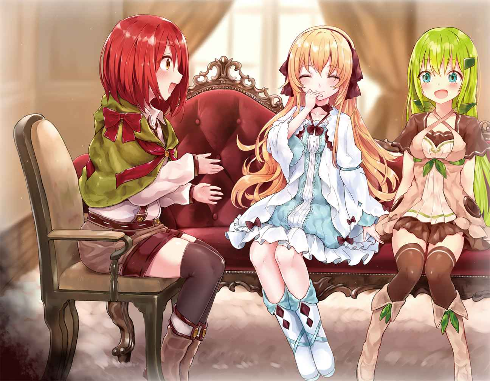
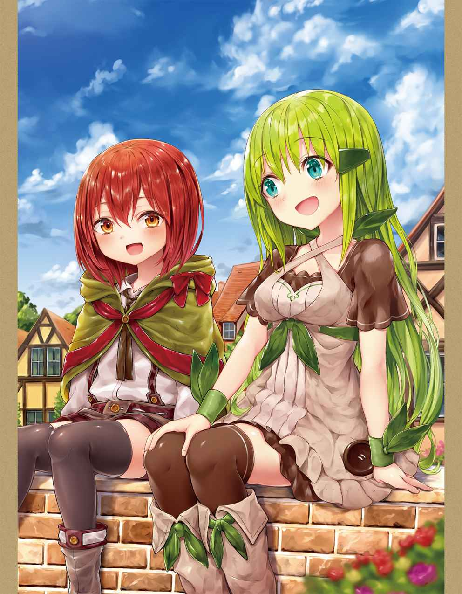
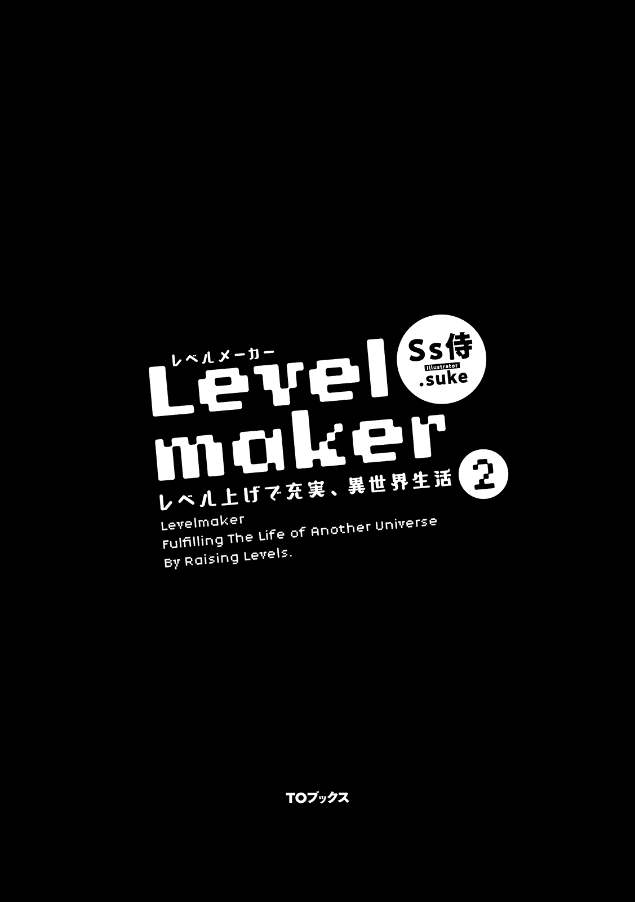
死んだ。私は死んだんだ。死ぬってこういう感覚なんだね。
でも......それもいいのかもしれない。お母さんとお父さんと
それにしても目が開けられそう。背中にはしっかり地面があってあたりも肌寒い。あの世っていうのはこうも何かに触れてる感覚がちゃんとあるものなのかしら。いや、もしかしたら本当は死んでない可能性もある。妹のことは心残りではあるし、お母さんやお父さんに二度と会えないのも嫌だから、それならそれでいい。私はゆっくり目を開けた。
「う......ん......？」
あたり一面、どう見たって森の中だった。私が横たわっていたのは少しの草が生えているだけの黒めの土の上で、肌寒いのは森が深くて日が当たりにくいからだと考えるのが自然だと思う。
状況が全く読めない。なんだか涙がこみ上げてきていたような気もするけれど、それも引っ込んだ。普通に考えたら私は病院のベッドの上とか、助けられていなかった場合は道路の上、とかにいるはず。死んだとしても、今までいろんなメディアで見聞きしてきたようなものとはまるで違う。それに現実的で死んだ心地はしない。
まさか誘拐されてここに連れてこられたとか？ それは有りえるかも。私や有夢は昔から変質者に狙われやすいし。
うん、すこし冷静になろう。まず身体のどこも痛みを感じない。かといって死んでるわけでもないように思える。どこか触られたり弄られたりした感覚もない。服は......ちゃんと着てるけど着替えさせられてる。今朝はうちの学校の制服で登校してたはずなんだけどな。
それより、なんだか身長が縮んでいる気がする。その上、肌も少しだけ昨日より白くなってる気もする。ううん、そんな
頭の上に何かが触れた気がする。頭の上に葉っぱでも落ちてきたのかもしれない。そう思って払ってみると、それは一枚の紙だった。日本語でなんか書いてある。私は読んでみることにした。
《突然のことで驚いたことでしょう。残念ながら貴女は暴走したトラックに
貴女は私の頭に落ちてきた鳥のフンを取り除いてくれたり、周りの掃除をしてくれ、お供え物までくれることがあるでしょう。それにとても優しい子であることも知っています。
ですから私は日頃の感謝の念から、私の出来る範囲で貴女の魂を救い出し生かすことにしました。しかし肉体は滅びてしまったため、止むを得ず、私が覚えのある地球ではない別の世界へと送る形となってしまいました。
貴女が今そこにいる世界は、いわゆる異世界。
その名も、『アナズム』。
地球で思い残すこともたくさんあるでしょう。力が肉体まで及ばず、本当に申し訳ありません。
ですが、こうして魂は残り新たな肉体を得たのです。アナズムでの新たな人生を楽しみ、幸せになってください。
......では、このアナズムで暮らすための基本的な知識などを与えましょう。
貴女にはまず、アナズムの言語の知識を与えておいてあります。読み書き会話には困らないはずです。
次に最も重要なステータスの確認方法をお教えしましょう。
このアナズムの住人には地球のゲームのようにステータスがあります。【ステータスが見たい】と頭の中で強く念じるとステータスやこのアナズムで暮らして行く上で役立つ情報が見えてきます。もっともそれはステータスの存在同様にアナズムの住人全員ができることなので、貴女一人の特別な能力などではありません。ステータスに関する会話もなされたりするでしょう。
次に年齢についてです。貴女は地球では十六歳でしたが、このアナズムでは十二歳になっています。なぜならアナズムの一年は十六ヶ月ですから、見た目や身長もそれに合わせられています。
基本的な情報はここまでとなります。最後に忠告です。とても重要なのでよく読んでください。
この世界でも死ぬと、今度は本当に死んだことになりあの世へと送られることになります。気をつけて行動して下さい。
私からは以上です。
幻転地蔵は思い入れがある。うちの近くにあったいわくがあるっていう噂のお地蔵様だ。ちょっと不気味だったけど、よく有夢と一緒に暇つぶしでお掃除したりしたっけ。有夢は優しかったから私はそれに付き合ってた感じ。
それでお地蔵様が私を助けてくれたっていうこと？ そんな日本の童話みたいなことがあるんだね。あといわくつきだって噂はあながち間違いではなかったわけだ。
身長が縮んだのも納得いった。地球とアナズムっていうらしいこの場所とでは時間の流れが違うっぽい。魂だけ助けたって書いてるし、肌と髪の色が違うのもまあ原理はわかんないけどそういうこともあるんじゃないかな、なんて思える。
それにしてもこんな森の中じゃなくて、もうちょっとアナズムの住人ってのに見つかりやすい場所にしてくれれば良かったんだけど......贅沢は言ってられないかな？ そうね、サバイバルすることとか移動する先とか、救助される方法を考える前にステータスっていうのを見てみようかな。
紙に書かれていた通りにステータスを発動してみると、ほんとうにゲームみたいなことになっていた。頭にステータス画面が浮かんでくるのは違和感しかないけど、このアナズムではこれが当たり前らしい。身体能力とか知力とは別に人を形成するものがあるなんて、まさに別世界って感じね。
ステータスを開いていたら、唐突に頭の中でステータスやらスキルやらの説明を受けた。どこからともなく語りかけられるような感覚だったけど、声っぽいのの送り主は多分幻転地蔵のような気がする。スキルの合成や進化のようななおさらゲームみたいなのも説明を受けた。最後に励ましの言葉をもらってそこで説明は終わった。ゲームっぽいってことは魔物とかも現れるのかな？ 私に戦えるのかな。いつも有夢と翔に守ってもらってばっかりだったしな。あ、有夢も守られる側だった。
.........根拠がないのでなんとなくだけど、どうもここには有夢が居る気がする。私の勘がそう言ってる。そもそも、お地蔵様に優しくしてたのは有夢だし、こんなまさに大好きなＲＰＧのようなところにいないほうがおかしい。そう、有夢がいるかもしれない。ああ、有夢！ また会えるかもしれないの？ もう一回会えるの？ 有夢......会いたいよ。会って話したいことたくさんあるよ。会って好きだって言いたいよ！ うん、そうと決まればここをさっさとでてしまおう。有夢に会うために！
とは言ってもまずはここをしばらくサバイバルしながらなんとか抜けなきゃいけないわよね。歩いてる途中で敵にあったりしたらレベル１の私は絶対危ないと思う。まさか死んでから自分の身体でゲームみたいなことするなんて予想もしてみなかった。となれば大事なのはステータスよね。自由にスキルポイントっていうのとステータスポイントっていうのを割振れるみたい。ステータスは何が大事かまだよくわからないから、スキルからどうにかしてみようと思う。
魔法で水の確保ができそうだから、水術っていうスキルに３ポイントだけポイントを割り当ててみた。さっそく魔法を唱えてみると、空中からお水の球が出てくる。これを浮いてる間に魔物に飛ばして攻撃するらしい。の、飲めるかな？
「んくっ......」
すごい、ほんとうに飲めるみたい！ 特別美味しいわけじゃないけど飲み水や生活水としては十分使えそう。魔法っていうのはすごいわね。これで私も魔法少女かな？
とりあえずサバイバルに必要なのは水と火よね。だから私はもう一方の火術っていうのに６ポイント割り振ってみた。こっちの方がポイント多いのは威力がなんとなく高そうだから。これでしばらくは生きられるはず。たくさん魔法を使えるようにするために、とりあえずステータスポイントは全部ＭＰに入れちゃった方がいいかな。
私はとりあえず前を歩き出してみることにした。遭難した時はその場からあまり動きすぎないようにするのがいいけれど、これは遭難じゃなくて探索に近い。割と道は整備されてるから同じ場所をぐるぐる回るなんてことにはならなさそう。まっすぐ行けばもっと大きな場所に出るはず。
でもあんまり目立つように音を立てて歩くのはやめた方がよさそう。実際に姿を見たわけではないけれど、明らかに何かがいるような物音がときどき聞こえてくる。そういう時は息を潜めてその場に留まるの。だから大して歩けていない。体力も必要だけど精神的にもかなりきつい。もし翔みたいに屈強な男子だったならもっと楽に進めるんでしょうね。何か出てきても投げ飛ばして対処しそう。もう二度と会えないのでしょうけどね。なにせ、死んだんだし私。
......それにしても歩けど歩けど景色は変わらない。進んでることは確かなんだけれど、不安になってくる。
「グリュリルオアアアアアアアアアアアア!! 」
「ひっ......」
なに今の唸り声!? どう考えてもやばいのがいる。熊やライオンなんかじゃなくて、それこそ地獄からやってきたケモノみたいな。複数の猛獣が一度に泣き叫んだようなそんな感じ。正直一瞬死んじゃうのかと思った。もう死んでるけど。私は思わずその場に突っ伏した。湿った草木のにおいが鼻に入ってくる。青臭い。
少しずつ、大きな物音は一切立てないように。突っ伏していたとしても前に進むのはやめない。でも、このままだとこの森を出るのに何時間かかるかわからない。そうよ。そもそもこの森がどこまで続いてるかすらわからないんだから。
「ふぅ......はぁ......」
進み始めてから......体感だと五時間くらいかな。そんなに進んでいないのに、どっと疲れてきた。寒さも天敵だって言える。普通なら気にしないくらいの肌寒さだけど体力勝負の今の状況だと私からそれを奪う手助けをしてくるの。火をつけて目立つわけにもいかないしね。
それに一日で森を抜けられるとは思ってないから、食べ物も同時に見つけなきゃならない。木の実か何かが成ってないかと、たまに上を見上げたりするけれど、食べられそうなものはなにもない。最悪そこらへんの草か葉っぱを食べるしかない。ほんっとうに水はあってよかったと思う。
テレビ番組や動画サイトでサバイバルをする内容の映像を見たことはある。でもこんな事前準備や予備知識がない状態なんかじゃなかったし、身体も小さくさせられてなんかいなかった。生きていけるのか不安になってくる。きついよ、助けてよ、あゆむ......。あゆむ、有夢ならきっとこんな状況なら......「まずは道具を作るところから始めるよ！ ゲームでもそうでしょ？」とか言ってそこらへんの木からなんか作りそう。そんな気がする。
有夢のことを考えたらちょっと元気出てきた。そうよ、マイナスなことばかり考えていたら体力だって減っていくんだから。せめて好きな人が同じようにアナズムに来てることに期待を持って行かなきゃね。
「あうっ」
有夢に私の手料理をあーんって食べさせる妄想をしていたところで木にぶつかった。妄想はしてたけど周囲には気をつけてたし、何かにぶつかるなんて思ってなかったけど......そもそも数秒前までこんなところに木なんてあったかな。
「ンアァ......？」
「え？」
木の根っこが触手みたいに動いてその場で回った。私がぶつかったのはその、木のような生物の後ろだったみたい。前を向いたそれには木で作られたお
「あ、あ......」
「............ァ」
直感でわかった、この生き物は私を殺せる。見た目はゲームからそのまま飛び出してきた木の化け物。もし安全な場所から見てるだけだったら物珍しさに感心してただろうけれど、そんな暇はない。おそらく地球で言えば野生の熊や大きいイノシシ、狼の群れにあったような......そんな......!!
「ン......アァ」
「はっ。おぐっ......ぅあっ!? 」
足のように動かしていた根っこのような部位を
痛いっ......死ぬ、いたい。お、お腹破裂した？ 吹っ飛ばされて背中を強く打った？ まだ水しか口に入れてない生まれ変わった私の体からいろんなものが出ようとしてる。このままじゃ死んじゃうよ。死ぬのこわいよ。あゆむ、死ぬのこわい......。
「おはようございますアリムちゃん。ぐっすり眠れましたか？」
「......ん、うん。おはおー......」
えーっと俺は確か......そうだ、食会で色々あった後にカルアちゃんと寝たんだった。一回深夜に起きたけど二度寝してからぐっすりだったんだね。頭がぼーっとして数秒なにも考えられなかったよ。
外はとってもいい天気だ。昨日の雷雨が嘘みたい。フワッフワなびくカーテンの間から差し込んでくる光がいい心地。
「いまにゃんじ？」
「朝の八時半ですよ。私とアリムちゃんの分の朝食ができたらしいです。さっき料理長さんが直接伝えに来てくれました」
「ほほー」
「一緒に食べましょう！」
「うんっ！」
俺はお客さんだから別かなって思ってたけど、一緒に朝ごはんを食べられるんだね。本物の王様やお姫様が食べるような朝ごはんかぁ......やっぱり、ゆで卵を専用の容器に入れてキャビア乗せてスプーンですくったりするのかな？ なんだかワクワクしてくる。ここの料理長さんのお料理はサッと作ってくれた軽食でも世界的な高級レストラン並に美味しかったからね。
俺とカルアちゃんは着替えてから部屋を出て食堂へと向かった。お洋服はお城の雰囲気で選んだよ。メイドさんや執事さんとすれ違うたびに「姫様、アリム様、おはようございます」って言ってくる。こういうのってなんかゾクゾクするよ。カルアちゃんにとっては当たり前かもしれないけどね。
「歳が近いお友達と一夜を共にして一緒の朝食を食べるなんて、私初めてで......とっても新鮮です！」
「そっか！」
どうやらこの状況は当たり前ではなかったみたい。なんかちょっと嬉しい。食堂ではやっぱりたくさんの人が忙しそうかつ優雅に働いていた。高そうなながーい机のとなりに、いつもはそこに置かれてないんじゃないかと思える普通サイズの机と椅子がポツンと立っている。明らかに料理長みたいな人が近づいてきた。
「姫様、アリム様、改めておはようございます」
「おはようございます！」
「おはようございます。私たちはそちらの席に？」
「はい、今日は特別に」
「ありがとうございます！」
カルアちゃんは嬉しそうにニッコニッコしてる。俺たちはさっそく席についた。目の前にカルアちゃんが座る。食堂の窓から差し込む光がカルアちゃんの金色の髪をもっと輝かせていた。
「いつもは朝ごはんどうしてるの？」
「お兄様やお姉様と一緒に。ただ今日は昨日の件から皆忙しいようでして」
「なるほどね」
しばらくして料理長さんが朝ごはんを運んできた。トースト一枚に絶妙な加減でバターが塗られており、カップ一杯の野菜のスープとベーコン一枚にスクランブルエッグ。飲み物は温かいアップルティー、あとでフルーツの盛り合わせも出てきてこれで一人前。
思ってたより普通の食事だ。品数は多いけど量は十二、三歳の女の子が食べるのにはちょうどいいくらい。最初にスープから口をつけてみた。やっぱりとても美味しいよ。
「美味しいね！」
「ええ、とっても。彼はいつも美味しい食事を作ってくれるんですよ」
「なんと有り難きお言葉......！」
「ふふ、本当のことですよ」
すぐに食べ終わっちゃった。朝から満足だね。
それから俺たちは身支度をして一時間くらい遊んだ。午後十時ぐらいになって国王様からメッセージで玉座の間に来るように連絡を受けたので、すぐに向かった。
玉座の間には国王様と大臣さんと騎士団長さんがいる。あとは家来さんが数人かな。ルインさんやリロさん達はみんなそれぞれ他の活動してるみたいだ。
「おはよう二人とも」
「おはようございます！ 国王様」
「おはようございます、お父様」
「カルア、どうだった。歳が近い友人を部屋に泊めたのは、初めてだろう？」
「ええ、とっても貴重な体験でした！」
「そうか！」
俺にとっても貴重な体験だったよ。よくお姫様と寝れたななんて自分でも思うけど。あれかな、
「さてアリムよ」
「はい！」
「昨日の件、カルアを命がけで守り、錯乱していた我々の代わりにサンダーバードを討伐、更にカルアに手を出そうとした犯人の撃退まで、心の底から感謝する」
こ、国王様が椅子に座りながらだけど頭を下げたよ!? こ、こんなただの記憶喪失の女の子に。そんなに感謝してもらえるのは悪くないけどさ。
「ルイン達を助けてもらったことも含めると、貸しが膨らんでしまったな。もはや保留というわけにはいかない。アリムよ、私に叶えられる範囲ならばなんでも叶えるぞ、何か願いはないのか？」
「伝説級の武器複数や、土地と家、単純に金などなんでも好きなのを選んでいい」
「それほどの功績を残したのですな」
「そうですよアリムちゃん！」
このまま貸したままでいるつもりだったけど、どうやらその貸しの内容が大きすぎちゃったみたいだね。でも俺はもう、アイテムに関しては何もいらないし、お金も十分稼げてしまう。そのうち土地と家だって大きいところを買えるようになるだろう。どうしようね？
「うーーーーん」
「そんなに悩むか？」
「十二歳の少女に金や物を与えるといっても、ピンとこないのではないですかな？」
「なるほど、それもそうだな......」
国王様も一緒に悩み始めた。ああ、地位とかをもらうって手もあるのかな。いや、俺は別にアナズムで明確な生きてく目的とか無いし地位とかもらってもなんもできない。何をもらっても特に必要ないんじゃないかと思えてくるよ。アイテムマスターって欲をなくす効果もあるのかな？ いや、ないな。
俺の様子を見ながら全員が黙ってしまって一分たったころ、国王様が名案が思い浮かんだような顔をしながら提案をしてきた。
「そうだ、アリムは記憶をなくしているのだから必要なのは知識だろう。どうだろう、この国のあらゆる図書館とこの城の書庫に自由に出入りする権利などは。本に関するならば、許可がないと入れないような場所も軽い審査のみで済むようにしよう。無論、娘の命と本を読む権利程度が同等とは思っていない。なにかより良いものが思いついたならそれも今後礼として加えよう」
おー、本に関する場所ならどこにでも入れる権利か。アナズムには漫画とかはなさそうだけど本屋さんはあるみたいだし面白かったり、タメになったりする本はたくさんありそう。それにまだアナズムについて知らないことだらけなんだ、情報収集をしやすくしておいても損はないんじゃないかな。それになにか欲しいものができたらそれを加えてくれるっていうのもいい。
「わかりました、じゃあそれでお願いします！」
「よし。では方々に連絡をしておこう。とりあえず要件はこれだけなのだが......今日はどうするんだ。カルアと遊んでくれるのか？」
「はい、もちろん！ 夕方になるまで遊ぼうと思います！」
「そうか、昨日はろくにご馳走できなかったからな、夕飯もたべていくといい」
「ありがとうございます！」
一日泊まってから次の日の夕飯までお世話になる。翔の家で同じようなことやったな、何回も。お友達の家に親がいる上でお泊まりっていうのはなんだか特別な感じがしていい。
俺とカルアちゃんは再び部屋に戻った。さっきからカルアちゃんは上機嫌だ。
「たっぷり遊べますねアリムちゃん！」
「うん、カルアちゃん！」
「ではどうしましょうか。城内を見て回りますか？」
「そうするよ」
ルインさん達がどこに住んでるかとかも気になるしね。カルアちゃんみたいに個別の部屋があるんだろうけど。お城、とっても広いしね。カルアちゃんのお部屋からスタートして一周してくることにした。
スタートであるここから右隣にルインさんとティールさんのお部屋、なぜか一室空き部屋でその隣に国王様のお部屋がある。どうやらリロさんとミュリさんとオルゴさん、大臣さんやそのほか家臣、働いてる人は居住区に住んでるらしい。ただルインさんはリロさん達とつるむことが多いからその居住区にもお部屋があるのだそうだ。あと兵士さんや門兵さんの住処は別に作られてる。どれだけ住む場所があるんだろうね。さすがお城だよ。いっそ俺もここに住もうかしら。
王様達の部屋の区域を抜けるとさっき朝食を食べた食堂があった。この食堂は王族の日常的な食事や、貴族との会食用だったみたい。働く人達のための食堂が別に数カ所あったり、そもそも居住区には各部屋に台所がついてたりするんだって。
会議室や重要な見張りのついた資料室、多目的な部屋などを通っていくと長椅子がポツンと置いてあって、そこにリロさんとミュリさんが非常に仲睦まじい様子でお話ししながら座ってた。お城が広いからこういうちょっとした休憩スペースはいくつかあるんだって。リロさんとミュリさんが俺達に気がついた。
「あーーっ！ カルア姫とアリムちゃんっ！」
「お二人ともおはようございます」
「おはようございますお姉様方！」
「二人とも今日も可愛いよぅ！」
リロさんが俺とカルアちゃんをまとめて抱きしめてきた。リロさんに抱きつかれるって胸の関係で窮屈なのに、それが二人となるともっと窮屈。大柄じゃないから、リロさんも俺たちを抱きしめるの結構キツそうだけど気にしてないみたい。
「お二人とも一緒のお部屋で一晩を？」
「そうなんですミュリお姉様」
「カルア姫が私達以外とねー。今度は四人で寝よっか？」
「ふふ、いいですね！」
というわけで俺とカルアちゃんの城内探検にリロさんとミュリさんが加わった。長椅子から先に進むとお化粧をする部屋があって、その隣に衣装室があった。重要な人物と会う際はここでカルアちゃんやルインさんが衣装替えをするらしい。てことは今日の格好はみな普段着ってことになるけど、それでもそれぞれ高級感がある。ま、王様や宰相の娘さんだし当然か。
「そうだ、アリムちゃん、私のドレス着てみませんか？」
「カルアちゃんのドレス？」
「はい！ きっと似合うと思うんです！」
ドレスかぁ。女の子の憧れだよね。せっかくだし着せてくれるなら着てみようかな。お姫様が着るようなドレスって興味あるし。
「じゃあお言葉に甘えて」
着てみるだけなのでお化粧なんて凝ることはしないよ。衣装室に入るなりカルアちゃんが自分の名前が書かれた区画から俺に着て欲しいものを選び始めた。ここには王様達一家全員分の正装があるみたいだ。どれもこれもアイテムのランクは最高級か宝級。
一着だけ異様に丁寧に飾られており、国宝級という上から二番目のアイテムのランクに属してるドレスがあった。でもそれはカルアちゃんのじゃなくて......カルナって人の区画にある。カルナって誰だろ？ ドレス選びに夢中になってるカルアちゃんの代わりにリロさんとミュリさんにきいてみた。
「あの、カルナって方は一体......」
「そっかアリムちゃん記憶ないから知らなくて当然だよね。カルナ様はこの国の王妃様だった方だよ」
「つまりカルアちゃんのお母さんですか？」
「そうなりますね。ただ、もう......」
ミュリさんは言いづらそうにしてる。どうやらカルアちゃんが幼い頃にお亡くなりになられたらしい。そうだったのか。いや、よく考えたらそうだ。玉座の間の国王様が座ってるスペースは玉座が二つは入りそうな広さだし、王族の部屋の周りに不自然な空き部屋があるのも変だ。つまりそれらは全部、カルアちゃんのお母さん、カルナ王妃のものだったんだね。
物が残したりしてあるってことはあんまり国王様やカルアちゃんに尋ねるのは良くなさそうだ。変な琴線に触れたら困るし。二人にきいて正解だったかも。
「とっても美しい方でした」
「そうなんだよ。このお城に何枚か飾ってある肖像画を見ればわかるけど、アナズム一の美女なんて言われてたんだよ。しかもこのメフィラド国だけがそう唱えてたんじゃなくて、いろんな国もそれを認めてたの」
「そんなに......！」
それほどなら美花といい勝負をするかもしれない。肖像画でもいいから見てみたいな。お城を回ってるうちに見つけられるかな？ そうこうしてるうちにカルアちゃんが俺に似合いそうなドレスを五着くらい選んできてくれたみたいだ。
「アリムちゃん、どれにしますか？」
「じゃあ真ん中のにするよ」
「わかりました！ ではさっそく着替えましょう！」
三人で俺を着替えさせ始めた。ドレスはすごく綺麗で、本当に元男である俺が着ていいものなのかちょっとだけ考えてしまう。まあでもやっぱり着ること自体にはなんにも抵抗がない。大きさはドレスの方からぴったり合わさってくれた。
「はぁぁ......アリムちゃんすごく綺麗です！」
「ほんと、見惚れちゃうほど可愛いよっ！」
「えへへ、そうですか？」
「ええ、元々どこかの国の王族だと言われてもすんなり信じられますよ。さ、鏡を見てみてください！」
促されるまま高級そうな大きい鏡の前に立った。なるほどこれは可愛い。ミュリさんの言う通りどこかのお姫様みたいだ。本物のお姫様のドレスを着てるんだしそう見えて当然かもしれないけど。
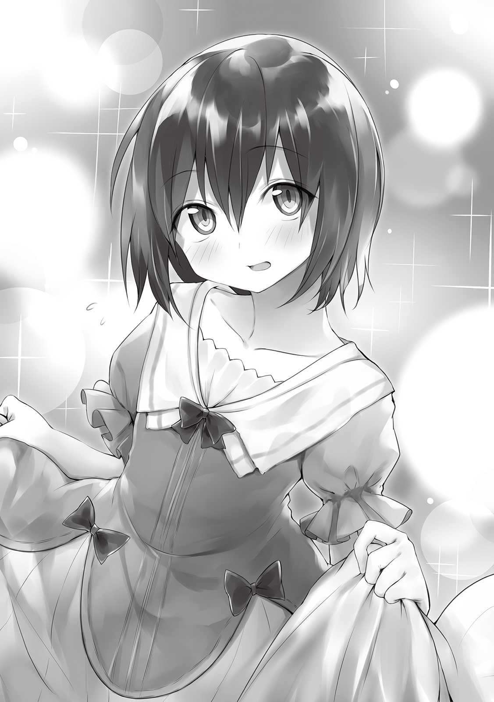
もう数着、また違ったタイプのドレスを着させてくれた。いや、俺が着させてもらったって言うよりは、俺で着せ替え遊びをしてたって言ったほうがいいかもしれない。
「満足です！」
「そっか、喜んでもらえたみたいで良かったよ」
ドレスを着せてもらってお礼を言われるなんてなんだか変な気分だ。着せ替え遊びだけで一時間は経っていた。そのまま俺たちは衣装室からでて城内の探索を続けることにした。
二階にあるものは粗方見たので一階に降りることになった。こっちには兵士さん達の訓練場などがあるらしい。この城の中で一番大きい中央階段から下に降りてる最中に、カルアちゃんを大人にしたような女性の肖像画が飾られていた。これがカルナ王妃って方か。二人の言っていた通り本当に綺麗な人だ。アナズム中の人気者だったってことが容易に納得できる。
「アリムちゃん、一階は様々な施設とつながっていてとても広いですから、はぐれないよう気をつけてくださいね」
カルアちゃんは階段を降り切ってからそう言った。広間だけでもとんでもない広さなのに訓練場や居住区にも繋がってるんだもんね。ここで逸れたら確実に迷子になる。俺はちょっとしたことを提案してみることにした。
「じゃあ手を繋いでくれる？」
「手を？......いいですよ！」
なんとなくだけどね、こうすればもっと仲良くなれるかなって。一緒のベッドで寝てるのに今更握手くらいなんてことない。
カルアちゃんの手は細くてちょっと冷たかった。ただ
「いいなーカルア姫。私もアリムちゃんと手を繋ぎたいよ！」
「私もです。しかし四人で手を繋いだら流石に他の方のお邪魔になりますから、ここは年上として我慢しませんか」
「ううー」
「代わりに私がリロと手を繋ぎましょうか？」
「じゃあそうしようか」
俺とカルアちゃんの隣でミュリさんとリロさんが手を繋いだ。この人たちもほんとうに仲良いよね。そのまま四人二組で城内探検を開始した。途中ですれ違ったメイドさんや執事さん、警備兵さんまでもが俺たちを見て平和そうに微笑んでいる。
そろそろ兵士さんの訓練場に着く頃だとカルアちゃんが言った時、目の前にある兵士連絡室と書かれたお部屋から慌てた様子の兵士さんが一人、勢いよく飛び出してきた。ぶつかりそうになったけどなんとか寸前で立ち止まってくれる。
「うわぁお！ ひ、姫様方!? こ、これは申し訳ない!! 」
「いえ、お気になさらず。酷く慌てているご様子ですが、どうなさったのですか？」
「じ、じつはファウスト......い、いえ、申し訳ありませんが先に国王様に報告させていただきます！ すみません！」
「そうですか、それなら先をお急ぎください」
お姫様と立ち話をしてる暇がないほど急ぐのか。これは相当なことがあったな。ていうかファウストって言ってたよね？ あの誘拐未遂犯がどうしたっていうんだろう。捕まえるのに成功したってだけならこんなに慌てたりしないよね。
「すごく慌ててたね......」
「どうしましょう、国王様の元に行ってみますか？」
「今の時間ならお父様は会議室に居るはずです。私、アリムちゃんに傷を負わせた方のことを絶対許せませんから、どうなったか聞いてみたいです！」
「じゃあ行こう！」
別に俺が顔を火傷したのはサンダーバードっていう魔物の攻撃のせいなんだけどな。それにもう完治したし。あ、でもセクハラされたから間違ってるってわけでもないか。
俺たちはもう一度二階へ上がり会議室へと向かった。兵士さんが中に入っていくのが見えた。さてどうしようか。会議室は鑑定した限り、かなり厳重な防音がされているから外で聞き耳たてたって聞こえないだろうし、透明になってこっそり入ろうかな。そう思っていた矢先にカルアちゃんはノックをしてから会議室の戸を開けた。
「え？」
「どうかされましたか？」
「いや、こういうのってこっそり入るものじゃないの？」
「そうですね、重要な作戦会議なら流石に入りませんが......私を誘拐しようとした犯人のことならば私たちに関係があるのでお父様は許してくれると思いますよ」
「そ、そうなの？」
国王様が開けられた戸からこちらを見てる。大臣さんや騎士団長さんも居るね。兵士さんはきょとんとした顔でこっちを振り向いた。ちなみにカルアちゃんの行動力にリロさんとミュリさんもきょとんとした顔をしてる。
「お父様、私とアリムちゃんに関係する内容だと耳にしましたのでお話を一緒に聞こうと思い参上しました」
「あ、ああ。カルアに先に話したのか？」
「いえ、あ、でも途中までならポロっと......」
「そうか。それならばカルアと他の三人も空いてる椅子に座って話を聞くがいい。......では落ち着いてゆっくり報告してくれ」
兵士さんは俺たちにファウストの行方について話してくれた。結論から述べるとファウストは見つかったものの死んでしまっていたらしい。その遺体がヘルの森っていうＤランク以上の魔物がわんさか出現する場所で発見されたそうだ。ただそれが明らかな変死体だったらしく、魔物の被害にあったのではなく何者かに殺害されたとみて間違いないそうだ。どんな状態かまでは言ってくれなかった。国王様と大臣さんに耳打ちしてたから、そこらへんは後で詳しく国王様に報告するんだろう。
「......そうか。とりあえず脅威は去った......とは考えにくいなこれは」
「そうですな。まだわからないことだらけですし」
カルアちゃんの誘拐が失敗したと考えるなら、ゲームでよくある「失敗した罰で殺された」みたいな展開かもしれない。俺がファウストの指を切断してしまったことは死因には関係ない......はず。
いくらセクハラ魔の誘拐未遂犯とはいえ、昨日会って話した人が変死体になって発見されたっていうのはとても気分が悪い。
「とりあえず警戒を緩めるという選択肢はないな。カルア自身も十分に気をつけてくれ。何か異変に気がついたら誰でもいいからすぐに報告するのだぞ」
「リロとミュリ、そしてアリム殿もですぞ」
俺たちはただ頷いた。見つかって捕らえられたって報告を待っていたのに事実は全然違って全く安心できない。さっきまで四人で楽しく遊んでたのに気持ちはすっかり落ち込んでしまい、誰も気分が乗らなかったので今日の城内探検はこれで終いとなった。
軽く昼食を食べたあと、リロさんとミュリさんの二人と別れて俺とカルアちゃんは部屋に戻った。
「......な、なんだか大変なことになりましたね」
「うん」
ベッドの上に二人並んで座ってお話をしようとしたけれど、うまい具合に話が進まない。こんな不安が駆られるような状況で何か話題を出せって言われても無理だけど。そう思っていたらカルアちゃんの方から話をふってきた。
「そ、そういえばアリムちゃん」
「なぁに？」
「あの、記憶を戻す手がかりになるかもしれないことを今朝、偶然聞いたのですが......」
「ほんと？」
「はい、起こす十分くらい前から寝言で......」
俺が寝言で人の名前を連呼していたらしい。特に「ミカ」という名前を。そうか、両親や弟じゃなくて美花と連呼してたか。なんだか好きだって自分で言いふらしてるみたいで恥ずかしいな。
ともあれ今の俺は記憶喪失っていう設定だ。いい感じに誤魔化しておこう。
「そっか、なんだか懐かしい気もしなくもないな」
「ほんとですか！」
「うん、今はけっ......検討もつかないけどね！」
その後は俺がどこからやってきたかという話題で話を続けることができた。何か遊び道具でもあれば話を考えなくてもいいんだけどね、この部屋にはボードゲームや二人で遊べそうなオモチャもない。カルアちゃんが特別そういう教育されているというわけでなく、もともとアナズム自体に本くらいしか娯楽がないみたいだ。
しばらくして夕方になって、ドラゴン肉のローストがメインのとっても豪華な夕飯をご馳走になった。夕飯は家族全員でとるようにしているそうで、国王様とティールさんとルインさんも席を一緒にした。それを食べ終わったら俺は予定通り帰ることにした。
「また、いらっしゃいますよね？」
「うん、必ずね。また来たくなったらメッセージで連絡するよ。あ、逆に来て欲しくなったら連絡してね」
「はい！ ではまた！」
「じゃあね！」
色々ありすぎてなんとも濃い二日間だった。カルアちゃんの身に危険が迫らないことを祈ろう。身を隠さないと話題好きの町民に揉みくちゃにされるので、透明になりながらウルトさんの宿に戻った。やることがないので、部屋に入るなり俺はさっさと寝てしまうことにした。
▼△▼△▼
翌日。
俺は朝ご飯を食べ終わってから今日は何をするか悩んでいた。せっかく冒険者としてのランクがＳランクにあがったのだし該当する依頼を受けてみるか、それとも図書館へ行ってこの国の歴史を調べたり、記憶喪失としての設定を深くできるようなそれっぽい資料を探すか迷うな。カルアちゃんに着させてもらったドレスが綺麗だったのであれを参考に服を数着作るのもいい。
十分くらい考えていたところで、頭の中にメッセージが送られてきた。送り主はおよそ一週間前に俺を護衛の補助として雇ってくれた商人のパープルさんからだった。
【ん〜、アリムちゃん元気？】
【パープルさんこんにちは！ はい、ボクは元気ですよ！】
【それは良かった。前に仕事した時のことを覚えてるかしら？ サンドイッチとオセロだっけ、あれのことでそろそろ話をしたいなと思ってね〜。かなり忙しいかもしれないけど、暇な時に来てくれないかな？】
【わかりました！ 時間なら今日が空いてますよ。お仕事入れてないので】
【そうなの？ じゃあ今から一時間後、メディアル商会本部に来てくれるかな。場所はわかる？】
【はい、大丈夫です！】
【じゃあ待ってるね】
いい頃合いに商談が入ってきたな。メディアル商会は一度訪ねたことがあるから場所はわかる。だいぶ大きな建物なんだよね、あそこ。お金持ちな人が出入りするような場所だからお城に行くくらい身だしなみもきちんとしたほうがいい。
三十分ほどかけてサンドイッチの試作品、レシピ多数とオセロのルール説明を書いた紙を用意しておき、頃合いをみはからってメディアル商会本部へと向かった。
前に来た時と変わらず門番さんがしっかり立って仕事をしている。俺はギルドカードを提示した。
「パープルさんに呼ばれてきました！」
「ほ、本物だ！ は、話は聞いておりますお通りください。案内は......」
「一度来たことあるので大丈夫です！」
通してもらって中へ。早速パープルさんが待ってくれていた。ここの商会の商人さんはちょっと豪勢な格好してる。儲かってるんだろうなぁ。
「ん〜！ ありがとう来てくれて」
「いえ。では早速お話しましょうか」
前に来た時みたいに今度はただの売り買いではなくアイデアを提供する話し合いだからか、前とは別の部屋に通された。この部屋はどうやら防音が施されており、さらに外から部屋の中を見れないようになっているみたいだ。
「じゃあもう一度二つとも実物を見せてくれる？ んー、サンドイッチは料理だから台所が必要かな？」
「いえ、もう作ってきました。レシピも書いてきてます」
「ん〜、そっかそっか。でも用意はしてあるから必要だったらマジックルームをだすね〜。あ、実物はあの台の上に置いて」
俺はサンドイッチからその台の上に並べた。食べ物だから先にこっちの話をした方がいいよね。今回用意したのはハムサンド、たまごサンド、ホットサンドなど計七種。それに加えてハンバーガーとホットドッグもないみたいだから用意した。
「ん〜、食パンに野菜や肉を挟んだだけなのにあのおいしさ！ よ〜く覚えてるよ〜。ところでサンドイッチ以外のものもあるみたいだけど？」
「パンに具を挟むっていうのでは同じものですよ」
「ん〜、それにしてもパンで具を挟んで食べるなんて発想、今までなかったわ。いいアイデアよね」
どうやらアナズムには『挟む』という調理法自体が存在しないっぽい。だからピザやレーズンパンみたいな『乗せる』『練り込む』といった料理はあるけど、ケーキのスポンジの間に生クリームを塗ったりしない。
ただアナズムの食文化は正直文句がないくらい発達してる。揚げ物も焼き物も美味しいし、なんなら魔物のおかげで地球じゃ絶対味わえないようなものも数多くあって、むしろこっちの方が発達してるくらい。ピピーの村の名産だったカバっていう野菜だって向こうにないしね。お米やお味噌がないのが悲しいけど、外国で暮らしてると考えれば自分を納得させられる。
......そう、それなのに挟むっていう技術がないんだ。でもこれも仕方ないかなって思ってる。例えば日本にはかなり長い間炒めるっていう調理法がなかった。むしろ日本の歴史と比べたら一般に普及したのが最近と言ってもいいくらいらしい。ま、そう考えたらこれも自然だよね。
「一つずつ味見してもいいかな？」
「ええ、もちろん」
パープルさんは一口大に切り分けてあるサンドイッチを一つずつ美味しそうにつまみながら、それぞれのレシピを眺めている。すべて試食し終えたパープルさんは上半身だけくねらせてこちらを振り向いた。
「半分以上マヨネーズが入ってるね〜」
「はい、それが一番合うので」
メモもしっかりとってる。商売熱心だな。俺としては自分が考え出したわけじゃないものを商談に出して大丈夫かっていう懸念があるんだけど。
「なーるほど、食パンに限った話じゃないのね。挟む......なんだかこれでアナズムの食文化が進展する気がするわ〜」
「そうかもしれないですね」
「じゃあもう一つの説明を始めてもらう前に、サンドイッチについての商談をまとめていきましょう」
パープルさんが提示してきたのは、サンドイッチという料理のレシピを......いや、『挟む』という調理法を方々のレストランなどに公開し、ゆくゆくは一般に普及させるということだった。まずはこの商会が運営してるレストランで出してみるそうな。
俺にお金が入るのは、レシピ本が売れた時や調理法を教えた時に出る報酬。こうして商会がもらうお金のうち数割が俺に渡されるらしい。パープルさんはあんまり儲けにならないことを謝っていたけど、一般に普及させるのが第一だし、自分のアイデアじゃないもので商談をしてるだけでも後ろめたいのに大金を得るのは流石に気分が良くないからそれでちょうどいい。
「じゃあ次にオセロね！ あれは単純だけどとっても楽しかったわ〜」
「ではサンドイッチと同じように実物と詳しい遊び方を」
作ってきたものを台の上に置いた。もしこれが普及してくれればカルアちゃんと遊ぶ時もおしゃべりだけじゃなくてこういうボードゲームができるだろう。なんならこれを基盤にアナズムの娯楽が増えて欲しいものだ。
「作り方も教えてちょうだいね」
オセロ盤と駒の作り方は紙に書いてこなかったので、仕方なく実物を分解して説明した。
「いいわね〜、サンドイッチといいよくこんなの思い付くわ。ありがとうね」
「あはは......」
やっぱり後ろめたいよ！ 俺が考えたわけじゃないのにそれで感謝されるなんて！ とにかくこの話もトントン拍子に進んでゆき商会で大量生産して販売することになった。この売れたうちの数割を俺がもらえるそうな。どのくらい売れるんだろう。娯楽が冗談抜きで少ないからな、案外飛ぶように売れたりして。
「じゃあ今日の話はここまで！ また何かあったらお願いね」
「はい！」
「ほんとアリムちゃんってば可愛くて強くて、創造力もあって、いい子で......素敵ね〜」
「あ、ありがとうございます！」
そこまで褒められると照れるじゃないか。ともあれこれでとりあえず約束事を一つ終わらせたんだ。また冒険者としての活動に戻れるね。流石に今日はもう働く気はしないけどね。
寄り道せずに宿屋に戻ると、ウルトさんがちょっと困った顔をしていた。彼の目の前には破壊されたと言っても過言じゃないくらいひしゃげた鉄製のオブジェがある。この宿の受付付近に飾ってあったものだ。
「ウルトさん！」
「あ、アリムちゃんお帰りなさい」
「どうかされたんですか、その置物」
「うん......あんまり大きな声で言えないんだけどね、ちょっと荷物を移動させるのに邪魔だったから動かそうとしたんだよ、それでね......」
なんでもその動かす際にめちゃくちゃ重いことに気がつき、ＳＳＳランクの冒険者としてのステータスを利用して持ち上げたらしいんだけど、その時くしゃみしたせいで力の入れ方を間違えてこうなってしまったらしい。
「あー、俺の親友にもらったものだったんだけど。どうするかなー、あいつ怒らないだろうけど悲しむよなぁ」
そんな重いオブジェをくれる友達ってどんなのだ。ちょっと想像できないぞ。ウルトさんは再びその壊れた部分を見てため息をついたけど、すぐに何かを思い出したように俺の方を振り向いた。
「アリムちゃん、これ、アイテムマスターの力で修理できない？」
「多分できますよ」
「そっか、すごく助かるよ！ お礼はするからお願い！」
というわけで修理することになった。オブジェはウルトさんくらいの大きさがあって今の俺にはかなりのデカさだったけど、アイテムマスターの力を使えばなんてことはなく、すぐに修理は終わった。
「あっという間に直した......。すごいなー、ほんとうにありがとう！」
「いえいえ」
「お礼に向こう十日間、アリムちゃんから宿代を取らないようにするよ」
「いいんですか？」
「うん、そのくらいのことはしてもらったから」
そういうことならお言葉に甘えよう。やっぱり地球の技術を勝手に広めてお金を得るより、断然、こうやってちゃんと仕事する方が俺は好きだなー。
▼△▼△▼
「ぁ......」
私は生きてるの？
ゆっくりと目を開けてみた。相変わらずここは薄暗い森の中みたい。私がお腹を強く打たれてから結構時間が経ったのか、さらに暗くなってる気がする。日が暮れるまであと少しと言ったところかな。
意識は少し
確実に死んだものだとばかり思ってたし、有夢との思い出を中心に走馬灯も見えたけれど案外生きてるものね。ああ、たしかヒットポイントがなくなっても気絶で済むんだっけ。それが作用したんだ。気絶しているあいだにほかの化け物が来なかったことや、あの木がトドメをさしてこなかったのは運が良かったのかな。
とりあえず立ち上がろうとしてみたけれど、足がフラフラしてておぼつかない。それに肌寒さも増していてしばらく寝ていたあとだっていうのに体力は限界に近いみたい。私は木に寄りかかろうとしたけど、あの時のことを思い出してやめておいた。
ここから私はどう進めばいいのだろう。とりあえず今日はここで野宿した方がいいのかな。おそらくあと半時間もしたら辺りが完全に暗くなって一歩も歩けなくなるわね。
ぐぅ......。
お腹がなった。私は思わずお腹を押さえた。恥ずかしさからじゃなくて、変な物音を立ててまた変な生き物に遭遇したら困るから。お腹に手を添えるだけで鈍い痛みが全身に走る。
下手に動けないこの状況、体力は尽きかけていて食料はなく、寒さをしのぐ手立ては他の化け物をおびき寄せかねない。どうしよう、八方塞がりじゃない......。
ひとまず体力を回復させようと思い、あたりに食べられそうなものがないか必死に探した。地面もほじくり返してみた。木の実や野イチゴでもあればよかったけれど、ここまで歩いてきて一切見つからなかったように当然この場所にもなかった。そもそも気絶する前より暗いから到底見つけるなんて無理な話。かと言ってこのまま死ぬのを待つのは嫌。アナズムには有夢が居るかもしれないのに。
「グルォ、グルルルルル」
「ひっ......」
近くで掠れるような獣の唸り声が聞こえた。いや、もしかしたら近くないのかもしれない。でもそれは私の恐怖心を煽るのには十分だった。私の体は必死に反応していて、気温とは別の寒気が止まらない。気がついた時には木の化け物であるかどうかも確認せずに一番近くの木の上に登ろうとしていた。乾いた木の皮が掻き
かなりの時間をかけて木の上に登ることができた。その頃にはすでに獣の唸り声はどこからも聞こえなくなっていた。でもここならなんとか地上よりは安心して眠ることができそう。葉っぱが風を少し遮ってくれるおかげで寒さもいくらかマシになったし。
暗すぎて周りがよく見えない。頼りになるのは聴覚......いや、夜になったからか夜行性の動物が活動し始めたらしく、昼間より生き物がいることを感じさせる物音が増えた。つまり聴覚が運んでくるのも恐怖の知らせだけ。私はお腹を少しでも膨らませるために出来る限りいっぱいの水を作り出してそれをすすった。ある程度空腹がマシになったら、私は朝になるまで息をひそめることにした。
翌朝、普通に活動ができそうなほど夜に比べて明らかに明るくなっていた。半ばパニックになってて昨日はあまり気がつかなかったけれど、この世界に送られてきた最初の地点よりは木々の密度が薄くなっている気がする。なんやかんや確実に進めてるってことかな。
やっぱり水だけではダメだったらしく、朝から腹痛がするほどお腹が空いている。やむを得ず私は一番近くにあった植物......つまり登っていた木の葉っぱをちぎって口の中に入れてみた。我ながらとても挑戦的だと思う。食感は古いキャベツの薄めの芯、味は渋茶。もしかしたら食べられなくはないのかも。ただなんとなく舌がピリピリするような気がしたので一枚でやめておいた。
私は木から降りて再び少しずつでも歩いてみることにした。よく考えたら一週間食べなくても人はなんとかなるらしいから、そんなに焦る必要もなかったんじゃないかな。よくわかんない植物を食べた方がまずかったかもしれない。こう考える時点で限界が近いのかもしれないけど。
昨日の昼よりは確実に重い足取り。もしいま、あの木の化け物に遭遇したら今度こそ殺されてしまうんじゃないかしら。
ほとんど変わらない風景に嫌気を感じながら私は三時間くらい歩き続けた。そして、他より明るい場所を通りかかった。どうやらそこだけ木々が少なくなっているらしく、日の光がきちんと当たっていた。
「あ......は！」
思わず笑みがこぼれた。もしかしたら出口かもしれない。そうじゃなくてもきっとこの暗い場所よりは素敵なはず。私は吸い寄せられるようにその広場へと足を進めていった。
あと数メートルでその広場に足を踏み入れる。そんな時、私はとても嫌な予感がした。私の勘や予感はよく当たる。一旦立ち止まって冷静になり、木の陰に隠れながら広場の様子を見てみた。
そこには何かがいた。身体はライオンのようで尻尾はサソリ。身体は赤い。そして顔面は人間の女の人。おそらく化け物なんだろうけれど、不気味さと威圧感が半端じゃない。これは確実にあの木のやつよりも格段にヤバイ。
私は呼吸をするのを忘れてしまったんじゃないかというほどに息を潜めていた。その場から動きたいけれど、身体が恐怖で言うことをきかない。逃げたいのに逃げられない。......女性の顔は目をギョロギョロさせている。しばらく鼻をすんすんと動かしたあと、ゆっくりと私の方を向いた。目があった。
「き......きゃああああああああああ」
「！！！」
化け物の顔は人間のような悲鳴をあげた。唾を撒き散らしながら、威嚇していた。私の身体は言うことを聞いてくれていなかったはずなのに、その悲鳴が終わると同時に今持っている体力全てを使って全力疾走していた。
とにかく頭が真っ白で、逃げることしか考えられない。どのくらい走ったんだろう。限界に到達した私の足を止めたのは、足首の痛みではなく、お腹の痛みだった。
「うぐっ......!? 」
思わずその場に伏せた。すごく痛い。とんでもなく痛い。痛い。私はあの化け物が追ってきてないかを確認してから、そこら辺の木にもたれかかった。痛みが起こってからたったの数分なのに、すでに一挙一動するたび痛みで声が漏れてしまう。
「うっ......くっ......」
頭もなんだかガンガンし始めた。吐き気もする。気持ち悪い、死にそう。これは風邪なのかな。私、悪いものを何か摂取したかな。あ、もしかして木の葉っぱ......？ 原因があるとしたらあれくらいしか考えられない。
辛くて苦しい。ああっ......そうよ、こんな苦しい時や風邪になった時、有夢はほぼ毎回看病しにきてくれてたじゃない。鮮明に思い出せるわ。『お薬とスポーツドリンク飲んでね！ アイスクリームかプリンも食べる？』って言って全部持ってきてくれて......手を握りながらその日はずっと話し相手になってくれた。ああ、お母さんとお父さんがいない日は美味しいおかゆも作ってくれたんだ。
普段はゲームばかりしてるのに私が弱ると必死に看病してくれて、嬉しかったなぁ。そのあと風邪なら大体有夢にうつってしまうのはお決まりのパターンだったと思う。
でも有夢はいない。私にあるのはこの痛みと苦しみと恐怖だけ。いつまでこうしていればいいの？ このまま私は苦痛に苛まれながら死んじゃうのかな。どのみち動けなかったら化け物に襲われて......あ、だめ、意識まで保てなくなってきた。
ね、あゆむ......助けて。あゆむ、助けてよ......。私、有夢がいないと死んじゃうよ。
──お仕事をしよう。
アナズムで暮らし始めた俺にとって、今、やりがいというものはない。なにせゲームがないからね！ カルアちゃんとしょっちゅう遊ぶというわけにもいかないし、ダンジョンがそう簡単にホイホイ見つかるとも思えない。こうなると俺のやれることはお仕事をするしかないんだ。
Ｓランクになったからね、やれるお仕事が増えてるよ。でもこのランクから仕事内容も特別らしいからＳランク以上専用ギルドに行ってお仕事をもらってくる前に、俺よりランクの高い知り合いにどんな感じか相談してみるのがいいね。
「ウルトさん、今日からＳランカーとしての仕事をしたいんです」
「それでどんな仕事があるか聞きたいと」
「そういうことです！」
俺にとってはこの人が一番身近だからね。ウルトさんはお掃除の手を止めてしばらく考えたあと、俺の質問に答え始めた。
「まあ今までの冒険者と変わらないよ。討伐や採取、護衛が主な仕事であることには変わりないよ。今までより難易度が高くなって、ＡランクやＳランクの魔物を相手にしなきゃいけないことくらいかな。俺はこの宿のことがあるから受けたことないけど、数ヶ月かかる依頼だってたくさんあるよ」
「おー、やっぱりそんな感じなんですか」
「うん。あと雑用の依頼はなくなるね。世間の常識でＳランカーを雑用に使うなんてとんでもないって感じだよ」
「確かにそうですね」
極端かもしれないけど、ＳＳＳランクの人達が荷物運びや雑草抜きとかをさせられている姿は想像できない。Ｓランクからは真面目に、命がけで仕事をしなきゃいけないみたいだね。その分報酬も良さそうだ。
ウルトさんはにっこり笑って俺の頭を優しく撫でてくれた。
「アリムちゃんなら大丈夫。きっとすぐにＳＳランクまでいけるよ、俺が保証する」
「ほんとですか？」
「アア、ホントウダトモ！」
わざわざラストマンとしての声を作ってまで励ましてくれた。その姿がかっこいいかどうかは別にして、励まし自体が嬉しい。上がったモチベーションを下げないよう、お礼を言ってからすぐにＳランク以上専用ギルドへと向かった。
そのギルドは町の中心部、お城の近辺にある。地図を見ながら場所を確認し、ちょっと道に迷ったものの大した時間のロスはなく辿り着いた。俺が最初に冒険者として登録したあのギルドより白くて大きくて立派なところだ。おお、仰々しい施設につきものの門番さんがいるよ。
しばらくギルドの外見を眺めていたら、その門番さんの方から俺に話し掛けてきた。
「そこの少女。依頼か何かか？」
「いえ！ ボクは......おっ！」
「うん？」
耳が頭にもついてる。いわゆる
「なんだ今度は俺のことジッと見て」
「あ、ごめんなさい。その、馬族の人と初めて話したもので......」
「ああ、まあ犬族や猫族に比べたら珍しいかもな。とりあえずお使い程度の依頼なら他のそこら辺のギルドで頼むぞ少女」
「ボク、ギルドに依頼しに来たんじゃないんですよ。これボクのギルドカードです」
「ん......？」
俺のギルドカードを受け取ると馬族の門番さんはちょっと驚いた顔をした。一回だけ頷いてからそれを返してくれる。俺は変装を解いた。
「その姿は変装か。大会での活躍は素晴らしかった。噂は方々で聞いていたが本物を間近で見ると一段と......うぅん。Ｓランクに上がったばかりだな？ ここに来るのも初めてだろう。案内を頼もう。少し待っていてくれ」
あの堅物そうな人が俺のこと確かに可愛いって言おうとしたね。これはきっと称号の効果に違いない。えっへん。
しばらくして馬族の人は一人の美人な女の人を連れて戻ってきた。耳が横にとんがっている。
「あああ！ アリム・ナリウェイちゃんですよ！ 本物ですよ！ かっわいいですねぇ......」
「適正年齢以下だとはいえ、いっぱしのＳランカーなのだ。ちゃんと他のものと対応を同じにしないか。ここの受付の一人だろ」
「ご、ごめんなさいっ」
別に『アリムちゃん』呼びでまったくもって構わないんだけどな。それにしてもこの耳のとんがりは魔族のエルフだろうね。俺の理想通りの受付のお姉さんって感じだ。
魔族にもエルフ族やドワーフ族がいるらしい。魔族も獣人同様に他の国じゃ差別されやすい。獣人と同じくこの国では対等だからね、暮らしやすいのかもね。
にしてもやっぱり美人だな。エルフは必ず少しでも血が混じってたら美男美女が生まれるらしい。地球よりアナズムの方が顔がいい人が多いのもこのためかも知れない。まっ、美花やその妹の桜ちゃんの方がこの人より可愛くて美人なんですけどね！ ただあの二人と比較したら並みの美人は普通に見えてしまうから論外だけどね。
「ではアリムさん、中に入ってから説明をいたしますね」
「はいっ！」
俺はエルフの受付のお姉さんと一緒にギルドの中に入った。中はかなり広くできている。大理石のタイルの床に、大理石でできた柱。受付は何人もの頭が良さそうな人が並んでおり、冒険者や依頼人らしき人たちと何かを話したり、依頼書の管理をしたりしている。
その冒険者や依頼人も前のギルドとは雰囲気がまったく違う。一言で例えるならエリート感満載......かな？ Ａランク以下の人たちとは一味も二味も違うのかもしれない。
「あそこが受付ですね。ＳランクとＳＳランクで分かれています。ＳＳＳランクは色々と特殊なので受付はここにはありません。何かご用事がある場合はアリムさんのランクにあったところで要件をこなしてくださいね。依頼もランクアップの相談も」
「わかりました！」
「なんて
結構人がいるな。まあそれも仕方ないか、この城下町のＳからＳＳランク全員がここを利用してるわけだし。ＳＳランカーは二十から三十人しかいないみたいだけど、Ｓランカーは百人前後らしい。
「そしてあそこが食事処です。このギルドには食事できるスペースがありまして、少し割高ですが二人の料理人が『真・料理』のスキルを所持しており高級レストラン顔負けの料理やデザートを提供してくれますよ！」
「いいですねー」
それからお姉さんは宿泊施設と大型の浴場に、専属の鍛冶屋さんとアイテム屋さんと武器屋さん、倒した魔物や採取したアイテムを直接売ることができる換金所を案内してくれた。冒険者に必要な施設はだいたい揃ってるっぽい。中にはＳランクに満たない冒険者だったり、一般の人にも利用しに来る人がいるのだとか。
「案内は以上です！ なにかご質問は？」
「ありません！ ありがとうございます！」
「太陽みたいな笑顔っ！ 私、実は大会の後から
「いいですよ」
「は、はぁ！ なんてすべすべお手手！ ありがとうございます！ しかしここまで可愛いんですから、当然エルフの血、混じってますよね？」
「いいえ」
そう告げると俺のファンのお姉さんはとんでもなく驚いた顔をしていた。俺は可愛いらしいからね、そう思われても仕方ないかもね。ふふふ、ちょっと照れるよ。
「今年一番驚きました。と、とりあえず今後Ｓランク以上の仕事を受けるならこのギルドをご使用してくださいねアリムさん」
「はいっ！」
これで説明が終わったらしく、お姉さんは名残惜しそうに俺を凝視しながら後ろ歩きで受付の中へと混じっていった。......さてと、じゃあ早速Ｓランクの掲示板の中から仕事を選んでこなしてみますかね。そう思って掲示板の元へ行こうとしたら優しく肩を叩かれた。
「はぁい？」
「あの、お嬢さんもしかしなくてもアリム・ナリウェイちゃん？」
「ええ、そうですよ！」
「おおお、本物だ！ みんな本物だぞ！」
肩を叩いてきたおじさんがそう言うと、ぞろぞろと人が集まってきた。この目は俺を目当てにしている目だ。昔からそういうのはすぐわかる。......さっきのお姉さんと目当ては同じだな。
「かっわいいっ......！」
「お人形さんみたい......いや、そんなのじゃ表せられない！」
「もちもちすべすべしてそう......」
「武人としても相当なものなのだろう」
人気者は辛いね。今こうやって俺に握手や笑顔を求めてる人たちがみんなアナズムの世間一般ではエリート扱いされる人たちなんだよ？ そう考えたらなおさら異様な光景だね！ たくさん質問もしてくるし、称賛の言葉もくれるね。特に年齢とランクについては誰しも感心してるみたい。
解放されたのはそれから三十分後のことだった。全員の名前も聞かされたけど、覚えていられるかな？ とりあえずギルマーズさんのところの団員だっていう人は顔だけでも記憶するようにはしたけど。
再び仕事を選び直したいところだけど、実はさっき、俺のファンらしい人の一人から『Ｓランクの初心者におすすめだよ！』と言って一枚の依頼書をオススメされた。せっかくなのでこれを受けてみることにする。
その依頼書の依頼内容は、依頼主の住んでる村の近辺に出現したＡランクの魔物五〜六匹の群れを
説明によればこの案件が発生した村まで馬車で二日半はかかるらしい。でも俺は走っていくことにした。交通費ももらったけど独自の移動方法があるって言って返したよ。
俺はギルドを出て、それからずーっと村のある方角まで街中を歩き、街の出入り口の門をくぐらせてもらった。それから人目がなさそうなところまで行き、そこで透明化。空中を蹴り上げて、方角を確認しながら空を走った。速さのステータスが二倍になっており、空だと障害物がないので馬車より明らかに早く着く。
事実、ステータスをフル活用して七時間ほどでたどり着いた。......いや、確かに速いけど身体的にきついこれ。俺の強い忍耐力がなかったら途中で嫌になって引き返してたね。帰りは村でステータスが反映されるような移動アイテムを作って、走らなくてもいいようにしよう。それに結局一泊しなくちゃいけないのも残念だね。
もう夕方にも近くなってきている時間帯。俺は依頼してきた村の入り口前に立った。
「すいませーん！ 依頼を受けてきました、アリム・ナリウェイといいます！」
そう叫ぶと、村の中からぞろぞろと村人さんたちがやってきた。みんなとても疲れきった、ろくに寝てないような顔をしている。そりゃあＡランクの群れが現れたなんて、ステータスが低い頃の俺からしてみれば怪獣の群れみたいなものだったから気持ちはわかるよ。
村長らしき五十歳前後の人が前に出てきた。
「お待ちしておりました。なんと、予定よりも早くご到着になられて......」
「はい、独自の方法で頑張ってきましたから！」
「これは頼もしい」
「そ、村長。こんな......私の娘よりも小さい女の子があいつらを倒せるんですか？」
「実力派お墨付きだという連絡をいただいておる。正直私も不安だが、信じるほかないだろう。なんでも圧倒的強さで武闘大会を優勝してしまったらしいからな」
「ああ、あの！」
知名度っていうのは大事だね。武闘会のことが知られてなかったら追い返されてたかもしれない。とりあえず依頼書にも書いてあったけどより詳しくきちんと説明を聞くことにした。村長さんの家へと案内される。
「奴らが現れるのはここから少し離れた先なのです」
「
「はい。そこはこの村の名産品を作るのに必要な特別な水が採れる場所でしてな、それを取りに行った若者がすでに計八人、爆炎牛に腹を突き破られてます......」
「じゃあ......もう......」
「いえ、なんとか村にあったポーションを大量に使って命だけは繋ぎ止めてますが、なんとも。もっと良いポーションを与えるために金を稼ごうにも名産品が作れなければ......あっ、貴女に払う報酬は心配しないで下さい。それはなんとかありますので」
ふーむ、それは大変な状況だな。ギルドからもらった情報によると爆炎牛は普通、火山帯にいるものだけど......この村はどうやらそう遠くはない距離にあるみたいだ。そこから紛れ込んでもおかしくない。アイテムとかを使って探し出して倒しちゃってもいいんだけど、怪我人がいるってわかってて見捨てることはできないな。
俺のお父さんは医療に関する研究をしている研究者だった。たっくさん医療品や器具を世に送り出してる。特に全盲の一歩手前くらいの人ならば着用することによって最低でも大まかな人の識別ができるまで補助してくれるメガネなんかが自信作だったかな。
そんな立派なお父さんの名に恥じない働きをしないとならないと思うんだ！ まあ実際俺が死んで死別したわけだから恥もなにもないと思うけど。
「まずはその怪我した人たちを見せていただけませんか？ ボクが治せるかもしれませんよ！ 魔物の討伐より人命が先でしょう？」
「いや......しかし、依頼内容には......」
「むん。ボクは見ての通りお子ちゃまです。冒険者として強さはあるかもしれませんが、それ以外はただの子供なんです。助けたいと思ったら助けなければ気が済まないんですよ！ これはボク個人がやるって決めたことですから、報酬に加算なんてしなくていいです」
「......そういうことなら、よろしくお願いします」
村長さんは深々と俺に頭を下げた。こういう時に子供の見た目は使えるね。子供のわがままって言えば通るんだもの。治療の方は回復魔法スキルは雷術とかほどは育ててない。ただそれもグレートポーションを使えば補える。
村長さんと一緒に一軒目を訪ねた。実際に被害者を見せてもらうとそれはひどい有様だった。......グロいのは苦手でも得意でもないけど、苦しんでいる人を見るのは辛いよ。
俺は回復魔法を使うふりをして、こっそりその被害者の青年にグレートポーションをふりかけた。みるみると傷が塞がって行く。やがて細かな傷も含めて全てが治った。
「あ、あああ！ ありがとう、ありがとうございます......！ 息子を......！」
「いえいえ。では村長さん、次いきましょう！」
次のおたくも悲惨だった。先ほどの青年と同じ手順で回復させた。そしてこれを残り六件繰り返し全員完治させた。ふふ、お父さんでもきっとこうしてたよね。叶でもね。
村長さんの家に戻ったら、泣きながら何度も感謝の言葉をもらった。
「なんと、なんとお礼を言って良いやら」
「最初に言った通り、ボクが勝手にやった子供のわがままですから、気にすることないですよ。さ！ なにより次は爆炎牛自体の討伐です。何時くらいに出現するんでしたっけ？」
「そろそろです。日が沈むころに五頭揃います。村民が被害にあってから私が、独自に命をかけて一日中観察しました。この時間帯以外は一頭ずつ現れるのです」
なるほど、一頭だけ倒してもその時だけ逃げられたりしちゃったら意味がないから時間が指定してあったんだね。この様子だと爆炎牛が住んでいる場所の特定まではできていないみたいだ。にしても身体を張る村長さんだなぁ。気がつかれてたら大変なことになっていたよ。
村長さんの案内で俺は爆炎牛が五頭現れるという場所まで向かった。爆炎牛は普通の牛よりだいぶサイズが大きく、俺にもすぐに場所がわかった。
「こ、こうやってこの場所を占拠しているのは、水を独占したいからだと思います。なにしろ普通に飲んでも美味しいので」
「それが正解っぽいですね」
夕方直前に五頭揃うのはおそらく餌を食べるためだね。五頭とも草かそこらの木をへし折って葉っぱを食べている。その奥には洞窟があるから、そこで美味しくて特別な水が採れるんだろう。そして食べてる最中でも最低一頭は洞窟の入り口に立っている。
「じゃあ討伐してきますよ。ここで見ててくださいね」
「あの、今更ながら本当に大丈夫でしょうか？」
「任せてくださいね！」
さて、Ｓランク以上として初めての仕事の開始だ。俺は愛剣である極銀の吸魔の魔剣をポーチから取り出した。牛ってことは食べられるはずだからね、変なところに傷をつけないようにしなきゃ。
「ブモ？」
「ブモオオオオオオ！」
特に隠れることもなく牛の前に飛び出る。さすがはＡランクの魔物、すぐに臨戦態勢に入ってきた。俺は挨拶代わりにとりあえず斬撃を飛ばす。一撃で倒せた。一番最初に俺に反応した牛から赤いＡランクの魔核が出てきた。ゲームでもなんでも、やっぱり一撃で倒すというのは気分がいいね。
「ブルルルルル」
「えいっ！」
残りの四頭も抵抗する間も無く倒した。あっという間すぎて仕事をした感じがしない。ゲームでレベルをたっぷり上げた後、序盤の適正レベルがかなり低いクエストやミッションをこなした時のあの感覚に似てる。ま、これでお金もらえるならいいか。
「す、すごい......！」
「そうだ。牛一頭、村で食べますか？ ボクさばけますよ！」
「とんでもない。それはアリムさんが持ち帰ってください。本当にありがとうございました」
「いえいえ！ じゃあ一泊してから帰りますね」
「では宿を手配します」
俺は村に戻ってから宿の一室に泊まらせてもらった。道中でたくさんの村人にお礼を言われたからちょっと気持ちが舞い上がりそう。案内された部屋に入ってからマジックルームを出した。その中で広いスペースを用意して、シートを引き、一頭だけ爆炎牛を解体し調理して食べてみることにする。これがやりたかったからお夕飯はいらないって言ってあるんだ。
この牛はどうやら火属性に非常に強い耐性があり、その割には、特別弱い属性はないらしい。ツノの先に魔力を込めて突進し、敵に当たれば大爆発が起こるのだとか。また普通に火属性の魔法も多用してくるらしい。強さが拮抗してたら相当手強かっただろうね。
食料を蓄える為に二頭は解体しようと思ってたけど、爆炎牛はかなり大きくてやめておくことにした。残りはギルドの換金所で売ることにしよう。
ややあって俺の目の前には鉄板プレートに乗った爆炎牛のサーロインステーキが五百グラム鎮座している。アイテムマスターによる料理の技術を使って焼いた逸品だ。切り分けて一口食べてみた。爆炎牛は普通の牛の魔物より体温が高いらしく、肉がうまく熟している。味は深く、食感は心地よい弾力と柔らかさ......美味しい。
牛の魔物なんて地球で言ってみれば野牛だ。それがここまで美味しいなんて、ほんとアナズムってすごいと思う。ちょっと多かったけど焼いた分はしっかり食べ終わった。残りは保存して少しずつ食べるよ。
それから俺はマジックルームから出ずポーチの中で余っていた素材を使用し、よくお
ホウキに乗って鏡の前に立ってみた。これじゃあ魔剣少女じゃなくて魔法少女だ。......あ、作業中は男に戻ってたから今は魔法少年か。いや、そんな細かいことはどうでもいいね。
一眠りして翌日、俺は村長さんに挨拶をしてから村を出て行った。ホウキに乗って空を飛ぶのはなかなか楽しい。それでも移動に六時間はかかり、メフィラド城下町に着く頃には午後一時過ぎになっていた。ただ行きよりは苦痛じゃなかったかな。
真っ先にギルドへ報酬をもらいに行く。依頼を終えたことを報告し、受付のお姉さんから受け取ったお金はＤランクの時のそれとは段違いだった。換金所で牛四匹も売りそれがいい値段で売れたので俺のお財布はだいぶ潤った。別に買いたいものもないけどね。
▼△▼△▼
「あ、アリムちゃん。ちょっといいかい？」
「ウルトさん！ どうしたんですか？」
ギルドに行こうとしたら、いつもよりおしゃれな格好をしてるウルトさんに話しかけられた。どこかにお出かけに行くのかな。あ、もしかしたら誰かとデートだったりして。そんな詮索をするより、先に用件は何か聞いてしまおうね。
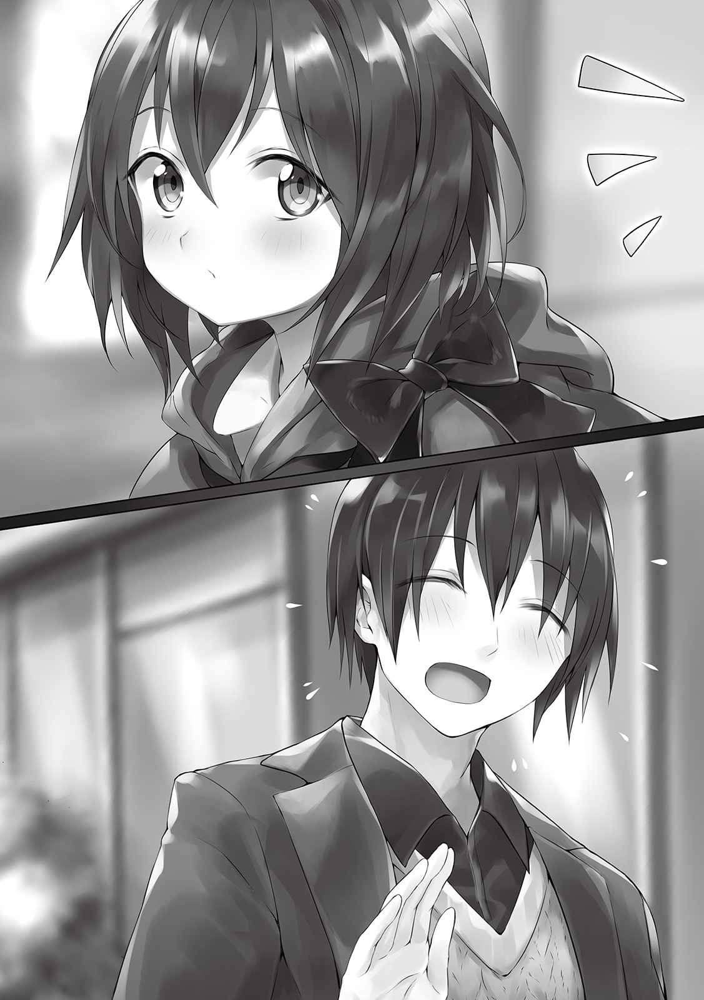
「頼みたいことがあるんだ」
「またなにか壊したんですか？」
「い、いや違うよ。実はね......」
ウルトさんのお願いとはこうだった。
あの置物をウルトさんに渡した親友だって人が、俺に直接依頼したいことがあるらしく、もし引き受けてくれるなら今日の正午あたりにＳランクのギルドに来て欲しいとのこと。
その人はギルマーズさんやパラスナさんとも知り合いで、その二人のどちらかからアイテムマスターのことを偶然聞いて俺に仕事を頼もうと思ってくれたらしい。ウルトさんのところにいるって話も聞いたみたいだ。
三人と仲がいい人はいままでいい人しかいないからね、きっとその人もいい人なんだろうね。
「いいですよ！」
「ありがとう。絶対喜ぶよ。じゃあ俺は今日一日出かけなければならない用事があるから」
「その間宿はどうするんですか？」
「宿泊の受付はできないけど、俺がいなくてもスキルで管理や防犯はできるんだ」
「なるほど」
「じゃあね！」
ウルトさんはやけに軽い足取りで出て行った。やっぱり相手は女の人なのかな。......まあいいや。
しばらくして俺は約束の時間の三十分前にギルドに入った。ウルトさんの親友は彼と同い年くらいで、頭が金髪でふわっとなっている人だそうな。多分天然パーマなんだろう。そんな人は見当たらないから、まだ来てないんだろうね。
机に座ってボケーっと外の様子を見ていたら、受付のお姉さんが話しかけてきた。
「アリムさん、どうかされました？」
「ああ、はい。ボクに直接仕事を頼みたい人が正午にここに来るらしいので待ってるんです」
「まっ、Ｓランクになって数日でそんな人が！ 順調ですね！」
冒険者という仕事はＳＳＳランカーでなくとも直接指名してもらうことがあるらしい。それは実力が認められた、あるいは他の冒険者より優れた点があるとして名誉のあることなのだとか。俺の場合はアイテムマスターをかわれたってことだね。
待ってる間に他の冒険者が十何人か話しかけてきて、その対応をしてたら正午ちょうどになっていた。ふと入り口を見ると戸が開き、ウルトさんの行った通りの見た目の男の人がギルド内に入ってきていた。その人はしばらくギルド内を見渡していたけれど、俺を発見したようでにっこり微笑みながら近づいてくる。
「なっ......バッカスだと!? 」
「バッカスがギルドに来るなんて、なんと珍しい......」
俺にお菓子をくれながらしきりに喋りかけてきた初老の冒険者と、その隣に座ってる俺とやたらと握手したがっていた三十路くらいの冒険者が驚いたような声をあげた。どうやら俺の取引相手は有名人らしい。ガバイナさんとラハンドさんがＡランクの中では有名な方だったように、あのＳＳＳランクの三人と関わりのある人はみんな有名になるんだろうか。
「やあ。もしかしなくても、君がアリムちゃんかな？」
「はいそうです！ ボクに依頼したいっていうウルトさんの親友さんですか？」
「そうだよ。僕はバッカス・デュオニソス。よろしくね」
見た目も声もおっとりしているというか、優しそうな人だ。それにウルトさんと同じくらい顔が整ってる。なんだかちょっとフルーティで甘い匂いがするよこの人。
「ウルトから僕が君のなにに目をつけて依頼しようと思ったかは聞いてると思う。詳しい話をするために場所を移動しよう」
「はい！」
お喋りしていた冒険者たちに別れを告げてからバッカスさんについて行く。彼は依頼の相談をするためにギルドの部屋を一室借りておいたらしく、その部屋がある三階まで上った。
「さ、中に入って」
紳士っぽくレディファーストでバッカスさんは俺を先に部屋の中に入れた。高級そうな雰囲気の対になってる椅子と机だけがあるシンプルなお部屋だ。俺が椅子に座ると、その反対側にバッカスさんも座った。
「改めて時間を割いてくれてありがとう、アリムちゃん。武闘大会でもすごい活躍だったね」
「えへへ、ありがとうございます！」
「こうしてアリムちゃんを目の前で見るとすごいね、本当にすごく可愛い。おかげでさっきも簡単に見つけられたしね。
「そんなに褒めたら照れちゃいますよぅ」
そう言うとバッカスさんはまた微笑んだ。ウルトさんがいっていたふわふわしてるというのは、頭の天然パーマだけじゃなかったのかもしれない。雰囲気も高級羽毛布団のようにふわふわしてる。
「じゃあさっそく本題に入ろうかな。実はアリムちゃんに頼みたいことは全部で三つあるんだ」
「三つですか」
「そう。うち二つはアイテムマスターというスキルを見込んでの依頼で、もう一つはその可愛さを活かしたものなんだ」
「ボクのですか」
俺の可愛さを活かしたのってなんだ？ 地球にいた頃は美花と一緒に、女の子として芸能や雑誌のスカウトマンがひっきりなしに話しかけてきてたからなぁ。となるとアイドルみたいな仕事かな？
「その一つっていうのは......ボクの容姿が役に立つかはわかりませんが、どんな仕事なんです？」
「アリムちゃんはところどころに貼られている広告の紙を見たことあるよね？」
「ええ、ありますよ」
アナズムは写真がない。でもスキルによって写実がその役割を果たしているし、印刷技術もあるため瓦版に忠実な絵を載せられたり、広告ポスターが決まったところにいつも貼られていたりする。例えばウルトさんの宿にはギルマーズさんが書いた本の宣伝がある。本人のキメ顔写実付きで。
「そのモデルになって欲しいんだよ」
「なるほど！」
どうやら考えていたことに近かったみたいだ。俺の顔が広告になってそこらに貼られるってことだね。んー、変装や透明化なしじゃ自由に出歩けないのは変わらないだろうし、受けても問題ないかな。
「じゃあそれぞれの詳しい内容を話そう。まず前提として僕はワインの醸造を主な仕事にしていてね、ワイナリーとぶどう農園を営んでいるんだ」
「そうなんですか！ 通りで果物の匂いがするわけですね」
「うん。よく言われるよ、ぶどうの匂いがするって」
それからバッカスさんは本題に入った。一つ目はワインを作る機器が故障したのでそれの修理をしてほしいとのこと。今まで一度も壊れたことがなかったのに急に動かなくなってしまい、作った人に修理をお願いしようとしたら引退していたらしい。それで困り果ててギルマーズさんに相談したら俺を紹介されたんだって。
「それならお安い御用ですよ！」
「ありがとう、助かるよ！ ギルマーズさんもウルトも君が伝説級のアイテムも作れるって言ってたけど......もしそれが本当なら機器の改良も考えてほしいな。その改良案と出来次第で御礼を増やすよ」
「わかりました、任せてください！ それでもう一つのアイテムマスターが必要な仕事とは？」
二つ目の仕事はぶどうジュースの味利きと鑑定をアイテムマスターとして行ってほしいのだとか。
まだお酒が飲めない子供にもぶどうを楽しんでもらおうと、去年からぶどうジュースの制作に着手し始め、それがやっと完成したらしい。
ウルトさんやパラスナさん、ギルマーズさんなど複数人に味見をしてもらったものの皆んな揃って『いつも通り美味しい』しか言わないから、面識があまりなく、狙っている客層の年齢であり、アイテムの判別をしっかりできる俺に是非とも味利きと鑑定をお願いしたいんだそうな。ちなみにアナズムでお酒を飲める年齢は十代の後半から。少なくとも十六歳よりは上だったと思う。
そして三つ目の仕事である広告ポスターの撮影は、そのぶどうジュースの宣伝なんだって。
「と、いうようにアリムちゃんにしかできないことばかりなんだ」
「そうみたいですね。改めてお受けしましょう！」
「じゃあ決まりだね！ さっそくこれからぶどう農園とワイナリーまで一緒に来てくれるかな？ いますぐにでも機器を修理して欲しいからね。ここから馬車で二時間ほど離れた場所にあるんだけど」
「わかりました」
俺とバッカスさんはギルドを出て、馬車停留所からバッカスさんが個人で所有してるという、ワイナリーのロゴが彫り込んであると思われるとても高価そうな馬車に乗り込んだ。案の定、中は豪邸みたいになっていた。
「好きなところに座ってよ。良ければ移動中にぶどうジュースの味利きをしてほしいな」
「そうしましょう」
ワインボトルに入れられた高級そうなぶどうジュースとワイングラスをバッカスさんが運んできた。ラベルも大人っぽくておしゃれだし、ほんとにワインにしか見えない。未成年飲酒には抵抗がある俺からしたら本当にこれ飲んでも大丈夫なのか気になるところ。
「あの、それアルコール入ってませんよね？」
「アルコール？ うん、子供向けのジュースだから入ってないよ」
「ですよね」
ポンっととてもいい音がしてコルクが抜かれた。バッカスさんは慣れた手つきでワイングラスにジュースを注ぐ。鑑定してみると、ジュースにしてはとんでもない高さのアイテムの等級であることがわかった。
一口だけ飲んでみる。その瞬間ぶどうの風味がふわっと口の中に広がった。程よい酸味、少し高めの甘さ、ぶどうを丸ごと食べているような深い味わい......そして後味もコクが口の中に居座り続けていて最高だ。少し飲んだらしばらくは消えないだろう。それなのに、また次の一口を運びたくなる。
「どう？」
「とっーーても美味しいです......！ こんな美味しいぶどうジュースは飲んだことありません！ 癖になりそうです」
「もう少し詳しく味の説明できるかな？」
「はいっ」
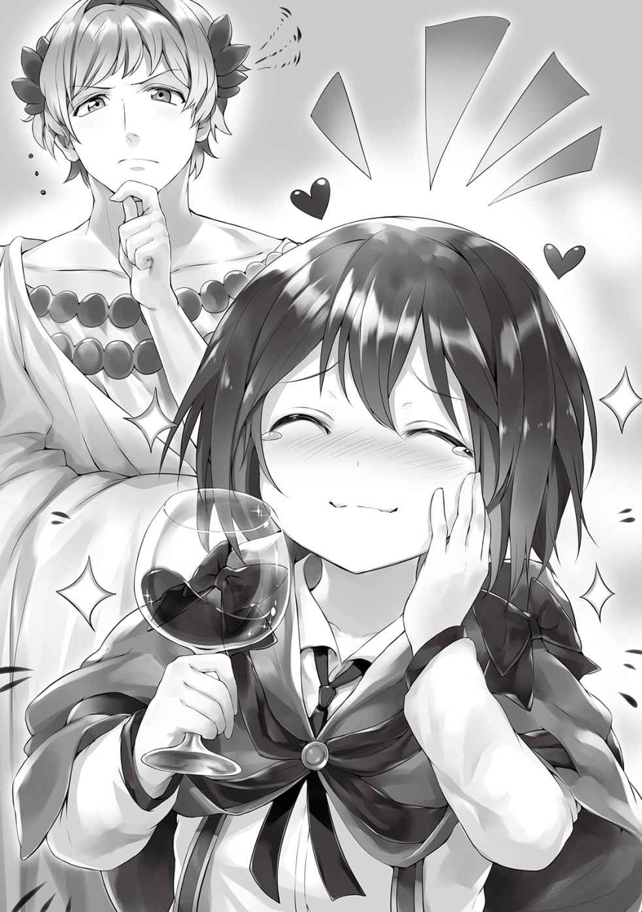
それから俺の言う思いつきの感想をバッカスさんはマメにメモをした。その間にグラスに注がれた分は飲み干してしまった。お代わりが欲しい。これが終わったらもう一杯もらえないかな？ とりあえず質問は続く。
「普通に鑑定してみてどうだった？」
「アイテムとしての等級はかなり高かったです。状態も至高と出てました。もしかしてボクほどの年齢の子供であることに加え、貴族やお金持ちが飲むことを想定してますか？ お値段がかなり高くなりそうです」
「その通りだよ、さすがだね。メフィラド城にも売り込むつもりでいるんだよ」
「あ、もしかして食会の時に出てきたぶどう酒って、バッカスさんが作ったものだったりします？ もちろん僕は飲めてませんけど」
「その通りだよ。あのお城で飲まれているぶどう酒は僕の会社で作ったものなんだ。先代から
大人の人たちがサンダーバードが出現する直前、すごく美味しそうにお酒を飲んでいたことを思い出した。きっといまのぶどうジュースと同等かそれ以上のうまさなんだろう。お金があるなら買い込みたくもなるよ。
「アリムちゃんの話はかなり参考になったよ、ありがとう。これで確信できた。世間に出しても大丈夫そうだ」
「ただボク、ラベルが大人っぽすぎて最初お酒だと思っちゃいましたよ」
「ああ、だからお酒かどうか聞いたんだ。じゃあ子供受けするような感じに変えるよ」
そうしたら完璧だと思うな。お金持ちの子供向けのジュースと考えたら最高だ。にしても俺がそんなにいい結果と感想をもたらしたのか、バッカスさんが目に見えてご機嫌だ。
「あ、そうだアリムちゃん。アイテムマスターって飲み物や料理に反映されるなら......もしかしてアリムちゃんが作る料理も伝説級だったりするかな？」
「ええ、そうなりますよ！」
「そっか。この馬車には台所が付いているんだ。もしよかったらあのぶどうジュースに合いそうなランチを作ってくれないかな。まだだよね、ランチ。もちろん報酬は多くするし、食料庫の食材は好きに使ってもらって構わないからさ。どうしても気になるんだ」
なるほど、報酬の上乗せか。でも今はお金より欲しいものがある。それを頼めないだろうか。
「......もっとぶどうジュースが飲みたいです」
「そうかい？ じゃあいま、僕の手持ちのぶどうジュースを行きと帰りに好きなだけ飲み放題というのはどうだろう」
「それでお願いします！」
「そんなに美味しかったんだね。気に入ってもらえて本当に嬉しいよ！」
バッカスさんは心の底から嬉しいと言わんばかりに、出会ってから一番の笑みをこぼした。一杯だけジュースのお代わりをもらってからお料理に着手する。あの深い味わいはきっと、肉料理が合うはずだ。パンやスープの材料、調味料はこの馬車の食料庫の中のものから使わせてもらい、メインのお肉は俺のポーチから取り出した。しばらくして出来上がったのは爆炎牛のソテー。我ながら今回もいい出来だ。
「......なんとも美味しそうだね。この肉質は爆炎牛かな？」
「はい、ボクが昨日、依頼を受けて倒したうちの一頭をさばいたものです」
「いいね。じゃあいただきます」
バッカスさんはお肉を一切れ上品に口に運んだ。それと同時に驚いたように目を見開き、夢中になったように
「はぁ......すごいね」
「ありがとうございます！」
「ボクは職業柄、色々な店の料理を食べてきたし、お城の料理も何回かいただいたけど......これは格別だね。アイテムマスターというスキルのすごさを物語っているよ」
「えへへ、恐縮です」
そういやパープルさんも同じようなこと言ってたな。それなら機会があったらカルアちゃんや国王様にも俺の料理をご馳走したいね。
俺も自分の分に口をつけた。あぁ、死ぬほど美味しい。ジュースに合うという条件も完璧にこなしてる。俺ってすごい！
それから目的地に着くまでの間にボトル二本分もジュースを飲んでしまった。
「さ、ここだよ」
「おー！」
ぶどう農園が広がっている。道中で聞いた話だと、この場所がメフィラド王国内で一番ぶどうを育てるのに適してたのだとか。近くに村もあり、その住民のほとんどはバッカスさんのこの農園かワインの醸造を仕事にしてるんだって。
バッカスさん自身も普段はそこに住んでいるらしく、プライベートの時は週末だけ城下町内の別荘で過ごしているんだとか。
「じゃあ先に醸造する工場を見てもらうよ」
「すぐにでも修理した方がいいんですもんね！」
「そうそう」
工場もとても広かった。今は予備の設備でなんとかしているらしいけど、従業員さんがパニックになっているのは目に見えてわかる。バッカスさんは稼働していない一つの巨大な機器の前で立ち止まった。
「壊れたというのはこれだよ、作ったのは職人だけれど、設計は主に僕なんだよ。ぶどうの旨味を最大限に引き出せるようたくさん工夫してる。これが設計図だよ」
バッカスさんは大きな紙に細かく字と図が描かれたものを何枚も取り出した。俺は彼の目の前で短時間で全てに目を通す。この機器は主に発酵とかもするという過程を担っているみたいだ。圧縮して樽に詰めるということもできる。ただそれぞれの方法をバッカスさん独自でカスタムしたみたい。アイテムマスターだからわかるけど、これはぶどうとお酒を知り尽くしていないと書けない設計図だ。それだけバッカスさんがワインに愛情を注いでいるのがわかる。
「何か改良点はあるかな？」
「いえ、この設計図通りに作られているからこそ、国王様にも愛されるほど美味しいワインができるんだと思います。なので修理をしてから設計はこのままで壊れにくくなるエンチャント、不潔にならないエンチャント、メンテナンスがいらなくなるエンチャントの貼り付けだけを行いますね」
「じゃあお願いするよ」
悪いところはアイテムマスターを使用しなければ検討がつかなかったけど、どうにか発見することができた。どうやら粉砕してあるぶどうを発酵を担う部に入れる過程の通り道に、長く使っていたためか出来た隙間にタネが入り込み、そこから発芽して内部で育ってしまったらしい。長いこと味に影響がなかったことは奇跡的だ。だからこそ故障に長いこと気がつかなかったとも言えるんだけどね。
バッカスさんに細かく事実を教えた。
「まさかそんなことになっていたなんて......」
「それに伴いほかの箇所も侵食を受けてますね。全部、バッチリ直すので期待しててください！」
「ありがとう！」
俺は修理を始めた。こんな大きい機器を小さい体で直すのは少し大変かもしれないけど、やれなくはないはずだ。ステータスをフルに使用しても思っていたより作業は滞り、完全に直してしまうついでにメンテナンスや掃除までして五時間半かかった。
ただの修理でここまで時間がかかったのは初めてだ。まあ修理自体はまだ数回しかしたことないけどね。それからマジックカードにバッカスさんに宣言しておいた通りの三種を書き込み、機器に貼り付けた。これで修理アンド改良は終わりだね。
「できましたよバッカスさん！」
「
「はい、大丈夫です！ 忍耐力は強いので！」
「そっか。でもさすがにこのまま写実の撮影はできないかな？」
「いえ、できます！ やりましょう」
だってバッカスさん、写実の専門家の人をすでに呼んじゃってるからね。おそらくバッカスさんのスケジュールと俺の作業するタイミングが合わなかったんだろうけど、このまま写実してもらわなきゃ来てくれたその人に悪い。帰すわけにはいかないね。
俺たちはこの農園の敷地内にあるすこし豪華な建物の中へと入った。そこはまるでワインの博物館であり、一本一本丁寧に説明とともにワインが置かれていた。
「じゃあアリムちゃん、そこの椅子に座ってね」
「はーい！」
「座ったらこのぶどうジュースを美味しそうに飲んでくれるかな」
「やってみます！」
「これは二回やるよ。まず写実家さんが様子を見るからね。そのあとが本番だから」
バッカスさんの合図とともに俺はぶどうジュースを口に含んだ。仕事の後の一口はとても感動的であり、一層味をひき立てた。思わず笑みがこぼれてくる。ところで写実家さんは俺の周りをぐるぐると回っている。
「いいね、かわいいよ。これは完成した絵がすごいことになりそうだ」
「バッカスさん、モデルさんのある程度のイメージができました」
「わかった。じゃあアリムちゃん、もう一回飲んでね」
俺はもう一度ジュースを飲む。やっぱり美味しくておかしくなりそうだ。写実家さんは俺の真横に移動して紙に鉛筆で必死にカリカリと絵を描いている。
しばらくして写実家さんが描き終わったので、動いてもいいと言われた。見せてもらったそれは美少女......じゃなくて俺が微笑みながら美味しそうにぶどうジュースを飲んでいる横顔の絵。
「これは素晴らしい！」
「私も描いててこの子に惚れそうになってしまいましたよ。こんな美しい少女がいるのかと。ここまで感動したのは直接、亡き王妃様を拝見できた時以来です」
そんな震えるほど感激されても困るよ。
これで一通りの仕事は終わったわけだけど、もう夜も遅くなっていたのでその写実家さんと俺はバッカスさんが用意した宿泊施設に一泊することになった。
そういえば写実を描くとなったときに案内された豪華な建物の入り口にウルトさんが持っていた置物と同じものがあったっけ。仲がいいって証拠だね。ウルトさんとバッカスさんがどれほど親密か知りたくなったから、本人に直接聞いてみることにした。
「バッカスさん！」
「なにかなアリムちゃん」
「バッカスさんとウルトさんって親友同士なんですよね？」
「ああ、親友だよ。それ以前に幼馴染なんだ」
「そうなんですか！」
おさななじみ......ああ幼馴染ね、それなら納得。だったらお互いのことを熟知していたりするのかしらん。俺と美花もお互いのことは大体知ってたからね。そうだな、ウルトさんがいつもよりいい格好で出かけた理由とか聞いちゃおうかな。
「今朝、ウルトさんがいつもより浮足立ちながら出かけて行ったんですよ。そういうとこ初めて見て気になったんですけど、それって......」
「たぶんアリムちゃんが考えてることはあってるね。彼女だよ。僕もその彼女とは面識があるんだ」
「へぇ......あの好青年っていう印象のウルトさんの彼女ってどんな方ですか？」
「ははは！ 好青年ね、うん、ウルトは確かにそうかも。世間から見たら意外だけど、事情を知っていたら当然だと思ってるよ。あの子との関係は」
となるとウルトさんの彼女さんは、ウルトさんと仲がいい人にとっては身近な人物ってことか。別にこのことを把握してどうこうするわけじゃないけど、国の有名人の事情を知れたのは少しだけ特別感がある。
「そういえばウルトが僕のプレゼントしたオブジェを壊したんだって？ 本人が言ってたけど」
「はい、ボクが直しました」
「アリムちゃんはウルトの正体しってるからいいけど、普通は壊せるものじゃないからねアレ。ほかの宿泊客に見られてたらどうするつもりだったんだろうね」
壊されたことに怒ってないのかバッカスさんはニコニコと笑っている。ウルトさんとバッカスさんが仲よさそうにしてるのが目に浮かぶよ。
翌朝、バッカスさんの馬車の中で朝食をとりつつぶどうジュースをたくさん飲みながら城下町に戻ってきた。バッカスさん
そう、なんでもバッカスさんのワインはメフィラド王国国内のみでなく、アナズム中で大人気なんだとか。それこそ多くの貴族や王族達がこぞって愛飲している銘酒らしい。本人ではなく同車した写実家さんがそう言っていた。お値段は平均で一本四万ベル。
ぶっちゃけ、メフィラド国内だけだろうとたかを括っていた。......ま、まあたしかに写実は良かったけど、それで俺がどうにかなるわけじゃないよね！
「それじゃあウルトによろしく言っておいて。報酬はギルドじゃなくてウルトに預けるから。あ、あともうオブジェ壊すなって言っておいてね」
「わかりました！」
馬車から降りると、バッカスさんは笑いながらそう言った。ギルマーズさんといい俺への報酬をウルトさんに一旦預けるのは、単純によく会うからだけでなく信用もできるからなんだろうね。そういえば預けるってことは相当な大金なのか。お金には困ってないから報酬金額を気にしてなかったや。
宿に戻るとウルトさんはまだ居なかった。受付台に、今日の昼頃に戻るようなことが書かれた紙が置いてある。ウルトさんにもバッカスさんの話を聞いてみたかったけど仕方ない。俺は部屋に戻ってお菓子を作り、お土産にもらったぶどうジュースをゆっくり楽しむことにした。
▼△▼△▼
俺の部屋の戸を叩く音がする。
「アリムちゃん、ウルトだよ。ちょっと受付の裏に来てくれるかな」
「......はい、わかりました......」
「......アリムちゃん？」
俺はウルトさんに元気のない姿を晒した。
バッカスさんにウルトさんとの関係を聞いてからちょっとだけ幼馴染という言葉が引っかかっていた。そしてバッカスさんの仕事から帰ってきたその深夜に、ふと美花のことを思い出してしまってからがダメだったんだ。
正直な話、さすがは俺の忍耐力、よく持った方だと思う。このアナズムに来てから最初の数週間は頑張ってサバイバルして生きなくちゃいけなかったし、ルインさん達に会って冒険者になって大会優勝してカルアちゃんとお友達になるまではこの世界の文化とルールに慣れようと必死だったのもある。人と会えたこと自体に喜びも感じていたんだと思うし。
でも今はこの有様だ。一回昔のことを考えてしまってからどんどんと膨らんでいって......今じゃもう会えないとわかっているのに、せめて美花だけにでも一目会いたいと強く願う自分がいる。それが不可能に近いとわかっているから
おかげで俺にしては珍しく、丸二日間なんのやる気も起きなかった。仕事をバリバリ頑張ることを目標にしていたのに、宿から外に出てすらいない。今こうしてウルトさんに呼ばれたのが今日含めて三日間で一番の刺激だったりする。
「なんだか弱ってるみたいだね。部屋から出てないようだし、バッカスのところで何かあったの？」
「いえ、バッカスさんは関係ないんです。ちょっと一昨日から記憶がボクをいじめてくるんです......」
「......そっか、俺は記憶を失くしたことがないからその辛さをわかってあげることはできないけど......相当きついんだろうね。ごめん、別に急ぎの用事でもないし、また後日にするよ」
「いえ、このままだとボクはダメになってしまう気がするのでその要件を聞かせてください」
「そう？ 無理はしない方がいいと思うけど、アリムちゃんがそういうならわかったよ」
俺は身だしなみを整える時間をもらって着替えてから、この前、ギルマーズさんやパラスナさんが集まっていた受付の裏の部屋へ来た。ウルトさんは椅子の真ん中に座っている。
「あ、ごめん。マジックバッグが必要なんだった」
「大丈夫です、部屋から出るときは肌身離さないようにしてるので持ってきてますよ」
「よかった。じゃあ座って」
俺はウルトさんの前に座った。俺のことを心底心配してくれてる様子で話を続ける。
「ん、特別なことではないんだ。ギルマーズさんとバッカスからの報酬金が届いてるからそれを渡したかったんだよ」
「ああ、なるほど」
「じゃあ今から預かってるものを取り出すから、無理せずに勘定してね」
ウルトさんは彼自身のマジックバッグに両手を手を突っ込むと一枚、日本円にして百万円もする大金貨をごっそり取り出した。それを丁寧に机の上に置く。そんな動作を数回繰り返してやっと手を止めた。儲かってる商人や貴族でも大きな取引でしか使わないという大金貨の山が机の上に出来上がった。
「全部で二百十枚ある。つまり二千百万ベルだ」
「に、二千百万ベル......ですか？」
「うん。ギルマーズさんが千三百万ベル、バッカスが八百万ベル。二人ともアリムちゃんのアイテム製作能力にすごく喜んでいたよ」
圧巻だ。数えるのが億劫になる。それにしてもこれだけのお金、日本円に直したら二億一千万円だ。独り身な上に子供だからできることも限られてるのに、こんなにお金もらっても使い道に困っちゃう。あるだけあるのは良いんだけど。
おそらくギルマーズさんがくれた分のお金は伝説級の武器一本の基本的な値段に加えて製作費、バッカスさんのはきっと大半が器具の修理・改良費のはずだ。
「本当に、俺も何か作って欲しいくらいだよ。そういえばパラスナもアリムちゃんに杖を作ってもらおうかどうか悩んでたな」
これだけ頼られるのは良い気分だ。やっぱりくよくよ考えるより、仕事をしてスカッとしたり御礼を言われて喜ぶ方が今の俺にとっての生きがいになるんだと思う。といっても記憶を捨てられるわけじゃないから、そこらへんはうまく折り合いをつけたやっていかなくちゃならない。
まだ気分は暗いままだけど、気晴らしに仕事しようかな。ガムシャラに働けばその間は今悩んでること全部、気にしなくてよくなりそうだ。今さっきお金持ちになってお金を気にしなくてよくなったから、好きな仕事を選べるだろうし。
「ありがとうございます、ウルトさん」
「え、俺が何かした？」
「あ。えーっと、お金の保管です」
「どういたしまして。もしかしてちょっと元気出た？ お金を受け取ったからではないみたいだけど」
「はい、ちょっとだけ」
そうと決まればギルドへ行こう。ギルドへ行って仕事をするんだ。Ｓランクの魔物でもぶっ飛ばせばいい気分になるかな。おっと、最初はウサギ一匹倒すのに罪悪感を感じてたのに......初心だけは忘れないようにしないとね。
▼△▼△▼
「あっ！ アリムちゃんが三日ぶりにきたぞ！」
「一昨日と昨日は来なかったのぅ......」
「むしろ毎日来る方がおかしいでしょ。私たちだってある程度お金が貯まったらしばらく休むじゃない」
「はっはー、そりゃそうだ」
ギルドに入ってから数人の冒険者にそう言われた。その解釈ならいいんだ、変に心配されるより。俺は仕事を探すために掲示板を眺めた。狙っていたＳランクの魔物の討伐は今はないみたいだ。仕方がないのでＡランクの魔物四匹を討伐する依頼を受けようとしたら、受付が騒がしくなった。
「あ、今新しいクエストが入りました！ 緊急の依頼に分類されております！ メフィラド国王直々の依頼です！ ヘルの森に出現したＳランクの魔物、マンティコラを討伐せよとのことです！」
おお、これはちょうどいいところに。それにヘルの森と言ったら俺が大会に出場するきっかけを作ってくれたところじゃないか。俺とガバイナさんの目の前にミルメコレオが現れてくれたから結果的にカルアちゃんと友達になれたんだ。是非受けよう。
「もし普通の馬車よりも早い独自の移動手段を持っている方がいましたら優先してこの依頼を引き受けてくださいますようお願いします！ ヘルの森から出て近隣の村に被害が出たら甚大な被害が予想されますので！」
「はい！ はいはい！ ボクやります！」
「アリムさん！ よろしくお願いします！」
多くの人数が手を挙げる前に、大きな態度で示して志願した。何人か俺以外にも受けようとしてる人がいたけれど、受付の人が注目したのは俺だったので、なんとか勝ち取れたみたいだ。
「移動手段はあるのですか？」
「もちろんです」
「それではこの紙に依頼の詳細が書かれていますので、移動中に読んでおいてください」
「はい！」
「それと感知するスキルは所持していますか？」
「いえ、してません」
「それならばこれをお貸しします！」
お姉さんは俺に地図のようなへんな紙もくれた。鑑定してみると、一定の範囲内にいる特定のランク以上の魔物だけに反応して丸い印が動くというものだった。これはＳランクに対応してるようだ。かなり高価なアイテムっぽい......緊急だから貸してくれたんだろう。
俺はお姉さんに急かされるまま急いで外に飛び出して、城下町自体から出たらホウキで空を飛んだ。このホウキと俺のステータスならヘルの森までそう時間はかからない。しばらくして受け取った依頼の詳細が書かれた紙を読んでみた。
なんでも、ファウストが変死した件を調べるために国王様はＡランクの冒険者を雇ってヘルの森を調査させていたみたい。でもその冒険者がつい十五分前に本当ならヘルの森に居ないはずのＳランクの魔物、マンティコラに遭遇。国王様はその連絡を受けてこの依頼を緊急依頼としてすぐに出したそうだ。
マンティコラは生け捕りでも殺しても構わないけど、事件に関係あるかもしれないのでなんにせよ必ず持ち帰ってくれとのこと。確かにファウストが惨殺された森でＳランクの魔物がすぐ発見されるなんて、怪しすぎるもんね。関係してないと考える方が難しい。そのＡランクの冒険者はよく頑張ったと思う。国王様に頼られるくらいだから信頼できる人なのかな、もしかしたらガバイナさんかラハンドさんだったりして。
そうこう考えてるうちにヘルの森の入り口付近に着いた。そこから凄い勢いで一台の馬車が森から出て行くのが見える。今のはそのＡランクの冒険者が乗ってたのかな？ 助かったみたいで良かった。
マークしてくれる地図みたいなアイテムを広げると、さっそくここより少し離れたところにＳランクの魔物がいると出ていた。森の中をうろちょろしてるみたいだ。発見してしまえばこちらのものなので、無駄に刺激しないようスピードを落として向かうことにした。
「......ん？」
空から移動していたからこそ見つけられたのかもしれない。あと少しでマンティコラにたどり着くという頃にかなり深いこの森で木々が生い茂っていない箇所があった。そこ以外は馬車の通り道ですら空からじゃ見えない。気になったので少し近づいてみると、そこには広場ができており真ん中に大きな穴が一つあった。つまり、ダンジョンだね。
ふふふ、ダンジョンだよダンジョン。これだけで気分が明るくなりそうだ。この場所は絶対忘れないようにしなきゃね。この仕事が終わった後、ＳＳＳランク目指してレベル上げしよう！
とりあえず今は仕事の方が大事なので、俺はマンティコラとの残りの距離を詰め、今居るらしい場所に降り立った。目の前に降りることはできず視界内にはマンティコラはいない。ただへんな鳴き声と獣と砂抜きしてない貝が合わさったような臭いがするので、近いことは間違いなさそうだ。
悲鳴をあげたらおびき出せたりしないかな？ ＳＳランク以上の魔物はいないだろうし、いっちょう叫んでみようと思う。
「スー......き、きゃあああああああっ！」
「きぇいぇやああああああああああああああああああああッ!! 」
おそらくマンティコラが反応した。人の悲鳴に近いのか怒号に近いのかよくわかんない鳴き声が聞こえる。俺の真後ろから草が擦れ、地面が揺れるような音が聞こえてくる。俺はその方向に向かって剣を構えた。
「きゃ、きぃやああああああ！ きぃ、やああああああ！」
草木をかき分け、木々の間から姿を現したのは神話やゲームでよく見る、人面でサソリの尻尾をもつ赤いライオンの化け物だった。マンティコラに間違いないだろうね。......人面というのがなんとも気持ち悪いよ。現実に存在したらこんな寒気がするような存在だったなんて。
マンティコラは飛びついてきながら爪を振りかざしてきた。それを後方に飛んで回避し、俺は隙をついて剣で斬りつけようとした。しかしそれは隙ではなかったようで、サソリの尻尾が伸びてきて刺そうしてきたから慌ててそれを受ける。そのまま人の顔がこちらを振り向いて俺に噛み付こうとしたので額を蹴り飛ばし、その間に斬撃を放った。それがうまいこと脇腹に命中し、マンティコラは動かなくなる。しばらくして口からＳランクの魔核が出現した。
これで依頼は完了かな。ダンジョンを見つけてテンションが戻ったし、あのサンダーバード以来の戦いらしい戦いのようなやり取りが出来て悪くはなかった。ふふふ、俺が得るものはたくさんあったね。
傷ひとつないマンティコラの死骸をマジックポーチの中に入れてギルドへと戻った。移動含めてかなり短時間で帰ってきたことにみんなで驚いていた。
それから受付のお姉さんにマーキングのアイテムを返却し、納品場所にマンティコラを丸ごと置いた。一応、出てきたＳランクの魔核も添えてね。国王様からの依頼とあってかお姉さんじゃなくてその上司っぽいお兄さんが対応してくれた。
「全然魔物に傷が付いてない......この間売却された爆炎牛もそうだったと聞く......！」
「そういう効果の剣を持ってるので！」
「なるほど」
「それよりこれで良かったですか？」
「もちろん、完璧以上ですよ......！」
そっか、それなら良かった。緊急の依頼であるということで、報酬は後日もらえるそうだ。俺としてはそれ以上のものを手に入れた、いや、見つけたから別にいつでもいいんだけどね。
お部屋に帰ったらまた美花やみんなを懐かしがってウジウジしてしまう可能性があったので、このままもう一つくらい仕事を受けようかなんて考えていると頭の中にメッセージが流れてきた。ガバイナさんからだった。
【アリム、今どこにいるんだ？】
【お城から一番近いギルドですよ！ お仕事を終えて帰ってきたところです】
【そうか、ちょうど良かった。実はアリムに合わせたい子が居てな】
なんだろ、ウルトさんと一緒に偉いことをしたガバイナさんのことだから、バッカスさんの時と似たような内容なのかな。
【お仕事の依頼ですか？】
【ん？ いや、仕事の依頼ではない。もしかしたらアリムの失くした記憶の手がかりになるかもしれない子なんだ】
【ボクの記憶の手がかり......？】
それはあり得ない。俺の記憶ってこことは全然別世界のものだから。
ただ俺の出自は信用できる人にしか話してなくて、言いふらされるなんてことはたぶんない。だから嘘をついて少し世間を騒がせてる『アリム』に会おうなんて、ずるいこと考えてる人である可能性も低い。じゃあなんなんだろ......気になるから会ってみるか。
【んー......わかりました。いまガバイナさんどこに居ます？】
【宿屋『ヒカリ』だ。ウルトとラハンドも居るぞ】
【そうなんですか。じゃあすぐ向かいます】
ウルトさんは当然としてラハンドさんはなんで居るんだ？ それもなにもかも、一旦宿に帰ればわかることだよね。
▼△▼△▼
とある暗闇の空間。それは明らかに人の手によって作られたものではない。普通の人間がここへ来たならば重い魔力とその禍々しさで震え、まともに動けないことだろう。
そんな空間に異形な見た目をした生物が何千匹も、何万匹も集まっている。特にその中でも魔力の高いものが数匹、ある錆びれた剣を取り囲んで円を作っていた。
「おいおい、マンティコラがやられただってぇ？」
「はぁい、人間に見つかってしまいましたので」
「見つかったっておまえぇ、あんな場所であんな風に人間を殺すからだろぉー。注目されるに決まってるってー」
「正確にはもう十分魔物を産んでいただいたので、まあ......意図があってわざと解放したと言ったところですかね。問題ないですよバルゼブブさん」
「ほぉぉ......そうかい」
蝿の見た目をしたバルゼブブと呼ばれた化け物は男の言葉に納得したように頷いた。次に人間の老人、猫、カエルの頭に
「みな、メフィストファレスの、言う通り、だ。我、が、作り出した、部屋の、中に、丁度、十万匹、の、魔物の卵、を、氷漬けに、して、眠らせて、ある」
「......じゃあ......数は足りてるのか」
「ご報告ありがとうございます、バールさん」
蛇に乗った人型の生物が納得したように
「次の行動へ移ろうと思うのですが、みなさん質問などはありますか？」
「はい、俺だが！ よろしいか？」
「よろしいですよベリアルさん」
ベリアルと呼ばれた得体の知れない乗り物に乗る巨大な羽の生えた人間のような人物が手を挙げ、掠れた声で喋り始めた。
「本番で指揮をする立場として！ 配下が魔物だけで十万匹になったのはいいが、すでにマンティコラとサンダーバード、そしてファウストという人間の犠牲が出た！ マンティコラについては理解したが、他の二匹も役目を果たしたのだろうな!? 」
「それについてはワシが答えますじゃ」
「そうか！ お前が一番作戦を考えてくれてるからな、アモン！」
他のものよりは小さめのフクロウの姿をした化け物がメフィストファレスの真横まで飛んできた。首を軽く回転させながらベリアルの質問に答える。
「ワシの未来予知能力では......今は予定通りことが進んでおりますじゃ。サンダーバードとあの男は必要な犠牲。必要な歯車でしたのじゃ」
「主にどういう役割をしたのだ!! 」
「カルア姫が誘拐されるかもしれないという意識を、作り出したのじゃ。本当は誘拐できないことはわかっておりましたがの......」
「......んー、とりあえず必要だったということだな!! 我は未来予知ができないからな！ そこらへんは任せる！」
「ご理解感謝するのですじゃ」
アモンと呼ばれている化け物は再び首を回しながら弱々しく頭を下げた。バルゼブブが再び声を上げる。
「じゃあよー、盗み聞きしてたんだけど、メフィストファレスがあの醜い人間に言ってたことって嘘ばっかってことか？ ちゃんと誘拐できてたら助かったとかよぅ。最初から殺すつもりだったってことかよー」
「いい感じに絶望してたじゃんアイツ。大好物だ。やるねぇ」
「いえいえ」
「おやぁ、ルシフェルさん......その顔、何か意見でも？」
「......いや、ない」
ここの化け物たちの中で、ルシフェルと呼ばれたメフィストフェレスと同じくらい人間に近い見た目をした者は、ひどく険しい顔をした。そこにいる化け物たちは皆、そのことについて何も言わない。
「とにかく！ 我々は次のステップに進みますよぉ！ 長いことかかった準備ももうじき終わりです。実行、あとは実行！ ふふふふ、楽しみですねぇ......」
「成功するにはお主の力が必要ですぞ、メフィストファレス。お主が一番働いておるが、まだまだ頑張るのですじゃ」
「当然！ 我々悪魔の野望は魔神サマイエイル様の御復活！ それまで......いや、その後も、尽力しますよ、この俺は!! 」
ヘルの森の入り口に三人の冒険者が来ていた。髪がなく凶悪な顔つきをしている男と、水色の髪の少女と少年。彼らは『フィストアイアン』という名のＡランクのパーティである。
凶悪な顔つきの男は少女と少年の方を振り向いて叫んだ。
「おい、ゴッグとマーゴ！ 今からヘルの森入るけどよ、テメェら迷子になんじゃねぇぞ？」
それにマーゴと呼ばれた少女は嬉しそうに微笑みながら答える。
「大丈夫よ、ラハンドさん！ 私、ラハンドさんから離れるつもりないもん」
ゴッグと呼ばれた少年もそれに賛同した。
「そうだね。ボクはマーゴが何しでかすかわからないから、様子見てなきゃいけないしー、離れたくても離れられないよー」
それを聞いてラハンドと呼ばれた凶悪な顔つきの男は一つため息をつくと、立ち止まって再び二人に注意をし始めた。
「いつも通りの依頼じゃねぇんだぞ？ Ｓランクのクソ野郎が変死しやがったからそれの調査に行くんだ。メフィラド国王サマ直々の依頼だぜ？」
「ラハンドさんは顔は悪人面なのに国王様からの信頼も厚いし、そのファウストって人が事件を起こした現場にいたからこの調査に抜擢されたんだよねー」
「ラハンドさん、ファウストって人に会ったんでしょ？ 噂では酷い人だけど......実際はどんな人だった？」
マーゴがラハンドにそう質問すると、ラハンドはバツの悪そうな表情を浮かべた。彼はしばらく悩んでからマーゴの頭に軽く手を置き、それからすぐに黙って先を歩き始める。
「頭撫でてくれたけど、なんのご褒美だろ」
「気にするなってことだよー。きっと噂通りの人だったんだ」
「たしかにラハンドさんの様子を見てるとそうかもしれない」
ラハンドを先頭に二人が後についていく形で先に進んでいく。
フィストアイアンの調査の仕事とは、王国から支給された魔力や魔法力を普通よりも感知できるアイテム等を用いてヘルの森に異変や怪しいことがないか探すというものだった。
この依頼は異変や怪現象を見つけるか一週間滞在するかで終了する。国王がラハンドに依頼した内容と目的は、何かしらの手がかりが残っていないかどうかを調べてもらい、それから兵を送って大規模な調査ができるかどうかを確認するためのいわゆる下準備であった。
「今んとこ特になんもねぇな」
「まだヘルの森に入って一時間しか経っていないし当然さ」
「どういうルートで調べていくんだっけ？」
「それは国王様から大まかに指示されてるぜ。あのクソ野郎の惨殺死体があったところを中心にして調べてくんだ」
「じ、じゃあそこを拠点にするの？」
「いや......それは流石に少し離れたところにするが」
やがて一行は馬車が通る道より少し外れた場所からやや斜めの方向に歩いて五十分ほどにあるファウストの遺体が見つかった地点までたどり着いた。まだところどころに血は残っているが、肉片や骨などは転がっていない。既にそのほとんどがメフィラド王国の兵士によって回収されていた。
「うわっ。あんまり見ない方がいいかもねーマーゴ。にしてもラハンドさん、こんなところでそのファウストって人はどうやって発見されたんだっけ？」
「ああ、この森で夜にしか現れねぇ魔物を狩りにきた輩が発見したんだとよ」
「まー、そんなものかー」
「こっから少し移動したところにマジックルームを置こうぜ。中が宿みたいになってるいいやつ貸してもらってっからよ」
三人はその地点から近く割と開けている場所をみつけ、そこにマジックルームやその他調査に必要なアイテムを設置した。
「じゃ、三十分くらいしたら出発するぜ。テメェらは武器新調したばっかなんだから、今のうちに調整見直しとけよな」
「今日初めて使うからしっかりと準備するさ」
「大事すぎて使えないかも......」
「あぁん？ 使わねぇならその分の金、返してもらうぜ？」
「つ、使うよ！ 使う！」
三十分の間、マジックルームの中でラハンドは今回調査する順路を確認し、ゴッグとマーゴはラハンドによって新しく買い与えられた武器を大切に手入れをした。全員が準備を終え、マジックルームから出た。
「じゃあ出発するぜ。まずはこっから北にぐるっと行こうと思う」
「二手に分かれたりしないのかい？ その方がより早く調査できると思うけど」
「バッカヤロウ！ Ｓランクの冒険者が殺された場所だぞ？ なんかに遭遇してもＣランク程度のテメェらは対処できずにおっ
「つまり心配だからついてこいってことだねー」
「ラハンドさんっ、好き！」
「ケッ!! 」
心配してもらって喜ぶ二人をよそにラハンドは再び調査のために足を踏み出した。すぐにその後ろをゴッグとマーゴもついて行く。
途中で遭遇したＤランクやＣランクの魔物をラハンドの拳一つで倒しつつ、国王から預かったアイテムを使って森の中を散策すること二時間経った頃、ラハンドが急に立ち止まった。
「んあっ」
「うわっ......と。ラハンドさんどうしたのさ」
「ここから少し先になんかいるぞ」
「また人面樹じゃないの？」
「いや、人の反応だ。テメェら、何があってもいいように構えとけ！ 今、この森は封鎖されているはずだ......人なんて入れっこねぇんだが」
ゴッグとマーゴは武器を構え、ラハンドも拳を握りしめる。アイテムが感知し続けているにも拘らず全く動かない人間の反応にラハンドは若干戸惑いつつも、その場所までゆっくりと歩みを進めた。やがて草木を搔きわければその人物と対面するであろう地点までたどり着いた。
「いいか......行くぞ！」
ラハンドは突入に近い勢いで反応がある箇所に向かって突っ込んだ。そこには横たわっている人間が一人いた。ただそれはどこからどう見ても大人ではなく、冒険者であるとも思えない緑色の髪をした少女だった。
「なっ......!? 」
「どうしてこんなところに女の子が倒れてるの？」
「わからない。でも様子を見なきゃ」
「まて、なんかの罠かもしれねぇ。オレが様子を見る」
ラハンドは自身に防御が上がるスキルを纏わせながら少女の前に立った。肩を軽く揺す振ってみるも反応がない。どうやら気絶しているようであった。
少女の周りになにか仕掛けられていないかよく確認しながら、ラハンドはゴッグとマーゴを手招きして自分の元に呼んだ。
「罠とかはなかったみてぇだが......こいつ自身、呼吸がはえーし、すげぇ苦しそうだ」
「......もしかしたらこの森の木の葉を口に入れたのかもしれない」
「そうとしか考えられねぇな。死ぬほどの毒じゃねぇが......ゴッグ、解毒してやれるか？」
「まかせて」
ゴッグが緑色の髪の少女に向けて回復魔法を唱えると、苦しそうにしていた表情が少し和らいだ。ラハンドはしばらく少女を見つめると、一つため息をついてから彼女を背負った。
「どういう状況かわからねぇが、とりあえず一旦拠点まで戻るぞ。それから目ぇ覚ますまで様子見だ」
仮に敵がいたとして、その偵察であるという可能性は捨てきれなかったがラハンドは少女を見捨てるという考えを持たなかった。ゴッグとマーゴもすぐに賛成した。
三人は急いで来た道を戻っていった。
▼△▼△▼
私のことを有夢が呼んでいるような気がする。起きなくちゃ。今日はどんな約束してたっけ。一緒に服を買いに行く約束だっけ、映画を見る約束だっけ。
それにしても、なんだかすごく悪い夢を見ていた気分。私の前から有夢が居なくなるなんてあっていいはずがないのに。他にもとても痛い思いをしたし、苦しい思いをしたような気もするけれどそれも全部夢だった。
だから目を開けたら有夢の可愛い顔が......。ただで起きるのもなんか味気ないかな。そうだ、例えば不意にデコピンをしてあげたらどんな反応するんだろう。
「えいっ......」
「はにゃっ!? 」
ストンと誰かが尻餅をついたような音と悲鳴がした。でも今の声は私の好きな有夢じゃない。あれ、有夢がいない......？ そう、そうだった。有夢は死んじゃったし、私も死んだとかで変な世界の森の中に放り込まれて、サバイバルがうまくいかなくて、意識が朦朧としてたんだった。それが......現実なんだった。
私はまた気絶したのかな。なんかやけに地面が暖かい感じがする。何かをはじいた感触もあったし、悲鳴も幻聴じゃなかった。
とりあえず現状を把握するために目を開いてみることにした。
「あ、目開いた！ よかったーー！」
そう言ったのは水色の髪を一本結びにした、地球にいた頃の私と同い年くらいの女の子だった。私はどうやらベッドに寝かされており、どこかの部屋の中にいるみたい。
たぶん、あれから救助されたのかな？ あんな森のど真ん中で私のことを見つけられるなんて、案外人里が近かったのかもしれない。とにかく助かったのね。
「えっと、私は倒れてたんですよね？」
「そうそう！ たぶんそこらへんにある木の葉っぱ食べちゃったんでしょ？ あれは毒があるんだ。三日くらい天日干ししたらお茶っ葉にできるらしいけど......」
すごい、本当に言葉が通じてる。お地蔵様の言った通りね。正直、人が本当にいるかすら怪しいと思ってたけど。髪の色が奇抜だったり、西洋の国の人っぽい顔つきをしていること以外は特に何も変わった感じがしない。
「どうしたの？ まだ意識がちゃんとしてないかな？」
「いえ、あの、ここは......？」
「ここは私たちのマジックルームの中よ」
「マッシュルーム？」
「きのこじゃないよ。マジックルーム......え、もしかして知らない？」
信じられないっていう顔をされても、私は元からこの世界の住人であったわけじゃないから、知らないしどんなものか見当もつかない。何か特殊なお部屋なんだと思う。
「まあいいや。君はどこから来たの？ なんでヘルの森に？」
「どこ......？」
なんて説明すればいいんだろう。別世界からやってきましたって言えばいいのかな。ヘルの森っていうのはおそらく私が飛ばされてきたところだと思う。文字通り地獄のような目にあったわけね。
しばらく悩んでると、水色の髪の女の子は心配そうな表情で私の顔をジッと見つめてきた。
「もしかして、どうやってここまできたか覚えてない？ マジックルーム知らないなんてびっくりだし......あ、もしかして記憶自体がないとか」
そっか、記憶がないことにすれば地球のことは話さなくていいし、この世界の知らないといけない常識でも当たり前のように気軽に質問できる。安易だけどこれしかない。
「そう......なのかもしれません。気がついたら森にいて、さまよってたら気を失って......」
「なるほど。んー、ちょっとラハンドさんとゴッグ......あ、私達のパーティのリーダーと私の双子のお兄ちゃん、連れてくるね！」
「わ、わかりました」
女の子はこの部屋から出て行こうとしてたのにドアを開けたら動きを止めてしまった。そして勢いよく私の方を振り向いた。
「ちなみにラハンドさん、顔がとんでもなく怖いけど、見かけの真逆ですごく優しい人だから安心してね。あと私の名前はマーゴね」
「はいマーゴ......さん」
「うん。じゃあちょっとまっててねー。......ラハンドさーん！ ゴッグ！ 女の子が目を覚ましたよー！」
マーゴっていう子はその身内の二人の名前を呼びながらパタパタと駆けて行った。怖い顔ってどんなのかしら。たぶん私が想像してる、刑事ドラマにいそうな強面とは違うよね。
二分くらい経って、三人分の足音と話し声が聞こえてきた。そしてマーゴっていう子が部屋の入り口から顔をのぞかせ様子を見てくる。
「......じゃあ二人とも入って入って」
「おー、ちゃんと目覚めてる」
「そうみてぇだな」
「ヒッ......」
失礼かもしれないけど、思わずラハンドって人の顔を見て悲鳴が出てしまった。こっわい。思ってた数倍こっわい。強面だから怖いんじゃなくてバイオレンスさを感じるというか、暴力組織で鉄砲玉やってそうっていうか......。スキンヘッドの頭に
ちなみにゴッグって人はマーゴって子と髪の色が一緒だからすぐにわかった。顔は整っている方だけど、あれはナンパ師の顔だ。
「あー、ほらラハンドさん、怖がらせちゃダメじゃん」
「別に怖がらせてねぇよ、生まれつきこの顔だっつってんだろ！」
「やっぱり食会の時もみんな怖がってたんじゃないのー」
「ンなことねぇ！......ああ、嬢ちゃん目ぇ覚ましたんだってな。
ほ、本当にいい人みたい。ゴッグって人もマーゴさんも心を許すように笑ってるし。ラハンドさんはそこらにあった椅子をこのベッドの横まで持ってきてドスンと座り込んだ。
......いい人だってわかっててもやっぱり怖い。
「まずは自己紹介だな。オレはラハンド・アッシュっつー名前だ。見ての通り冒険者やってる。こいつらとな。おいテメェらも自己紹介しろよ」
「うん。ボクはゴッグだよ。ラハンドさんよりは顔が怖くないと思ってるよ」
「私はさっき名乗ったね。私も全然怖くないよね？」
「テメェら......。んで、嬢ちゃんは？」
見ての通りって言われても、ギャングとそれに懐いてる双子にしか見えないけど......冒険者ってなにかな。アナズムでポピュラーな仕事なのかも。そうだ名前、名前を言わなきゃ。
やっぱり名前も忘れたふりをしたほうがいいのかしら。いや、よく考えたらアナズムにいる人って例外なく自分のステータスが見られたはず。忘れる方が不自然かもしれない。それっぽく言おう。
「えーっと、ミカって名前っぽいです」
「ぽいって、自分の名前だろ？ やっぱマーゴがさっき言った通り記憶がねぇのか」
「たしかマジックルームを知らないんだっけ？ 生活に必要な情報も抜けてる可能性あるよね」
そう考えてくれると助かる。ラハンドさんは私をにらみながら......いや、たぶん不思議なものを見るような目で見ながら話を続けた。
「じゃあなんでこの森にいんのかもわかってねぇのか。どうなんだ、あ？」
「は、はいっ。えっと、二日前にいきなり森の中にいて、訳がわからなかったのですが、とりあえず森を出ようと思って
「じゃあ二日前の記憶まではあるのか。とりあえず覚えてる限り教えてくれるかな？」
私は森から出ようと決めた時から、人の顔がついた木に殴られて気を失って......と言った感じで順番に起こったことを話した。こうして振り返ってみても、やっぱり散々だった気がする。
「人の顔がついた木ってのは人面樹だな。それにゴッグの言っていた通り毒の葉を食っちまったのか」
「やっぱり毒だったんですか、あれ」
「そうだよ、ボクが解毒したし回復魔法もかけておいたから安心して」
「だが、化け物って魔物のことか？ やっぱ変なところ抜け落ちてるみてぇだな。きちんと喋れはするんだが」
どうやら化け物のことは魔物って言うらしい。魔物かぁ......有夢がゲームの中で躍起になって何億匹と倒してたっけ。となると、さっき言ってた冒険者っていうのもゲームの中でいう、魔物を倒したり人の手伝いをすることで報酬をもらって生計を立てている人たちってことでいいのかな。あとでちゃんと聞いてみよう。
「魔物に気絶させられて、なにも食べずに彷徨って......毒に当たった上に強そうな魔物とも遭遇して死ぬような思いするなんて、こんな可愛い子なのにかわいそう......いたっ」
「気軽に女の子の頭を触ろうとしない！」
「えぇ、ラハンドさんはよくマーゴの頭撫でてるじゃないか」
「いいんだよ、私がラハンドさんに撫でられるのは」
そうね、たしかにマーゴさんのいう通り。解毒と回復してくれたのはとても嬉しいけど、有夢とお父さん以外の男の人に撫でられるのはあんまり好きじゃない。しかしあのマーゴさんのデレよう、気があるに違いない。なんとなくだけど。
「回復したのはいいが、つまり二日間も飯食ってねぇってことだろ？ おい、今何時だ？」
「今は二時半だよ。ランチを食べるの忘れてたね」
「じゃあ今から昼飯にすっか。まずは食うことが大事だよなぁぁ！ ヒャハハハ！」
「治療してもらったのにい、いいんですか、ご馳走にまでなって」
「子供が遠慮してんじゃねぇよ！」
ラハンドさんは笑い方もこわい。でもやさしい。マーゴさんはこのギャップが良いのかもしれない。とりあえずやっとご飯が食べられる！ アナズムのお料理ってどんなのだろう。地球人の私でも食べられるのかな。宇宙食みたいな感じだったりして。
ラハンドさんにご飯ができるまでもう一回寝てたほうがいいと言われたので、そうさせてもらった。......顔はこわいけど良い人に助けてもらえてとても良かった。
かなり遅めの昼食ができたのはそれから四十分後のことだった。私が寝ているこの部屋にもいい匂いがやってきている。マーゴさんが呼びに来たので、食卓までついて行った。
机の上にはスライスされたフランスパンのようなものと一人一杯のスープ、サラダにミートボールのような肉料理、チーズ入りのスクランブルエッグが並んでいた。断面が大根なのに色が人参の野菜があったり、キュウリみたいな色の玉ねぎがあったりするけど概ね地球と変わらない。私のお腹が鳴った。
「ヒャハハハハハ！ おう、腹減ってんだろ。そこに座って、さっさと食えよッ！」
「ありがとうございます。......いただきます！」
「私が作ったんだよ。遠慮しないで食べてね」
久しぶりの食べ物だから、まずはスープからいただくことにした。色合いはビーフシチュー。ベーコンやキノコが入ってる。そういえばマーゴさんはマッシュルームって言ったら「キノコ」って答えてたし、地球と共通する食材もあるのかも。......いや、見る限りそれがほとんどかも。
「このミートボールはなんの肉だぁ？ 鳥肉だろ？」
「うん、オドド鳥だよ」
「ほぉ、そうか」
あ、肉はそうでもないのかな。そうだよね、魔物がいるんだからそういうものの肉を食べるに決まってるよね。もしかしたらドラゴン肉だとか恐竜肉も食べるのかも。......まさかだと思うけど、あの人の顔をしたサソリとライオンの化け物は食べたりしないよね？
「どう、ミカちゃん。美味しい？」
「え、ええ！ とっても！」
実際、マーゴさんのお料理はなかなか美味しい。お店に並ぶとまではいかないけど、長年主婦をしてきた人くらいかそれ以上の腕前はある。センスがあるのかも。それとも料理用のスキルが存在しているのかな？
スープを飲み始めたばかりだと思っていたのに、気がつけば全部食べ終わっていた。まともな食事ができたおかげですっかり体調も良くなったような気がする。
「ごちそうさまでした。本当にありがとうございます......！」
「ヒャハハ！ 中々いい食べっぷりだったぜ」
「二日間こんな森の中でご飯を抜けば誰だってそうなるよねー」
「たくさん食べてもらえて嬉しいな！」
助けてもらった。毒は治してもらった。ゆっくり休ませてもらった。ご飯もたっぷり食べさせてもらった。本当に感謝しかない。でも私はこれからどうすればいいんだろう。
「すいません、何から何まで......！」
「だからよぉ、ガキがそんな申し訳なさそうな顔する必要ねぇっての」
「そういえば森抜けたかったんでしょ？ 城下町まで一緒に行こうよ」
「今ボク達はここで仕事中だからね、最長で一週間後になるけどそれでもいいなら」
城下町ってお城の下にある街よね？ それならたくさん人がいて、十二歳の私でもできる仕事があるはず。やっとアナズムで生活できる目処が立った。
「お言葉に甘えます......っ」
「言い方が硬ぇな。まあいいぜ、どっちみちこんなＤランク以上の魔物がうようよいる森で放っておくわけにはいかねぇしな。一度手を差し伸べたんだったら、最後まで助けてやるよ」
「ありがとうございます！」
少し微笑みながらラハンドさんはそう言った。この人は、話せば話すほどマーゴさんの言っていた通りの優しさが
「じゃあそろそろ仕事の続きすっか。マーゴ、テメェは置いてくから嬢ちゃんの世話してやんな。今日から一週間やってくれるか？」
「もちろん、任せて！」
「じゃあゴッグ、行くぞ。あ、帰るときになったら知らせるから夕飯も作っとけよ」
「はーい！」
ラハンドさんとゴッグさんはそう伝えると外に出て行った。玄関から見送ったので外が見えた。私が倒れる前に見た光景から森の景色はなにも変わっていない。
どうもこの家が建ってる場所は森の中のようね。てっきりどこか村のような場所だと思ってたんだけどな。こんな森の中に家を建てる人がいるってことよね。あ、そういえばマジックルームだとか言ってたっけ。それが関係してるのかも。
「二人とも行っちゃったね。えへへ、夕飯作っておけだなんて、ラハンドさんの奥さんになったみたい！......そうだミカちゃん、お風呂入ろっか？ 少なくとも二日は入ってないんでしょ？」
「はい、入ります！」
「変な記憶がなくなってるから、お風呂の使い方がわからないかもしれないし、一緒に入ろうか」
「よろしくお願いします」
暖かい建物の中でご飯を食べることを考えていたから、お風呂はすっかり忘れていた。思い出すともう、入りたくて入りたくて仕方がない。地球じゃ一日だって欠かしたことないもの。
マーゴさんに連れられてこの家の風呂場と脱衣所に足を踏み入れた。脱衣所は構造なら大して地球と変わりはない。
私はアナズムに来た時からずっと着ていた服を脱いだ。ゲームでいう初期装備だけどなかなかオシャレだと思う。
「あ、服も洗濯しなくちゃね。後で私のあまり着てない服も貸してあげるね」
「ありがとうございます！」
なんだか一瞬、マーゴさんの着てた服が縮んだ気がする。見間違いかな。
ふと、私はそばに置いてあった鏡を見た。初めて今の自分の姿を確認することができた。......緑色の髪と水色の目。有夢がツヤツヤしてて綺麗で好きだって言ってくれた自慢の黒髪も、吸い込まれるようでずっと見ていられると言ってくれた目も色が変わってしまっている。でも個人的には今の色も宝石みたいに綺麗で好き。
肌の色は前より白っぽくなり、体型は十二歳の時の私そのものだった。本当に十二歳だった頃はあまり気にしてなかったけど、この年齢にしては胸が大きい気がする。それでも流石に十六歳の時の大きさよりは小さいけど、順当に成長すれば元通りになるでしょう。それと人面樹とかいうのの攻撃によってお腹に傷が残ってるんじゃないかって心配してたけど回復してもらったのもあるからかな、綺麗さっぱりなんの跡もなかった。
「ミカちゃん、お肌すべすべしてるね」
「そうですかね？」
「うんっ」
マーゴさんの身体は......えっと、これまで色々あったのかもしれない。コンプレックスになりそうなほど目立つものはないし、全身にくまなく広がってるわけじゃないけど、少し気になる細かい傷がいくつかある。ほんと、よく見ないとわからないレベルだけど。冒険者って仕事だから身体を張ってるのかな。でもあまり詳しいこと聞いたりしないほうがよさそうね。......ちなみに胸は元の私の方が大きいと思う。
「じゃあ入ろっか」
「はい」
アナズムの浴室っていうのはシャワーがなくて、基本的に掛け湯がその代わりをするみたい。あと、マーゴさんが使うのを見る限りでは石鹸は一つで顔も体も頭も洗えるようになっている。それに加えてハンドクリームの容器みたいな物に入った、リンスだと考えられる液体をマーゴさんは取り出して髪につけていた。
ちょっと私のいままでの日常とは違うけど、それでも文化の違いだと割り切れる程度。やっぱり別世界だからってそんなに心構えする必要がないのかもしれない。
お風呂から上がって私が寝ていた部屋まで戻ると、マーゴさんはなんでも質問してきてと言ってくれた。
「それじゃあ、冒険者ってなんですか？」
「おお......そこからね。いいよ教えてあげる。あ、もしかして覚えておいたほうがいいこと全部教えてあげたほうがいいのかな......」
「その、できるなら知っていることなんでも教えて欲しいです」
「わかった。じゃあわからないことがあったらその都度聞いてくれて構わないからね。と言うことでまずは冒険者から！」
▼△▼△▼
「......で、めぼしいこと全部教えてやれたのか？」
「うん！ 記憶がないってこんなに大変だって知らなかったよ。言葉が話せるだけで、あとは全部知らないって感じかな。お金のことまで説明したよ」
「そりゃあ大変だな」
マーゴさんには本当にたくさん教えてもらった。通貨がどんなものかとか、冒険者がどんな職業かとか、ステータスのメッセージ機能、アイテムや魔物、エンチャントに魔核。アナズムで人に混ざって暮らしていく上で大事なことはあらかた把握することができた。
やっぱりと言うべきか、アナズムは科学があんまり発達していなくて、代わりに魔法や魔力、魔法力が込められたアイテムが使われている。科学じゃ実現できなさそうなこともやってのけてるから、地球とアナズム、どっちが進んでるかとかは比べにくい。強いて言うなら地球の方が全体的な文明の発達を進められてるかな。インターネットとか特に。
「それじゃあステータスはどうなのさ。記憶がなくなるとレベル１からになったりするのかな」
「はい、ステータスはレベル１ですね......」
「よく生きてたなぁ、おい」
「もう少し発見が遅かったらと思うとゾッとするね」
二人の言う通りあと一日、二日も見つけられたりしてなかったら死んでたと思う。やっぱり感謝するしかないわね。
それからお肉のグリルをメインにした夕飯を食べ終わると、私とマーゴさんは一緒の部屋で眠ることになった。部屋がこれ以上ないらしい。ベッドは部屋に二つあるから足りてるみたいだけど。
「申し訳ないです......」
「ううん、いいんだよ。ゴッグやラハンドさんと同じ部屋ってわけにもいかないでしょ？ 私はともかく。色々あっただろうし、とりあえず今日は休んで」
「はい、そうします」
私は眠ろうと目を閉じた。まぶたの裏に思い浮かんでくるのはめちゃくちゃ可愛らしい、私の好きな人であり幼馴染でもある有夢の顔。未練がありすぎてこのまま新しい人生でも一生引きずってしまいそう。
ちゃんと眠れたのは一時間後であり、朝起きてもその眠れなかった分を引きずっていた。そのせいで朝ごはんの味がよくわからなかった。
朝の支度が一通り終わると今日もマーゴさんが私に付き添ってくれるといってくれた。ラハンドさんとゴッグさんもそうした方がいいと賛同してくれていた。
二人が出かけてからマーゴさんの余ってた服を貸してもらって着替えた。エンチャントとか言うので勝手に私にサイズを合わせてくれるのはものすごく便利だと思う。ただこれ、服が入らなくなったからダイエットしようとか思えなくなるわね。
「えーっと、これこれ！ はい！」
着替え終わってからマーゴさんが見た目よりも沢山入るらしいカバンをゴソゴソやってると思ったら何か取り出して、それを私に手渡してきた。この形状、地球と用途が同じならば弓ね。
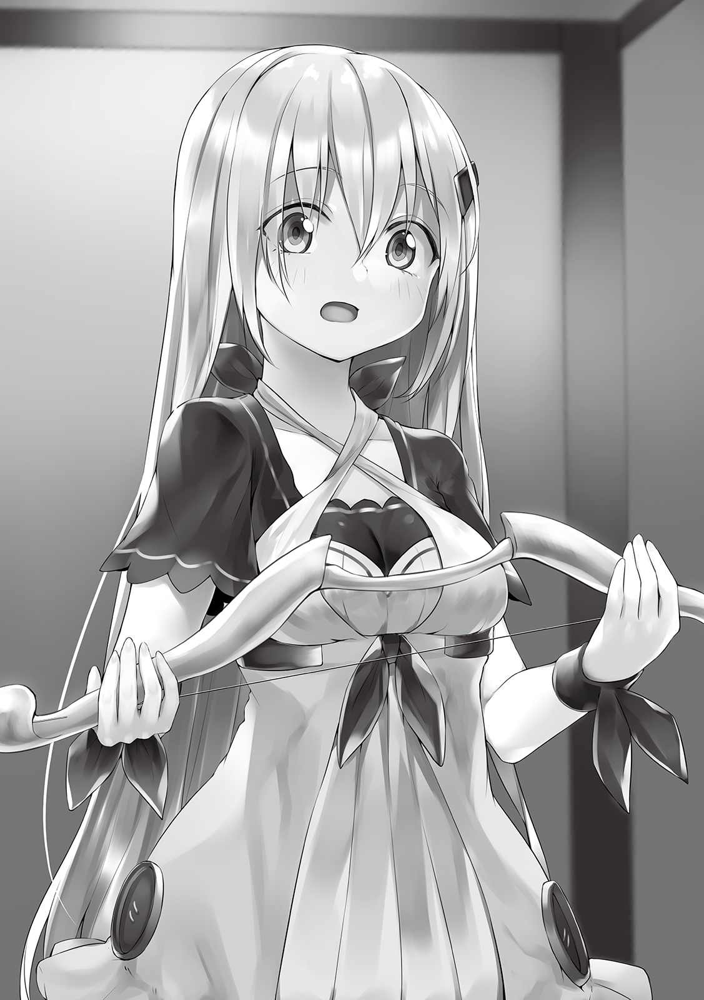
「マーゴさん、これは......」
「弓だよ。私のお古だけど」
「やっぱり。でもなぜ？」
「城下町に着いてからミカちゃん、頑張って暮らしてかなきゃいけないでしょ？ その可愛さならお仕事は引く手数多だと思うけど、一応、冒険者になる可能性もあるし何か一つくらい得意な武器があってもいいかなって！」
たしかに。何か扱える武器はあったほうがいいと思う。魔物が
でも私、弓なんて扱ったことないのよね。学校の中等部から高等部へあがったばっかりの時、弓道部を見学して一度触らせてもらったことがあるくらい。結局有夢と一緒に登下校したいから部活は何にも入らなかった。ま、扱ったことないって言ったら同じように剣や槍もないんだけど。
「レベル１だから大してステータスはいじってないんでしょ？」
「はい。ですが飲み水と火が要るかなって思って、最初にあったスキルポイントは火術と水術というスキルに振りましたし、ステータスは全て魔力に」
「うんうん、私もレベル１で森の中に放り込まれたらそうするよ。それにその程度なら問題ないかな。ところで武器とかのスキルは鍛錬を積めばスキルポイントを振らなくてもポイントが上がってくるって知ってる......かな？」
「なんとなく......」
「そっか！ つまりね、今のうちに練習しとけばポイントの節約になるんだよ。だから一緒にやろっ」
幻転地蔵様がステータスの説明で言ってたっけ。鍛錬をどこまで積めば強くなるのかわからないけど、なんとなくスキルポイントを振ったほうが早い気がする。でも私のポイントはすっからかんだし、別に今他にやることもないし、マーゴさんの好意に甘えたほうがいいわよね。
「わかりました、やります！」
「いい返事だね。じゃあ外に出よう」
私とマーゴさんは外に出た。昨日マーゴさんに教えてもらっている最中に知ったけど、どうやら私達が居た場所はどこかの宿じゃなくて、地球でいうキャンピングカーの中みたいなものだったらしい。つまり私はまだ森から出ておらずどこかの村というわけでもなかったってことね。
それにしてもマジックルーム......本当にすごいと思う。あれだけの広さがあるのに外から見たらロッカー程度の大きさしかない。さっきのバッグといい科学ではまずできないような代物だよ。
「じゃあまず私がお手本を見せるね！」
「マーゴさんはお一人だとＣランクの冒険者なんでしたっけ」
「そうそう。正式に冒険者になれる年齢からたった一年でＣランクまで上がるのって早いほうなんだよ。まー、適正年齢の前からラハンドさんに
「それはスゴいですね......」
アナズムの仕組みがまだよくわかってない私でもそれが化け物じみてるっていうのはわかる。......まさかだとは思うけど、有夢じゃないわよね？ 有夢だったらそういうこと平気な顔でやりそうだなぁ。んー、でも変な期待しはしないほうがいいわよね。
マーゴさんは私に見ているように促すと弓を構えた。マーゴさんの弓は新品みたいで、綺麗に輝いてる。ただ矢がどこにもない......いや、違う。ないんじゃなくて必要なかったみたい。マーゴさんが弦を引くと握るところと弦の間に細い光の
「こんな感じ！」
「おぉお......！ かっこいいですね！」
「え、そう？ じゃあもうちょっと見せちゃおうかなー」
マーゴさんは調子良さげにそう言うと、もう一度弓を引いて光の矢を放った。今度は飛んでる最中にそれが変な方向に曲がり、さっき当てた木よりさらに奥のものに突き刺さる。
「スキルの段階と実力が上がればこんなこともできるようになるんだよ！」
「すごい......」
「ミカちゃんも......って、そうか、弓技のスキルに１ポイントも使ってないんだったね。魔力で作った矢は弓技のレベル３くらいにならないと使えないから......練習用のセットってまだあったかな？ あ、良かったあった！」
マーゴさん、今度はマトと殺傷力のなさそうな矢を取り出した。マトの方は近くの木にくくりつけ、矢を私に渡してくる。
「とりあえずそれで練習してみて！ この一週間の間に少しでもレベルが上がるといいね。あ、基本的な形とかを教えないとね」
「ありがとうございます」
私は手取り足取りマーゴさんに教えてもらい、さっそく一回だけ矢を放ってみることになった。地球にいた頃は勉強はできたから、手順とコツを把握するのにそんなに時間はかからなかった。力いっぱい振り絞ってマトに向かって矢を放つ。割とすんなり当てることができた。
「おお、やるね！ 私なんて最初、まともに当てるのに三時間はかかったのに」
「はい、なんとかできました」
「その調子で撃っていってね。そうすればいつかスキルのレベルが上がるし、スキルのレベルが上がればより良い練習方法が思い浮かぶと思うよ！ あ、でも弓は大事にしてね、ラハンドさんからもらったものだから」
マーゴさんはハニカミながらそう言った。一瞬だけど恋してる顔になった。ずっと恋してきた私にはわかる。せっかくだしラハンドさんのことどれくらい好きか、ちょっと聞いてみちゃおうかな。
「マーゴさんってラハンドさんのこと好きですよね」
「まね、私の保護者だから」
「なんだか異性として好きなようにも見えますね。というか度々好きだって直接言ってますよね？」
「あ、聞いてた？ 実はそうなんだー」
いい感じに照れてる。恋愛っていうのはどこでも変わらなくていいね。
「私、ラハンドさんのことが好きで好きで、もう結構アプローチかけてるんだけど、自分の子供みたいなものだって言って本気にしてくれないんだ」
「ああ......なるほど。マーゴさんとラハンドさんはいくつ離れてるんですか？ それに、どうやって知り合ったのかも聞きたいです」
「年齢は十離れてるよ。どうやって知り合ったかは、ごめんね、言いにくいんだ」
「あっ......すいませんでした」
「ううん、いいの。簡単に言えば助けてもらったんだよ」
助けてもらって面倒見てくれた人を好きになる......わかるわ。うちの妹も口には出さないけど、いつも面倒見てくれてる有夢の弟の叶君のことが心から好きだから。
よかったら相談に乗ると言ったら、そこからマーゴさんはラハンドさんについてベラベラ喋り出した。
彼女がいないんだから私でもいいじゃないかとか、出会った時より女らしく成長してるからそういう目でも見てほしいだとか、日頃から好きだって言いすぎてもう響かなくなってるんじゃないかとか。
最近でラハンドさんにしてもらったことで一番嬉しかったのは今マーゴさんが使ってる弓を買ってくれたことらしい。なんでもラハンドさんは普段は目立つ行動をしたがらなくて、冒険者ランクとかいうのでもずっと実力より下のところにいたのに、ゴッグさんとマーゴさんの誕生日と冒険者になってから一年が過ぎたことを祝うために武闘大会っていう大きな大会に出て優勝し、賞金を手に入れて、そのほとんどを二人に武器をプレゼントするために使ったのだとか。
ただその結果、ラハンドさんはランクも上がっちゃって、その上偶然ではあるけどかなりの面倒ごとにも巻き込まれちゃったという話。この調査の依頼もその面倒ごとの延長線みたいなものらしい。
「でね、でね！ できることならもっと私を見て欲しいの。わがままなのかな」
「いえ、そう思うのは当然だと思います」
「でしょでしょ！ どうすればいいかな」
マーゴさんみたいに私も好きだって伝えまくればよかったな。後悔してももう遅いけど。私ならどうするかな、もし有夢に好きだって言い続けて、その返事を蔑ろにされ続けたら......んー、私は自信はあるから色気で落としに行くかな。有夢だったら責任感強い方だから一度手を出してきたらそこからずるずると行けそうだし。忍耐力が尋常じゃなかったからその一度が無理だと思うけど。ラハンドさんはどうなんだろ。これをアドバイスにしてみようかな。
「そうですね例えば......」
「例えば？」
「誘惑してみるとか」
「色気に走ってみる......!? 」
マーゴさんはしばらく硬直し、それが解けると考えこみ始めた。これは真剣に考えている表情ね。一分くらいして答えが出た。
「......やってみる」
「マジですか」
「......いざとなったら恥ずかしくて無理だと思うけど、ラハンドさんが三十歳になるまでには振り向かせてみせる！ それに一応、私も結婚できる歳なんだし」
アナズムでは十六歳から結婚できるんだ。制限がなくて十歳未満の政略結婚とかも普通にあるようなところだと思ってた。そこらへんはちゃんと決まってるのね。
「あ、ミカちゃん。私の話してたら手が止まっちゃってるよ」
マーゴさんは浮かれた話から正気に戻ったみたい。でもかなりかわいい一面が見れてよかったよ。
「えへへ、つい。じゃあ続きやりますね」
「私も練習しようかな。一緒にがんばろ！」
「はい！」
▼△▼△▼
「この子拾ってもう四日か」
「調査の期限も半分を切ったね」
ラハンドさんとゴッグさんが朝ごはんを食べながら日にちのことを話している。そっか、私もこの世界に来てから明日で一週間になるのか。あんまり実感ないなぁ。マーゴさんに弓を教えてもらうのは今日で三日目ということになる。嬉しいことに弓技のレベルが一つ上がっていた。マーゴさん曰くかなり早いらしいからちょっと嬉しい。
「なにか手がかりになりそうなの見つかった？」
「......まあな」
「実は昨日、一瞬だけ探知アイテムにＳランクの反応があって」
「え、この森って一番強い魔物、ミルメコレオじゃなかった？ Ａランクの」
「そのはずなんだがな。だがミルメコレオもガバイナの奴曰く三体出現したこともあったそうだぜ。もしかしたらファウストのクソ野郎が殺される前からなにか動いてたのかもしれねぇな」
どうやらお仕事は順調に進んでるみたいだけど、三人ともあんまり嬉しくなさそう。なんかの調査だもんね、なにも起こらない方が良いに決まってるか。
「ん、ところで今日は何品かマーゴが作ったものじゃないのがあるね。このオムレツとか」
「そう、それらはなんとミカちゃんが手伝ってくれたのです！」
「へぇ、なかなか美味いぜ。やるじゃねーか。料理のスキルは持ってたのか？」
「ありがとうございます」
「それがねラハンドさん、料理スキルはさっきの調理で手に入れたばかりでレベルはないんだって！」
「そいつぁ、すげぇな」
そっかアナズムは色んなことをスキルに頼っているから、スキルなしで何かできると驚かれるんだ。
私は地球にいた頃、そこそこ料理は作ってた。もちろん有夢のお嫁さんになってから家事は完璧にこなせるようになりたかったから。でも有夢はめちゃくちゃ手先が器用だったから普通以上に自分でなんでも料理作れたのよね......。私の作ったオムライスを食べさせるといつも無邪気な笑顔で美味しいって言ってくれたっけ。
「話戻るけど、Ｓランクの魔物が出現したとなりゃもう俺らの役目はねぇんじゃねぇかと思う。Ａランクの魔物二匹同時までだぞ、俺が対処できる範囲はよ。倒すんならＳランク以上の冒険者かガバイナと俺で手を組まなきゃならねぇ。もう調べるだけでも俺らだけじゃ難しいだろうな」
「ラハンドさんガバイナさんがタッグを組んだらＳランクの魔物も倒せるんだっけねー。週の半分は絡んでるくらい仲がいいのに、どうしてパーティ組まないのさ」
「何回も言うけどよ、色々あんだよ、色々」
この三人の会話の中でガバイナっていう人の話がたびたび出てくる。昨日、どんな人かマーゴさんに聞いてみたところ、ラハンドさんと子供の頃からの付き合いで、実力が全く同じＡランクの冒険者らしい。真面目な人なんだとか。
「とりあえず国王様にはそのことは報告しといたからな。今日あたりにでも指示はもらえんだろ。俺とゴッグはもう少し調査を続けるぜ。......いや、ゴッグも残った方がいいか？」
「ごめんだよ。ラハンドさんと一緒に行く。補助魔法と回復魔法が使えるのはこのパーティでボクだけだしね」
「Ｓランクの魔物が現れたらなりふり構わず逃げるんだぜ？」
「わかってるよ」
朝ごはんを食べ終わったラハンドさんとゴッグさんは変わらず調査に出かけようとしてる。Ｓランクの魔物......ね。まさかだとは思うけど、私が途中で遭遇したあの人面獅子じゃないかしら。少し尋ねてみようかな。
「あ、あの！」
「ん、どうした嬢ちゃん」
「私、毒の葉っぱを食べて倒れる直前になんか気持ち悪い魔物を見たんです。威圧感って言うべきなんですかね、接触したらヤバいっていう気がして......それがもしかしたらＳランクの魔物だったんじゃないかなって」
「この森には気持ち悪い魔物なんてたくさんいるぜ。でも一応聞いておこう、どんなのだ？」
私はあの人面獅子の特徴を話した。それを聞くとラハンドさんだけじゃなく他の二人の顔色も変わっていく。どうやら私が遭遇したあれはそのＳランクの魔物だったみたい。
「間違いねぇ、マンティコラだなそりゃ。Ｓランクの中でも特別厄介な奴だ」
「じゃあアイテムの反応間違いか何かってボクは思ってたけど、この森には本当に......」
「記憶がねぇ嬢ちゃんが名を知らずとも特徴を覚えてるくらいだ、確実にＳランクの魔物はいることになる。国王様は調査が終わるまでこの森を封鎖するって言ってたが、そうして正解だったみてぇだな。おいテメェら、支度しろ。マーゴも嬢ちゃんもだ」
ラハンドさんは調査のための荷物を自分のマジックバッグにしまっていく。それに習ってゴッグさんもマーゴさんも自分の部屋に戻って荷物をまとめ始めた。私は荷物はないから支度なんてないけど。しばらくして二人が戻ってくると、ラハンドさんは支度の間にあったことを話し始めた。
「テメェらが支度してる間に国王様へ連絡をした。オレらはさっさとこの森を出る、そう決まったぜ。国王様がすぐに帰ってこい、だとよ。俺の親友に依頼して迎えに来させるそうだ。マンティコラがクソ野郎の惨事に関係ねぇはずがねぇ。そいつを調べればなんかがわかるはずだ。んで、マンティコラは緊急の依頼としてＳランクの冒険者を雇い、急いで今日か明日中に討伐するとよ」
じゃあ今日、私はメフィラド城下町っていう街に行くんだ。これはなんかの調査らしいから森で見つかった私は参考人としてしばらくお城か関所に拘束されたりするかもしれないけど、それが済んだあとどうしようかな。飲食店で働こうかな......十二歳の子供を雇ってくれたりするかしら。あわよくばお城で雇ってくれたりしないかな？
「つーわけだから、このマジックルームも数分後にはしまっちまって、そこから道まで出るぞ。ヘルの森は整備された道しか馬車が入れねぇからな」
「国王様がガバイナさんに依頼したのはなんでなの？」
「そりゃ、事情を知っていて、尚且つ俺と手を組みゃＳランクの魔物をやれるからだろ。国王様はそこんところも把握してっからな」
「さすがあの人だねー」
これもマーゴさんに聞かされていたけど、メフィラド国王はとてもいい人でいわゆる名君らしい。そんな国に拾われるなんて運が良かったのかもしれない。アナズムの国々には大抵奴隷のシステムがあったり、絵に描いたような自分勝手な王がいたりするらしく、奴隷制が完全に撤廃されたメフィラド王国は今一番平和なんだとか。この話をしている時、マーゴさんはとても嬉しそうな表情を浮かべていた。
全員の支度が完全に済んだので私たちはマジックルームから外に出た。ラハンドさんはロッカーほどの大きさのあるマジックルームの本体を、マジックバッグに吸引機のように吸い込ませた。あのバッグに入らないものってあるのかな。
「んじゃ、行こうぜ。とりあえず道に出ちまえば魔物に出くわす可能性もグッと減るしな」
「うん！」
ラハンドさんが先頭に立ち、ゴッグさんが後ろ、私とマーゴさんが横に並んで真ん中に挟まれるように隊列を組む。一番防御力と耐久力が低いのはマーゴさんらしく、いつもこの並びで仕事をしているらしい。
森の中を歩き始めて五分ほど経ったころ、ラハンドさんがみんなを一旦止めた。
「あ、通り道に人面樹か三匹いるぜ。クソ邪魔くせぇ場所にいるからぶっ飛ばすぞ」
「ラハンドさんは何かあった時のために少しでも温存しててよ。ここはボクとマーゴでやる」
マーゴさんは買ってもらったばかりだっていってた弓を、ゴッグさんは同じく買ってもらったらしい横笛をそれぞれ構えた。
アナズムはゲームみたいに『杖』を媒体にして魔法を使うことで、魔力の消費を抑えたり魔法の威力を増幅させたりできるらしい。ただそれが杖じゃなくて楽器を使うって人もいるみたいで、ゴッグさんはそれにあたる。
「人面樹ってあの三匹？」
「そうみたいだね」
「よーし」
マーゴさんは弓を引き、光でできた矢を射った。それが途中で八つに分かれ、その全てがほんの少し他とは様子が違う木に突き刺さる。何本かは貫通したみたいで、変なうめき声が聞こえたと思ったら魂でも出てくるみたいに緑色の玉が現れた。あれがスキルの合成や冒険者のランクアップ、アイテムの燃料として使われる魔核ね。
ゴッグさんの方は水色の風のようなものを巻き起こし、残り二匹をそれで包んでいた。カマイタチの要領で人面樹っていう私のお腹を殴った魔物たちが切り刻まれてゆく。さらにうめき声をあげながら悶えている奴らの傷口が凍り付いていった。攻撃に使われる魔法か......生きるために使った私の水魔法とはえらい違いね。この二匹からも魔核が出てきた。
「この魔核売っておいしいもの食べにいこうね」
「だねー。ゴッグ、早速ラハンドさんにもらったスキルカードのスキル使いこなしてるね」
「まあねー」
「で、魔物はもういないか？」
「んーっと、少なくとも歩く邪魔になる魔物は近くにはいないみたいだね」
「じゃあ進むぜ」
これが冒険者かぁ。実際の戦闘を間近で初めて見るけど、かなりかっこいい。この二人でああなんだから、さらにツーランク上のラハンドさんがどんな強さを持つのか気になる。
「そろそろ道に出るぜ......ん？ まて、なんか近づいてきてねぇか？」
私にもはっきりひらけた道が先に見えてきたころ、ラハンドさんが今度は急に立ち止まって左にある何かををめっちゃこわい顔で睨んだ。たしかになにかの足音と唸り声が聞こえてくる。まさか......。
「ま、マンティコラ......？」
「いや、ちげぇな。こいつはあれだ......ミルメコレオだ」
その魔物の姿が見えた。それは真っ黒い肌にアリみたいな尻尾、足が複数本あり頭には触覚が生えているヘンテコなライオンだった。
「Ａランクの魔物......！」
「えっ、そうなんですか!? 」
「......ゴッグ、俺に攻撃の補助魔法かけろ」
「わかった」
ゴッグさんが魔法を唱えると、魔法陣の他に赤い空気のようなものがラハンドさんの元に出現した。これでラハンドさんの攻撃力が上がったらしい。
「グルルルルル」
「
「グルォ......」
「ああ、わかったよ。覚悟しろよテメェ」
ラハンドさんの両腕が鉄のような色と質感の皮膚になり、さらにそこから炎が出現した。その炎で鉄っぽくなった皮膚が熱せられて真っ赤になっている。
「グロン、グリオオオオォ！」
「シャッ......ラァアアアアア！」
黒いライオンが飛びかかってきたと思ったら、ラハンドさんはそのライオンを吹っ飛ばしてしまっていた。アッパーをしたような姿勢だったから私が気がつかないうちに殴ったのかもしれない。
「さすがラハンドさん！」
「まだ終わってねぇよ......ヒャハハハハハ！」
ラハンドさんは怖い顔で笑ったかと思うと、すでに吹っ飛ばした黒いライオンの前にいた。たぶん、ステータスに差がありすぎて私がラハンドさんの動きに追いつけてないんだ。
ラハンドさんは拳をしっかり握りしめると、それを魔物に向かって振り下ろす。
「ヒャハ！ ヒャハハハハハハハ！ ヒャッハーー！」
「ミカちゃん、あのラハンドさん怖いよね」
「あれでも一応冷静なんだよ。あの掛け声と笑い顔が戦う時の癖なの」
な、なんて怖い癖。楽しんで殴ってるようにしか見えない。
いつの間にか拳は倒れているライオンに向かって雨のように降り注いでいた。私からはラハンドさんの腕がたくさんあるように見える。やがてラハンドさんが手を止めると黒い体からは赤い魔核が出現した。
「おい二人とも、こいつは回収するぞ」
「はーい」
「なんで回収するんですか？」
「魔物の体は武器や防具、そのほかアイテムとかの素材になるって前に話したよね？ ランクが高い魔物ほど高く売れるんだよ！」
「特に、ミルメコレオから取れる毛皮は、肌触りが獣皮なのに硬さは甲虫類の魔物並だから防具によく使われるんだ」
「ラハンドさん、上手いこと顔だけボッコボコにしてたから身体は綺麗に残ってそうだね」
ラハンドさんたちはマジックバッグに魔物の身体を押し込むと先に進み始める。それからすぐにそれなりに整備された道に出た。助けてもらう前は森から出ることばかり考えていたけれど、まずこういう場所がないか探すべきだった。方向が間違えてたのかもね。
「国が魔物避けのアイテムをところどころに配置してっから、故障してねぇ限りは道に魔物が出てくることはねぇ。少し気ぃぬいて行っても大丈夫だ」
「万能じゃないから絶対安全とは言えないけどね......ん？」
マーゴさんがそう言った矢先、私たちの進行方向の先に巨大なカマキリのような魔物が道の外から入り込んでるのが見えた。ゴッグさんとマーゴさんがポカンとした顔をしている。
「あー......おいおいマジかよ」
「あの魔物はランクはどのくらいなんですか？」
「Ｃだな。まあ俺が数発殴れば倒せる」
そういうや否や、ラハンドさんはすぐにそのカマキリの
「さっさとこっから離れるぞ。魔物除けが効いてねぇ場所があるみてぇだ」
「そうだね」
私たちは再び急いで道を進み始めた。でもその魔物除けが機能していないのがさっきの箇所だけではなかったらしく、その後もＤランクの魔物三匹と遭遇、それを倒すと数十秒後にＢランクの魔物が一匹、さらにその先にはＥランクの魔物七匹......と際限なく魔物が私たちの前に立ちはだかり続けた。
「ッダーッ！ なんなんだよ！ なんでこんなに魔物が多いんだクソが！」
「魔物除けが全体で機能してないのも驚きだけど、出現する頻度が高すぎるね」
「これも戻ったら報告するしかねぇな......不自然だ、一気に魔物除けの効果がなくなるなんてよ。その上、この数......」
有夢なら魔物が現れれば現れるほど喜びそう。あ、でもそれはゲームだけかな。
それにしても寒い。いや違う、これは寒気なのかもしれない。なにか危ないものが近づいてきているようなそんな予感がしてきた。まさか、違うと思いたいけれど......。私は魔物に反応するアイテムを持っているマーゴさんに話しかけた。
「あ、あの、なにか悪い予感がするので魔物を感知するアイテムとかいうのを見てくれませんか？」
「え？ どのランクがいいかな」
「どうしたんだ嬢ちゃん」
「なんか嫌な予感がするって......」
「ゴッグ、一応ＡランクとＳランクのやつを使ってみろ。それ以下のランクなら俺の探知スキルで反応できるからな」
ゴッグさんは先にＳランクに反応するアイテムを使用した。そして彼の顔が同時に真っ青になった。どうやら反応を示していたようで、震える手でゴッグさんが私たちに見せてくれたそれには、この地点より少しだけ後ろにＳランクの魔物がいるということを記していた。
私は後ろを振り向いた。......前に見たあいつがおそらく、ほんの二百メートルにも満たない距離からこちらに向かって歩いていた。
「あっ......」
「あー......」
「おいおいおいおいおいおい......」
私の反応を見たのか、三人とも同じように後ろを振り向いた。そして私はもう完全に身体が固まってしまった。
私たちにあのマンティコラという魔物が気がついたのか、ニタリと気色悪い笑みを浮かべるとこちら向かって走ってきた。
「う、うゎ......」
「ど......どうしょ」
「......チッ、テメェら逃げんぞコラァ！ おいゴッグ！」
「な、ななな、なに!? 」
「しゃんとしろテメェ！ 俺の背中に飛び乗って素早さをあげる補助魔法かけまくれ！ んでもってマーゴと嬢ちゃんは担いでく!! 」
「わ、わかった！」
「わっ！」
「きゃっ！」
ラハンドさんはゴッグさんを背負い、私とマーゴさんを腕で抱えた。ちょっとお腹あたりが苦しい持ち方だけど、三人も乗せているラハンドさんはもっときついはず。
「逃げるぞぉぉぉぉぁぉぉぉぉ!! 」
ラハンドさんは走り始めた。同時にゴッグさんは魔法を唱えるのをやめる。
ゴッグさんの補助魔法が効いてるのか、ラハンドさんは乗り物に乗ってるんじゃないかってくらい速く走る。でもマンティコラは元より速いのかこんな速度でも私たちに追いつきそうなくらいの速さで迫ってきている。
「ゴッグ！ 構わねぇ、俺の身体に構わず限界まで魔法をかけ続けろ！」
「で、でもそれじゃあラハンドさんが......！」
「んなもん、死ぬまでやんなきゃ一週間ぐれぇ筋肉痛になるだけじゃねぇか！ 数回程度じゃＳランクの魔物からは逃げらんねぇよ！」
「......そ、それもそうだよね」
ゴッグさんは再び魔法を唱える。さっきよりも長く、さっきよりも多く。ラハンドさんの身体に血管が浮き出てくるくらいのドーピング。これでも引き離すまでには至らない。でも
「ウォオオオオオオオオオオ!! クソガァアアアア！」
「キャーーッハハハハハハハ！」
「楽しんでやがる！ クソ野郎！」
「キャー......ハァアッ！」
マンティコラの口元からなにかの魔法陣が見えた。その瞬間、炎の柱がその魔法陣から私たちに向かってまっすぐ飛んでくる。ラハンドさんはそれをギリギリで回避した。
「そういや、アイツ！ 火属性の魔法使うんだったな......っと！」
「ヒャハハ......ヒャッハハハハハ！ キャーーーッハ！」
「ラ、ラハンドさん！ 今度は黄色い魔法陣だよ!? 」
「嘘だろ雷魔法？ マンティコラって雷魔法使うんだっけか、おぉ!? 」
「こ、今度は風！」
「はぁ!? 」
なんだかラハンドさん達にとっても驚くべきことが起きているようだけど、攻撃自体はしっかりと回避してる。たださっきから真横を魔法が通っていってかなりこわい。
「キャハハ！ キャハハ、キャーッハハ！」
「ラハンドさん、私、弓で周りの木を倒して道塞いでみる！」
「お、おお！ やってみてくれ！」
「ボクもこれ以上ラハンドさんに補助魔法使ったら今度こそ命の危険があるから、魔法でマーゴと一緒にやってみるよ」
マーゴさんは不安定な体制から弓を取り出しなにか技名を言いながら矢を放った。その光の矢は途中で形状を変え、巨大な刃となって木を数本切断した。ゴッグさんは小さな爆発を魔法で何度も起こし、木を倒していっている。
積み重なった合計で十本を超える倒木にマンティコラは足を止める。
「少し遠のいた!? 」
「お、おお!? まじか、やるじゃねぇか！」
「だ、だいぶ魔力使ったけどね......」
「キャ......ハハハハ！」
「ああっ、また動き出したよ!? 」
マンティコラは炎の魔法を放ってその倒木を全て焼き尽くしてから再び私たちを追いかけてくる。ゴッグさんとマーゴさんはもう一度同じことをするも、今度は木が倒れる前に風魔法とかいうので巻き上げられてしまった。
「だめだ、足止めが効かなくなった！」
「いや、少し離れられただけでもいい！ それ以上次魔力使ったらへばっちまうだろ、もうやめとけ」
「わ、わかった」
「だが俺はこのまま逃げるぜぇぇぇ......逃げるぜぇぇえええええ」
ラハンドさんは逃げ続けた。魔法も
「ら、ラハンドさん大丈夫？」
「んなっ......わけっ......はぁはぁ......ねぇだろっ！」
「も、もう疲れてきてるんじゃ......」
「ったりめぇだ！ ぁああああああ！ だが、もうちょっとだ！」
「え？ もうちょっと？」
聞いていた限りでは森の入り口、私たちにとっての出口までまだ先なはず。相当きついはずなのに、ラハンドさんの口角がだんだんと上がり、笑みを浮かべ始めた。
「ヒャハハハハハハハハハ！ きたぜきたぜ！ テメェら耳澄ませてみろ！」
「馬車の音が聞こえる......！」
たしかになにかが前から近づいてくる音がする。馬の蹄が地面を蹴る音と、車輪が転がる音......かな？ ということはラハンドさんの親友だっていう人が迎えにきてくれたんだ。
「ヒャハハハーーーー！ いいタイミングだぜ！」
ラハンドさんが大声でそう叫ぶと、ついにその馬車の姿が見えた。鎧に身を包んだ男の人が二匹の馬の手綱を持って走らせてる姿が確認できる。あれがガバイナさんって人か。
馬車では考えられないようなとても速いスピード。馬も普通の馬じゃなくて魔物であることが伺える。馬車は少し離れた場所でＵターンして私たちから見て前方に向き直し、ラハンドさんが追いつけるくらいの速さまで減速した。それと同時にガバイナって人がこちらを向いて呼びかけてきた。
「おいラハンド！ 早く飛び乗れ！」
「わーってるって！ 行くぜ！ そらぁよぉお！」
「わぁ!? 」
「おっと!! 」
「ひゃっ！」
ラハンドさんは思いっきりジャンプして、いつのまにか開いていた馬車の後方のドアから中に飛び込んだ。どんな勢いで飛んだのか、とても強い衝撃が私にも走る。でもこのくらい死ぬのに比べたらなんだってことはない。
「よし全速力だ！ ラハンド......は無理そうだな、ゴッグ、疲れているところ申し訳ないが手綱を代わってくれるか」
「わ、わかりました！」
「俺はまだやることがあるからな」
ガバイナさんにそう言われ、ゴッグさんはへばっているラハンドさんの背中から離れて操縦席へと向かった。その代わりにガバイナさんがこちらにやってくる。いかにも騎士って感じの厳格そうな人だ。見た目だけならラハンドさんとは違い真面目そうに見える。クソ真面目って言葉が合いそうな印象。
「ラハンド、よく頑張ったな」
「あたぼうよ......」
「補助魔法の重ねがけをしたな？ その様子なら明日から一週間は筋肉痛だぞ。あのマンティコラを二人で迎撃するのも無理そうだな」
「ああ......わりぃ......」
「別に構わん。......それよりも、だ」
ガバイナさんはおそらくマジックルームとなっているこの馬車の乗車席、いや乗車部屋から私たちが入ってきた戸を開けた。追ってくるマンティコラとガバイナさんが対面する形になる。
ガバイナさんは背中から背負っていた槍を引き抜いた。
「よくも貴様、俺の親友を追いかけ回してくれたな。......俺では倒すことはできないが、せめてこれでもくらうといい。竜槍の炎気！ 槍の豪 連突！」
槍が渦巻く炎をまとった。その槍をガバイナさんは何度も何度もマンティコラに向かって突く。その突きによりまるで生き物のように炎が飛んで行き、馬車からマンティコラまで槍自体は届かないにもかかわらず攻撃が全て当たっていく。
その攻撃と馬車自体の異常な速さで、ぐんぐんと距離を離して行く。ついにはマンティコラは追いかけてくるのを諦めた。
「あ、諦めさせちゃった......」
「この馬車の馬の魔物は国王様から借りた。国が所持している中でも五本の指に入る速さを持っている。当然といえば当然だ」
「が、ガバイナさん！ ありがとぉ......私達助かったっ......」
「礼を言われることではない。国王様に直接頼まれ、しかもそれが親友の救助とならば当然だ。むしろ少し遅過ぎたくらいだ。すまない」
ガバイナさんはラハンドさんとマーゴさんに向かって謝った。ラハンドさんが少し嬉しそうに笑っている。
「お、おいおい......これは誰も悪くねぇよ」
「無理に喋るなラハンド」
「大丈夫だって、呼吸の乱れは回復してきた」
「そうか、よかった」
おお、親友というのは本当みたいね。まるで助け合ってる時の有夢と翔を見ているみたい。ビジュアルはまるで違うけど。
しばらくラハンドさんのことを見ていたガバイナさんは、いきなり私の方を振り向いてきた。
「それで、あの子が森の中で救助したという？」
「ああ、そうだ」
「まるであの娘を彷彿とさせるような美しい子だな」
「だろぉ？ まさかあれほどの美人がもう一人いるとは思わなかったぜ俺も」
あ、あのこ？ あのこってどの子かしら。もしかして二人には私のような知り合いがもう一人いるのかな。とりあえず美人って言ってもらえるのは嬉しい。
「まさかとは思うが......」
「記憶喪失だ」
「それも一緒なのか。歳も十二だったか」
「その通りだぜ」
「ふむ......もしかしたら......」
ラハンドさんとなにやら相談とも確認ともいえない話をしていたガバイナさんはゆっくりと私の方に近づいてきた。私の身長に目線を合わせ、話しかけてくる。
「ラハンドから聞いているだろうが、俺の名はガバイナだ。あいつの親友だ。......名前を聞かせてもらっても良いか？」
「は、はい！ 助けて下さってありがとうございます！ 私の名前はミカっていいます」
「......そうか、やはりな。いくつか質問いいだろうか」
「はい？ い、いいですけど......」
やっぱりって、なにがやっぱりなんだろう。さっきからなんか違和感を覚える。いや......違和感というか、興奮に近いなにか。とりあえずガバイナさんの質問に答えなきゃ。
「年齢は十二歳、記憶は失っている、名前はミカ、これで間違いないな？」
「あ、ありませんよ」
「ならば......アリムという名に聞き覚えはないか」
あ、アリム......あ、あははは、まさか。まって、えっと......その......まさかね。まさかよ。だってそんな、私にとって死ぬほど嬉しすぎる話が転がりこんでくるわけ......。
「フルネームはアリム・ナリウェイだ」
「......！」
アリム......ナリウェイ。アリムは有夢がゲームや動画投稿するときに使っていた名前。有夢を訓読みでもじるとアリムになる。そして有夢の苗字は
「その顔は知ってるってことでいいんだな」
「が、ガバイナさん、どういうこと？」
「そうだぜ。たしかに嬢ちゃんとあの子の共通点は多いが」
「......アリムがな、俺と一緒に仕事した時、よくミカという名前を寝言で口にしていたんだ」
「ええっ!? 」
「そして年齢と境遇が同じ、これは本当に偶然だろうか」
「ま、どう考えたって偶然なんかじゃねぇわな」
あ、アリム。あゆむ。有夢が......いた。有夢がいた、本当にいた、勘があたった、本当にいた！ あゆむが、あゆむが!! いた!! いたんだ、記憶喪失っていうのは気になるけど、アリムって名前で可愛い顔をしてるなんて有夢しかありえない！
「そっか......良かったねミカちゃん！ そういえば前に話した、たった数日でＳランクになった子の話、あれってそのアリムって子の話なんだよ」
通りで有夢のやりそうなことだと思ったもん。本当に有夢だったんだ。いるんだ有夢が、有夢が私より先にこっちに来てたんだ！ あゆむ、あゆむあゆむあゆむあゆむあゆむ！
「な、なんだか様子がおかしいぜ」
「記憶を取り戻しているのかもしれない。そっとしておいたほうがいいだろう。国王様はこの子を一度取り調べしたいと言っていたが、俺から事情を話して先にアリムに引き合わせよう」
「ま、アリムのことなら融通が効くだろうな」
「待ち合わせ場所はウルトの宿でいいか。俺からアリムへメッセージを送るとしよう」
会える、会えるんだ。有夢に会えるんだ。ああ、有夢、あゆむ......あゆむっ!!
ガバイナさんが俺に会わせたい人ってどんな人だろう。俺の記憶の手がかりになる人物ね。ほんとは記憶失ってないんだけどな。
俺は宿屋『ヒカリ』の入り口の戸を開けた。そこにはガバイナさん、ソファに横たわるラハンドさん、そのラハンドさんの様子を見ているウルトさんに、水色の髪の女の人と男の人。そして緑色の髪の女の子がいた。気分が悪いのか顔をこちらに向けておらず、表情もなにもわからない。今まで聞いた話通りなら、あの双子っぽい女の人と男の人がラハンドさんのパーティメンバーで、あの女の子が会わせたい人ってところだろう。
それよりまずは横たわって気分の悪そうなラハンドさんが心配だからどうにかしなきゃ。
「やぁ、おかえりアリムちゃん」
「ただいまです！ 会わせたいという方とお話しする前に、その、ラハンドさんどうかされたんですか？」
「ああ、なに......気にすんなよ」
「気になりますよ！ とりあえずこれ飲んでください」
俺はラハンドさんに液体の入った小瓶を渡した。これは俺の作ったグレートポーションが入っている。従来のポーションの容れ物の形にすると、高価だからって飲んでくれない場合がある。だから変えた。武闘大会の時に誤って誰かを大怪我をさせてしまった場合に使おうと思って作っておいたものだ。
「な、なんだそれ......」
「ラハンド、アリムちゃんは薬作りにおいて強力なスキルを持ってるんだ。遠慮せずに飲みなよ」
「そうなのか？ ウルトのお墨付きってんなら飲むか」
ウルトさんのナイスな言葉のおかげで、ラハンドさんはポーションを飲み干してくれた。なんだか気分が悪そうだった顔色があっという間に回復し、その場から飛び起きた。
「ヒャハハハハハハ！ こりゃすげぇ、効くぜ！」
「良かったです」
「補助魔法の重ねがけの副作用にも効果があるみたいだから、明日は筋肉痛にならずにすむよラハンド」
「助かるぜ！ ありがとな！」
なにが原因かはわからないけど、とりあえず元気になったみたいで良かった。さて、じゃあお次は俺に会わせたいって人についての話をしようじゃない。
「それでラハンドさん、ボクに会わせたい人って？」
「そこの緑髪の子だ」
やっぱりそうだったか。俺はその子の元まで近づいてみた。なんだかとっても安心する感じ。なんなんだろうな......とりあえず直接質問してみるか。
「ボクはアリム！ 君は？」
「.........あ......む......」
「......ん？」
なんて言ったかよく聞き取れない。俺はもう一度聞いてみることにした。俺に会えて感激だっていって実際震えたまま動かなくなる人も最近いるからね、その
「どうしたの？ お名前は......」
「.........っ!! 」
「わ、わわわわわわ！」
女の子がいきなり俺に思いっきり抱きついてきた。見た目相応の力しかないのか苦しくはないけど、ぎゅーーっとハグされている感覚はしっかりある。なんだか落ち着く匂いもする。
しばらく俺に抱きついたまま女の子は黙っていたけれど、やがてポツリと声をあげた。
「あ......む......」
「あむ？」
「あ......ゆ......む......」
「えっ？」
「あゆむぅ......」
いま、たしかに有夢って言った。有夢って言ったんだこの子、俺の大好きな人の声で。まさか、いや、そんなまさか。いやいや、まさかね。
あ、あはは。そ、そそ、そうだよ、顔を見せてもらわないと。
「か、顔を見たいな」
「ぅん......」
「.........っ！」
呼吸ができなくなった。でも止まった時間の中で過ごしているみたいで息苦しさは感じない。顔は、顔はそのまんま、十二歳の頃の美花そのもの。水色の目に涙をたっぷり浮かべてて、肌の色も白くなってるし、髪は緑色だけど、顔はどうみたって美花だ。美花なんだ。美花なんだよ!!
「ほ、ほほ、本当にみ、みかっ......みかなの？」
「う、うんっ、うん！ わ、私は美花だよ......」
「美花なんだね、みかなんだよね！」
「うん、わだ......わたしは......みかよ......美花なんだからっ......！ あなたの、幼馴染のっ......私は......っ！」
こんなことって、ああ、こんなことって！
俺の目から涙が流れ落ちる感覚がした。美花はもう泣いている。
俺の大好きな人。幼馴染。
このしゃべり方も、仕草も、美花だ。全部美花だ。気がついたら俺も美花を抱きしめて、叫んでいた。
「あぁ......ぅあ......美花っ......ミカァァ......美花っ......」
その叫び声と共についに滝のように涙が流れる。会いたかった。ずっと一緒に居たのに、いきなり引き離されて。
一時も忘れたことなんてない。死にそうな時も、ダンジョンをクリアした時も、海で魚を狩っていた時も、大会の最中も、カルアちゃんと居た時だって......。
おれの、おれの、俺の一番大切な人が今、目の前に居るんだ。触れられているんだ。
「あぁ......ぅあゆむぅ......会いたかったよぉぉっ......」
美花も泣くに泣いている。大粒の涙を流して、俺の名を叫んでいる。
「美花ぁぁぁぁ.........みかぁ............」
「あゆむぅ............あゆむぅぅ......」
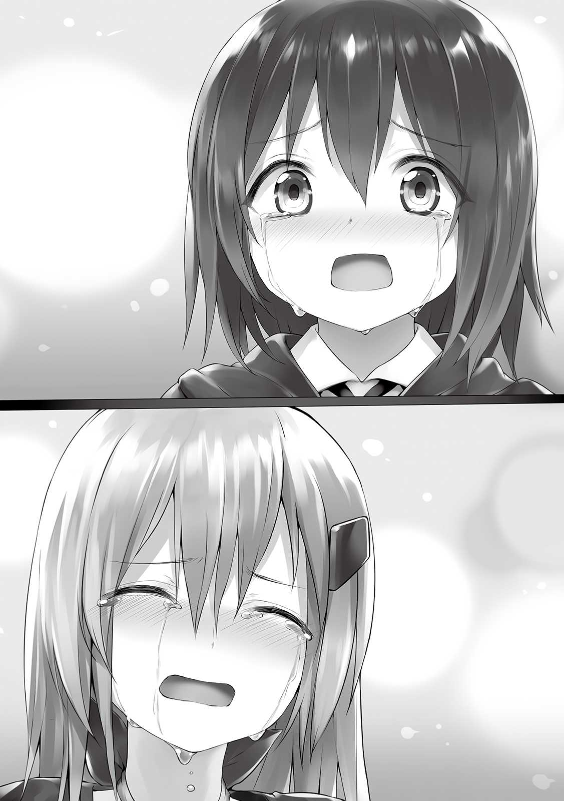
今、俺は美花と過ごした時間全てを振り返っている。誕生日や、俺が美花を庇った時のこと。美花もきっとそうだろう。絶対に会うことはできないと、お互いに思っていた。なんでまた会えたんだろう、どうやって美花がこっちにきたんだろう、そんなのは今はどうでもいい。とにかく、俺と美花は......。
俺と美花は時間と時空を越えて、再会したんだ。
──────
────
──
「ひぅ......ぐすっ......どうもあり、ありが............ぐすっ......」
「あり、ありがっ......んぅ」
「ま、まあまあ二人とも落ち着いて」
「にしてもガバイナの言った通りだったな」
「ああ、本当に良かった」
美花と俺のことに気がついてくれたガバイナさん、美花をここまで連れてきてくれたらしいラハンドさんには心の底から感謝しなきゃ。でも、お礼を言いたいのに言葉が全然出てきてくれないの。
「ラハンドさん、ガバイナさん、ボク達は今日のところは......」
「そうだな。じゃあオレらは国王様に色々報告しに行ってくるぜ」
「アリムとミカ、良かったな」
「じゃあ、またねー」
あっ......ちゃんとお礼を言えないまま四人とも行っちゃう......行っちゃった。今度会った時は心の底からきちんとはっきりお礼を言わないと。まさか美花と再会できるなんて夢にも思わなかった。
美花はまだ泣きながら俺の腕に強くしがみついてる。俺も泣き止めていない。
「今日は積もる話もあるだろうし、お部屋に戻りなよアリムちゃん。ゆっくり二人で過ごすといいよ」
「あいっ......そうしまずっ......」
「おじゃまじま......すっ......」
「あはは、うん。じゃあまた」
俺は美花にしがみつかれたまま階段を上がり、いつも寝泊まりしてる部屋に入った。やっと二人っきりだ。正直、美花が目の前にいるという事実しか受け入れられず、何がどうしてこうなったかさっぱりわからないけれど、とりあえず美花がいる。目の前に。
「美花......」
「有夢っ......」
なんて声をかけるべきなんだろう。何を話すべきなんだろう。色々と聞きたいことや話したいことはあるけれど、とりあえず最優先すべき話題は何なんだろう。
そう考えていたら、美花はゆっくりと口を開いた。
「あの、あのね」
「うん？」
「私......有夢が死んじゃった時、この世の終わりかと思ってた。......再会してすぐだし、今、言うのも唐突すぎるかもしれないけど、また離れ離れになったりして後悔したくないから言わせてほしいことがあるの」
美花はアナズムに来た影響かより白くなっている肌を赤く染め、大きくて宝石のように綺麗な瞳で俺のことをジッと見つめている。そして一つ深呼吸をしてから、ゆっくりと言葉を紡ぎだす。
「ずっと、ずうっと好きでした。も、もちろん今も、好きです」
俺はその言葉にほぼ反射的に反応した。ずっと求めていた言葉であり、ずっと言いたかった言葉であり、もう言えないと思っていた言葉だから。
「俺も、俺からも言わせてよ。......好きです」
そう言うと美花はまた目から涙を流し始めた。俺もダメだ、言いたいこと言って聞きたいこと聞いちゃったから溢れてくる喜びの感情と今までの思い出が抑えきれない。お互いに顔は真っ赤っ赤、口元もゆるゆるに緩んでしまっている。
「じ、じゃあ私達付き合うってことでいいの？」
「うん」
「結婚前提がいいな」
「俺もそのつもりだよ」
「本当に私でいいの？」
「他に誰がいるのさ」
「えへへへ」
満面の笑みを美花は浮かべる。その笑顔は何よりも美しくて、可愛くて、見ているだけで照れちゃいそうだ。
「これで約束が叶った。有夢はもしかしたら忘れてるかもしれないけど......」
「覚えてるよ、幼稚園の頃にした結婚しようっていう約束でしょ？」
「お、覚えてたんだ！ そんな昔のこと......！」
「それはお互い様じゃない」
今までお互いに言及してこなかったのによく覚えていたものだ。俺も美花が覚えていて少し驚いてる。結婚前提でお付き合いするってことになったし、美花の言う通りこれは叶ったってことでいいんだよね。
「やっばり有夢、大好き！」
「俺も美花大好きだよ！」
美花がまた抱きついてきた。なんだかとっても安心するというか、ホッとするというか。そのまま長いこと離れなかった美花だけど、しばらくして訝しげな顔をしながら俺から数歩離れた。
「どしたの？」
「......ある」
「ん？」
「胸がある......」
「あー......まあね」
男に戻るタイミングが図れなかったから女の子のままだった。なんか美花はとってもショックを受けたようで、フリーズしているようにも見える。
「あ、あのぉ......」
「......有夢、今女の子なの？ いや、可愛いって聞いてたから相変わらず顔が女の子なのはわかってたの。でも今は、本物の女の子なの？」
「そうなるね、でも......」
「か、変わったのは年齢と髪と目の色だけだと思ってたのに。ど、どうするの？ 同性結婚できたとしても子供できないじゃない。け、結婚して終わりじゃないんだよ！」
「それなら問題ないんだよ。ちょっとまってて」
「え？」
俺は男に戻った。オンオフできるスキルで良かったとこんなに思ったのは初めてだね。美花はポカンとした顔で俺のことを見つめている。
「いきなり身長が二センチくらい伸びた!? 」
「それだけじゃないよ、もう一回おいで」
美花は軽く頷くとまた抱きついてきてくれた。数秒密着してから俺に向けてきたその顔は『わけがわからない』と言いたがっているのが一目でわかった。
「へ......凹んでる!? 」
「凹んではいないはずだよっ」
「語弊よ。元に戻ってるね。まさかだと思うけど......」
「そうだよ、スキルだよ」
「性別を自由に変えられるスキルかぁ......なんか有夢にぴったり」
男女変換のスキルが俺にぴったりと言われたら、まさにその通りだというしかないね。俺にとってはそんなに生活しにくいだとかってこともないし。
美花は感心したような表情で俺の胸板をさすっている。
「聞いた話によれば、有夢は女の子として活動してるんでしょ？」
「そうだよ。その方が都合が良かったから」
「だよね。よく考えなくてもその顔で男だっていう方が無理あるもん。性別が変わったら普通顔も変わるでしょ？ 身長と特徴しか変わらないって相当じゃない？」
「まあ、そこは俺だから！ できれば合わせてくれると嬉しいな。名前も人前ではアリムって呼んでね」
「アナズムではもう有名人らしいしね。邪魔するわけないじゃない」
「ありがとっ！」
すっかりアリムで通ってるのに今更変えられないからね。メフィラド王国に来てまだ一ヶ月経つか怪しいくらいなのにすっかり顔と名前をみんなに覚えられちゃったし。それに地球にいた頃から経験してきたことだけど、どうせ俺が男だって言っても信用してもらえない。
「ふぅ......でもこれで私の夢は一つ達成されるね」
「あれ、カフェのオーナーになることじゃなかった？ おじさんの会社引き継いで」
「それは仕事の夢でしょ、私自身の夢は有夢と一緒になることだよ......って言ってて結構恥ずかしいねこれ」
「えへへ、照れるなぁ」
なんだかとってもふわふわした気持ちだ。すごく幸せなんだけど、何か忘れているような気がする。
「どしたの？ 急に難しそうな顔して」
「いや......」
そう、そうだよ。なんで美花がアナズムに居るんだ。その理由を聞かなくちゃ。もしかしたら、これは今朝まで美花が恋しすぎて少しおかしくなっていた俺が空元気の果て、ついに精神が狂ったことで投影されている幻覚なのかもしれないし。
俺は美花の頭を撫でてみた。色は変わっているけれど、相変わらずサラサラで綺麗な髪だ。
「撫でてくれるのはいいけど、顔が強張ったままだよ。ほんとに何かあった？」
「いや、もしかしたら一瞬、俺がみている幻覚かなーって......」
「そんなわけないでしょ。こうやって触れてるし、この宿の店主のお兄さんも、ガバイナさんもラハンドさんもみんな私に対して反応してたでしょ？」
「......だよね。それならなんで美花はアナズムに居るの？」
「それは......」
今度は俺の代わりに美花の顔が険しくなった。
例えば俺がアナズムに来た理由は死んだから。あのお地蔵様の情けで第二の人生を楽しんでくれと送られてきたんだ。じゃあ美花は？ 美花も死んでしまったとしか考えられない。送られてきた方法も俺と同じだろう。
そして美花は俺のことを好いてくれている。さっきの反応を見るにずっと俺のことを求め続けてくれていたみたいだ。つまり死んでしまった理由は......いや、まさかね。とりあえずはっきりさせなきゃ。
「......俺はこのアナズムに死んでやってきたんだ。それは美花も同じかな」
「うん、私は死んでお地蔵様に情けをもらって......」
「そこはやっぱり俺と同じなんだね。じゃあ美花の地球での死因ってなんなの？ 俺の後を追ってとかじゃないよね？」
「それも正直考えてた。......正確には、ずっとそれしか考えてなかった。有夢が居ないなんてとても耐えられなかったから」
「そんなっ......」
「で、でも違うの！ 自殺じゃないのっ......もしあの世であったら有夢は怒るってわかってたもん、そんな悲しい顔しないで！ わ、私の記憶が正しければ事故死なの」
美花は必死になりながら自分の死因を説明してくれた。俺が死んだショックからしばらく行けてなかった学校へ久々に登校してみようとしたところでトラックっぽいのに轢かれたらしい。
ちょっと危ないこと言ってたけど、とりあえず自殺ではないみたいで安心した。自殺だと妹の桜ちゃんやおじさんとおばさんに残る傷をさらに深く抉ることになっただろうし、うちの親とも揉めてしまいそうだもの。もしそうだったら丸一日正座させて説教するところだったよ。
「わかった、信じるよ」
「うん......」
「それにしても残してきた叶と桜ちゃん、お母さん達が心配だ」
「私も目が見えない桜がすごく心配だけど......叶君がいつもお世話してくれるから、そこはちょっと安心してる。お母さん達には......親不孝なことしちゃった」
会えた喜びがある分、向こうで悲しんでる人がいるということを絶対に忘れちゃいけない。桜ちゃんなんて今頃、美花のことを思って泣きじゃくってることだろう。それと叶は俺が死んだ時どんな反応だっただろう。兄弟仲は良かった自信はあるから、今度、もう少し落ち着いた頃に美花に聞いてみようかな。そうだ、翔もどうしてるかな。俺と美花の三人でよく遊んでた親友だけど、一気にひとりになったわけだから......。何はともあれ、心残りばかりだ。
「有夢、アナズムから地球に帰る方法とかないの？」
「帰る方法は少しも知らないんだ。手掛かりすらないよ。もし戻れたとしても向こうじゃ死んでるから、どうなるか」
「八方塞がりなんだ」
「まだちゃんと調べたわけじゃないからわからないけどね」
暇な時に文献調べなきゃ。せっかく国王様に城内の図書室や国の図書館に自由に出入りしていい権利をもらったんだから。どこかに何か手がかりがありそうな気はする。
「ところで有夢、話変わるけど、一体どんな経緯で今の立場にいるの？」
「話すと長くなるよ」
「いいよ、話して！ なんならアナズムに来た初日の出来事から全部細かに話してほしいな」
「わかった。立って話すのも疲れるしソファに腰掛けてね」
俺はアナズムに来てからのことを美花に余すことなく話した。刺激的な毎日だから大まかであるならば一日ごとの出来事を話すことができた。さすがに都合の悪いことは省いたりした。こうして振り返ると、まるで一年をギュッと一ヶ月に凝縮したような忙しさだったなと思う。
「なんだかやることなすこと全部有夢らしいね」
「そう？」
「そうだよ。ダンジョンの話はマーゴさんから聞いてたけど、それをレベル上げのために何回も出たり入ったりするのだって、可愛さを活かして人気者になるのだって、本当に有夢らしい！......っていうかゲームじゃないのになんで同じようなことしてるの。一応生まれ変わったのになにも変わってないね」
「うん......」
「私的には有夢が何も変わってなくて安心したけどね！」
地球にいた頃からなにも変わってない......か。一人でいた時は考えたことなかったけれど、確かにそうかもしれない。森の中で何週間もサバイバルしたり、国王様やお姫様とあってお話ししたりしたというのに変わらないものなんだね。
「あと、友達になったお姫様ってどんな子なの？」
「お姫様らしくお
「そうね、誘われたら友達になってもいいかも」
「きっと喜ぶよ」
どっちみち今色々問題のあるヘルの森で見つかった美花は明日にでもお城に呼ばれるけどね。同時に幼馴染だってガバイナさんたちにも明かしたから俺も呼ばれるだろう。記憶が戻ったのかどうか聞かれそうだし、うまい言い訳考えておかないとね。
俺が美花に話すべきことは全部話したから、そろそろ美花がどのようにラハンドさんたちと過ごしてきたかを聞かせてもらおう。
「次は美花の番だよ」
「有夢ほど濃い経験してないよ」
「それでも知りたいな。ヘルの森で生き返ったんだから。あそこはレベルが低いうちは中々過酷だと思うけど......生きてるってことはすぐにラハンドさん達に見つかったの？」
「ううん、二日くらいは一人で過ごしたよ」
美花はこちらに来てからの一週間と数日の出来事を細かく話してくれた。後半はラハンドさん達に拾われて、特にラハンドさんの仲間であるマーゴさんにお世話になったっていう内容だったけど、前半は過酷そのものだった。その二日間を肩代わりできるならしたいほどだ。
「ふむふむ......で、人面樹に殴られたっていうお腹は大丈夫なの!? 跡が残ったり内臓の機能が低下したりしてない？」
「多分、大丈夫だと思うよ」
「良かったぁ。でも後で念のため、強力なポーション飲んでおいてね。俺は人面樹を根絶やしにしてくるよ」
「まって、早まらないで。そこまでしなくていいって」
「むぅ......大切な美花が殴られて俺は怒ってるんだ！ プクーッ！」
「有夢のほっぺたが怒りで風船みたいに膨らんでるの久しぶりに見た」
美花や俺と親しい人たち曰く、俺は普通に怒る程度ならほっぺたがぷっくり風船みたいに膨らむらしい。本気で怒ったときはそんなことならないみたいだけど。怒ってる時に自分で自分の姿確認しないからよくわかんないんだよね。
美花が俺のほっぺたに手を当てて、膨らんだ頬を潰してきた。口から空気が抜ける感覚がする。
「ひゅー......」
「ふふ、有夢は普通に怒ったら可愛いだけなんだから。ところで頬の感触が少し変わった気がする。よく触られたりしてるの？」
「そうだね、よくわかんないけど俺のほっぺたは人気だね。とても触り心地がいいらしいよ」
「有夢の肌はもともと柔らかかったけど......女の子の状態だともっと柔らかくなるのかな？」
「触ってみる？」
「うんっ」
俺は女の子になった。美花はほっぺたをツンツンとつつく。そして目を輝かせた。そしてなにか感想を述べるわけでもなく、何度も何度も俺の頬をつついてはニヤけ、さすっては
「あはは......すごいっ......」
「気持ちいい？」
「最高！ 女子の胸より数倍も触り心地がいい！」
「そういえば美花は同性にセクハラすることでも有名だったね」
ただ嫌がっている人はほとんどいなかった記憶がある。仲がいい人しか対象じゃないこともあるけど、たしか美花に触られるとご利益があるとか、同じくらいスタイルが良くなるとか、美容効果があるとかって噂が流れていたんだっけ。
......まてよ、今の俺は美花のリクエストで女の子になっているわけだ。そして恋人という関係、美花がセクハラの対象とする条件を満たしてしまっている。しまった。
「ほっぺたでこうなんだから、他のところもさぞ柔らかいのでしょうね」
「あ、まってね美花、冷静になってね。本来なら俺は男なんだよ」
「どうしたの、そんな蛇に睨まれた蛙のような震え方をして......あ、付き合い長いからこれから私がなにをしようとしてるか察したのね？」
「や、やめてね......」
「せっかくリアル女の子デビューしたんだから、あれこれ教えてあげるっ！」
「や、やーーん!! 」
何をどうされたんだろう、とりあえず同じようなことを他人にされたら犯罪になっていると思う。俺の身体は美花の手によってモミクチャにされてしまった。
「う......ううっ......もうお嫁にいけないよ......」
「私のお
「そうだけど」
「でも調子に乗ってやりすぎたことは否めないかな。......じゃあ有夢、私に同じことしていいよ」
「え？」
「もちろん男に戻って」
それは冗談で言っているのだろうか、今のを美花が俺にやるのと、俺が美花にやるのとじゃ全然意味が違ってくる。だっておもいっきりあんなことやこんなこと......。
つ、付き合ってまだ初日だからね今日は、そんなことはできないよ。
「や、やめておくよ！」
「私は別に有夢ならいいんだけどな」
「そういうのは、もうちょっと日数が経ってからにしようね」
「有夢って見た目の割にちゃんと男の子の感性あるから乗ると思ったのに」
まさかそこまで計算していたのだろうか。ぐぬぬ、色々見透かされててなんかちょっと悔しい。
「どっちみち今日から私と有夢って同じ部屋に住むのよね。有夢が良ければだけど」
「あ、言われてみれば。もちろんいいよ」
「そうなるとベッドも大きいけど一つしかないし」
「......そうだね」
「ふふん、私は構わないんだけどね！ むしろ嬉し.........い？」
そっか、同棲か。俺と美花が同棲か。うーーん、俺と美花っていつもどちらかの部屋に入り浸っていたからそんなに変わらない気がする。問題はベッドだね。美花は受け入れてくれるみたいだけど、俺がどうなることやら。あ、でも女の子になっていれば変な気は起きないからセーフか。案外なんとかなりそうだ。
美花はさっきまでニコニコ笑って俺のことを半分からかってたのに、急に顔を赤らめた。同棲と同じベッドに寝るということの重大さを冷静に再認識したのかもしれない。
「......その、えっと、あーそっか、これって同棲なんだもんね。あ、あの一緒に住んでくれるって言ってくれてありがと。......不束者ですがとりあえずよろしくお願いします。有夢」
「自分で言ったことに恥ずかしくなっちゃって」
「ふ、ふーんだ！」
すっかり美花の勢いが静まってしまった。むしろ今度は申し訳なさそうな顔をして口を開いた。
「お、お世話になるんだから私だってちゃんと働くからね」
「別に俺の収入だけで二人で暮らせていけると思うけど」
「いいの。私も冒険者に興味ないわけじゃないし、ラハンドさん達みたいにパーティ組んで有夢と一緒にお仕事したいの。足引っ張らないようにするから！」
「んー、どっちみちレベル上げは絶対しておいた方がいいし、そうしよっか」
「うん！」
じゃあ美花が来たことで発生したゴタゴタが全部済んだら冒険者登録させてパーティを組むことにしよう。これならずっと一緒に活動できるし、美花も働くことができるし、レベル上げまできるから一石三鳥だよね。
今後の生活の仕方もある程度決まったところで時計を見たらすでにお夕飯を作り始めるべき時間だった。美花との時間があまりにも嬉しくて意識してなかったけど、かなり話し込んでいたようだ。
「そろそろ夕飯を作らなきゃ」
「もうそんな時間？ じゃあ私が作るよ。材料があるなら有夢の大好物なんでも作ってあげる！」
「ほんと!? 」
なんて嬉しいことを言ってくれるんだろう。ただ、俺が美花の作るご飯で一番好きなふわふわのオムライスはお米がないから作れない。あと味噌と醤油がないから和食も無理だ。となるとオムレツとハンバーグあたりがいいかな。
「じゃあハンバーグとオムレツがいいな！ その二品は美花が作って、サラダとスープと主食は俺が用意するよ」
「オッケー！ じゃあ台所借りるね」
「あ、料理のスキルって持ってるの？」
「持ってるけど１レベルも上がってないよ。そもそも自分のレベル自体一度も上がってないし」
「そっか、差し支えなかったらあとで今のステータス教えてね」
「いいよ！」
俺と美花は料理を始めた。一緒に台所に立つなんて久しぶりだ。アナズムに来てからたくさん美味しいもの食べてきたけれど、どんな料理より好きな人が心を込めて作ってくれたものが一番だと思う。
夢中で作ってるうちに夕飯は完成した。お皿に盛られたハンバーグとオムレツから懐かしい匂いがする。
「とっても美味しそう」
「......ねぇ有夢」
「なぁに？」
「なんか、サラダとスープのクオリティすごくない？」
「ああ......」
完全に気を抜いて作ってたはずなんだけど......さすがはスキル。オフ状態にしないとやっぱりとんでもないクオリティのものを作り上げてしまうんだね。
「これ本当にただの料理スキル？」
「ううん、その上位互換よりもっとすごいやつ。美花のステータス把握したら、俺がどうなってるかを教えるよ」
「ステータス、すごいことになってるんでしょ。どうせ」
「まあね」
とりあえず今は美花の作ってくれたご馳走を温かいうちに食べないと。いつも一人分の料理しか並べなかったテーブルに、自分の恋人の分が追加される。もう寂しい思いをしなくていいんだ。それにたしかに味は良いけれど、好きな人と食べるという幸せに比べたらアイテムマスターの料理なんて
「じゃあいただきます」
「召し上がれ！」
美花は俺の向かいに座った。お互い顔を見ながら食べることができる。さっそくハンバーグをナイフとフォークを使って切り分け、ひとくち口の中に入れた。ああ、あまりの嬉しさに涙が出そうだ。こんな最高なことってあるんだろうか。
一方でスープを飲んだ美花は驚愕の表情を浮かべていた。
「す、スープすごいっ......ええ!? 」
「......ん？ 美味しかった？」
「いやこれ......本当にすごいよ？」
「星付きレストランにも行ったことある社長令嬢からの味の感想を聞きたいな。食べさせた人は必ず美味しいって言ってくれるけど、地球基準じゃどうかわからなかったから」
「地球基準も何も、お世辞抜きや彼女としての偏見抜きで本当に世界一美味しいと思う」
「そっか、良かった」
でも俺としてはこんなものより美花が作ってくれたオムレツの方が数億倍価値がある。美味しいことには変わりないけどね。
美花はサラダも食べて同じような感想を述べた。そして自分の作ったハンバーグを口に入れると、心配そうな顔で俺のことを見つめてきた。
「ごめんね有夢......私、もっと頑張って美味しくご飯作るから」
「え、今で十分だよ!? 」
「ううん、よくない。全然違う。私もスキル習得する」
「じゃあ早くレベルを上げてスキル習得をして......またハンバーグとオムレツを作ってよ」
美花は力強く頷いた。やっぱり今日は全品、美花に任せるべきだったかな。とりあえず俺の一生のうちで一番美味しかったであろう夕飯はあっという間になくなってしまった。
「ありがとね美花、ごちそうさま」
「......有夢がそれだけ喜んでくれてるんだったら、私も作って良かったと思う。でも絶対次はもっと美味しく作るから」
「わかった、期待してる」
それから俺達はもちろん別々にお風呂に入って、国王様から呼び出されるかもしれないので明日に備えて寝ることにした。美花は服をマーゴさんに全部返したらしく、寝間着を持っていないらしいので俺の予備を貸した。
さて、問題はここからだ。一緒のベッドで寝るということは、添い寝するということなんだ。美花との添い寝は初めてじゃない。ふざけてやったことは何回かある。でも付き合ってる状態だとこれまた意味が違うんだ。
俺はベッドの端っこに横になった。わざわざそうしたというのに美花は向こう端か真ん中で横にならず、わざわざ俺の真隣で寝転んだ。息遣いを感じる。
「ね、有夢。私、数年前に有夢が誕生日プレゼントしてくれた手作りのやけにクオリティ高いお人形、ずっと大切にしててね、寝るときは毎日枕元に置いたり抱きしめたりしてたんだ」
「そ......そうだね、ずっと大事にしてくれてたね！」
「でも今は手元にないでしょ？ うまく寝付けるか心配なの」
「じゃあ近いうちにまた作ってあげるよ！ 今度はもっとクオリティ高く......」
「違うの、私が言いたいのはその代わりを有夢にしたいってことなの」
耳元でそう
俺のことをより柔らかくなったと好き放題してくれたけど、美花だってむにむにしてる。特に同い年なはずなのにアリムである俺よりも胸があるのが悔しい。地球ではめちゃくちゃスタイル良かったからね、仕方ないけどさ。そして同性であるはずなのに照れで俺の心臓の鼓動が速くなっているのがわかる。カルアちゃんと一緒に寝るのとは訳が違うよ。
「あんまり抱きつかれるとドキドキするよ」
「私もだよ。でもいいでしょう？ 結婚前提で付き合ってるもんね？」
「そうだけどさ......」
「私としてはずーっとこうしたかったの。もう二度叶わないって思ってたけど」
美花は少し寂しそうに笑った。そんな顔されると先に死んじゃった俺としてはこれを受け入れざるを得ない。
「私、すごく大胆になってるって自覚してるよ。私だって心臓がばくばく鳴ってるのに衝動を抑えられないの。......もう後悔したくないの有夢、もう私の前からいなくならないで。付き合い始めた日にこんなこと言うのは束縛が強すぎるって思われるかもしれない、重いかもしれない......これは私の完全なわがままなの。でも......」
「わかってるよ。俺も美花なら構わない」
「ありがと」
嬉しそうにお礼を呟くと美花は目を閉じた。少し涙を流している。まもなく寝息が聞こえてきた。普段より寝付くのが早いから色々ありすぎて疲れたのかもしれない。腕は俺を捕らえたままだ。
俺は軽く抱きしめ返すような姿勢をとってから目を閉じた。美花が恋人としてそこにいるという現実が本当に夢じゃないことを祈って。
▼△▼△▼
目が覚めた。俺は真っ先に隣を確認する。美花が天使のような寝顔をこちらに向けて眠っていた。......つまり夢じゃなかったわけだ。美花が本当にアナズムにやってきて、付き合うことになって、同棲までしてるんだ。ああ、なんて素晴らしくて嬉しい現実なんだろう。
先に起きて朝ごはんを作ろうかと思ったけれど、昨日の大胆さを考えると隣に俺が寝てなかったらパニックになりそうなので、このまま起きるのを待っていることにした。およそ十五分後、美花も目を覚ました。
「あ、あ、有夢がいるっ......あゆむぅ......よかったよ、起きたら居なくなってたりしてなくて、ほんとによかったぁ......！」
「朝から泣いたら疲れちゃうよ。まずは朝ごはん食べようね」
「えへへ......とっても美味しかったから、私が料理スキルをしっかり習得するまでご飯の類は全部有夢に任せたいな」
「いいよ！ 目玉焼きメインでいいよね」
「うんっ」
張り切って作った朝ごはんを二人で一緒に食べて、朝の準備と身だしなみを整えて、おしゃべりしながらくるべき時をまった。午前九時頃になり俺の頭の中にメッセージが届く。これを待っていたんだ。おしゃべりを中断して美花に静かにしてるようお願いし、受け答えた。
【アリム、起きているか？】
【はい国王様！ おはようございます！】
【実は今日、城に来て欲しいんだが......】
【どのような要件かは分かってます。ガバイナさんとラハンドさんから連絡を受けたのですよね？】
【わかっているなら話が早い。カルアと昼食を共にして欲しいのでな、十一時頃に来てくれないか】
【わかりました！】
なんとなくだけど、国王様は俺や美花を下手に怪しんだりはしてないみたいだ。カルアちゃん誘拐未遂について俺は関わりすぎてるし、こんな時期にヘルの森で見つかったら美花も冷静に考えたら怪しいし、なによりその二人が幼馴染同士なんて怪しさ倍増だけれど、国王様は信じてくれてるような気がする。なんか嬉しい。
仮に怪しまれていたとしても、どれもこれも偶然だからどっちみち俺たちは潔白だしね。
「今のってメッセージのやりとりでしょ？ 脳内に携帯があるみたいな感じの。私から見るといきなり相槌うったり、何もないところに向かってコミュニケーションとってるみたいでこわいんだけど」
「俺も最初は少し違和感あったけどすぐ慣れるよ」
使ってればわかるけど、ほんとに電話してるのとあまり変わらない。下手すれば二、三回使うだけで当たり前になる。むしろもう、俺にとってはないと不便なものになってるよ。
「んー、そうかもね。で、誰からどんな内容の連絡が来たの？」
「昨日言った通りだよ、国王様から来てくれって」
「......国王様から呼ばれるって本当にすごいわね」
「そうかな？」
「この服もやけに豪華なの、お城に行くから？」
「そうだよ、やっぱりお城だからそれなりの格好は毎回してるんだ」
やがて言われた時間の三十分前になったので、俺たちは部屋から出た。フロントでウルトさんが気がついて声をかけてくる。
「やあ！ 昨日はどうだった？」
「ウルトさん！ おかげでたくさんお話できました。あの、この子もこのままあの部屋にいていいんですかね？」
「もちろん、そもそもあの部屋は夫婦が宿泊するためのものだからね。追加料金を取ったりはしないよ」
夫婦という言葉を聞いて美花が少し照れた。ウルトさんには女同士で住んでるって認識だけど、実際は違うからね。つい俺も少し反応しそうになったよ。
ウルトさんへの挨拶もそこそこに、変装してから外に出る。美花が変装に首を傾げた。
「なんで変装するの？ 全然違う人に見えるよ」
「アナズムはね、娯楽が少ないから有名な人がいるとめちゃくちゃ寄ってくるんだ。どれほどの規模か見せてあげたいけど、正直それすら抵抗がある」
「なるほど、わかった。じゃあこのまま行きましょう」
そう言うと美花は手をスッと差し出してくる。握れということらしい。さすが昨夜、自分で今は大胆だと言っただけのことはある。まあ、関係が進まずに過ごすよりはいいか。地球での俺たちみたいに。俺はその仕草に手を握ることで返答した。手を握るなんて何百回もしてきたけれど、とても特別な感じがする。
そのまま俺と美花は寄り道せずに城まで辿り着いた。美花はまだ冒険者カードも身分証もないので、俺だけ冒険カードを門番に提示する。
「ようこそ御出でなさいました。案内は必要ですか？」
「もう必要ないですよ」
「ですよね、ではお通りください。お連れ様も一緒に」
「は、はいっ！」
お城の敷地内に入ってから美花は城を見上げた。感嘆の声が漏れてる。俺も最初はそうなったし、やっぱり本物は感激するよね。
「すごい......しかもこれ、歴史的遺産として残してるんじゃなくて現役なのよね？」
「そうだよ、なかなか迫力あるでしょ」
「その上、王様もお姫様もいる......王子様もいるの？ イケメン？」
「二人いるよ、理想を見事に叶えてくれる！」
「へぇ......翔とどっちがかっこいい？」
「タイプが違うよ。二人の王子様は爽やかタイプ」
「なるほどね」
素敵な庭もよく見るためにゆっくり歩いた。少しのんびりめに城の入り口に辿り着き、中に入った。いつもみたいにお迎えの執事さんがいる。
「アリム様、カルア姫様とお会いする前に今日はこのままお連れ様とご一緒に玉座の間まで行き、話をとの国王陛下からの言い伝えです」
「わかりました！」
少し時間が押していたので感動して城内の装飾に魅入る美花を若干引っ張りながら玉座の間まで来た。前に会った時よりちょっぴり疲れてる様子の国王様がいつもの玉座に座って待ってくれていた。
「二人ともよく来てくれた」
「呼び出されたら絶対来ますよ！ それで、この子のお話ですよね」
「そうだ。その前にアリム、また礼を言わなきゃならんな。あのマンティコラを傷を付けずに討伐したのはお前だとギルドから連絡がきた」
「ええ、ちょうどなにか仕事を受けようかと思ってる時に話があったので、依頼を受けちゃいました」
「正直、アリムが受けてくれて助かった。ラハンドも非常に良い仕事をしてくれたしな。......あのマンティコラはいま解剖して調べている。絶対になにか掴めるはずだ」
国王様は強く拳を握った。やっぱりファウスト以外に関係者がいるって踏んでるんだ。俺も正直そう思う。マンティコラなんかじゃ全身から血を吹き出させるなんて殺し方できないみたいだしね。
ため息を一つついた国王様は、俺から美花に視線を移した。
「それで、そのアリムと同い年ほどの少女がラハンドとガバイナの言っていた森で見つけたという少女か」
「そうです！ 幼馴染だったのでボクが引き取りました」
「ということは記憶が戻ったのだな？」
「いえ、それが......」
俺は今朝頑張って考えた新しい誤魔化しを述べた。互いに名前と関係だけは思い出しており、夢や寝言に出てくるほどの親しい関係だと判明こそしているけれど、実際どのように一緒に過ごしてるかなどは相変わらず二人ともわからない......と。
「そうか、つまり互いに大切な人だということはすぐにわかったがそれ以外が思い出せないのか」
「そういうことなんです。深い関係があることはまず間違いないと思うのですが」
「しかしアリムはピピーの森に、その子はヘルの森に倒れていたとは......我が国からはどちらも数時間で行けるが、互いの距離となると随分遠いぞ」
「城下町から見て反対ですものね」
「どのように記憶をなくし、どうしてその場所で倒れることになったのか、謎は深まるばかりだな......」
正直に話せないのが辛いね。別世界から来ましたなんて簡単に言えてしまえればそれが一番なんだけど。今回みたいに言い訳を考えてなくちゃいけないし隠し通すのもきつい。
「そして、なんという名前なんだ？」
「わ、わわ、私の名前はミカと言います！」
「ミカ......。カルアが、アリムが寝言で一番つぶやいていたと言っていた名前と一緒だ。アリムにとって一緒にいなければならない存在のようだな」
「えへへ......」
あ、ミカが照れてるよ。っていうかガバイナさんと一緒に寝た時だけじゃなく、カルアちゃんと寝た時も美花の名前を呼んでたんだね。どれだけ未練たらたらだったんだろ。やっぱり先日のアレは起こるべくして起こったんだね。
「しかしミカよ、ヘルの森で見つかったというのが少しまずい。今あそこはもっとも面倒が起きている場所でな」
「そうらしいですね......」
「ああ、だから私自身としてはおそらく事件とはなんの関与もしてないと考えているが、一応いくつかの質問をしなければならないのだ。協力してくれるな？」
「はい、もちろん」
国王様は執事さんにメモを取らせながらミカに質問し始めた。記憶喪失っていう設定だから大半をまともに答えることができなかったけどね。三十分ほどで質問は終わった。
「やはりなにも覚えていない......いや、知らないか」
「はい、ご協力できないみたいでごめんなさい......」
「いや、謝る必要はないのだ。本当に魔力はレベル１のようだしファウストの殺害に関与したとは考えにくい。元ＳＳＳランクの冒険者である私の前で実力を隠し通すことなんてできるはずもないしな。故にミカは巻き込まれただけだと考えている。今の質問の答えでそれも確信に変わった」
よかった、国王様に疑われたら無理やり捕らえられて尋問だとかってのもありえそうだからこわいよ。美花が鞭打ちとかされるって考えただけで身体が震えてくる。そうなると、この国と美花だったら俺は美花をとるから、敵対しちゃうことになるし。......ま、もしかしたら俺が優遇されてるだけかもしれないけどね。
「ともかく、記憶が戻っていないにしろ大切な人が見つかってよかったではないか二人とも。もう帰ってもいいが、カルアと遊んで行くだろう？ ところでミカよ、もし良ければお願いが......」
「あゆ......アリムから聞いてます！ お友達が欲しいのですよね？」
「その通りだ。その気があるなら私も嬉しい。実は、今日の夜中から二週間と四日ほどカルアを友好国に避難させる予定でな、しばらく会えなくなるからたっぷり遊んでやってくれ」
二十日、少し長いけどカルアちゃんを避難させるのは正解だと思う。誘拐されるよりはよっぽどいい。今夜からっていうのは少し唐突ではあるけれど早めが良いのに越したことはないよね。
「ではカルアが部屋で待っている。行ってやってくれ」
「はい！」
美花を連れてカルアちゃんの部屋へ。友達に友達を紹介する時って少しだけ変な気持ちになる。お姫様に恋人ということを隠して美花を紹介するんだから当然かもしれないけど。
部屋の前でノックした。扉が開いて中から嬉しそうな顔をしたカルアちゃんが出てくる。
「アリムちゃんいらっしゃい！」
「きたよカルアちゃん。国王様から聞いたんだけど、別の国に避難するんだって？」
「はい、昨晩決まったので連絡が直前になってしまい申し訳ありません」
「いいよいいよ」
「ところでお隣にいらっしゃるのが......」
「ボクの幼馴染のミカだよ！」
俺はちょっと後ろに下がって美花とカルアちゃんを対面させた。カルアちゃんは変わらずニコニコ笑ったままミカの手を握った。ミカは一瞬だけ驚いたみたいだけど、すぐに笑みを返しながら手を握り返した。
「ミカさんですね！ 初めまして、カルア・メフィラドと申します！」
「......はじめまして！ ミカと言います」
「驚きました、アリムちゃんほど美しい方が他にもいらっしゃるなんて」
「い、いえいえ、私はあゆ......アリムほどではないですよ」
美花ってば、そんな
「あ、あのですね......実はお願いしたいことがありまして......」
「お友達になりませんか？」
「お友達に......いいのですか!? 」
「もちろん！」
どうやら美花もカルアちゃんのことが気に入ったみたいだ。よかったー。今度からこのお城に遊びに来るときは美花と二人で来なきゃね。そのうちベッドに三人で川の字になって寝るだなんてこともあるかもしれない。
「嬉しい！ ありがとうございます！ ところでもう一つお願いがあるのですが、差し支えなければ普通のお友達みたいに話しかけてくれませんか？」
「えっと、アリムとのように？」
「そうなんです。私はこの口調から変えることができませんが......」
「わかったわ、カルアちゃん！ 改めてよろしくね」
「はい、ミカちゃん！ 私、とっても嬉しいです！ ではお二人ともお部屋の中へどうぞ」
ものすごく嬉しいのか、カルアちゃんは少しだけスキップしているように見える。お部屋に入るとすでに三人分の紅茶と軽いお茶菓子が用意されていた。それ以外は前に泊まった時から別に変わったことはない。何か怪しいものが新しく追加されてたり、なんてこともないみたいだ。よかった。
「すごい......これが本物のお姫様のお部屋なのね......」
「ミカちゃんはこういった部屋は初めてなのですか？」
「ううん、なにせ記憶がないから。ただお姫様が住む部屋というのは、ある程度イメージしてたんだけど」
「割と普通のお部屋だと思いますよ」
んー、お部屋のほとんどのものが高級や最高級のもので囲まれてるって普通だって言えるんだろうか。いや、上流階級だったら普通なのかもね。リロさんやミュリさんもこんなお部屋なのかな。
カルアちゃんは俺と美花に椅子に座るよう促しながら話を続ける。
「それにしてもお二人とも、再会することでお互いの記憶を取り戻すなんて......なんと感動的なのでしょう！ 本当に大切な人なのですね。ところで他の記憶は......？」
「そうなんだけど、そこはなんだか不思議な感覚なんだよね。他のことは思い出そうとすると、ぼんやりとして全然わからないんだ」
「そうなのですか......」
この調子で記憶をなくした設定はずっと続けてかなくちゃいけない。俺が記憶のことについて話してきた人達はみんないい人ばかりだし、特に純粋なカルアちゃん相手だとすごく心が痛む。
これ以上深く記憶についてツッコまれるとボロが出てしまうかもしれないので、美花とメッセージで相談してもう記憶に関する話は逸らすように口裏を合わせた。
それから俺たちは楽しく紅茶とお菓子を楽しみながらガールズトークをしていたんだけれど、美花がカルアちゃんに俺とどうやって過ごしたのかを聞き始めて大変なことになった。そう、俺とカルアちゃんが添い寝したことも、四人で裸の付き合いをしたことも全てバレちゃったんだ。美花に今まであった出来事を話した時、わざと言わなかった内容を俺の都合を知らないカルアちゃんが全て話してしまった。
それから美花の態度が変わった。俺がゲームばっかりやってて美花をおざなりにした時と同じ態度。周りには気がつかれないようなものだからカルアちゃんはわかってなかったけど、俺には美花からの妙な重圧をヒシヒシと感じたんだ。......だから話してなかったのに。カルアちゃんは何にも悪くないけどね。
そうしてかなり豪勢なお昼ご飯をご馳走になり、その後も夕方になるまで遊んだけど、執事さんが遊ぶ時間はおしまいであると告げにくるその時になっても美花の態度はずっと変わることはなかった。
「本当にもうこんな時間！ 楽しすぎて時間を忘れてしまいました！」
「私、また遊びに来ていいよね？」
「もちろんです、アリムちゃんと一緒に......あ、もちろんお一人でも是非遊びにきてください！ アリムちゃんとミカちゃんに二週間も会えないと思うと寂しいです......」
「そだね......。でも二十日後にまた会えるよ！」
「はい！ それまで私、皆さんに迷惑かけないようおとなしくしています」
俺が思っていたよりかなり遅い時間にカルアちゃんは避難先に送られるらしく、見送ろうと思ったけれどそれはやめておいた方が良いみたいだった。仕方ないのでその場でカルアちゃんと別れ、帰ってきたらすぐに遊ぶという約束をしてから俺たちはお城から出た。
そして美花とウルトさんの宿の部屋まで戻ってきた。まだあの態度は続いている。少し怪しげなにっこりした顔でまだ俺のことを見つめてるんだ。リビングに荷物を放ったあたりで美花がゆーっくりと口を開いた。
「今日さ、一緒にお風呂入ろっか」
「それは......できないよ」
「有夢のことだからちゃんとワケがあるんでしょ？」
「あ、あるよ！」
やっぱりそのことについてだ。ただこのことを言及されるのはわかってたから、すでにどう答えるかある程度考えてある。嘘はバレてしまう可能性があるし付き合いたてでギクシャクしたくないから本音を伝えるしかない。
「カルアちゃんは友達だよ、その、一緒に入ったリロさんとミュリさんもね。そして俺はスキルの力で完全に女の子になるみたいで、この状態だと女の人と一緒にお風呂入っても同性としか認識できなくなるんだ」
「それはなんとなくわかってた。多分だけど男に戻ってもその記憶は同性という認識になるんじゃない？」
「その通りだよ」
「だったら私と入ろうよ、なんで無理なの？」
「ドキドキするからだよ」
俺は美花と女の子の状態であろうと一緒にお風呂に入ったら絶対鼻血が噴き出るほど興奮してしまう。それこそ男の状態でいるのと変わらないくらい。だって本気で好きだから。それに俺の正体を知っている美花が俺と裸の付き合いをするのはたとえ周りの目がなかったとしても風紀的にどうかと思う。
そんなことを美花にしっかりと話した。美花は嬉しそうな顔をしている。
「えへへ、なるほどなるほど」
「だから慣れるまで待ってほしいな」
「わかった、そうする。仕方ないからこの件については付き合いだろうし大目に見るわ。それに私と昨日添い寝した時もすごくドギマギしてたもんね、それを考えたらお風呂入れない理由も納得かな」
ああ、よかった。何度考えてもやっぱり、美花とお風呂はいると俺がおかしくなっちゃう未来しか想像できないもん。
「でも添い寝は継続しよう。毎日ね！」
「ええっ!? 」
「いいよね？......ダメ？」
「い、いいよ」
昨日と同様、押しに負けてしまった。まあでもこうやって何かしらスキンシップを取れば慣れる速度も早まるかもしれないと考えたら継続すべきなのかもしれない。
▼△▼△▼
「今日は私のレベル上げをするんだっけ？」
「そうだよ。一昨日話した通り、レベル上げをしようね！」
「うんっ！」
美花と再会して三日目の朝となった。やっぱり添い寝はドキドキしたけれど女の子状態だと物理的な感触はある程度耐えられるのでなんとかなる。こうやって慣れていけばいいね。
美花のいう通り今日は予定していた通りにレベル上げを始めようと思う。現状、アナズムきてから美花は一度もレベルが上がってないけど、それは俺にとって好都合。ゲームでは普通にやるであろうことを現実でもやってみたいんだよね。計画は完璧だ。
「やっぱり低い魔物からコツコツ倒してくの？」
「いや、美花にはいきなりＡランクの魔物を倒してもらおうと思ってるよ」
「レベル１でＡランクって倒せるの......？ 私、ミルメコレオっていう黒いライオンの魔物を見たことあるけど、あれ多分、熊や普通のライオンとか象より強いでしょ？」
「そだね、だいたい俺の体感でＤランクからＣランクの合間ぐらいが熊とかライオンかな！ Ａランクはその数十倍強いけど大丈夫。そこは俺がバッチリやるからさ！」
「レベル上げに関しては有夢はエキスパートだもんね、ゲームのおかげで。じゃあ安心して任せようかな」
「うんうん！」
美花を危険な目には遭わせたくないし、綺麗な体に少しでも傷を負わせたくないから計画を完璧に遂行しよう。実は未だに美花のお腹を殴った人面樹を探し出して始末したい気分なんだけど、そうしないのは復讐より美花との時間の方が大事だから。
朝ごはんを食べて準備ができたら、俺たちは宿、そして城下町自体から外に出て近くの森に入った。マジックバッグからこの間作ったホウキを取り出す。
「ここに来るまで装備は何もしてないし、ここでどんな準備をするかと思えば。そのホウキが必要になるの？」
「ううん、これは移動手段」
「ホウキで移動って魔法使いとか魔女みたいだね」
「魔法美少女アリムちゃんだよ！」
「魔法少女ならフリフリでカラフルな衣装着なきゃ」
「面倒だからやんないよ。さ、俺の後ろに乗ってね」
「バイクの二人乗りみたいな感じ？」
「そうそう、そんな感じ」
そうは言ってもお互いバイクの二人乗りなんてしたことないから勝手がわからない。とりあえず俺が前に乗り、美花は後ろに乗って俺にしがみついた。集中してホウキの操作できるかな。
「有夢ってバイクの免許取る気配なかったから、こういうことできないと思ってたけど」
「確かにそうだね。ふふふ、二人でドライブだよ！」
「ドライブ......えへへ。それで、どこまで行くの？」
「とりあえず海かな」
魔物を探すスキルもアイテムもない今、Ａランクが高確率で出てくると把握しているのは港町パルキーニからしばらく行ったところにある魔の海域。あそこは高いランクの魔物ばかり出てまともに船が通れない。しかしそれは俺にとって、経験値にできる魔物がでやすいということになる。ついでに美味しいお魚も捕れるかもしれない。
「アナズムの海かぁ......どんなの？」
「地球に比べて魔物のせいで何倍か危険なくらいであとは変わりないよ」
「そうなんだ......」
「ちなみにこのホウキ速いんだけど、結構遠いから数時間かかるよ」
「いい、有夢にこうしてるだけで何時間でもいける」
そう言うと美花の体勢はしがみつきから抱きしめる形に変化した。おそらく後ろで美花は満足そうな顔をしていると思う。これでいいならいいんだけど。
透明になってからホウキを空に飛ばした。それから美花の抱きしめがより強くなった。
「思ってたよりこわい......」
「運転してる俺はそうでもないけどね」
「もしかしたら運転の邪魔しちゃうかも」
「なにされても落ちなきゃ問題ないよ」
美花はこわがりながらも安定した姿勢を取ってくれてるからとても飛びやすかった。そして空を飛ぶというのは障害物をあまり気にしなくて良いので、前に魔の海域へ来た時より格段に辿り着くのが早かった。それに運転に集中してたら時間自体も気にせずに済んだ。
水面に着地しようと足を伸ばしたところで俺はあることに気がついた。
「そういえば美花、水の上に立てないんだよね」
「当然でしょ!? 」
「だよねー......んー、俺の靴貸すから履いてくれる？ これ、水の上や空中に立てるようにできてるんだ」
「えっ、有夢が履いてた靴、私が履いて良いの？」
「良いよ、俺はホウキ使って浮遊するから」
「わかった」
俺の履いていた靴を美花が履く。なんだか少し嬉しそうだ。
美花はおそるおそる水面を足でつつき、地面と
「すごい、普通に立てる......」
「じゃあこのまま魔物が出るまで待とうね」
しばらくして俺らめがけて鬼のような顔の魚が飛び出してきた。確かこいつはＡランクの魔核が出てきたうちの一匹だったはず。正式な名前とかは知らないけど、一番最初の獲物がＡランクの魔物とは運がいい。というかＡランクの魔物一匹倒したら終わりのつもりだったからこれで終いだね。
「わ、わわわわ......！」
「驚かなくても大丈夫だよ、ほら！」
素早く一閃。俺の自慢の剣で鬼のような魚を斬り、傷口を残さずに気絶させた。やっぱりこの剣って便利だね。おかげでたぶん死んではいないはずだよ、瀕死ではあるだろうけど。あとはこいつに美花がとどめを刺せばいい。
「ふぅ、こんなものかな」
「おおっ......カッコいい......」
「えへへ、そう？ はい美花、これ。この剣で斬ったらとどめをさせるからね。今のはいわゆる峰打ちだから」
「それで私に経験値が一気に入ってくると」
「そゆこと」
剣の効果のほとんどをオフにし、美花に渡した。美花はそれを両手で持ち魚の魔物に向かって振り下ろす。魚はビクンと一瞬だけ悶えると、赤い魔核を排出して息を止めた。
「魔核ってやつが出てきたけど、これで倒せたの？」
「そうだよ！ そろそろ身体が熱くなってレベルが上がるはずだよ」
「あっ......ほんとだ......あつっ......んっ......」
「......ステータス見てみなよ」
......美花の顔は少し赤くなり、大量に汗もかき始めた。１レベルでＡランクの魔物を倒したら相当な経験値が一気に入ってくるはずだからその分身体も熱くなるのかな。支障があるほどではなさそうだ。汗だくの美花が笑顔を俺に向けながら口を開いた。
「結構上がってるよ！ 今のレベルはね......」
「ん、待って」
「なに？」
なんか変な音が海の下からする。少しホウキで上に上がってみると美花の足元に黒い影が迫っているのが見えた。どうやら美花めがけて浮上しようとしている何かがいるっぽい。俺はすぐに美花を掴み、ホウキまで引き上げた。
「ど、どうしたの!? 」
「何かくるよ！」
「グガオオオオオオ!! 」
「わ......」
出現したのは巨大なサメの魔物。俺がこの間来た時は遭遇しなかった。美花を食べるためにやってきてるみたいで、そのギョロリとした目は明らかに美花を捉えている。俺の大事な美花を食べようとしたそのこと自体に腹が立ったので、気がついたら俺は美花から剣を取り上げて斬撃を放っていた。サメは気絶した。
「ふぅ、危なかった。美花を食べようとするなんて......」
「あんなのも出るんだね。......でも魔核が出てないよ」
「あ、無意識のうちに生け捕りモードにしてた。よし、じゃあせっかくだしこいつも経験値にしちゃおうね美花」
「無意識で経験値にするための対応するなんて、流石有夢ね」
先ほどと同じように貸した剣で美花はトドメを刺す。サメからもＡランクの魔核が出現した。最初は一匹の予定だったけど、これで二匹倒したことになってしまった。運がいいといえばそうかもしれないね。
「ま、また身体が熱い......」
「経験値が上がるたびにそうだよ」
「ま、毎回こんなに熱いの？ もう色々ビッショリなんだけど」
「ううん、１レベルだとそんな大したことないよ。もう一回ステータス見てみて！」
「わかった」
今度は何かが近づいてくることはなく、美花はじっくりとステータスを確認できた。教えてくれたその内容は１７８５００の経験値を手に入れてレベルが59 、それぞれのステータスは４８５ずつになったというもの。スキルポイントやＨＰは９７０になってるらしい。
「一気にレベル上がりすぎじゃない？」
「そうだね！ でもこれで適正ランク以下が受けなきゃいけない試験は余裕で突破できると思うよ」
「Ｘランクが正規の冒険者になるためのものだっけ？ このレベルで足りるんだ」
俺はこれより圧倒的に高いレベルで挑戦したからわかんないけど、たぶん足りると思う。これでオーケーなはずだ。
「うん、だからお昼ご飯食べたら帰ろうね。そしてすぐに冒険者登録だ！」
「わかった！」
▼△▼△▼
「ここで冒険者登録しようね」
「宿の目の前なのね」
「そうそう」
Ｓランクになってから一度も顔を出してないこのギルド。あの筋肉が発達した受付人のアギトさんは元気してるかしら。俺は変装することなく美花と手を繋いでいない方の手で戸を開けた。酒場も兼ねてるからすこしきつい臭いがする。
「だからよ、あの子の活躍がよ......」
「俺らが最初に可愛がってやったんだ！」
「そうだそうだ！ それにしても活躍してくれて嬉しいなぁああああ」
「またあのかっわいい顔を見てみてぇもんだよなぁ」
手早く受付に行こうと思ったのに、アギトさんは他の冒険者さんと一緒にお話してるみたいだ。仕方ないから声をかけようね。
「あの、アギトさん！」
「ん、ああ、なんだ。依頼なら向こうの......って、ええ、アリムちゃんッ!? 」
アギトさんがそう叫ぶと、このギルドにいる全員が俺と美花の方を振り向いた。そんなオーバーに反応しなくてもいいじゃない。俺たちのことを見つめて離さないみんながジリジリと近づいてくる。
「可愛い......アリムちゃん......かわいい......」
「きゃあ、きゃああああ！」
「なんて可愛さなんだ、はぁぁあああ」
「やべっ、涙が出てきた......」
なんだか怖いよ、美花もドン引きしてるし。明らかに前に来た時より酷くなってる。もしかしたら進化した称号のせいかもしれないけど。ここはいっちょ、みんなに落ち着いてもらおうね。
俺は自分で思う限りのとびっきりかわいいスマイルをみんなに向けた。
「みなさん、数日ぶりです！ 今日はちょっと用があって来たんです。その......お話とかをする時間はあんまりないんです、ごめんなさいっ」
「なんて天使のような声......」
「あ、アリムちゃんが時間ないと言っているぞ！」
「オメェら、散るんだ！」
かわいいと言うこともすんなり聞き入れてもらえるのかな。確かに俺も美花におねだりされたら本能的には言うこと聞きたくなるからね。これでアギトさんに要件を話せる。
「それでですね、アギトさん」
「な、なんだいアリムちゃん、へへ、俺に用だったのか」
「はい、実はボクの幼馴染を冒険者として登録して欲しくて来たんです」
「なるほどな。たしかに今アリムちゃんが通ってるところじゃ登録はできないもんな。その緑髪の嬢ちゃんだろ？」
「そうです」
美花は俺より前に出てアギトさんと対面した。アギトさんの
「な、何という可愛さだ、おい......」
「そうでしょ？ この娘もボクと同い年なんですよ」
「ってことは適正ランク以下だな。わかった。しかし可憐だなおい......」
「そうでしょ？」
「とりあえず名前を教えてくれ、フルネームな」
名字を聞かれるかもしれないと美花には話してあり、それはホウキに乗ってる間に決めた。ミカ・マガリギだ。美花の本名は
「......わ、私はミカ・マガリギと言います」
「ミカ・マガリギね。十二歳だからＸランクからだが......アリムちゃん、もしかして」
「そのもしかしてです」
「試験っていうのを、私受けようと思ってるんですけど......」
「やっぱりな！」
アギトさんは俺にしたような冒険者についての基本的説明を美花にもし、ギルドカードを製作してくれた。これで美花にも身分証ができたわけだ。
それからＸランクを脱却するために俺が試験を受けた部屋にやってきた。アギトさんはあの時と同じ準備をしている。もちろん試験内容も同じであり、開始してから美花は一瞬でアギトさんに触れてクリアしてしまった。終わる瞬間にアギトさんは「またか」と呟いているのが聞こえた。
「あー......これでまあ、ミカちゃんも正規の冒険者だ」
「ありがとうござました！」
「いやいや、なんのなんの」
受付に戻ってから美花はＦランク仕様になったカードを受け取った。これでパーティを組めるようになったわけだ。
「アギトさん、ボクとミカでパーティ組みますよ！」
「ＳランクとＦランクで!? ......いや、もうミカちゃんもそれほどの実力があるのか。わかった、パーティ名はどうするんだ？」
「ジ・アースにします！」
これもホウキに乗ってる最中に決めたこと。俺たちは元地球人だからね、地球をパーティ名にした。最初はドラグナーストーリーにしようって俺から提案したんだけど、俺の死因に関係しているからって美花が嫌がったんだ。ちなみにパーティリーダーは俺。
パーティ登録をすると一定範囲内にいるパーティメンバーに自分が得た経験値が入るようになる。だから絶対にパーティ登録したかったの。
互いにアギトさんが差し出した光る玉に同時に触れ、パーティ登録が完了した。メッセージからステータスに所属パーティ名の項目が追加されたとも表示された。
「やった！ ありがとうございました！」
「なんの。もう帰るのか？......たまに顔を出してくれよな」
「はいっ！」
俺と美花は用事が済んだのでこのギルドから出て行く。去り際にガヤガヤと「これはスクープだ！」「アリムちゃんに仲間だと!? 」ってな感じの声が複数聞こえたけど気にしないことにしたよ。
お部屋に帰ってきてからソファに腰掛けたところで、美花が擦り寄るように隣にやってきた。
「これでいっしょに仕事もできるのね？」
「うん、そうだよ！」
「えへへ、やった！ あ、そういえばさっき、有夢に一つ思ったことがあるんだよね」
「なぁに？」
美花はニコニコして俺のほっぺたをつつきながら言う。
「想像以上にぶりっこだったね！」
「ぷぇ......」
自覚はあるんだ、俺も自分が可愛いっていうのはある程度わかってるつもり。昔から言われてるからね。ただ確かにあんなあからさまな姿を美花に見せるのは初めてだったかも。どうしよ、幻滅とかされてないよね？
「それはそうと、武器が必要なのよね冒険者って」
「あ......そうだね！」
言い訳しようと思ったけど美花の方から話題を変えてきてくれて助かった。特に深くは考えてなかったみたいだ。
それによく考えたらこんなのんびりしている場合じゃないんだよ。美花のいう通りたしかに武器は必要だ。だけど必要なのはそれだけじゃない、今、美花が暮らして行く上で足りないものが沢山ある。
「それ以外にも美花って服も下着も何もかもまだ足りないんだったね。まだ夕方まで少し時間はあるし用意しようか」
「私は有夢のお古でも全く構わないんだけど。弓もお金貯まるまで安いのでいいし」
「服は共同じゃダメだよ、流石に」
さて、買うか作るかどっちにしよう。武器は俺が作って......下着とかは自分で買ってきてもらうとして。そうだ、俺が武器の材料集めと作成をしている間に美花は衣類を選んでくるってことにしよう。
そのことを伝えようとしたら、先に美花が要望を言い出した。
「じゃあ有夢が私の服も作ってほしいな。私の好みとかも把握してるでしょ？」
「うん、いいよ！ そうしよっか」
思わずオーケーの返事をしてしまった。結局は俺が武器も服も作るってことだね。別に不都合はないからいいんだけど。そうと決まれば少し急がないと、材料調達から始めるからモタモタしてると寝なきゃいけない時間になる。
「それじゃあ俺はさっそく、武器と服に必要な材料集めしてくるから、美花はそれ以外のお金を渡すから必要なものを買ってきてね。例えばバスタオルとか下着とか」
「わかった。......あ、そうだ、私が今日の夕飯を作るからあまり急がないでいいよ。できたらメッセージで呼ぶし」
「助かるよ」
「何言ってるの、有夢がやってくれてること、全部私のためじゃん......」
申し訳なさそうにする美花に一万ベル（大銀貨十枚）を渡した。その時に美花はなぜか魔核も欲しいと言ったので、Ａランクの魔核もひとつあげた。そして俺は布屋さんへと向かう。そこでお店にあったかなりいい素材の生地と布、革、その他装飾を買い込んだ。その次に鉱物が自由に採れるトリアエリアル山に向かって、アルティメタルとミスリルを掘ってくる。
美花は使用する武器としてこのまま弓を選ぶだろう。ならば木製がいいかと考えはしたけれど、今から強い効果を得られそうな木材を探すのは無理だと思ったので鉄製にすることにした。軽量化のエンチャントをつければ美花でも持てるはず。
材料集めを終えて帰ってきたらまだ美花は居なかった。割と早く済んだおかげでお夕飯まで時間がありそうだし、マジックルームにこもってそれぞれの製作を開始した。
そしてステータスとアイテムのおかげもあって三時間ほどでお洋服五日分と寝間着、普段使い用の靴一足、さらに伝説級の弓を完成させることができた。弓は魔力を消費して矢を放つのでその魔力消費を極限まで抑える効果を付けてある。相手を攻撃してＭＰを吸収する効果はないけど、その二つ以外は俺の剣とほぼ一緒だ。素材も一緒だから製作も慣れたものだった。
【有夢、ご飯できた！】
【あ、うん！ わかった！】
いけない、時間は確認してたけどすっかり作業に夢中だったからすでに部屋に戻っていることを伝えてなかったや。俺はマジックルームから出た。美花が目の前でエプロンを着て、腰に手を当てながら立っている。
「やっぱりそのマジックルームの中にいたんだ」
「ごめん、言うの忘れてた」
「いいよ別に。中断させて悪いわね、先にご飯食べようよ」
「もう終わったよ」
「えっ、すごい。じゃあ後で見せてね！」
「うん！」
食卓の前に立つと張り切って作ったのがわかるようなご馳走が並んでいた。明らかに一般人が作ったクオリティじゃないし、香りだけでも相当なものだとわかる。これはおそらく......。
「美花、『真・料理』ってスキル持ってる？」
「なんでわかったの？」
「俺のスキルの合成素材だったからね」
「なるほどね。そうなの、どうしても有夢に美味しいの食べさせたくてスキルポイント使っちゃった。それでも有夢とお城のコックさんには及ばないけど」
「いや、十分にすごいよ。魔核が欲しいって言ったのはそのためだったんだね」
この料理にはスキルによる技術と美花の元々の腕、さらに真心がこもってるんだ。最高じゃないか。冷めるといけないのですぐに椅子に座っていただきますしてから料理を口に運んだ。死んでしまうのではないかと思うほどのおいしさ。
「おいじぃ......」
「な、泣くほどだった？」
「ゔん......」
「そっか、えへへ。結構目標達成するの早かったかな」
気がつけば目の前から料理は消えていた。食べるのに夢中になりすぎたみたいだ。もう少し味わいたかったけど、明日も作ってくれるらしいので良しとする。
美花も夕飯を完食したのを確認した後、俺はマジックルームから衣類を持ってきて見せることにした。
「これがお洋服と寝間着と普通の靴ね、とりあえず五日分！ まだ材料はあるから、近いうちにまた追加するよ」
「私の趣味完全にわかってる！ やっぱり有夢に頼んで良かった、すごく可愛い！」
お世辞抜きで心から喜んでくれているみたいだ。態度でわかる。昔は美花が俺の服を選んでくれていたのにまさかその立場が逆転するなんて。アイテムマスターがデザイン性の向上機能があるのは確かだけど、俺の基本的なセンスは確実に美花のおかげで育ったんだ。......もちろん、美花が選んでたのは全部女の子用の服だったけど。
「どれもこれもお店で見かけたら一目惚れしそう......」
「気に入ってくれたみたいで嬉しいな」
「もちろん！」
美花が服に見惚れてるうちに今度は弓を持ってきた。これも気に入ってくれるといいんだけど。
「それで、美花は武器って弓でいいんだよね？」
「うん。他のでもいいんだけどね、せっかくマーゴさんと少し練習したし」
「じゃあ、はいこれ」
「おおお......！」
弓は俺の手から美花に移る。銀色に輝く弓を持ってる姿もまた様になるな。美花は可愛いのもかっこいいのも似合ってて非の打ち所がないね。
「これ、有夢の剣に似てるね」
「その通り。素材も効果もほとんど一緒だよ。あとで効果を書いた紙を渡すね」
「この弓の名前は？」
「『
「立派なものね......」
美花は魔弓を振ってみたり、弦を弾いてみたりしている。マーゴさんと練習したとは言ってもまだスキルも成長してないから、全然弓自体には慣れてないみたいだ。
「......ね、有夢」
「なぁに？」
「こんなにたくさんのもの作ってもらってありがとね」
「いいんだよ、好きで作って、好きであげてるんだから」
「でも私、三年くらいお誕生日とクリスマスのプレゼント無くても文句言わないよ」
「それもちゃんと用意するよ、毎年」
そもそも一年が十六ヶ月のアナズムにクリスマスがあるかどうかわからないけどね。それに彼女にプレゼントを渡すくらいのこと、いつでもやってもいいと思うんだ。迷惑にならない程度にね。
「とりあえず明日はこれを試すためになにか仕事を受けるの？」
「ああ、そのことについてなんだけど、仕事はしばらくしないよ」
「えっ、そうなんだ」
「......実は計画していることがあるんだ」
そう、これで準備は整った。美花は単独でＤランク程度の魔物なら普通に倒せるようになったし、パーティを組んで経験値を共有できるようになった。強い武器も手に入れた。そして俺には新しく発見したダンジョンがある。あとやることは一つ。
「そのワクワクした顔......またレベル上げをするの？」
「ふっふっふ......その通りだよ。実は俺、前に受けた仕事中にまたダンジョンを発見してさ」
「もうわかった。話してくれたみたいに、レベル上げしに行くんでしょ」
「その通りだよ！ 美花もレベル上がるからついてきてね」
「そのための準備だったんでしょ？ いいよ、好きなだけ付き合ってあげる」
「ありがと！」
と、いうわけだから明日からダンジョン攻略だ。ふふふふ、ふふふふふ、楽しみ、楽しみだよぉぉ......！
▼△▼△▼
ある暗い場所。
そこでは多くの異形のもの達が各々のやるべきことを遂行していた。錆びれた剣の前で仮面の男メフィストファレスとフクロウの化け物アモンが話し合っている。
「メフィストファレスや」
「おやぁ、アモンさん」
「これからのことを話しておこうと思いましての。ワシの予知の再確認じゃ」
「了解ですよぉ」
メフィストファレスは自分の服のポケットからメモ帳とペンのようなものを取り出そうとした。しかしアモンにそれを止められる。
「いや、何度も言ってきたことを確認するんじゃから記録はいらんじゃろ」
「それもそうですね」
「ではまず......カルア姫を誘拐するための準備はできておるな？」
「はぁい、バッチリですよ。あなたの予知の通り二週間避難しておりましたが......」
「そんなもの、メフィストファレスのスキルなら関係ないじゃろうて」
「その通りです！ また、すでにカルア姫とその周りの環境における情報はファウストの件の隙に偵察が得意な者を送って集めておりますし、変装が得意な者にも声をかけておきましたぁ」
二人は満足そうに笑う。まともな精神の持ち主が見れば背筋が凍るような光景であった。
「そしてアリムという娘はやはり赤髪だったかの？」
「ええ、彼女が鍵となるのですから確認はしておきました」
「ワシの予知の通りならば、あの娘のスキルは魔神様を蘇らせることができる。さっきの集会でも言ったとおり、そこはお主の腕の見せ所じゃよ？」
「はぁい、そのことについても何十年も前からそう言われてきましたので、十分理解しておりますー」
「なら大丈夫じゃな」
「では次の作戦に必要な者に声をかけますので」
「そうじゃの」
メフィストファレスはアモンと別れ、そのまま二体の化け物を呼び出した。一方は生き物に乗った人型であり、もう一方は怪獣のような胴体に人の顔、馬の顔、山羊の顔がくっついたものであった。
「アスタロートさんとアスモデウスさん、あなた方に折り入ってお願いが」
「............サマイエイル様の復活に必要なら」
「いいぜ旦那、なんだ？」
「目的を果たすために絶対必要なのですが......」
メフィストファレスはその二体にある作戦の内容を詳しく話した。アスモデウスと呼ばれた化け物は全ての顔でニヤリと笑う。
「いいぜ、いいぜ、旦那！......で、可愛い女の子食い放題ってのはマジなのか」
「はい。それぞれの役割を果たしてもらってからですが。用済みとなれば貴方にどうしてもらっても構いません」
「いいぜぇ......」
彼らの話がまとまった。異形な者達の作戦がこれから開始する。
朝。美花の方が少し早く起きて朝ごはんを作ってくれていた。昨晩から早速作った寝間着を着てくれている。美花はお料理を机に並べながら、目をこする俺に質問してきた。
「ダンジョン行くのにお弁当っている？」
「ダンジョンは食べることができる魔物も出てくるし、向こうで作るよ」
「そっか」
手に入れたばかりの魔物の肉を焼いて食べるあのワイルドな日々、俺の中で何気に癖になってるのかもしれない。気持ちに余裕ができた今振り返ってみるとなかなかいい経験だったなと思える。
「じゃああのマジックルームの中で調理するのよね？ あのマジックルームって台所あるの？」
「調理場はないよ、作業場だけ」
「エンチャントとか使って追加できない？」
そうだ、俺一人ならさばいたばかりの肉を焚き火で焼いてかぶりつくなんてこと
「それと、有夢ってレベル上げのことになったらそればっかり集中して、時間も自分の体力の限界も忘れるんだから、仮眠できるようなスペースとか簡易的なお風呂場とかも必要じゃない？」
「そうだね、いっそのこと何泊かできるように改造するよ」
「その方がいいと思う」
朝ごはんを食べてから俺はマジックルームの内側からカードを貼り付けて室内を広げたり、家具などを作成したりして二時間かけて改造した。その結果マジックルームのアイテムとしてのランクは伝説級となり、様々な便利そうなエンチャントも追加された。外装もいい感じに変えたし、長く使っていけそうだ。
「本当にすごいわね」
「アイテムマスターだからね！」
それから俺たちは城下町を出てホウキで空を飛び、ダンジョンを見つけた場所まで向かった。美花はやっぱり支え無しでの高い場所が相当こわいのかギュッと後ろから抱きついてくる。そうこうしてるうちに、ヘルの森の上空に辿り着いた。
「こ、ここってあの森じゃない！」
「そうだよ、ここでダンジョン見つけたんだ」
「また私の
「あ、そうだ。人面樹を見つけなきゃ！」
「べ、別に私は人面樹を恨んだりしてないから！ 森の中で野生動物にあって噛み付かれたのと同じようなものでしょ？」
「美花がそう言うなら」
とりあえず俺はダンジョンの付近に着陸する。改めて見るとやっぱりとんでもなく不思議で大きな穴だ。空から見た時よりも大きく感じる。
「これがダンジョン!? 」
「そうだよ、この大きな穴ぼこから続いてるんだ」
「ほー......」
美花は穴の中を覗き込んだ。すぐに驚いた様子で俺の方を見る。
「なんか下、
「ダンジョンの中は人工物っぽいんだよ。前は
「じゃあこれ、誰かが用意したってこと？」
「それは......わかんないな」
ダンジョンの中はマジックルームみたいになってるし、自然の生成物だと考えるのは無理がある。ただ深いこと考えても仕方ない。アナズムには特有の崇拝されてる神様がいるんだし、その神様がやったと考えておこう。
「一体なんなのかしら......」
「深く考えても仕方ないよ。行こう、落ちないように気をつけてね」
美花の歩きに合わせてゆっくりゆっくり下まで降りる。慣れてないとこわいから仕方ない。俺も相変わらず手すりがないから少しヒヤヒヤするよ。
底までたどり着くと、頭の中にメッセージが流れた。
【ヘルの森『怒り』のダンジョンに入りました。】
この表示が出てくるとちょっと気持ちが引き締まる。マジックバックから剣を取り出した。
「おお、なんかこれからって感じがする」
「ゲームでどこかの街やダンジョンに入った時に画面に表示されるテロップみたいだよね」
「たしかにそうかも」
このダンジョンの床は焦げっぽい赤茶色の煉瓦でできている。壁はそれよりも薄い色の煉瓦であり、植物のツルや茎、コケなどが絡まっている。この植物がどこから生えてるか検討がつかない。それに全部
「煉瓦造りの建物の廃墟に来てる気分」
「そうだね」
しかしこのダンジョンはどうやら前に攻略したのと作りが違う。道が少し狭いし、先の方に広がった部屋のような広場も見える。
俺たちはその広場までたどり着いた。そこには木で作られた身体中に周りの壁と同じように植物を絡ませている巨大な人形。正確にはアイアンゴーレムに顔が似てるからウッドゴーレムだと思う。その二匹から守られるようにして閉じられた木製の門がある。たぶん、この二匹を倒したら開く仕組みなんだろう。
「これがダンジョンの魔物よね」
「そうだよ。一緒に倒そうね......って、美花ってまだ弓のスキルを上げきってなかったか。レベルが上がって手に入れたスキルポイントを使ってあげておいてね。次から一緒に......」
「前、前！ 来てる来てる！」
「
いつも通りの飛ぶ斬撃。相変わらずの剣の効果で二匹同時に傷をつけることなく倒すことができた。それぞれからＤランクの魔核が排出される、それも四個ずつ。
「え、一匹から複数も？」
「有夢も初めてなの？」
「うん、なんなんだろこいつ」
動かなくなったゴーレムを鑑定してみたら、『ウッドゴーレム亜種』という名前であることがわかった。亜種って本来なら下位区分のものにつけられるはずなんだけど、魔核が四つ出てきたってことはアナズムでは姿がもとから違ったりするのが亜種という分類になるのかもしれない。それともウッドゴーレムは元がＣランクなのだろうか。今度調べてみよう。
「なんかそういう種類だったみたいだよ。ところで美花は弓技のスキルポイント上げた？ 魔核は昨日渡した分で足りたよね？」
「うん！ ところで残りのポイントがたくさんあるんだけど、スキル合成とかした方がいい？」
「そういうのはあとで一気にやろう。とりあえずは弓技だけね」
これで美花は弓技のスキルを『弓の豪』という合成なしの最終段階まで進められたようだ。これでなにか技を使うこともできるね。
そしてアイテムの回収などやることが終わったらゴーレムを倒したことでいつの間にか開いていた木の門をくぐり、その先へ歩を進めた。数メートル進んだ先にまた部屋があり、今度はそこに青い花をつけた食虫植物のような魔物がいた。触手をうねうねさせ、口のような部位から
「なんか気持ち悪い」
「ここからさっさと倒しちゃおうね」
再び斬撃を飛ばして一気に倒す。出てきた魔核はＣランクのものが三個。普通のＣランクよりは強いんだろうけど、俺にとっては一撃で倒せることに変わりはない。こいつ回収しても使える場所があるのかな？ わかんないけどとりあえずマジックバックに収納しておいた。ちなみに名前はフレッシュイーター亜種というらしい。
次の部屋に進む。今度は頭にラフレシアくらいある巨大な赤黒いバラの花をつけた大きな蛇がいた。出会い頭にファイヤーキャノンの魔法を二発連続で放ってきたので、俺の雷魔法、サンダーマーチレスを上から太いレーザーのようにして食らわせて倒した。Ｂランクの魔核が二個出てくる。
「
「蛇の頭から生えてるけど、欲しい？」
「やっぱりいいや......ん？」
魔物の名前はローズドスネーク亜種というらしい。たぶんもとから頭に花が生えてる魔物なんだろう。回収し終えると、美花がこの部屋の前方を見ているのに気がついた。何かが気になってるみたいだ。
「どうしたの？」
「いや、この門ってさっきの部屋のより大きい気がして......」
「確かにそうだね」
魔物を倒すことしか頭になくてわからなかったけど、改めて見るとかなり大きい。前回のダンジョンのゴール前がこんな感じだった気がする。それに魔物を倒したのに開いてない。もしかしたらと思い門の前に立ってみると、まるでボスに挑む前のようなゾクゾクとした寒気が俺の身体を伝わった。
「たぶんここ通ったらこのダンジョン終わるよ」
「え、もう!? 三部屋しかなかったよね」
「うん、すごく短い......」
魔核の合計階級で言えば前のダンジョンより圧倒的に上だしちょうどいいどころか、むしろ難しい方なのだとは思うけど......それでもたった三部屋は味気ない。宝箱もなかったしね。
「もう地上に戻るのかな？」
「そうなるね」
「ちょっとつまんなかったね」
「だねー」
なんなら隠し部屋とかあってもいい気がするけど、部屋全体を見渡しても何もない。帰ろうと後ろを振り向いた美花が「あっ」と小さな声を漏らした。また何かに気がついたみたいだ。
「どしたの？」
「この部屋の出入り口付近に一箇所だけ
「どれどれ......」
美花が見ている方に目線を向けた。確かにあからさまに色が変わっている煉瓦がひとつだけある。離れていても結構目立つくらいだ。
「あれって来る時なかったわよね？」
「うん。もしかしたら隠し部屋かも」
「ほんと？ そうだったらワクワクするね！」
蛇を倒したから色が変わったって考えたほうがいい。このまますぐにダンジョンボスに挑んだらあれは見つけられなかっただろうし、ボスを倒すとダンジョンは消えてしまう。引き返したりしないと見つからないなんて......ま、ゲームじゃたまにあることか。
俺らはオレンジ色の煉瓦に近付いてみる。植物が絡んでいない。スイッチのようにそれを押してみるとすぐ真横の壁が崩れ去った。
「ビンゴだね！」
「お宝！」
「この調子なら十中八九あると思うよ！」
壁が崩れて現れた先は床や壁が全てオレンジ色の煉瓦になっている。罠があるかもしれないので武器を構えつつ慎重に進んで行くと、また一つの部屋に辿り着いた。何もない部屋の中に入ると同時に頭の中にメッセージが表示された。
【ヘルの森『怒り』のダンジョン、シークレットステージに入室しました。ここでは一つのミッションが出されます。そのミッションをクリアすると達成度に応じて宝箱が出現します。】
散々アナズムはゲームみたいだと思ってきたけど、まさか本当にゲームが用意されてるとは思わなかった。とりあえず好成績を出せばいいものがもらえるっぽい。流れてくるメッセージは説明を続けている。
【フォレストタートル劣化種を三分以内に討伐せよ。時間内に討伐できなければ宝箱は出現しない。討伐した時間が早ければ早いほど良い。それではミッション開始。】
部屋の一番奥から魔法陣が出現し、四角くて大きな時計と背中に草が生い茂っている三メートルはありそうな亀の魔物が一緒に現れた。いや、亀に生えてるのは草じゃなくてミニチュアサイズの木だ、よく見たら。こんなのを三分以内に倒せというのか......見た目だけならずいぶん耐久力ありそうだな。
「倒せる？」
「ちょっと本気出すよ」
時間制限があるから素材として残すこととかは考えない方がいいだろう。俺はできるだけ大量にサンダーマーチレスの魔法陣を出現させつつ、おもいっきり地面を蹴って距離を縮めながら剣を構えた。慌てているからか、なんだか周りがゆっくりに見える。
「剣極奥義、
これはこのスキルの中で一番強い。単純に、魔力をたくさん消費しつつその勢いで力一杯剣を振って斬るという技だ。俺はこれを最上級の雷魔法の発動と同時に縦横二回連続で使用した。
「クボオオォオォォ......」
「よし、やった！」
全身から焦げたような臭いをさせながら顔面に十字の切り傷が入ったフォレストタートルの横腹から、Ａランクの魔核七つが転がった。
劣化種は流石に本当の意味で劣化版なんだろう。Ａランクの魔核七つが出てきたってことはこのフォレストタートルって魔物、元はＳランクだったのかもしれない。めちゃくちゃに攻撃したから素材の回収は難しそうだ。やっぱり勿体無かったな。
時計の針は動きをぴったりととめ、赤く光った。一周で三分ちょうどを計測できるようだ。時計より計測器って言った方が正解かもしれない。
「美花、何秒だったかわかる？」
「たぶん十秒から十五秒くらいだと思う。二十秒はいってないよ」
計測器は全体のおよそ十二分の一の地点を指している。美花が答えた時間はたぶん正しい。クリア条件をこれほど早く済ませたんだ、相当いいものがもらえるかもしれない。また頭の中にメッセージが現れる。
【ミッションをクリアしました。〔達成度・伝説級〕。宝箱が出現します。】
フォレストタートルの出現と同じように豪華な装飾が施された金ピカの宝箱が部屋の真ん中に出現した。伝説級な上に金色ってことはやっぱりすごく良かったんだよね？ 中身も伝説級の物かもしれない。
「美花、一緒に開けてみよ！」
「うん！」
俺が箱の右側、美花が左側を持って一緒に開けた。しかし中は暗闇が見えるだけだった。
「あれ......ない......」
「いや、この具合は俺のマジックポーチと一緒だよ。これもマジックバッグの類なんだと思う」
「ああ！ なるほどね」
宝箱自体を持ち上げて中身を振り落そうかと思ったけど、地面にべったり張り付いて取れないので普通に手を突っ込んだ。なんだか四角いものが触れたので引き上げてみると、それは子供である俺が両手に乗せられるサイズの小さな箱であった。
「箱の中から箱かぁ。小物入れにしたらオシャレかも」
「この中に宝物がはいってるのかな？」
「どうだろ、これ自体がそうかもよ。ちょっと鑑定してみるよ」
鑑定してみた結果、この箱は『ヘルの森『怒り』のダンジョンの鍵箱』というアイテムであることがわかった。価値は伝説級で、材料は
このアイテムはどうやら鍵としての役割があるみたい。なんでもこれを対応するダンジョンボスの部屋の前でかざすと本当のダンジョンのボスと戦えるらしい。ダンジョンを出たらその権利がなくなる代わりに開けられるようになり、中に別のアイテムが入ってるとのこと。ボスと戦う権利の再入手は可能であり、この箱自体をもう一度同じ条件で手に入れればいいようだ。つまり何回でも手に入るし、あのミッションも何回でも出現するってことだね。
「へー、じゃあこのまま外出ても大丈夫なんだ」
「だね。だから早く森の中に戻って中身を見てみよう。周回する上での課題も見つかったし」
「わかった！」
俺と美花は来た道を戻ってダンジョンから出た。一服する前に鍵箱とやらを開けて中身を取り出す。出てきたのは一枚のスキルカードだった。さっそく額に当てて確認してみる。
「どんなスキルなの？」
「えーっと、ＳＫ２に分類されてて星四つの『人間化』ってスキルらしい。スキルをマックスまで割り振ってようやく使えるようになるんだけど、一回使ったら消えちゃうんだって」
「......まさかとは思うけど」
「そのまさかだよ。アイテムや魔物を人間にできるみたいだ」
使い方によってはいいことも悪いこともできてしまう恐ろしいスキルだ。スキルの力は強力過ぎるとずっと思ってきたけど、これは流石にやばい。
「悪い人の手に渡らないように封印しておこうね。兵器とか人間にされたら困りそうだし」
「そうね......」
ゲームのストーリーにありがちな、味方してくれるような、人間に憧れてて良い心を持った魔物がいたら使ってあげよう。そんなのが本当にいるかはわからないけどね。
「実用的じゃないし、実質ハズレかな」
「まあ仕方ないわよ。何回でも挑戦できるんだから次に期待しよ！ ところでステータスの確認したほうがいいわよね？」
「や、一周毎に確認してたらキリがないから、周回の節目に見ることにしよう」
上がったステータスって一気に確認した方がスッキリすると俺は思うんだ。小刻みに確認してたら飽きちゃうと思うの、それが俺なりのレベル上げのやり方だよ。なかなか賛同してもらえないけどね。
「節目ってどのくらい？」
「百周目が終わった後とか」
「......やっぱりそれだけやるのね」
「カルアちゃんが帰ってくる前々日くらいまでやろうと思うよ」
「およそ二週間か......なんにせよ私は有夢に任せるね。ところでさっき言ってた課題って？」
様子見のつもりだったこの一周で見つけた課題は、門が開く時間やお宝を出してくれる部屋まで行くのを含めたら予想より時間がかかるということ。俺はなるべく短時間で一周を済ませたい。
このことを美花に伝えると少しだけ呆れたような顔をしたけど、すぐに諦めたようでため息をつきながら頷いてくれた。
「二人でダンジョン攻略したら時間かかるから、私はお留守番しなきゃいけないってことはわかるよ」
「うぅ......ごめんね......」
「いいよ、このレベル上げは私のためでもあるんだから気にしないで」
そう言ってくれるけど悲しそうな表情をしている。休憩という名のスキンシップする時間を作った方が良さそうだ。レベル上げに夢中になるのは俺の悪い癖だけど......衝動が止められそうにない。
「それだけじゃないんでしょ？ あとはどうするの」
「あとは俺がつけてる装飾品のような素早さを元の倍にするタイプのアイテムをたくさん作ってたくさん身につけようと思ってる。時間短縮ならこれが一番だね」
「それって副作用とかないの？ 動きが速すぎて身体がバラバラになるとか」
「ないと思うよ、アイテムマスターのスキル保持者としての勘だけどね」
「無理だけはしないでね？」
美花が心配そうに俺の手をギュッと握る。ぐぬぬ......だめだ、このままだと俺は最低な彼氏だ。でも今にも爆発しそうな衝動が身体中を駆け巡っている。ワクワクが、ワクワクが騒いでるんだ！
「美花ぁ......本当にごめんね......」
「抑えられないんでしょ？ 今までハイテンションで同じゲームを何千時間もやってきて『レベル上げの鬼』なんて異名がついた有夢を見てきてるもの。今更って感じよ。それに昨日も興奮気味だったじゃない」
「うん......」
「後ろめたさを感じるんだったら、私も好きなことを好きなだけさせてもらおうかな。それでどう？」
「わかった、そうしよう」
「じゃあまず今日から二週間、全部のご飯を私が用意するね」
「いいの？」
「私は有夢にご飯を作りたいの！」
天使のように可愛いくてこんなに優しい未来のお嫁さんを俺がもらってもいいんだろうか。
「じゃあアイテム作りからするんでしょ？ 頑張ってね」
「うん、ありがとうね！ 大好きだよ！」
「......！ えへへへ」
▼△▼△▼
とりあえず素早さを元から倍にするアイテムを既存のものと合わせて十五個用意した。器用さは三個、防御と攻撃が一個ずつの計二十個だ。剣で攻撃する方が早いので、魔力の分は作らなかった。
美花はダンジョンのすぐそばに置いたマジックルームの中でお留守番してもらう。遠いと経験値が美花にも行き渡らないからね。ちなみに俺を待っている間は暇すぎるだろうから、一旦城下町に戻って大図書館から本を百冊ほど借りてきた。美花は本をたくさん読むからね、俺の部屋ではよく読んでた。俺が基本ゲームに夢中で構ってあげなかったからかもしれないけど。それと国王様の話はちゃんと行き渡っていたようで、百冊も借りるというのに大図書館の司書さんは快く受け入れてくれたよ。
......そんなこんなでとりあえず準備は整った。さぁ、楽しいレベル上げの時間だ！
まずは階段を落ちるように降り、そのままの勢いでダンジョン内最初の廊下を超スピードで進む。素早さ十五倍は流石に速い。気がつけばものの十秒も経たないうちにゴーレムの部屋にたどり着いていたので、それぞれ一太刀浴びせてさっさと倒す。そして魔核と
次にフレッシュイーター、これもゴーレム二体と同じように瞬殺・回収してさっさとローズドスネークの元へ。ローズドスネークは念のため三回ほど斬り、倒せたら来た道を戻ってオレンジ色の煉瓦を殴る。横の壁が壊れたのを確認したらその先を突き進み、例のミッションの部屋へと出た。
ところで、俺はここでちょっと試したいことがある。というのも様子見のときのあの感覚だ。焦りながら素早さを全開にしたら俺自身が速くなったのではなくて周りがゆっくりになった感覚......あれを再現したい。自分が速くなってるっていうのは気持ちいいけど、長い時間走ってると酔いそうだからね。
メッセージが頭の中に表示され、フォレストタートルと計測器が出現する。その間に俺は自分の素早さに集中し続けた。......なんだか空間が静かになった感じがする。明らかに周りの動きがゆっくりになってるね、どうやら成功したみたいだ。......でも多分これ、ステータスの仕様かも、そんな気がする。あまりにすんなりできたんだもん。どこかで格闘家がすっごく集中した状態をゾーンとか言っていたような気がしたから、この状態を『ゾーン』と命名しよう。ちょっとカッコつけすぎたかな？
フォレストタートルが出現しきったので、俺は剣極奥義の技を二つほど叩き込んだ。今度は素材を無駄にしないよう剣は傷をつけないように設定してる。おそらくはこれで倒せたのでゾーンを解いてみると、案の定Ａランクの魔核七つが出てきてくれた。そして計測器の針はほとんど進んでいない。頭にメッセージが浮かんだ。
【ミッションをクリアしました。〔達成度・神具級〕。宝箱が出現します。】
......ん？ 神具級ってなんだろう。てっきり伝説級以上のものはないと思ってたし、今回はタイムアタックみたいなものだと考えてたんだけどな。とにかくなんだかすごそうだ。
部屋の真ん中に出現した宝箱は黒を基本として金色の装飾がされた重厚な存在感を放つ代物だった。たしかにこれは全部金ピカより高級感が漂う。
蓋を開けて手を突っ込むと瓶のようなものに手が当たった。それを掴んで引き上げると、見た感じ新種のポーションのようなものが現れた。伝説級よりすごそうなのから出てきた物がただのポーションである筈がないので鑑定をしてみた。
＋＋＋＋＋
「アムリタポーション」
状態：最良 出来：至高 価値：神具
種類：ポーション
材料：薬草
〈説明〉
神のポーション。生物に振りかけられるか口にすることで効果を発揮する。たとえ一滴でも以下の効果を全て得ることができる。
・ＭＰとＨＰが完全回復する。
・対象者は身体が万全な状態となり、病や身体の欠損等の類は全て消え去る。
・死んだ者を蘇らせる。たとえ髪の毛一本でも蘇らせることができる。
・肉体の強化や寿命の延長、若返りなどが任意で可能である。この効果を使用する際は対象者自身が数秒間、非常に強く念ずる必要がある。
・容器中身共に、腐敗せず、汚れもしない。
＋＋＋＋＋
......開いた口が塞がらないとはこのことか。いやいや、まってね、なにこれ。本当になんなんだろうこれは。
たとえば死んだ人間が生き返るという効果、これはアイテムマスターからの知識によると伝説級に属するレジェンドポーションというのもできるらしい。ただそれには死後一時間以内という制限があるんだけど、それがこのポーションにはない。たとえ一万年前に死んだ生き物でも蘇らせられるってことだろう。
さらに寿命の延長や若返りができるってことは、これをちまちま使い続ければすごく長く生きられるってことだ。神のポーションだからといって欲張りすぎる効果だよ。たしかにゲームでも数度しか手に入らない、パーティ全員ＨＰとＭＰ満タンで復活するとかいうアイテムがあったりするけど......つまりこれはそういうものなのだろうか。
そして頭がまだうまく再稼働してくれないのに、なぜかメッセージが表示された。誰かから送られてきたわけではないみたいだ。
【称号「創造神の力を持ちし者」を入手しました。これにより、［アイテムマスター］で神具級のアイテムが作成できるようになりました。】
あ、あはははは。あー......えっと、つまり俺はアムリタポーションを作れるようになったのかな？ そっかそっか、作るの難しそうだけど頑張ってアムリタポーションを量産してみようね。もしかしたら神具級の装備だって作ることができるかもしれないね......うん。とりあえず急いで美花にこれを連絡しよう。
俺は急いで地上に戻り、自分でも驚くほど勢いよくマジックルームの戸を開いた。たぶんお茶を淹れてる最中だった美花は驚いた顔でこちらを振り向いた。
「え、あ、有夢お帰りなさい。なにかあったの？」
「あった、あったの!! 」
「じゃあ落ち着いてからゆっくり話してよ。温かいお茶飲めば落ち着くわよね？」
とりあえず椅子に座って美花が渡してくれたお茶を飲み、ホッとしてから何があったかを話した。そしたら今度は美花が動揺し始め、さっきまでの俺みたいになった。
「そんなのありなの？」
「そりゃあ、貰えたんだからありなんじゃないかな？」
「でもそっか、そっか......これで私が有夢の、有夢が私の身体の一部を持っていれば私たちはずっと離れることがないっ......！ ふふ、ふふふふふ！ やった、やった！」
美花がなんだか見たことないくらい狂気に満ちた表情をしてる。そんなに俺と一緒に居られるのが嬉しいのかな。でも確かに若返りし放題だし死んでまた離れ離れになるってことはなさそうだ。
「その通りだよ」
「じゃあ私の髪の毛一束渡すから、有夢も一束ちょうだい！ それと今ある分のアムリタも半分私に分けて！」
こういうことは早くやるに越したことはないか。俺の毛も美花の毛もハサミを使って髪型に支障がないように切り取って指ほどの大きさの小瓶に入れてお互い持っておく。そしてアムリタも別のガラス瓶に半分移し替えて美花に渡した。
「ずーっと一緒だよ、有夢......！ ふふっ、これで肉体的にもね」
「なんか嬉しそうだし、とんでもない事を言われた気がするけど、とりあえず良かったよ」
「......またダンジョン行くの？」
「うん、一時間ごとに休みに顔を出すからね」
そう伝えると美花は冷静さを取り戻したようなテンションに戻り、俺をしばらく見つめてから時計を確認した。
「なんかちょっと取り乱しちゃった。えっとね、十二時二十分頃にお昼ご飯にしようと思うから、その時に戻ってきてよ。それまで周回してていいよ。どうせずっと休まずにやり続けられるんでしょ？」
「この調子ならね。じゃあそうさせてもらおうかな」
「いってらっしゃい、有夢」
「いってくるよ美花」
アムリタポーションなんか手に入れても俺がやることは変わらないし、美花への気持ちも変わらない。むしろ使う場面なんてあるんだろうか。ただ、これって俺たちだけの秘密にしないとパニック起きるよね。好きな人の蘇生に実質不死、これらを欲しがる人なんてたくさんいるもの。......今日の夜にでも美花と相談して管理方法決めようね。
▼△▼△▼
「ごちそうさま！ 美味しかったよ」
「お粗末様でした」
ランチにしては豪華だった。また張り切って作ってくれたのかもしれない。
俺の進捗はというと、アムリタポーションを発見してからご飯ができるまでの一時間と二十分の間にダンジョンを二十五周できた。一周で二分半から三分かかったかな。魔核と魔物の回収をしなければもう少し早いんだろうけど、もったいないから仕方ないね。
「それで美花、ステータスとミッションから手に入れたアイテム、どっちから見たい？」
「じゃあアイテムからで。二十五回とも神具級ってやつだったの？」
「そだよ」
俺は黒い宝箱から手に入れたアイテム二十五個分を作業部屋の床に広げた。ダンジョンの周回をすることばかり考えていたので、ほとんどのものをまだ鑑定していない。
「アムリタポーションが五本に......眩しいくらい光ってる黄金の玉みたいなのはなんなの？ 六個あるけど。魔核っぽい」
「鑑定してみるね。......えっとね、ＳＳＳランクの魔核だって」
「ＳＳＳランクってたしか一番上のランクよね？」
「うん、これ一つでＳランクの魔核百個分になる」
「それが六個ね......」
これで合成の材料やアイテムの燃料はしばらく困らない。何個か売ってお金にするのもいいかもしれない。
美花は次に淡い光を発しているブルーダイヤのような石に目をつけた。この石は宝箱から六回出現していて、その際一度に何個も出てきたから正確な個数は覚えてない。一つ手にとって鑑定してみるとオリハルコンという石材であることがわかった。聞き覚えがある。
「それでこれは何に使うの？ 有夢わかる？」
「聞いた話だとアナズムで一番強力な鉱石だよ。たしかダンジョンからしか発見できなくてすごく希少らしいんだ。そのうち俺の剣と美花の弓をこの材料に替えようね」
それこそ素材とエンチャント次第では神具級になるかもしれない。
残り八つは数十枚のマジックカードやスキルカードだった。神具級から出てきたのだからいいものではあると思う。特に宝箱から一枚しか出てこなかったマジックカードが気になっている。だいたい他のカード達は一度に十枚一組なのに、それだけ単品だったんだ。
さっそくそのカードを鑑定してみたところ、アムリタくらいヤバイものであることがわかった。
「そんな驚く顔するものだったんだ」
「......えっとね、このエンチャントを付与したアイテムを身につけた人の素早さの値が十倍になるんだって」
「有夢がジャラジャラつけてる装飾品のエンチャントの上位互換ってこと？」
「まあ、そうなるね」
俺の愛用しているギガントミノタウロスの革靴に付けてみる。今まで移動スピードのみが速くなるエンチャントなら付けてたけど、ステータスが上がるものは付与してなかったからね。
革靴がマジックカードを取り込むのを見届けてから鑑定してみると、しっかりと該当する効果が付いており、革靴の等級は伝説級からアムリタポーションと同じ神具級に上がっていた。やっぱり神具級っていうのは伝説級の上位に位置するみたいだけど持つ効果も段違いなんだね。
「こんなアナズムに来たばかりの私にも理解できるほど凄い物が報酬として出てくるミッションを、出入りするだけで何度も受けることができるなんて。気前がいいね」
「だね、すっごく気前がいい」
いろんな意味で前のダンジョンとは違う。......ちゃんと探せば前のダンジョンにも隠し部屋があったかもしれない。勿体無いことしたな。終わったことは仕方ないけどね。
カードを複数枚手に持った美花が俺の顔を覗き込んできた。
「ね、他のカードは見ないの？」
「合計で七十枚はあるから見るの面倒だよ」
「ダンジョンは何回も回れるのに？」
「それはそれ、これはこれ。だからまずはステータス見ようかと思って」
「そっか、やっとね！」
やっと......そうだ、やっとだ。俺なんて何日もステータス確認してこなかったんだもの。１８１レベルに上がった頃にステータスポイントを割り振ってそれっきり。......最後にちゃんと確認した時から今までにサンダーバードやマンティコラなどのＳランクの魔物やＡランクの魔物複数を倒してる。
「料理作ってる間、何回も何回も身体が熱くなったわよ」
「魔核だけで考えると一周で七匹半のＡランクの魔物を倒してることになるから相当レベル上がってると思う」
「じゃ、見ていい？」
「お互い見たら紙に書き出そうか」
「わかった」
久しぶりのステータス確認。得た称号などもあってだいぶ前と変わっていた。
----------
〈ステータス〉
Ｎａｍｅ：アリム・ナリウェイ【天の魔剣少女】
Ｐａｒｔｙ：ジ・アース
Ｌｅｖｅｌ：２５５（ＭＡＸ）
ＥＸＰ：９２０００００
ＨＰ：１５０００ ＭＰ：１６９５０
Ａ：８２５０ Ｃ：８６００
Ｄ：８０００ Ｗ：８１００
Ｓ：９１００
ＳＴＰ：１１３７０
〈スキル〉
─ＳＫ１─
［Ａ（Ｘ）：雷術・極］ＬｖＭＡＸ
［Ｃ：水剣召喚術］ＬｖＭＡＸ
［Ｄ（Ｘ）：火術・改］Ｌｖ０
［Ｄ（Ｘ）：水術・改］Ｌｖ１
［Ｄ（Ｘ）：風術・改］Ｌｖ０
［Ｄ（Ｘ）：土術・改］Ｌｖ０
［Ｄ（Ｘ）：氷術・改］Ｌｖ１
［Ｅ：シャボン］ＬｖＭＡＸ ［Ｅ（Ｘ）：石術］Ｌｖ−
［Ｅ（Ｘ）：念術］Ｌｖ− ［Ｅ（Ｘ）：癒術］Ｌｖ２
［Ｅ（Ｘ）：強化術］Ｌｖ− ［Ｅ（Ｘ）：弱化術］Ｌｖ−
─ＳＫ２─
［アイテムマスター★★★★★］ＬｖＭＡＸ
［剣極奥義★★★★］ＬｖＭＡＸ
［男女変換★★★］ＬｖＭＡＸ ［体技★］Ｌｖ−
［槍技★］Ｌｖ− ［弓技★］Ｌｖ−
ＳＫＰ：１５６５６
称号：［『楽しみ』のダンジョン攻略者］［神速成長］［超人］
［モンスタージェノサイダー］［Ａランク武闘大会優勝者］
［Ｓランク討伐者］［魅了の女神］［創造神の力を持ちし者］
印：［虹の王の森］
----------
今まで開かなかった分の情報がメッセージとして一気に流れこんでくる。まず、１レベルごとのステータスやポイントの上昇が２０１レベルから２３０レベルまで通常45 、ＭＰなどが90 で２３１レベルから２５５までが通常50 、ＭＰなどが１００だったらしい。またレベル２００でステータスポイントとスキルポイントにボーナスが１０００ずつ、２５５でそれぞれ３４００ずつ。これで今までもらったレベルの到達ボーナスはちょうど５０００になる。
ああ......それよりも２５５という数字に問題があるよ。レベルがカンストしてしまったみたいなんだ。おもいっきりＭＡＸと書かれている。ついにやってきてしまったんだ、想定よりも物凄く早かったよ。......まさか本当にこれで終わりなのだろうか。うぅ、物足りない！ 物足りないっ！
冷静さを欠く寸前で肩を優しく叩かれたので、そちらを振り向いた。
「有夢、どうだった？ なんか呆然としてるけど......」
「あ、美花......そうだった、見せ合うんだったね」
俺は自分のステータスを紙に書き起こした。改めて見ても、つい数週間前よりかなり強くなったけど、これで終わりだとは思えない。物足りなさに加えてモヤモヤとした気持ちも出てきた。
書きあがったものを美花と交換する。ただその紙に書かれていた内容は俺のレベルカンストより信じられないものだった。
「美花も......レベルが最大......？」
「うん、私もびっくりしてる」
「つい一昨日までレベル１だったよね？」
「なんでレベル上げをした本人が驚いてるの？」
「そうだけどさぁ......」
経験値の数値は俺と同じ９２０００００。もうこれ以上上がらない。ダンジョンの周回を始めてまだ一時間半以下だ。そしてこれだ。美花の称号欄に『魅了』シリーズの一番最初のものがあることすらこの際どうだっていい、当然のことだし。
とにかくこれで終わりなんだ。......アナズムにおいて、美花と暮らすことの次に楽しみなものがなくなってしまった......？
「んー、有夢がどんな思いしてるか当ててあげる。こんなすぐにレベルがいっぱいになったから絶望してるんでしょ？」
「うん......その通り......」
「でもさ有夢。ＲＰＧってだいたいレベルが最大まで行ったらレベル１に戻せる機能とかなかったっけ？」
「......ある。そうだ、あるよ!! そういうシステム......！」
俺のやっていたゲーム、ドラグナーストーリーやスタートクエスト......それ以外の作品にもほとんどやり込み要素としてそのシステムが取り入れられている！
でも本当にこのアナズムでそんなのあるのかな？ たしかに何度もゲームっぽいとは思ったけれど、現実的な部分もあるし。あったとしてもどういう手順でレベル１に戻せるんだろ。ここは勘がすごくいい美花に頼ってみよう。
「美花、お願いがあるんだけど」
「え、私にできることあるの？」
「うん。その勘の良さでどうやったらレベル１になれるか予想してみてほしいんだ」
「そんな勘なんて都合よく出てくるものじゃないよ！ でもそうね、もしできたら......」
「できたら？」
「近いうちにちゃんと彼氏と彼女としてデートしてほしいなっ！」
それくらいお安い御用だ。っていうより交換条件なんかにしなくてもいつでもオーケーなんだけどな。そもそも好きなこと好きなだけさせてあげるって約束してるし。
「デートぐらい頼めばどんな時でも断ったりしないよ！ 忙しい日の当日に言われるとかじゃなきゃね。もっと頼みたいことないの？」
「それならロマンチックなデートにしてほしい。一応、そのデートが私たちにとって正式な初デートになるわけだし？」
「まあ、それでいいなら......」
「交渉成立ね！ じゃあちょっと考えるから。......あ、そういえばステータスに書かれてるＭＡＸって文字、詳しく調べたらどうなるのかな。確認した？ レベルと別項目な気がするのよね」
「ああ、そういえば確認してなかったや」
ステータスを開いてその文字を選択してみた。美花も一緒に自分のステータスで見るみたいだ。
それは実際、開くことができた。てっきりちゃんとＭＡＸについての簡易的な説明がされるかと思ったんだけど、出てきたメッセージは説明とは離れた全然別の内容。とりあえずそれをちゃんと読んでみることにした。
【レベルが上限に達しました。称号［超人］が［頂点］に昇格しました。この称号を得たことにより『転生』が解放されます】
いや、これってまさか。そのまさかなの!? とりあえず『転生』についてさらに詳しくみてみよう。
【『転生』とはレベルを１まで戻す機能です。『合成』と同様にステータスを開き念じることで使用できますが、その際、レベルが最大でなければなりません。】
【転生を行うとレベルで上昇した分のステータスが初期状態となりますが、割り振ったＳＴＰとＳＫＰ、割り振っていないＳＴＰとＳＫＰ含む全てが引き継がれます。】
【レベル１に戻るので、再度、ＳＴＰとＳＫＰの取得が可能です。】
【なお、転生前に超過してしまった分の経験値はレベルが最大になった時点で消滅しています。】
まさかだった。本当にこんな機能があったとは。あは、あはははは、これでまたレベル上げができるんだ。まだまだ、まだまだまだレベル上げができるよ！ やったね！ やったね!!
あと恐れるべきは美花の勘だ。頼んだそばから当ててしまうとは。美花に対してやましい秘密を持ったりなんか俺がするわけないけど、そういうのを持たない方が絶対にいいだろうね。
「みた、美花？」
「見たよ。やったね有夢！」
「ありがとぉ......美花、すごすぎるよ」
「えへへへへ、考える前だったし偶然だけどね！」
とりあえず転生をしよう。割り振ったものも割り振ってないものも転生したらそのままだしメリットしかない。俺は転生したいと考えた。メッセージで「転生しますか？」と聞かれ、はいと答える。すると今度は「本当によろしいのですね？」と出てきたのでもう一度はいと答えた。......ステータスが強制的に消えた。同時に身体がなんだか怠くなった気がする。
再びステータスを開き確認すると実際にレベル１になっており、レベルと経験値の横に新たな表記が追加されていた。
----------
Ｌｅｖｅｌ：１［１］
ＥＸＰ：Ｍ＋０
----------
どうやらカッコ内の数字は転生回数で、Ｍという文字はＭＡＸの略のようだ。レベル最大になったことがあるという証だと思う。......今考えたらＳランクやＡランクの魔物を倒してるのにステータス確認しなかったのはもったいなかったな。こうして美花にレベルを合わせるのも悪くないけどね。
そろそろ美花も転生し終えた頃だろうか。
「美花、転生した？」
「ううん、転生したらステータス下がるでしょ？ 有夢はもうしちゃったんだろうし、今度は私がこのまま何回かダンジョン行って有夢のレベルがある程度まで上がったら転生するよ」
なるほど、たしかにそういう手もありかも。ゲームでも普通にやるしね。ただそれは狩る相手が転生した後のステータスと比べて強い場合だけやるべきであり、今回は必要ない。なにせ武器も最低限のステータスも魔法も揃ってる。
「その必要はないよ、残ってるステータスポイント振りきっちゃえば結構高いステータスになるし、このまま行ってもローズドスネークまでだったら簡単に勝てる」
「そう？ じゃあ私も転生するね......わわっ」
「大丈夫？」
「こ、こんなに力抜けるんだねこれ......」
俺は元から少しだけ割り振ってたから大丈夫だったけど、美花はもともとほとんど初期状態だったから俺より脱力感が上だったみたいだ。すぐに回復したけどね。
「じゃあ、もう行くんだよね？」
「ううん、三十分くらい休んでからにするよ。ゲームみたいに七十二時間ぶっ通しレベル上げしか考えないなんてことはしないつもり」
「へー、私が知らない間に変わったんだね？」
「いや、そもそもゲームみたいに脳みそと指だけ動かせばいいってわけじゃないからさ、休憩時間はちゃんと取らないと」
「たしかにね、なるほどなるほど」
それに美花との関係を大切にしなきゃいけないからね。レベル上げを始めたらまた周りが見えなくなるだろうし、冷静に物事を考えられてるうちに限界を決めておいて相手する時間を設けておかないと。ゲームのことだけ考えて美花に寂しい思いをさせるなんてこと、二度としちゃいけないんだ。
▼△▼△▼
二週間というのは楽しんでいれば早いもので、あっという間に過ぎていった。ヘルの森の『怒り』のダンジョンを何千何百回繰り返したかわからない。途中から数えてない。
最初の転生からまず行ったのは、一周でどれだけの経験値がもらえるかを計算することだった。だからレベル１、経験値ゼロの状態で一周をしたんだ。その結果３５８０００の経験値が得られることがわかった。レベルの最大は９２０００００だから、つまり二十六周したら一回転生できることになる。
またステータスの上昇やアイテムの効果もあってどんどん素早さは高くなっていったけれど、正確な時間の感覚を忘れないために一分半で一周に統一した。最終的に一時間に転生を一回半することになった。
丸一日休む日を設けたり、他に比べて少ない日もあったけれど、だいたい平均で一日十時間はダンジョンを周った。そして俺と美花共々レベルの項目がこうなった。
----------
Ｌｅｖｅｌ：１［１８１］
ＥＸＰ：１８１Ｍ＋０
----------
そう、百八十一回の転生。これこそ九十九回までだと思ってたんだけどそんなことはなかったみたい。アナズムのステータスは普通のゲームでの限界である『九十九』が全然使われない。
ステータスポイントやスキルポイントはレベル１からレベル２５５まででボーナス含めて１９０００もらえるから、俺はこれでダンジョンや大会で得たのを含めずにそれぞれ３４３９０００のポイントを得たことになる。
ただ、これだけのポイントを全部割り振ってるわけもなく、とりあえず１０００００ずつ全ステータスに与えてから１ポイントも動かしてない。スキルなんて全くだ。それにこれだけあってもスキルポイントは使いきれそうにない。美花も同じタイミングでステータスを調整したらしく俺と全く同じ状況になっている。
「それじゃあ昨日言った通り、次でボスに挑むから美花も一緒についてきてね！」
「うん！」
俺達はある程度の準備を終え、マジックルームを出てダンジョンに向かった。計四匹の魔物を瞬殺しミッションの部屋に入る。
この部屋のおかげでどれだけのアイテムが手に入ったんだろう。あれからたくさんの魔核、オリハルコン、スキルカードやマジックカードが出てきたけど、ダンジョンの真のボスに挑むための箱型の鍵やアムリタポーション以外のアイテムは一切出てこなかった。ちなみにめんどくさいので一日目以降全くスキルカードとマジックカードを管理してない。それだけで時間取られるからね。何万枚あるかわかんないし。
わざと十五秒ほど待ってからフォレストタートルを倒した。狙い通り出てきたのは全てが黄金色の宝箱であり、それを開けると鍵型の箱が入っていた。
「これをかざせばいいのよね？」
「そだよ」
「......ボスってどんな感じ？」
「なかなか雰囲気はあるよ。いかにもって感じはする」
「そうなんだ」
俺と美花は巨大な木製の門の前に立った。そして例の鍵箱をかざす。門の向こう側がパッと黄金色に輝いたかと思ったら、自動的に開き始めた。
「これでいいみたい。いこっ！」
「うん！」
門の中は最初、前回みたいに薄暗かった。ただ歩けば歩くほどだんだんと明るくなっていく。どうやらここはトンネル状に出来ており、床はダンジョンから続いて煉瓦でできてるみたいだ。壁はよく見えない。二分くらい普通のペースで歩き続けた頃に、鼻が甘くてくすぐったい香りを感じとった。
「美花、すごくいい匂いがするよ！」
「うん、バラの匂いね。いろんな品種が入り混じってる」
「ほほー、流石はおばさんが花屋の全国チェーンのオーナーなだけあるね」
「まあねっ」
それからは進むたびに匂いが濃くなってきた。そしてついに出口が見え、その先に踏み入った。そこは真ん中の広場とここからその広場へ続く道以外が全て様々な種類の薔薇で覆われていた。よく見たら天井は洞窟の中にでもいるみたいに岩でできているのに......とっても華やかだ。
これまた赤い煉瓦が敷き詰められた広場には一匹のデカイ魔物が立っており、こちらを睨んでいる。その魔物はドラゴンだった。でもただのドラゴンじゃない。
「すごい......ぜんぶ綺麗だよ有夢......！」
「そうだね！」
〈ふっ......そうであろう？
「ん？」
今、明らかに俺と美花じゃない人の声が聞こえた。お互いに「なんじ」なんて喋っていないことを目で確認してから、その声の主であろう薔薇模様のドラゴンの方を向く。まあドラゴンが喋るくらいならそろそろあってもいいかな、なんて思ってたんだよ。美花もそうみたいだ。
〈......まずは歓迎しよう。我と戦う資格をよくぞ得た。我こそはこのダンジョンの主、ゴールドローズクィーンドラゴンだ〉
「あ、やっぱりドラゴンが喋ってたんだね」
「ちょっと驚いたね」
〈我と汝ら以外の誰が喋ると言うのだ〉
にしてもクィーンってことはこのドラゴン、メスか。ちゃんと会話になってるし話そうと思えば話せそうだ。ゲームでも小説でも、こういう強そうなドラゴンって高い知性持ってること多いよね。極端に言えば羽の生えたトカゲなのにね。
〈しかし我は嬉しいぞ。この薔薇園の美しさがわかる人間が来るとはな。我と汝が同種なら戦わずにダンジョンを出してやることも考えただろう......って、まて、汝らまだ幼い少女ではないか！〉
ドラゴンがその金色の瞳で俺たちのことを覗いている。宝石みたいで綺麗だな。人に褒め言葉で言うのとは別で、本当に宝石みたいだ。何か俺らが子供だと不都合でもあるのか、腕を組んで悩み始めた。
〈どこから迷い込んでどうやってこの場所に来たんだ？ 大人はいないのか？ まさかダンジョンの隠し部屋を見つけて鍵を見つけてきたなんてことはあるまい。それに顔も異種である我が見惚れてしまえるほどの美しさ。殺めるのは気がひけるな......どうしよう......〉
「......ねぇ！」
〈なんだ？〉
「さっき、ダンジョンから出してやることも考えるって言ってなかった？ そうすればいいんじゃないかな？」
戦わずに済むならまあ、こんなペラペラ話せて面白いドラゴンくらい生かしてもいいかなって思うからそう聞いてみた。でもドラゴンは首を横にふった。
〈考えるだけだ。できるとは言ってない。そもそも我自身このダンジョンができてから生まれ、一度もここから出たことはないしな〉
「そうなんだ......」
〈......仕方ない、我が後悔することになるだろうが......攻めて苦しまぬように眠らせてやる〉
「いや、いいよ。普通に戦うよ」
〈なに？〉
ただの女の子だと思って手加減してくれるらしいドラゴンの前でいきなり２０００００以上ある魔力を放出させたらどうなるか見てみたいからそう言ってみた。そして実行した。
魔力が強すぎると周りにいる人が立ちくらみ起きたりすることもあるらしいけど、美花も俺と同じ値だけスキルポイントの一部を割り振ってあるし大丈夫だよね。
〈な、ななな、なんなんだこの魔力は!? 本当に幼い少女......いや、人間なのか!? 魔神などではないのか!? 〉
「うん、ちゃんと人間だよ！」
〈どうにかして迷い込んできたのではなく、自らの意思でここに来たのだな！ そして魔力。無理だ、我が敵う相手ではないっ......！......煮るなり焼くなり好きにしてくれ〉
ドラゴンは言葉通り完全に諦めてしまったようで、爪を隠し、羽をたたみ、うなだれたまま直立した。見た目は美しくてかっこいいのに降参してる姿はかなり
「......どうするの？」
「どうするったって、倒さなきゃ出られないよ」
「そうよね......」
〈できれば次生まれてくるならば、このような少女達に......〉
せめて苦しまないように眠らせてあげるしかないよね。手元にはそれにちょうどいい剣があるわけだけど。なんか後味悪いなぁ。でも正直なところ、「煮るなり焼くなり好きにしてくれ」って言われてチャイルドラゴンみたいにステーキにしたら美味しそうだななんて思っちゃった自分もいる。
「そうだ有夢、私たちにはあれがあるじゃない？ あのスキルとポーション。なにも今すぐじゃなくても来週でも来月でも来年でも、好きな時に生き返らせてあれを使えば後味悪くならないんじゃないかな。私たちみたいな女の子になりたいって、今言ってたし！」
「ああ、それはいいかもね。ただ俺、あのドラゴンをステーキにして食べてみたいんだけど」
「やろうと思えば何回でも生き返らせられるんだし、爪や牙をなんかの素材としても使ったりするだろうからそれは自由じゃない？ それは置いといて、とにかく今度やってみようよ」
「そうだね」
〈......なんの相談だ？〉
美花の提案の通りだ。本人も望んでるっぽいしもし機会があったら例のスキルをこのドラゴンに使うのはアリだと思う。それとは別に素材やお肉を頂くのもオーケーって結論になったね。じゃあそろそろお別れだ。
「えっと、そろそろ......」
〈あ、ああそうか。覚悟はできている〉
「じゃあまたね......」
〈ああ。......ま、またね？〉
俺は傷をつけない設定にし、一瞬で斜めに斬った。眠ったように身体を倒し、そのまま動かなくなる。ＳランクでもＳＳＳランクでもない金色だけど別の光り方をしている魔核が三個ほど出てくる。たぶんＳＳランクの魔核だ。亜種かなんかだったんだろうけど、単純に考えてＳＳランク三匹分って相当強いよね？ んー、まあこの圧倒もレベル上げの
こんな超巨大なものを掃除機のように俺の可愛いポーチが吸い込んでいくのは驚きの光景だったけど、とりあえず魔核と死体の回収は終わった。広場の最奥から魔法陣が出現し、外にワープするための穴と宝箱が出てくる。
「これでクリアしたってこと？」
「うん。ダンジョンを出たらそういうメッセージが浮かんでくるよ。まずは宝箱を見ようね」
俺と美花は宝箱のもとまで走った。薔薇と龍が薄く模様として刻まれてる豪勢な宝箱だ。ミッション部屋のと違って持ち帰れるみたい。鑑定しても内容量が大きくなるエンチャントがされてること以外は普通の箱みたいだけど。
二人で一緒に宝箱を開けてみると、中にはまず金色の薔薇が一輪あった。宝級の代物で、摂取したら五歳若返るらしい。
次に『
あとはスキルカード。三つある。一枚はＳランクの『黄金の薔薇園』というスキル。魔法で大きさを調整できる金色の薔薇を大量に咲かせるというもの。杖に合うように木属性と光属性のどちらも含んでるようだ。また別の一枚もＳランクで『巨木龍召喚術』という召喚する類の魔法だった。名前の通り木でてきたドラゴンを呼び出して操るらしい。
最後の一枚はＳＫ２のスキルで、『魔物の
「美花、この『魔物の博皇』ってやつ俺がもらっていい？ あ、面白そうだから木龍召喚するやつも」
「それはもう活発に活動してるのは有夢なんだから、役立ちそうなのは好きに持って行って。私は......帰ったらこの薔薇を花瓶に飾りたいな。そのくらいかな」
「じゃあそうしようか」
あとは中にＳランクからＳＳランクの魔核がいくつか入っていたけど、ＳＳＳランクの魔核が千個以上あるからあんまりいらない。ただドラゴンから手に入れたのは別。あれはギルドに提出したらＳＳランクに昇格できる。とりあえず念のためドラゴンから出てきたＳＳランクの魔核を宝箱の中に入れ、ほかのアイテムと一緒にマジックバッグの中に放り込んだ。
「忘れ物はない？ そろそろ外に出るよ」
「あの光ってるのに入ったら出れるの？」
「足を突っ込んだら発動するよ。せっかくだし手を繋いで一緒に出ようか」
「うん！」
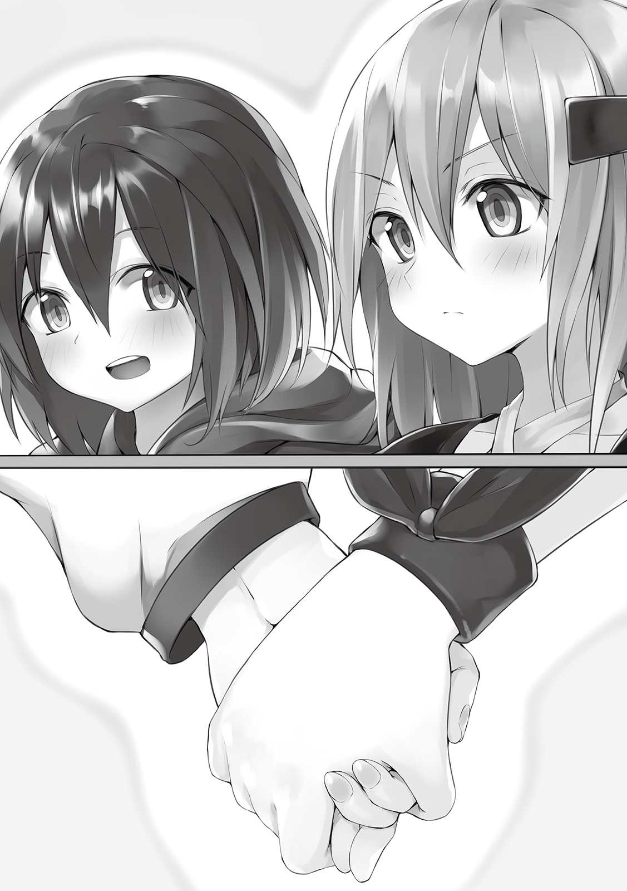
俺達は手を握りあって光の中に入った。同時にメッセージが表示される。
【ヘルの森の『怒り』のダンジョンをクリアしました。】
【称号、『「怒り」のダンジョン攻略者』『ドラゴンスレイヤー』『ＳＳランク討伐者』『亜種キラー』を入手しました。】
【印、『金の薔薇の女王の森』を入手しました。】
【ダンジョンクリア報酬としてＳＴＰとＳＫＰをそれぞれ３０００ずつ入手しました。】
【ダンジョンを脱出します。よろしいですか？ 全員脱出するとダンジョンは消滅します。】
脱出したいと頭に思い浮かべると、一瞬で洞窟の中の薔薇園から暗い森の中にできた大きなクレーターができてる広場へと移動した。美花がそのクレーターをのぞきこむ。
「すごい、ほんとになくなるんだ」
「薔薇綺麗だったのにもったいないよね」
「すごくね......写真撮りたかったな。ところで、これから帰るんでしょ？」
「うん、帰ったらステータスの整理をしようね」
俺と美花は来た時と同じようにホウキに乗って城下町へと戻った。
「ただいまです！」
「アリムちゃんとミカちゃん！ おかえりなさい」
宿屋『光』に帰ってきた。ウルトさんが受付から迎えてくれる。
「頼まれた通り二週間、部屋はそのままだよ」
「ありがとうございます！」
なにせ城下町からダンジョンに行くのがめんどくさかったからね、二日目の時点で一旦戻ってきてお金だけ払ってウルトさんに部屋をキープするよう頼んであったんだ。俺と美花の二人暮らしだからそろそろ一軒家を探したいところだけど、それまではこの宿でお世話になりたいし。
「それで二週間もどこいってたの？ 旅行だよね？」
「いえ、ちょっと依頼を受けてる最中にダンジョン見つけたので。攻略してました！」
「なるほどね。俺も数年前はよくダンジョンに行ってたな。今は忙しくてできないけどね。冒険者として順調みたいで嬉しいよ」
「はい！ じゃあ帰ってきたばかりですが、ボクと美花はお部屋で休みますね」
「うん、ゆっくりお休み......ん？」
ウルトさんが俺達を見送ってくれようと手を振りはじめたその時、目を見開き今まで彼から聞いたことない驚いたような声をあげた。さらに首を振りながら目をこすっている。
「ん......んー？ 見間違いかな？」
「どうかしたんですか？」
「二人のステータスの桁がちょっとおかしかったような気がして......疲れてるのかな？」
「そうなんですか」
「うーん......昨日張り切りすぎたか？」
ステータスを見て五桁の数字が羅列してたから驚いたんだろう。人のステータスを見れるウルトさんだからこそだね。しかし見間違いだと思うレベルってことは俺達のステータスはＳＳＳランク以上の冒険者以上ってわけだ。アナズムにいるＳＳＳランカー達の平均ステータスがどんなものかは知らないけどね。
そして俺たちは部屋に入る。二週間前より変わってることは特にない。美花はソファに腰掛けた。
「さて、と。今からステータスの整理するんだっけ？」
「そうだよ！ ステータスポイントは全部使っちゃって、その上で俺と美花で最低一つはＳＳランクのスキルを作りたいな。それも細かい等級でも一番高いやつ！」
「たしかスキルのランクって正確には二十一まであるんだっけ」
「そうそう！ だから頭スッキリさせてから考えようね」
サッパリした気分になったら頭がスッキリするような気がしたから、お風呂に入ってからステータスについて考え始めた。まずはステータスポイントの消費から。とりあえず今は全ステータスにポイントを１０００００ずつ割り振っている。スキルによるボーナスなどでそれぞれ多少ばらつきはあるけれど、『アイテムマスター』を最大にしたことで得た、５００の器用さですら今は微々たるものでしかなくステータスごとの偏りは実質ないのと同じになってる。決して低いわけじゃないのに......ま、仕方ないね！
そして百八十一回目の転生からレベル１になってダンジョン攻略してドラゴンを倒したことでおよそ３２０００００の経験値を得てレベルが１８０まで上がっており、その分も合わせて残り２７４９０００のスキルポイントがある。......というかあのドラゴン一匹で一回の転生に必要な経験値の四分の一以上を得られることになるんだけど、ＳＳランクの魔核三つでそのぐらいならＳＳＳランクの魔物とかどうなるんだろ。
とりあえずは約２７４００００のポイントを３５００００に分けて全ステータスに割り振った。これでそれぞれ４５００００割り振られてることになる。そして残り２９９０００のうち２０００００を半分に分けて器用さと素早さに当てた。あとはキリがよくなるまで残しておく。俺がどんな割り振りにしたか教えたら、美花も俺と全く同じにしてしまったようだ。
「えへへ、有夢と一緒にしておけば安定でしょ？ 私のステータスも把握しやすいだろうし」
「まあそうだね」
「ところでね、有夢。さっきステータスの新しい機能見つけたの」
「え、新しい機能？」
「うん、偶然見つけてね！」
その機能というのは、ＳＫＰやＳＴＰの残量表示のオンオフと、各ステータスにどれだけスキルポイントが振られているか、ボーナスポイントが付いてるか、レベルだけならどのくらいかを見ることができるというものらしい。
転生がレベルの横の『ＭＡＸ』という文字を調べてできるようになったみたいに、これはステータス全体を一つとして捉えて調べたらできるようになったみたいだ。どうせ使いきれないＳＫＰとか表示してても仕方ないもんね。ステータスに疎い俺らだからこそ新発見ってことになってるけど、多分アナズムの人たちにとっては常識なんだと思う。
「よくステータス全体そのものを調べようなんて思ったね」
「まあ、なんとなくよ。そもそもゲームだってよく調べるのが大事でしょ？ ストーリー進めるのに」
「お、俺はレベル上げ専門だから......」
だとしても転生の事といい気がつけるのはすごい。長年の付き合いだけど今でも驚かせられることが多々あるよ。
その件はとりあえず置いておいて、次はスキルを考えなくちゃ。やっぱりポイントが有り余ってる。なにも全部使わなきゃいけないわけじゃないけどさ。
現状、合成しても減らない（Ｘ）というマークがついたスキルの中で、進化含めて最大まで育ちきってるのは俺の雷術だけ。あとは全部二回目の進化で止まってる。美花に関してはスキルを全く触れていないに等しい。強いスキルを作るなら、とりあえず合成しても減らないスキルを育てることから始めなきゃね。最初から搭載されてるスキルは全部最終段階まで進めないと。
「そういえば有夢、雷術だっけ、そんな感じで合成や派生をして出来上がるのもあるのよね？」
「そうだよ。俺が覚えてる限りだと光属性や砂属性なんてのもあったかな」
「図書館にいってスキル合成のレシピ本みたいなの探した方がいいんじゃない？ たぶんあるでしょ」
「そうだね......じゃあちょっと行ってくるよ」
図書館まで移動する。中に入ってからさっそく司書さんにスキルに関する本がないかたずねたら、不思議そうな顔でそういうコーナーがちゃんと分類されていると教えてくれた。どうやらスキル合成のレシピがあるのはアナズムの人にとって当たり前みたいだ。そのコーナーに行ってみると五メートルはありそうな大きな両面の本棚二つ分にびっしりと本が詰まっていた。
その中からパラスナさんが監修したらしい基本属性スキルの色々が書かれた本を借りた。もう数冊選んでもいいけど、つい一つ一つじっくり読んだりして余計な時間がかかりそうだから、ひとまずこの一冊だけ。
宿に戻ってざっくりと借りた本を読んでみる。題名通り、合成に使用しても消えないマークのついたスキルがびっしりと載っていた。各々の取得方法もちゃんと記載されてるみたいだ、全部じゃなくて、世の中に広まってるものだけみたいだけど。
「すごくたくさんあるんだね......鉄術に木術なんてのも」
「みてみて、酒術なんてのもあったよ！ こんなのでもちゃんと最終段階まであるらしいね」
「そんなの誰が覚えるのよ......」
あまりにたくさんあるので、その中でもカッコ良さそうな『光術』と『闇術』を作ることにした。スキル欄がごっちゃごちゃになりそうなのでその他は保留する。
『光術』は火、水、風、土の術に加えて強化術っていう補助魔法を覚えられるスキルと癒術を合成したら出来上がり、『闇術』は同じ四属性と敵にかける補助魔法の弱化術、そして物を遠隔操作したりできるようになるらしい念術を合成すればいいらしい。
さっそくその二つのスキルを作ってから、ＳＫ１に分類され、合成マークがついてる全部のスキルを『○○術・極』となるまで育てた。土術からの派生する『岩術』や、弱化術の派生で状態異常をかけられる『状異常術』、癒術の派生で状態異常を解除できる『解異常術』などが出てきたけど特に必要性を感じなかったので習得しなかった。ただ一つ、念術から派生した幻を見せることができる『幻術』だけは俺のファンから身を隠すのに便利そうなので覚えることにした。その次にＳＫ２に分類されている、弓術や槍術などを合成抜きの最終段階である『○○の豪』まで上げた。特に派生はなかった。
これで俺の方は済んだ。今度は美花のスキルを一緒に整理しよう。......って思ったけどどうやら美花はスキルも俺と一緒でいいらしく、今行ったことはほとんど真似された。まあ、俺も把握しやすいからそれでいいんだけど。
「えへへ、有夢と一緒！ で、今度は最低一つ強いスキルを作るのよね？」
「そうだよ。でもどうすればできるんだろ......」
「私はどんなスキルでもいいし、テキトーに考えるよ。スキルカードのスキルを合成素材に使うかもしれないし、何枚か出しておいてくれない？」
「わかったよ。......んー、とりあえずＡランクのスキルを合わせてＳランクのスキル作って、そのＳランクのスキルを合わせてＳＳランクのスキルを作って......ってやっていけばいいかなぁ」
「『アイテムマスター』ってスキルの部類で二の方だから、確か何回も合成に使えるんだよね？」
「うん、使えるよ！ ああ、じゃあ一回何か合成するたびアイテムマスターを絶対入れるようにするよ」
「それがいいと思う！」
ってなわけで俺と美花で別々にスキルを作り始めた。こればっかりは真似できないからね、仕方ない。
結局、俺らのスキル作成は納得できるのを一つ作るのに数時間にも及んだ。
▼△▼△▼
「......すごいのできた」
「私もいい感じのができたよ！」
「俺は度肝を抜かせる自信あるからさ、美花のから見せてよ」
「ほほう......いいよ！」
美花は作り上げたスキルの効果を紙に書いて教えてくれた。
まずランクは当然ＳＳランク。階級も二十一番。名前は『大天使の審判』。このスキル一つに要求されたポイントは９０００。
......名前がやけにかっこいい。基本的には攻撃するタイプのスキルであり、弓を使用して発動するらしい。というか、魔力で作る矢をこのスキルに置き換えて使うのだとか。
このスキルを使用して放った弓は狙った的に当たるまで全てを貫通し、当たった先で爆発を起こす。威力も範囲も調節可能。そしてこのスキルの目玉は美花が敵だと認識している相手にのみダメージを与え、無関係なモノには無害、味方は回復するという効果があること。集団戦に滅法強そう。
俺が何枚か用意したスキルカードの中から最初に得たのが『天使の弓』というＳランクのスキルだそうで、それを中心に光術やら癒術やらで作ったスキルを掛け合わせていったらこうなったらしい。
「ほぼ偶然できたみたいなものだけど、どう？」
「いいと思うよ。十分強力だよね」
「......むっ、あっさりとした反応。そんなに有夢のがすごいの？」
「正直シャレにならないよ。美花の提案があったからこそ完成したのかもしれないけど」
「そうなんだ、じゃあそろそろ教えて？」
「うん」
俺も紙に自分の新しいスキルの説明を書き出す。
このスキルのランクはＳＳ、階級は二十一番でポイントは１５０００。名前は『ダークマタークリエイト』。
美花の提案通りいちいちアイテムマスターを加え、もう不要になった『水剣召喚術』や関連しそうな『巨木龍召喚術』、そのほか今あるスキルをたっくさん組み合わせたら、まずＳＳランクのスキル、『神・魔剣創造召喚法』という剣をＭＰの許す限り無限に作り出して自由に操ることができるスキルが完成した。
この剣を作り出すスキル、魔力の消費量、魔法力の強さだけでなく自分のアイテム作成の技術力が剣一本一本に反映するらしく、どうやら俺の場合だと伝説級の剣を無数に生み出して攻撃するということができるようだった。
これを作った時点でＳＳランクの二十一番という目的は果たしていたんだけど、同じようなものを槍と弓でも作れるんじゃないかと思って召喚術系のスキルを量産し、同じ手順で合成し続けたら、槍バージョンや弓バージョンのものができてしまった。
そうしてＳＳランクの最大階級のスキル、しかも同じ系統のものが三つできてしまったから、せっかくだし全部合成してみてしまうことにしたんだ。その合成の際に自分の持ってるスキルも全部混ぜてみたらダークマタークリエイトが完成したというわけだ。
肝心の効果は、ＭＰを消費して初期魔法のボールや泡術のシャボンによく似た黒い謎の玉を作り出すことができる。そしてこの黒い玉にさらにＭＰを加えることで好きなものに形を変えさせることができ、自由に扱える。
例えば俺がリンゴを食べたいと思ったとする。ダークマタークリエイトを発動させ、リンゴをイメージすれば黒い玉はリンゴになってしまう。これは俺がその欲しいものの仕組みを理解できていなくても大丈夫らしい。それどころか欲しい機能さえわかっているなら、名前などがわからなくても該当するアイテムになるそうだ。そして俺がこのスキルで作れるアイテムは伝説級までとなっている。
やっぱり美花も驚いたようだ。口をポカンと開けてだらしない顔をしてる。それもまた可愛いんだけど、とりあえず気持ちはわかるよ。
「えーっと......その......つまり、有夢がゲームしたいって考えながらそのスキルを発動したらゲームが出てくるってこと？」
「その場合は漠然としか考えてないからなんのゲームが出てくるかはわかんないけどね。そうなるよ。説明を見た限りだと生きていなければ何でも作れるみたい」
「......やりたい放題じゃないのそれ」
そうだ、やりたい放題だ。もうお金もいらないしわざわざエンチャントカードをちまちま書く必要もない。そもそもお宝狙いでダンジョンに行く必要すらない。なにせ伝説級のアイテムがＭＰ以外ノーコストであっという間に出せてしまうのだから。アムリタポーションは流石に作れないけど、その下のレジェンドポーションなら作り放題。
仕組みがわからないものだったり、求めてる内容だけでアイテムを作れるのは俺自身の記憶とアイテムマスターに内蔵されてる知識によるものなんだろうけど......とんでもないよね。
「これから先の長い人生、どうするの？」
「どうするたって、他の人に迷惑かけないようにこのスキルで楽しめばいいんじゃないかな？」
「.........有夢の言った通り、度肝を抜かれたわ」
「えっへん！」
さて、と。これでステータスの管理は終わりかな。もはや俺に関してはこのまま一生スキルをいじらなくていい気がするよ。
「有夢、とりあえず何か作ってみてよ」
美花が気持ちを落ち着かせてかそう言ってきた。俺もまだ全然試してないから、さっそく何か作っていこうと思う。どうせならアナズムには無いものや珍しいものがいいよね。......となるとあれしかない。
「......わかった、じゃあ俺が渇望してやまないものを作ろうね」
「ま、まさかゲーム？」
「ううん、これだよ」
ダークマタークリエイトで作り出した最初のもの。それは梅干しのおにぎり。アナズムに来てしばらくしてから、ずっとお米を食べたかったんだ。なにせ洋食しかないからね！ 和食を作るにも天ぷらしかできないもん!!
「ああ......そうだよね！ わかる、すごくわかる！」
「今夜はサンマの塩焼きと、ほうれん草のおひたし、卵焼きに豆腐のお味噌汁、たくあん、そして真っ白のご飯を食べようね。ドリンクは緑茶だよ」
「うんっ......うんっ......！」
今日はこのあとＳランク以上専用のギルドに行ってＳＳランクに昇格してもらうつもりだったのに、俺と美花はそのことをすっかり忘れてもう二度と食べられないと思っていたお菓子やジュースをたらふく飲み食いした。
ポテチにコーラにチョコレート......アナズムではどうかわからないけど、地球では俺と美花は二人とも家族揃って太れない体質だから暴飲暴食しても大丈夫だよ。......多分。
▼△▼△▼
「というわけでダンジョンをクリアしたので、ＳＳランクの魔核を提出しますね！」
「は、はい、ただいま昇格申請します！」
翌日、俺と美花はギルドへと来ていた。美花がＳランクの方のギルドに来るのは初めてだ。俺と同じくらい可愛がられて、キャーキャー言われてる。ま、美花だから当然だね。カードの更新を待っている最中、そんな美花が息を切らしながら俺のところに逃げてきた。
「有夢、なんかあの魅了するらしい称号が進化したんだけど......」
「たくさん人に注目されたってことだよ」
「私も変装しなきゃダメになるのかな？」
「たぶん、近いうちにね」
しばらくしてＳＳランクへとグレードアップされたカードが受付のお姉さんから手渡された。Ｓランクのより装飾が豪華なゴールドカード。これで俺も晴れてＳＳランクだね。......もう働く必要ないけどさ。周りの冒険者さんたちはみんな驚いたり騒いだりしてるよ。いつもこんな感じだからそろそろ慣れてほしいね。
ギルドのお姉さんからこのまま仕事行くかどうか聞かれたけど、帰って美花と今後のことをゆっくり話したいからやめておいた。ダークマタークリエイトに興奮しすぎてデートをいつにするだとか、いつ一軒家を持つかとかの相談が昨日はできなかったから。
寄り道を一切せずにお部屋に戻り、醤油せんべいの袋を作り出してザルにあけた。醤油の香ばしい匂いが鼻をくすぐる。
「じゃあこれからどう過ごすか決めようか」
「そうね。まずデートはいつにする？」
「ロマンチックなシチュエーションを用意しなきゃだからね、明日はカルアちゃんが戻ってくるから遊ぶことになるだろうし、お泊まりもするって考えたら......来週の今頃はどうかな？」
「あの時はロマンチックなのを交換条件にしたけど、デートする日が長引くなら拘らなくていいんだよ？」
「いーや、初デートだから頑張るの！ 幼馴染同士二人で遊ぶのとはもう違うんだ！」
俺と美花の関係は結婚を前提でお付き合いしてるカップル。だから大人っぽくていい雰囲気のデートをしなきゃいけないって思ってる。ただ二人で歩いてお店入ったりするだけだと今までとなにも変わらないからね。
「そうなの？......じゃあ期待してるけど。とりあえず来週ってことでいいのね？」
「うん、なにも急用が入らなかったらね」
「わかった」
美花はすごく嬉しそうに微笑んだ。天使みたいな笑顔だ。......デートは幼馴染上がりのカップルから成長するチャンス。まだちょっと親友止まりだった頃の感覚が残ってる気がするから、それをなんとかしなきゃ。
「それであとは......家だっけ」
「宿に居座るわけにもいかないからね。何人か実力のある商人さんとメッセージでやりとりできる状態にあるから、近いうちに連絡してみるよ。不動産を扱ってるかは微妙だけど、もし扱ってなかったとしてもいいお店を紹介してくれるかもしれない」
「私と有夢の二人暮らしだよね？ えへへ......なんだかもう結婚しちゃったみたい。で、有夢はどんな場所に家が欲しいの？」
「この街の中央かな。なんならお城の付近とか」
この街の真ん中なら便利だし、お城から近いからいつ国王様に呼ばれたり、カルアちゃんと遊ぶことになっても大丈夫。Ｓランクのギルドからも近くなるしね。
ちなみにこの宿屋『光』もものすごく立地条件が良くて、俺がよく行く場所がそこそこ近い。そのためか宿泊客も多い。やっぱりいつまでも居るわけにはいかないよ。
「いいと思う！ 毎日朝起きてお城を見られるなんてなかなか幻想的じゃない？」
「じゃあそうしよっか」
お城の近くに住んで、時々カルアちゃんと遊びながら、基本的には美花とのんびりした結婚生活を送る。なんて素敵なんだろう。......アナズムは娯楽が少ないけど、俺のダークマタークリエイトならそれも解消できるしね。
おせんべいがなくなってしまったので継ぎ足そうとしたところ、この部屋の扉がノックされた。
「アリムちゃん、いる？ 少し用があるんだけど」
「あ、ウルトさん！ 美花、ちょっと行ってくるね」
「うん」
ウルトさんから俺への用事か。もしかしたらまたギルマーズさんが俺に武器の製作を頼みに来たから、そのことについて知らせに来てくれたのかもしれない。俺は扉を開けた。今日もウルトさんは爽やかなイケメンだ。
「急に呼び出してごめんね、アリムちゃん。あとＳＳランク昇格おめでとう！」
「あの、ついさっきのことなんですけど......」
「ＳＳＳランカーはそういう連絡がすぐ入ってくるんだよ」
「そういえばそうでしたね」
「正直、想定より何倍も早かったよ。すごいね！」
ウルトさんは俺のことをじーっと見ている。いや、見ているのは俺じゃなくてステータスか。今の所人のステータス見れるのってこの人しか知らないな。
「......それで、やっぱりそのステータスは見間違いじゃないんだね」
「はい、その通りです」
「どうしてそんなおかしなことになってるかわからないけど、その様子だと一ヶ月もかからずにＳＳＳランクになっちゃいそうだ」
「そうかもしれません」
やっぱり俺のこのステータスはＳＳＳランクより上か。ってことはもう俺はウルトさんやギルマーズさんより強いのだろうか。......いや、『マスター』って名前のついたスキルを待ってる時点でそう単純に考えられないね。
「おっといけない。本題に入らなきゃ。実はね、これからパラスナが来るかもしれないんだ」
「パラスナさんが、ですか？」
「うん。アリムちゃん達が二週間宿を離れてる間に、どうやら良い杖の素材になりそうなものを手に入れたみたいでね、それで伝説級の杖を作って欲しいみたい」
「ははぁ、なるほど」
前にパラスナさんは俺に今度頼むかもしれないって言ってたけど、今日がその時ってわけか。ちょうど美花とのお話も区切りがいいところだったし、引き受けても良いかもしれない。
「わかりました！ 引き受けます！」
「そう言ってくれるとパラスナも喜ぶよ。ずっとアリムちゃんが帰ってくるのを待ってたんだ。さっきＳＳランクになったって連絡が入ったことで城下町にいるってわかったみたいだよ」
「そうなんですか」
「じゃあパラスナの件、よろしく頼むね」
そう言ってウルトさんは自分の仕事へ戻って行った。美花が不思議そうな顔でこちらにやってくる。
「パラスナってたしか聞いた話だと、アナズム全体でも指折りの実力者だって人よね？」
「聞いてたんだね。そだよ。これから来るみたい」
「有夢って武器作成の依頼も個人で受け付けてたんだ」
「まあアイテムマスターだからね！ あ、流石に依頼されたものはダークマタークリエイトを基本的に使わないほうがいいよね？」
「そうね、それが良いと思う」
「あとたぶん伝説級で止めておいたほうがいいよね？」
「アムリタポーションって一般に流通してるの？ してないならやめたほうがいい」
「だよね」
つまり自分の手で丹精込めて作って、でも本気を出さずに神具級にならないようにする......か。そうだ、あとで俺たちの武器はオリハルコンにして神具級まで上げておかなきゃ。神具級は個人使用なら騒ぎにならないはず。
色々アイテム作成における今後の方針を決めてる間に、パラスナさん本人からメッセージが届いた。
【アリムちゃん、ウルトから聞いたわ。 引き受けてくれてありがとね！】
【はい！ それでいつ頃こちらに？】
【え？ いや、もう......うちに......あ、そうだった。とりあえずすぐ行くわ！】
【......？ わかりました】
なんで時間を尋ねただけなのにここまで焦るんだろ。まあいいや。とりあえず来るまで早くても数分はあるだろうからもう少しお菓子食べよう。そう思ってリビングに戻ろうとしたら、また部屋の扉がノックされた。......ウルトさんと叩き方が違うからおそらくパラスナさんだ。ちょっと早すぎない？ ひとまず出よう。
うん、やっぱりパラスナさんだった。
「パラスナさんお早いですね！」
「そ、そうかな？ そうだよね......えっと、アリムちゃん久しぶり！ 相変わらずほっぺた柔らかそうね。えいっ」
「ほへっ」
「ほんと可愛いわ！......あ、もしかしてあの子！」
パラスナさんが目線を向けた先には美花が居た。どうやら気になって見に来たみたいだ。パラスナさんはアナズムの有名人だから見に来ちゃう気持ちもわかるよ。
「え、えっと......初めまして」
「初めまして、貴女が噂のミカちゃんね？ すごい、ウルトから聞いた通りミカちゃんもすごく可愛い！ どうやったら二人ともそんな可憐な顔になるの？」
「わかんにゃいでふ......」
まずほっぺたをツンツンするのはやめてもらって、次に玄関からお部屋のリビングに来てもらって、そしてソファに座ってもらって、お話を聞くことにした。
「それで、どんな素材でどんな杖を作って欲しいんですか？」
「私は全属性の魔法を自由自在に操れるから、単純に強力な杖が欲しいの。ＭＰの消費を大幅に抑えて、放つ魔法の威力を大きく増幅させるような。素材は今出すわね。ギルマーズさんみたいに一体丸ごとじゃないから安心して」
そう言ってパラスナさんは風呂敷みたいなのを広げ、その上になんかの骨と宝石みたいなのを置いた。
「まずこれが最近私が倒した魔力の量が尋常じゃない魔物、ＳＳランク、ウロボロスの骨よ！ 次にこの玉が最近競り落とすのに成功したカーバンクルっていう希少な魔物の宝玉！」
「なるほど、どちらも魔力や魔法に関連しそうな素材ですね」
「その通りよ。基本となる素材はそこらへんの木材でもミスリルとかでもいいから......とにかくお願い！ 報酬は出来次第払うから！」
「わかりました！」
じゃあベースはウッドゴーレム亜種とオリハルコンでいいかな。それにパラスナさんの渡してくれた素材をくっつけていく形でいこう。俺はマジックルームを取り出した。
「今から作るの？」
「はい、実はアイテムの作成スピードが格段に上がったんです。そんなに時間かからないので、ここで待っててくださいね」
「わかった、お願いね！」
美花とパラスナさんを二人きりにしたけど、特に問題ないだろう。俺はさっそく杖の作成を始めた。とは言ってもゾーンを使用したり、アイテムマスターとしての実力を行使した結果、ものの三十分くらいですぐに完成しちゃったんだけど。
パラスナさんが注文した効果のほかに、軽量化や品質永続、おまけで杖を握ってる間はＭＰ回復が早くなる効果もつけておいた。
よし、マジックルームを出て渡すとしよう。
「ミカちゃんはほっぺたがプニプニなんじゃなくて、髪の毛がサラサラなのね」
「そんなにサラサラですか？」
「うん、すごく綺麗で
なんかパラスナさんが美花の頭をナデナデしてるんだけど。まあ確かにサラサラで触ってて気持ちいからね、仕方ないか。
「パラスナさん、できましたよ！」
「あっ、アリムちゃん。もうできたの!? どれどれ......」
パラスナさんは俺の手から杖を取り、まじまじと眺め始める。多分鑑定してるんだと思う。ビジュアルもいい感じになったし、満足してもらえるはずだけど......。
「すごいわねこれ!! こんなの作れるんだ！」
「希望通りでしたか？」
「ううん、それ以上！ すごい......間違いなく私が持ってる杖の中で一番いい杖よ！ 他の伝説級の武器が霞んで見えるくらい！」
「そんなに喜んでもらえたならボクも嬉しいです」
「ずっと大事に使わせてもらうわ！」
感激しすぎて涙まで流しそうだ。紅い目がウルウルしてる。やっぱりダークマタークリエイトじゃなくてアイテムマスターでちゃんと作って正解だったな。気分がいいや。
「あ、でも、流石に今日いきなり貰えるって思ってなかったから、持ち合わせが......」
「ギルマーズさんみたいに後日渡してくれれば」
「そう？ じゃあそうさせてもらおうかな。今週末までには払うから待っててね。本当にありがとう、またね！」
そう言ってパラスナさんは軽くスキップしながらこの部屋から出て行った。部屋の扉がきちんと閉じられると、美花が俺の肩を叩いてきた。
「ね、ね、有夢」
「なぁに美花」
「ちょっと透明になれる靴貸してくれない？」
「いいけど、なんで？」
「実はあのパラスナさんでちょっと気になることがあったの」
「え、なにか怪しいことしてた？」
「ううん、違うの。ウルトさんからあの人が来るって教えられてからあまりにも早くきたからさ。もし瞬間移動できるようなスキルがあったら便利だなって思って。そんなスキルがあるかどうか帰るところ見て確認したいのよ。もしあったとしたら、便利でしょ？」
「なるほどね！」
パラスナさんが異常に早く来たことは俺も疑問に思ってるから美花に靴を貸してあげた。美花は少し急ぐようにして透明になってから部屋を出て行った。パラスナさんは慌ててたし、なにかワケありなのかもしれないけど......良かったのかな？
▼△▼△▼
......有夢には嘘をついちゃった。私、ウルトさんとパラスナさんを交互に見てちょっと勘が働いたというか、ピンと来たことがあるの。
私は透明状態を保ったまま普段あのウルトさんって人がいる受付の前までやってきた。奥からボソボソと誰かが喋ってる声がする。男の人と女の人......そう、パラスナさんとウルトさんだと思う。
私は息を殺して受付の裏に突入した。二人の声がはっきり聞こえるようになったあたりで立ち止まり、聞き耳をたてる。
「......俺がアリムちゃんに情報を伝えてから出て行くまでが早すぎるって言ったよね？」
「ごめんなさい......でもずっとあの娘に会って杖を作ってもらいたかったから」
「あの子だからまだいいけど、俺とパラスナが一緒に住んでるってバレたら大騒ぎになるんだぞ？ このことはギルマーズさんと国王様にしか話してないんだから」
「そうよね......」
やっぱりビンゴだった。なんとなくそんな気がしてたのよね。早く来た時から怪しく思ってて、有夢が作業してる最中も様子をずっと見てたけど......ふふふ、予想通りだったわ。どう見たってあの人達は付き合ってる！......知ったところでなにするって話でもないけど。
「でも嬉しいのは見ててわかるよ。あの子に頼んで正解だったんだね」
「うんっ！」
「じゃあもう一つ喜ぶこと言ってあげる。今夜は人参たっぷりのクリームシチューにしようと思うよ」
「ほんと!? 大好きウルト!! 」
パラスナさんがウルトさんに抱きついてどこかにキスをした......そんな音が聞こえる。これ以上はダメね。もう戻らなきゃ。
それはそうと私も早く有夢にキスしたいな。......今度のデートで頑張ろっと。最終的には唇にキスできるようにしたいところ。
▼△▼△▼
パラスナさんの件で美花は追いかけていったわけだけど戻ってきてから収穫がなかったと言っていた。もう居なかったんだって。勘が鋭い美花曰く案外近所に住んでるかもしれないそうなので、スキルなんかじゃなくてただ物理的に近かかったってのが俺の最有力候補になった。
それから俺はマジックルームをしまわずにその中で剣と弓をオリハルコンと合成したんだ。これでアナズムの強力な鉱石トップスリーを全て使用した豪華な武器になったわけだ。そのおかげか武器の単純な強さが上がり、もっと強いエンチャントをつけることもできるようになった。例えば蓄積してあるＭＰを自分のＭＰ回復に使えるようになったりね。いろんな効果が二倍くらいになってる。他にも剣なら、敵を斬ることでＭＰを五パーセント吸収できるっていう効果が一割吸収になってたりする。そんでもってそれぞれ伝説級から神具級に上がった。そのあとは特に何もなかったので夕飯にカツ丼を食べてから寝てしまった。
そして今、俺と美花は半泣きになりながら納豆ごはんを食べている。納豆ってこんなに美味しかったっけ。でもあとでちゃんと歯磨きしなきゃ。なんかずっと食べてばっかりな気がする。
「あ、あゆ......あゆむ......」
「どうしてそんな小声なの？」
「息が気になるから......」
「じゃあお話は後にしようね」
「うん」
朝ごはんを食べ終わって、しっかり歯磨きをしてから今日やることの相談をする。美味しかったけど納豆を食べるのはちょっと間をあけたほうがいいかもね。
「今日はカルアちゃんが戻ってくるのよね」
「うん！ いつ呼び出されてもいいように心の準備をしておこうね」
「私、ちょっとカルアちゃんのことで提案があるんだけど」
「なにかな？」
「カルアちゃんって、その、誘拐されかけたから避難したのよね？」
「そうだよ、前に話した通り。......まあ巡り巡ってそのおかげでラハンドさんに美花が救出されたわけでもあるけど」
「だからね」
美花の提案とは、カルアちゃんに何かプレゼントをしないかということだった。それもただのプレゼントじゃなくてカルアちゃんに危険が及んだら俺達や周りの人に知らせてくれるっていう機能が付いたもの。そしたらカルアちゃんに何かあってもすぐに対処することができるとのこと。
なるほど、かなりいいと思う。事情をしっかり説明すれば国王様達も納得してくれるはずだ。
「じゃあ早速作ってみるよ！ でもやっぱり見た目は可愛いものがいいよね？ なにがいいかな？」
「ペンダントでいいんじゃない？」
「それが手っ取り早いか」
そうと決まれば早めに作ってしまおう。まず簡単に壊されたりしないように鎖もペンダント部分もアルティメタルを基本にして、頑丈になるエンチャントもつける。ペンダントの形はカルアちゃんに似合うようデザインをちゃんと考えて......。そしてカルアちゃんが危ない目に遭った時、登録した人にメッセージを送る機能をつける。
危ないと状況判断する機能の付与とアイテムとメッセージを連動させる方法がわからなかったので、その二つの効果をつけるのはダークマタークリエイトに頼った。あとは攻撃された場合、その直前に自動でバリアを張るようにする。物理も魔法も防御できるものね。これらの効果はカルアちゃんが身につけてなくても一定の範囲内に置いてあれば効果を発揮する。これで万が一のことがあっても安全だと思うよ。デザインの確認などをしてもらうため提案者の美花に見せてみた。
「へー、かわいい！ いいんじゃない？」
「これならカルアちゃんにもし何かあっても大丈夫！」
「......ちなみにこれ、等級は？」
「伝説級だよ」
「まあ、仕方ないか。国王様とカルアちゃん、遠慮したりしないかな」
そもそも国王様達って俺のアイテムマスターについて知ってたっけ。物作りがうまいことはルインさんから伝わってると思うけど、伝説級以上が作れるということはもしかしたら今回で初めて知られることになるかも。ん......頼られることが増えそうだな。別に頼られるのは悪くないけどさ。あの国王様に限ってないと思うけど、もし軍事利用とかされそうになったら姿くらまして逃げればいいだけだしね。
それからお昼ご飯のたこ焼きを食べ終わって一時間が過ぎた頃、国王様から連絡が入ってきた。
【アリムとミカよ、カルアが帰ってきた。よければ城に遊びにきてくれないか？】
【ちょうどそのつもりだったんです！ お言葉に甘えますね！】
【そう言ってくれると嬉しい】
【ところでカルアちゃんと遊ぶ前に国王様にいくつか言わなければいけないことが......】
【む、なんだ？ とりあえずこちらにくればわかるか】
【はい。それじゃあ今からお伺いしますね】
支度は既に済んでるので、俺と美花は城に向かった。城の中に通してもらったらそのまま玉座の間へと直行する。二週間ぶりの国王様だ。
「よくきてくれた。それで話とはなんだ？ 二週間の間に異例の速さでＳＳランクに上がったことか？」
「それもあるんですけど、その前に一つ提案が」
「提案......？」
俺はカルアちゃんに防護機能付きペンダントをプレゼントしたいと言った。実物を取り出して機能も説明する。
「なるほどな......たしかにアイテムマスターであるアリムが作ったものだ、この城内のそういったものより強力なのだろう」
「あれ、ボクのスキル知ってたんですか!? 」
「この間、私の友人としてギルマーズが城に来た時、ある剣を私に自慢してきてな？」
「なるほど......」
バッカスさんといい、ギルマーズさんって俺のスキルをいろんな人に言いふらしてないか？ 便利なのはわかるし、別に口止めもしてないからいいんだけどさ。ともかく知ってたなら話が早い。
「少しここから鑑定させてもらったが、ペンダントも伝説級だな」
「その通りです！」
「そこまで娘を想ってくれるのは嬉しいが、さすがにそれは......。ちゃんと代金を払おう」
「これはプレゼントですよ、あくまでも」
「前々から思っていたが、アリムには欲がないのか？」
「いえ。あの、何か欲しいものがあってもだいたいアイテムマスターで解決できるので......」
「......ああ！ 全くもってその通りだな。だから要求するものも図書の自由閲覧の権利だったのか」
国王様はすっごく納得したような顔をしている。......と思ったらまた腕を組んで悩み始めた。どうやら今後何かあった時、どう借りを返せば適切かわからなくなったらしい。
「......今度アリムでも喜べるような礼をしっかりと考えておくことにしよう」
「そんな、いいのに」
「とりあえず今日はカルアと遊んでやってくれ。きっとペンダントも喜ぶはずだ」
「はい！」
というわけで俺と美花はカルアちゃんの部屋へ。二週間ぶりだ。ノックしてから部屋の戸を開けると、満面の笑みを浮かべたカルアちゃんが俺と美花に向かって抱きついてきた。
「お二人とも！ ああ！ 何ヶ月も会えなかったようです！」
「カルアちゃん、二週間ぶり！」
「元気だった？」
「はい、おかげさまで！」
この様子を見ると別の国で何か危ない目に遭ったりはしてないようだ。よかった。じゃあさっそくペンダントを渡そうね。
「実はカルアちゃんにプレゼントがあるんだ」
「......ほ、ほんとですか!? けれど私、誕生日はまだ先ですよ！」
「いや、今だからこそ渡さなきゃいけないんだよ」
「......どういうことですか？」
俺はペンダントを取り出しつつ、カルアちゃんにこれがどのような役割をしてくれるか全部教えた。驚いてたカルアちゃんもすんなり納得してくれた。なんか納得してる顔にさっきの国王様の面影があるな。親子だから当然か。
「わかりました。ありがたくいただきます。それにしても可愛らしいですね、これ！」
「身に危険が及ばなかったらただのペンダントだからね」
「そうですね！ では私の宝物にします！」
満面の笑みだ。やっぱり喜ばれると嬉しいな。アイテムを作って色んな人に喜んでもらえるから、アイテムマスターのスキルはやっぱり手に入れて良かったと思う。カルアちゃんはさっそくペンダントをつけてみたようだ。
「どうです？ 似合ってますか？」
「すごく似合ってるよ！」
「可愛いよ！」
「ありがとうございますっ......！」
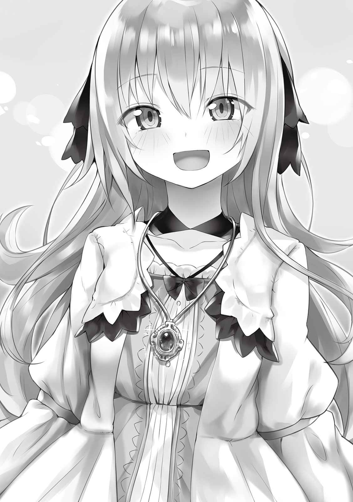
それから俺たちはたっぷり遊んだ。もちろんいつも通り泊まることになったが、その日一日中、カルアちゃんは俺の作ったペンダントをずっと離さずに持っていて、寝ている時だってつけていた。まあ、流石にその時は胸元にしまっていたけど。
そして次の日の夕方、正午からずっと三人で城内探索をしていたときのこと。このお城の納品口だという場所を歩いていたら、見覚えのある人と遭遇した。
「あれ、バッカスさん！」
「やあアリムちゃんじゃないか。それとお姫様、こんばんは」
「どうしてここに？」
「お酒を納品してるんだよ。お城には僕が直接出向いてるのさ。最も大切なお客様だといっても過言じゃないからね」
たしかにお城の納品用入り口からこのお城で働いてる人たちが酒樽を運んでる。国王様達って豪遊してるイメージはないけど、このお酒にはたっぷりお金を使ってそうだ。ルインさん達も飲むんだろうか。
「それでその、白ぶどうみたいな綺麗な髪をした子は、噂のミカって子かな？」
「そうですよ！」
「は、初めまして！」
「初めまして。僕はバッカス・デュオニソス。ワインを作ってるんだ。ところでアリムちゃん、あのポスター、明日から街中に貼られるよ」
「ついにですか」
「アリムちゃんはいろんなところで話題になってるから、きっと大きな反響を呼ぶと思うよ」
美花がメッセージでどういうことか尋ねてきたので、俺はバッカスさんに頼まれた仕事のことを話した。
【......地球じゃあんなにスカウト断ってたのに、こっちではそういうことするんだ】
【だってもう名前知れわたっちゃったし。それにこっちは女の子である俺を女の子として使うけど、向こうは男である俺を女の子として使おうとするでしょ？】
【まあね......】
【なにより、こっちの人たちはやましい目をあまり向けてこないよ！......そういう人がいないわけじゃないけど】
ともかく明日から俺の顔が広告としていたるところに貼られるんだ。改めてそう言われると恥ずかしいな。まあでもそれであのジュースが売れるならいいかな、みんなに飲んでみてほしいし。高価だけど。もしかしたらこのまま美花にもお話があるんじゃないかって思っていたら、案の定、バッカスさんがそんな感じの話を持ち出してきた。
「もし今回でぶどうジュースが売れたら、今度は白ぶどうジュースに取り掛かるつもりなんだ。その時はアリムちゃんとミカちゃん、一緒にモデルになってくれないかい？」
「ボクはいいですけど......」
「私も、アリムがいいなら......」
「じゃあ決まりだね」
そんな感じで雑談をしてる間にぶどう酒の搬入が終わったみたい。樽が運びきれてるかどうかチェックするからとバッカスさんはこの場を去っていった。
ちなみにバッカスさん、いつもはぶどう酒の納品をお昼までに済ませるのに、道中で交通トラブルがあってこんな夕方になってしまったから、このお城の駐車場を借りて馬車で寝泊まりするそうだ。幼馴染なんだからウルトさんのところに泊まればいいんじゃないかと思ったけどどうやら今日はあの宿屋、満室らしい。
バッカスさんがいなくなってからずっと、カルアちゃんがキラキラとした目で俺と美花を見ている。
「ど、どしたの？」
「いえ、すごいですよあの方の広告に出られるなんて！」
「そうなの？」
「はいっ。ミカちゃんにはあっさり頼んでいたようでしたが、結構基準が厳しいようなので。でもお二人ならその基準もクリアしているのでしょうね」
カルアちゃんのお母さん、つまりお妃様が生きていた頃は、その人がぶどう酒の広告を飾っていたらしい。他にも服やアクセサリーの広告にも出たりして。それほど相当な美人だったみたい。それと同時にかなり活発だったんだね。まさか頼まれたからってお妃様が宣伝するなんて。カルアちゃんのたまに見る活発さは国王様譲りだと思ってたけど、どうやら両親どちらもからのようだ。
「おそらく城内にも貼られるので、これから毎日アリムちゃんと遊んでなくても顔が見れますね！」
「なんか恥ずかしいな......」
「まあ、顔を出したのはアリムだから仕方ないわよね」
「ぷぇ......」
それから俺たちは夕飯時まで一緒に遊んだ。そして帰り際、カルアちゃんは俺と美花にまた抱きついてくる。
「アリムちゃん、ミカちゃん、また遊びに来てくださいね！」
「うん、じゃあ来週末か再来週の頭あたりに来るよ」
「ごめんね、その間は予定があるの」
「いえ、来てくれるならいつでもいいんです！......このペンダント、本当にありがとうございました！」
「どういたしまして！」
「じゃあまたね！」
カルアちゃんの抱擁から解かれた俺たちはそのまま宿へと戻った。次来た時はリロさんとミュリさんに美花を会わせようかな。きっと俺が会った時みたいにモミクチャにされちゃうんだろうけど。
▼△▼△▼
二週間ぶりにアリムとミカとたっぷり遊び、可愛いプレゼントももらったカルア姫は、その夜、全く寝付けないでいた。しかし悪い心地は全くしていなかった。
「ふふっ、再来週が楽しみですっ」
カルア姫は自分の首から下がっているペンダントの先を軽く握った。まだ渡されて二日目ではあったが、彼女にとって大切な宝物となっている。
彼女はずっとどこか物足りない生活を送っていた。母親はいなかったが、優しい父に優しい兄二人、そして血は繋がっていないが自分のもう一人の兄のような存在のオルゴや、もはや本物の姉のようなリロとミュリ。十分に愛されていた。しかし、同じ目線で話し合える心からの友達がいなかったのだ。
たしかにいままで他国の姫や貴族に友人として、表面上では付き合っている者はいた。しかしそれでも五つ以上歳が離れている上様々なしがらみがあるため心から親しくすることはお互いにできなかった。姫同士らしい付き合いが、カルア姫は嫌だった。
そこに現れたのがアリムだった。ほぼ同い年の美しい少女。貴族などの地位はない。しかし城内に入ることが許されるだけのことをしてきている。なにより政治的な地位がないからこそ本音で話せるのだ。一緒に隣同士でご飯を食べ、一緒の部屋で遊び、一緒にお風呂に入り、一緒のベッドで眠れる。家族やリロ達以外で自分のくつろいだ姿を見せられる。そんな友達。
自身を誘拐魔とサンダーバードから命懸けで守ってもらったこともあり、カルア姫にとってアリムはすぐに一番大切な友人となった。アリムと会うたびにどんどんと好きになっていく。もしアリムが異性であったならその好きの意味も違っていただろうとカルア姫は考えている。
そんなアリムがミカを連れてきた。カルア姫は嫉妬しそうになった。アリムは記憶をなくしていたはずなのに、寝言で彼女のことを呟いたかと思えば実際に連れてきて、お互いの記憶だけは残っていたという。故に友達や親友以上の何かをカルア姫は二人から感じ取っていた。しかしそのミカもカルア姫の友達になった。二人の基本的な性格や喋り方がよく似ていたのもあってか、抱いていた嫉妬心がすぐに消えた。今ではミカもカルア姫の大事な大事な友達の一人になっている。
カルア姫はまだ出会って一ヶ月にも満たない大切な友人二人のことを思い返し、再び一人で微笑んだ。次はどうやって遊ぼうか、それを考えるだけで心が躍る。
そんな時、彼女の部屋をノックする音が聞こえた。
「は、はい！ すいません！......あれ？」
カルア姫は自分が就寝時間を過ぎても寝ていないことがばれて注意されるのかと思ったが、今は部屋の明かりは消してしまっていたことに気がついた。すなわち、この部屋の外にいる人間からはすでに寝ているとしか思われていないはずであり、この時間帯は城内にいる誰も自分の部屋を訪ねてこない。
再びノックの音が聞こえた。よく聞くとそれは部屋の扉が叩かれているのではなく窓が叩かれている音だった。
カルア姫はこの部屋の窓を見る。レースのカーテンには月明かりで照らされた人影が写っていた。しかしここは大きな城の二階であり人間の影が映るはずがない。
また誰かが自分を誘拐しに来た、とカルア姫は考えた。だがすぐにその考えを改める。カーテンの隙間からチラリと見えるその人物の特徴は赤い宝石のような綺麗な髪に、黄色い目、美しすぎる顔立ち。カルア姫はそれが自分の友人だと判断した。
こんな時間にどうしたのだろうと、カルア姫はベッドから出てカーテンを開けた。月明かりに照らされたアリムが窓の前に立っていた。
「アリムちゃん！ どうされたのですか？」
カルア姫は窓を挟んで向こう側にも聞こえるような声で言う。そのアリムはにっこりといつもよりぎこちなく微笑んでから、可愛らしい声で返事をした。
「カルア姫、ごめんなさい。少し忘れ物をしちゃって」
その言葉を聞いた瞬間、カルア姫は窓から後退りをするように距離をとった。こんなおかしな時間に来た、本来なら常識人であるアリムが、自分の名前に姫つけるといういつもと違う呼び方をしている。もともと少し怪しい気がしていたので窓を開けずにカルア姫は声をかけたが、その怪しさが確信に変わった。
「そ、そうでしたか。あー、それなら明日、どなたかに頼んで住んでいる場所まで届けさせますよ。なにを忘れたのですか？」
「ちょっと口で説明するんじゃわかりにくい物だから、私を中に入れてほしいな」
「......私、ですか」
カルア姫はアリムの少したどたどしく喋る『ボク』という一人称に可愛さを感じており好んでいた。
中に入れてくれと要求しだした偽物が立っている窓から少しずつ後退りをする。メッセージを開き、この城内で一番の強者である自分の父に連絡を取ろうとした。
「カルア姫？」
「あ、いえ......その、もう寝るところだったので明日にしていただけると......すっごく眠いんです......」
「ちょっと物を取るだけ......ぐわっ」
「なんですか!? 」
連絡を取る直前に偽物のアリムが何者かに頭を
「今晩わぁ、夜分遅くに申し訳ありませんカルア姫様ァ」
「ど、どなたですか......あなたは......」
「俺の名は......いや、そんなのどうだっていいでしょう？ 一緒に夜のお散歩に出かけませんか」
そう言って男はカルア姫に向かって手を差し伸べてきた。その手は壁を貫通し部屋の中まで入ってくる。本来ならば窓がカルア姫の意図なしで無理やり開けられるようなことがあった場合、警報が鳴り、城の兵士がすぐに駆けつけてくるようになっている。しかしこの男には無意味であった。
白い
「この煙......あ、あなたまさか......」
「おーっと、俺の技に見覚えがありましたか、そうですか！ となると信用させて連れて行くというのは無理そうですねぇ」
「いや、こんなあからさまに怪しく侵入されて信用しろってのが無理だと思うんですけど......」
「あなたは黙っていてください。アリム・ナリウェイの姿だけで騙されなかった時点で失敗なのですから。念のために情報も用意したのに。どうして一人称を間違えてしまうのでしょうね」
「ごめんなさーい」
さきほど投げ飛ばされた偽物のアリムが危険な男の横まで戻ってきていた。基本的な姿はそのままであったが、頭に黒いツノと尻尾を生やしている。また、なんの媒体もなしに宙に浮いていた。その姿は、メフィラド王家に代々伝わるある存在の特徴を全て備えていた。
「悪魔、なぜ悪魔が!? 」
「なぜ悪魔が存在しているか、そんなことは今どうでもいいでしょう。大事なのはこれから。......はぁあ、本当はこんな手荒な真似したくなかったんですがねぇ？ 寝てる間にひょいって
「......っ！」
カルア姫は一気に部屋の入り口まで駆け出し、ドアノブをひねった。しかし扉は開かない。不思議な何かに内側から鍵をかけられてしまったかのように。よく見たら鍵をかけるためのツマミに靄が続々と流れ込んでいた。
焦るように男のいる方を振り向くと、部屋全体がすでに真っ白に覆われており、視界が奪われる寸前であることがわかった。その上、だんだんと意識が遠のいて行く。
「メッセージでどなたか強者を呼ぼうとしていたようなので、荒手ではありますが眠らせていただきますね」
「この煙を器官に詰めて無理やり気絶させるの、本当えぐいっすよ」
「まあ体に傷はつきませんから、セーフでしょう」
カルア姫の意識はすでに朦朧としていた。白さで視界も奪われ、もうなにがなんだかわからない。
完全に意識を失う前、最後にカルア姫の耳元で背筋の凍るような声が囁く。
「じゃあ、いきましょーか？ お ひ め さ ま」
─────
───
──
「カルア姫様、何事ですか!? 」
アリムのアイテムによってメッセージが送られる対象の一人となっていた騎士団長が、そのアイテムからメッセージが届いたので一番に駆けつけた。部屋の扉を激しくノックするも返事がない。
遅れて大臣と国王、そして多くの兵士が駆けつけてくる。
「カルア、おい、カルア！ そこにいるのか！」
「カルア姫様！......鍵は普段通りかかっているようですな」
「返事がないとなると眠っているのだろうが......伝説級のアイテムが誤作動を起こすなど考えにくい。中に入るぞ。いいなカルア！」
国王は持っていた城内のマスターキーで部屋の鍵を開け、先頭に立って中に入った。そこは静寂な暗い部屋。カーテンがしっかり締められており窓が開いてるなんてことない。
そしてベッドの中にはしっかり安らかな寝顔をしたカルア姫が横たわっていた。
「カルア......！」
「ん......んぁ......な、なんですか？ ふぁぁ......」
「カルア、良かった......」
「どうされたのですが、みなさん。こんな時間に......」
国王による大声で目覚めたカルア姫は眠たそうに目をこする。国王はホッとため息をついたが、あることに気がついた。首元に鎖がかかっていないのだ。
「カルア、ペンダントはどうした？」
「......ペンダント？」
「今日もつけたまま寝ると言っていただろう？ 鎖を首から下げて、ペンダント先は寝間着の中に入れていたではないか」
「あ、ああペンダントですね！ やっぱり寝づらかったので外しましたよ」
「......ふむ、だがあれは我が妻の形見だからお前が少しでも手放すはずはない......」
「こ、国王様？」
国王はあからさまな嘘をついた。カルア姫だったら即座に否定するわかりやすい嘘を。しかしベッドの上に横たわっているカルア姫は、ぎこちなく笑いながら言い訳をしだした。
「今日はね！ そういう気分だったのです！ どうしても合わなくて。私は育ち盛りですから、もしかしたらペンダントをしたまま眠るというのが体に合わなくなってきて......」
「......もういい、ここまでだ。奴を捕らえろ」
「ハッ!! 」
兵士達はカルア姫を所持していた携帯用の拘束具で捕らえた。身動きが取れなくなったカルア姫の偽物の前に、怒りの形相を浮かべながら立った。
「私の愛娘をどこにやった？」
「あ、あの......」
「どこにやったと聞いているんだッ!! 答えろッ!! 」
【ペンダントの所有者の身に異変が起こりました。】
眠っている最中、そのメッセージが来たことで俺と美花は跳ね起きた。まさか渡してすぐに警報が来るなんて。......カルアちゃんの二週間の避難は全く意味がなかったのだろうか。
とりあえずこうしてはいられない。寝間着から着替える暇だって惜しい。
「美花、このまま行くよ。いい？」
「決まってるじゃない！」
部屋と宿の出入り口からちゃんと出るということすら時間がかかるように思える。俺は窓を開けて美花を抱きかかえ、そこから飛び降りた。道に着地してからポーチから靴を出して履き、透明になりつつそのままの体制で城へと急ぐ。
城の前に到着してから、国王様と騎士団長さんと大臣さんに俺を城内に入れてくれるように頼む。この三人はペンダントのメッセージ送り先に登録していた人たちだ。
やはりお城の中は慌ただしい。窓からでもたくさんの人が右往左往してるのが見える。
「お二人とも来てくださったのですな!! 」
「はい！ それでカルアちゃんは？」
「......すでに部屋にはおらず。今、国王様がカルア姫様に化けた偽物と対峙しています」
「偽物ですって!? 」
城内に入れてもらい靴を履かせてから美花を置き、大臣さんと三人でその偽物がいるという部屋へ急いだ。二階には遠目からメイドさんや執事さんたち、他にもリロさんとミュリさんなどが様子を見守っており、カルアちゃんの部屋の周りではたくさんの武装した兵士達が連なっていた。
「アリム殿とミカ殿が来てくださいましたぞ!! 」
「おおそうか！ ありがたい！ 部屋に入ってくれ！」
騎士団長さんがそう言うと兵士さん達は道を開けてくれる。オルゴさんもその中に混じっていた。部屋の中に入ると腕と足を拘束された俺のペンダントをつけていないカルアちゃんに、地獄から来た鬼のような形相をしている国王様、同じく心底ブチ切れてるのが一目でわかるルインさんとティールさんが居た。
「ああ、アリムさん！ おかしいのです、みんなが......」
「ふざけたことを言うなッ!! 」
「これがカルアちゃんの偽物ですか、騎士団長さん」
「そうだ」
俺らをバカにしているにもほどがある。ペンダントがどこにも見当たらないし、俺の呼び方も違う。
「......カルアちゃんをどこにやったの？」
「わ、私がカルア......」
「カルアちゃんをどこにやったの？」
「......」
あくまでも答えたくないみたいだ。仕方ない。正体を暴いてやろう。ダークマタークリエイトは欲しいアイテムの詳細がわからなくても大丈夫。だからこんな時、変装する力を持ったヤツの変装を強制的に解くアイテムが欲しいなんて考えたら、その条件を満たすアイテムが出てきてくれる。
俺の手には一つの大きめな手鏡が握られていた。
「どこからそれを出したんだアリム......」
「説明は今度します。......ほら」
「かが......みっ!? あ......ちょ......やめ......やめぇ!! 」
一瞬で姿が変わった。それは小柄で、真っ黒で、頭から矢印みたいなツノが生えてて、
「なんでこんなアイテムが......や、やばい、正体がバレたっす......」
「あく......あくまだ。あくまだああああああああ!? 」
「うわぁああああ、悪魔だああああ！」
「嘘だろ！
いつもはちゃんと訓練したりお仕事したりしてる兵士さんたちが騒がしい。なんだか信じられないものでも見てるような驚き方だ。ルインさんやティールさんも怒りから驚愕の表情に変わってるし、一番怒りで噴火しそうだった国王様もひどく動揺していた。
一番近くにいる中でまだ冷静な方だった大臣さんに尋ねてみる。
「あの、あれってなんなんですか？」
「あれは悪魔です......。人間でも魔物でもない......魔神の一柱、サマイエイルが作り出す生物ですよ......」
魔神と悪魔......ああ、俺がガバイナさんと初めて一緒に仕事した時に読ませてもらった本に書かれてたあれか。って、伝説上の存在じゃなかったの!? ああ、そうかみんなこんな感覚なんだ。だから驚いてるんだ。美花が小声で話しかけてきた。
「えっと、有夢、私にもわかるように説明してくれる？」
「変装を暴いたらそれが宇宙人だった」
「ああ、なるほど」
そうだ、地球でいえばそのくらい突飛な存在。でも一目見てわかるほどアナズムの人たちに浸透している存在。それが今目の前にいる。......まてよ、悪魔を生み出せるのは魔神だけで、つまりそれって。
「あ、あの、大臣さん。悪魔って作り話だとボク思ってたんですけど......」
「アリム殿とミカ殿はそういう認識で当然ですぞ。記憶がないのですからな。......魔神と悪魔は実在する、いや実在していた存在なのです」
「え......じゃあやっぱり悪魔がいるってことは......」
「だから皆、戦慄しているのですぞ。私も含め......」
なんだかとんでもない話になったぞ。そんな悪魔がカルアちゃんと入れ替わっていた......。そうなると本物のカルアちゃんは？ 洒落にならない存在が相手で、カルアちゃんは？ どうなるの？
「どうして、カルアちゃんは誘拐されたんでしょう......ボクが読んだお話でも確か......」
「あれは一般向けに優しく書かれているのですぞ。......本来メフィラド王家は魔神を倒す勇者を見つけ出して対抗するという特殊な力を有しているのです。しかし逆に、魔神はメフィラド王家の女性を依り代にする事で生き返る......」
大臣さんはそこで口をつぐんだ。つまり急いで助けないと最悪の結果が待っているってことだ。こうしちゃいられない。固まってるわけにはいかないんだ。
そうだ、目の前に情報を吐いてくれそうなやつがいる。ああ、こいつから少しでも多くの情報を引き出してやろう。
「......ねぇ、きみ。カルアちゃんはどこ行ったの？」
「お、俺っすか？ 俺に聞いてるんすか!? 」
「ほかに誰がいるのさ」
「教えるわけないじゃ......」
「教える教えないじゃないよ、俺はキミから情報を聞きたいんだ」
俺は悪魔に詰め寄って、無理やり口を開かせ、今作ったばかりの白い薬をひと瓶まるごと流し込んでやった。
「ほら、俺たちが求めてる情報全部ちょうだいよ。急いでるんだ。カルアちゃんはどこに向かったの？」
「え......あ......う......へ、へる......の......もり......の...」
「ヘルの森だね。どこらへん？ 早く言ってね」
「われ......われの......秘密......ぎぢ......」
「じゃあ秘密基地はヘルの森のどこ」
「場所は......わがらない......や、やつが......入り口を変えることっで......いって......た......」
ヘルの森の中ならその秘密基地の入り口を変えられるってことか。それを見つけることくらい俺なら造作もないだろう。そんな特殊なものだから、入り方とかもあるのかも知れない。
「秘密基地って特殊な出入りする方法あるの？」
「あ......る......。見えな、い、入り口......に、闇魔法......ど、光魔法.........を同じ......強さでぶつ、げれば......ででぐる......」
「よしわかった」
これでカルアちゃんの居場所はすぐわかる。こんなこともあろうかと別であるアイテムを作っておいたんだ。ペンダントがある場所を指し続けるコンパスね。カルアちゃんにペンダントを渡してから思いついてダークマタークリエイトでちゃちゃっと作った代物だ。それも今日。よかった作っておいて。
「お、おいアリム。あの悪魔に一体何をしたんだ？」
「超強力な自白剤を飲ませました。おそらく伝説級です。そんなことよりボクは今すぐカルアちゃんを助けに行きます」
「わ、私も一緒に行く！ 何が出てくるかわかんないしあゆ、アリムだけじゃ......」
「わかった」
今の美花なら俺以外のここにいる誰よりも強い。少し心配だけど連れて行くことにしよう。また窓から出て行こうとしたその時、騎士団長さんが俺の肩を軽く掴んだ。
「まて、ＳＳランクとはいえ子供達だけで行かせるわけにはいかない。私も行こう」
「そうですね......なら......」
「......ゴルドさんはこれからに備えて部隊の指揮をした方が良いと思いますよ」
「むっ......だれだ？」
騎士団長さんも連れて行こうとしたら兵士さん達がたくさんいるところから止める意見が聞こえた。そして見たことのある天然パーマがこの部屋の扉の縁からひょっこりと覗き、やがてバッカスさんが現れた。
「バッカスです。僕がアリムちゃんたちについて行きますよ。国王様方はやることがあるでしょう」
「バッカス！ そうだ、今日は城の敷地内に停泊していたな！」
「何とありがたい！ バッカス殿に頼めるのであれば百人力ですぞ！」
「......頼めるか！」
「任せてください」
なんかバッカスさんが俺たちについてくる流れになってるけど、この人ってただのお酒作る人じゃないの？ 国王様もすごく信頼してるみたいだし。
「じゃあアリムちゃん、急ごう！ このお城で一番速い馬車に......」
「あ、あの、バッカスさんって戦えるんですか？」
「......あ。言ったことなかったね。ていうかウルトとか、誰も今まで言わなかったんだ。うん、僕はＳＳランクだよ」
「そうですぞ！ それもあと数年すればＳＳＳランクになっていてもおかしくないほどの実力者！」
「そうだったんですね！」
なかなか衝撃の事実だ。いや、もしかしたらギルマーズさんやウルトさんと仲がいいって時点で察しておくべきだったのかもしれない。ウルトさんといい、兼業で高いランクにいる人は尊敬するよ。うん、今まであってきた高ランクの人たちは性格面でも実力面でも信用できるし、バッカスさんを連れて行こう。
「じゃあバッカスさんご一緒に」
「よし。......ところでどうしてホウキを持ってるの？」
「これで空を飛んでいくからです。空を飛ぶので、馬車よりこっちの方が速いです。今急いで大きさを調節できるエンチャントをしたので三人乗っても大丈夫ですよ」
「確かに空を飛ぶのは速そうだね」
というわけで空を飛んでいくためにカルアちゃんの部屋の窓を無理やり開けた。なんか開けにくくできてたからね。そしたら部屋の天井あたりから大きな音が鳴り始めた。
「なんですかこれ！」
「気にするなアリム、これは窓をこじ開けたことによって鳴る警報だ！ それより急いでくれ！」
「はいっ！」
俺がまずホウキを宙に浮かせそこに乗り込む。そして美花を窓から引き上げ、次にバッカスさんに頑張って飛び乗ってもらう。これで全員乗れた。
「じゃあ行ってきます！」
「基地とやらを見つけたら詳細をメッセージで私にくれ。それとギルマーズやラストマン、パラスナにも援護に来るよう頼んでおく！」
「わかりました！」
あの人たちが来るなら頼もしいや。とりあえず俺らがやることはカルアちゃんの保護及び救出。おそらく他の悪魔が待ち構えたりしてるんだろうけど、壊滅とかは後回しだね。......伝説級にしてしまったとはいえ、あのペンダントの防護機能はかなり強力だ。カルアちゃんはまだ大丈夫、きっとまだ大丈夫だ！
とりあえず進行方向はヘルの森がある方角。俺はペンダント専用コンパスを取り出してホウキに今作った接着剤で取りつけた。片手運転は危ないからね。コンパスの針は俺が走ってる方向より少しだけ東を指している。
「空を飛んだのは初めてだよ！ 障害物がないことも考えたらすごく早いね！」
「はい！......もっとスピード出しても大丈夫ですか？」
「むしろその方がいいよ」
もっと速くなるようなエンチャントを作り出しホウキに貼り付けた。さっきの悪魔に対する対処といい、ダークマタークリエイトはなんて便利なんだろう。作って本当に良かった。
そこからあっという間にヘルの森上空まで辿り着いた。ただでさえ暗い森なのに夜だから下が真っ暗闇で何も見えない。俺はそこからコンパスを頼りに進んでいった。やがてコンパスの針が今まで指していた方向と反対を向く瞬間がきた。何度かうろちょろしてちょうど境目を見つけ出し、俺たちはそこは降り立った。美花がちょっと顔をしかめる。
「う......」
「どうしたの美花？ 夜の森でトラウマ思い出したの？ 人面樹やっぱり根絶やしにする？」
「思い出したのはそのことだけど、そんな物騒なことダメよ」
「それにしても入り口とやらはどこだろうね......暗すぎて見当たらないよ」
「光魔法と闇魔法をぶつければ開くって言ってたので......試してみるのが早いかと」
「アリムちゃんがやるかい？」
「はい」
俺は光属性のライトマーチレスの魔法陣を俺たちだけ避けるように広範囲で設置し、同じ形をした闇属性のダークマーチレスの魔法陣を上空に設置した。そして同時に発動させる。
二つの魔法の最中にいるからものすごく光線がほとばしっている。それが止む頃には周りの木は消し飛んでおり、そのかわり俺らの右斜め前方に、ダンジョンの脱出口のようなモノが出現した。
「これが入り口かな」
「多分そうじゃない？」
「自白させて判明したものだから罠はないと思うけど......」
「それじゃあ僕が最初に行くよ」
そう言ってバッカスさんが脱出口のようなものに触れると、その姿はあっという間にどこかへ消えてしまった。多分これで基地の中に入ったんだと思う。俺と美花も手を繋いで一緒に触れる。目の前の光景が一瞬で変化した。
全体が暗い、いや、暗いというより黒い。夜のヘルの森が単純に木々の影や光がないから暗いものだとすると、この空間は黒色に塗りつぶしてるから暗い。そんな感じだ。なんだか悪意というか禍々しさというか気持ち悪いというか、居ていい気分はしない。
「二人ともちゃんと来れたんだ。よかった。......すごく気味が悪い場所だね」
「はい......」
この部屋は狭く、入ってきた時と同じような穴があるだけでそれ以外は何もない。ただ目の前に続いてる道のその先から複数の魔力を感じる。多分この先にカルアちゃんが居るんだろう。バッカスさんが俺らを守るように先頭に立ち、先を進んだ。
ものの数秒で広間に出た。黒くて暗いおおきな広間。その真ん中には口元をニヤつかせて俺らのことを見ている仮面を被った男の人と、人間の頭と動物の頭が三つのよくわかんないもの、ドラゴンみたいのに乗ってる羽の生えた人のようなものがいた。
そいつらはうずくまっているカルアちゃんを取り囲んでいた。三つ頭を持った奴がカルアちゃんのことを蹴とばそうとするけど、見事にバリアみたいのが出てきて防いでくれる。よかった、防護機能はしっかりと働いてくれているみたいだ。カルアちゃん自身は傷つけられていないみたい。
「ほらね、やってきましたよぉ、助けが......」
「おいおい......おほぉ！ アモンと旦那の言った通りじゃないか。可愛い女の子食い放題ってのはこのことだったんだな！」
「............でも強い。見かけで判断......するな」
「助け......？ あ、アリムちゃ......アリムちゃん!! 」
誘拐されたから当然かもしれないけど、カルアちゃんは今にも泣き出しそうになっている。カルアちゃん、今俺たちが助けるからね。
▼△▼△▼
「はぁぁ......よっこいショット」
メフィストファレスは気絶しているカルア姫を暗い床の上に放った。カルア姫の周りには薄い円球の壁のようなものができており、彼女の体を守っている。
「よっこいショット......どんなスキル......？」
「旦那！ それがおひいさんか！」
「はぁい......ああ、もう運ぶの疲れましたよ......」
「.........なぜ？ そのくらいの女の子......普通に軽いはず」
「私が直接触れようとするとこのバリアみたいなものが発動するんですよ。だからもうこのまま運んできちゃいました」
「バリア......？」
アスタロートという悪魔は聞きなれない単語に首を傾げたが、メフィストファレスはそれを気にする様子はない。アスモデウスという悪魔は試しにカルア姫に触れようとした。しかし、やはり円球の膜が邪魔をして触れられそうになかった。
「旦那、触れられなきゃ食うこともできないんだが」
「それの解除方法は流石にわかりませんね。誰がこんなもの作ったかは検討がついてるのですが」
「だんなー、おひいさん超可愛いのにお預けくらうのきついぜー」
「どっちにしろ貴方にまだ渡すわけにはいきませんよアスモデウス。姫様の精神が崩壊してしまう。それじゃあダメなのです」
「そうだ......ちょっとは我慢しろ......」
二人にそう言われてアスモデウスはうなだれた。しかし何を思ったのかすぐに拳を握りしめ壁をおもいきり殴った。ズシンとおおきな音が響く。
「何してるんです？」
「俺が楽しめるのは後だってのはわかったけどよ、どっちみちこの中から出さなきゃいけないだろ。頑丈すぎるなこれ」
「......魔法なら、効く？」
「いえ、一応ここへ戻るまでに私が一通り試してました。ですから解除方法がわからないと今言ったばかりではありませんか。一応私の煙ならその中に入れることはできますが、破壊まではできません」
「そうだったな......ははは、いやでも俺は諦めないぜ旦那。ちょっと殴り続けててもいいか」
「身体を壊さないように気をつけてくださいね」
「あいよ」
アスモデウスは遠慮なしに再び拳をバリアにぶつける。目視した限りではそんなに厚くない壁であるのに、それは実に強固で破壊するというイメージすら彼には湧かなかった。しかしそれでも殴り続けた。
「ん......ぅ.........あれ......」
「旦那！ おひいさんが起きたぞ！」
「............お前が殴り続けるから......」
「おはようおひいさん！」
「ひいっ!? 」
目を覚ましたカルア姫は異形なアスモデウスを見て後ろに飛び退いた。それに合わせて壁も動く。
「恐がってる！ いいねぇ......こうでなくっちゃ、なぁ！」
「あ......ああ......」
「可愛い子の顔が恐怖で歪むのは！ いい！ いい！」
これ以上動かないように片手で壁を掴み、もう片手で殴り続ける。その間中にいるカルア姫は顔を真っ青にして震えていた。
「もっともっともっと!! 」
「......ちょっと楽しそう......やらせて......」
「いいぜ！」
「......よくありません、そろそろ彼女とお話をしたいので一旦止めてもらえますか？」
「いいところだったのによ！ まあ仕方ねぇか」
「全く楽しめなかった......」
アスモデウスを後ろに下がらせ、ニヤついた顔でメフィストファレスはカルア姫に近づいた。カルア姫は呼吸を整えながら彼を見据える。
「おはようございますカルア姫様。寝心地は如何だったでしょうか」
「はぁ......はぁ......さ、最悪です......」
「でしょうね。あ、申し遅れました、俺の名前はメフィストファレス。以後お見知りおきを」
メフィストファレスはカルア姫に向かって誘拐しにきた時と同じようにお辞儀をした。
「ところで、なぜ誘拐されたかわかります？」
「貴方達が悪魔で......私がメフィラド王家の姫だからでしょう」
「おや、しっかりと歴史をお勉強なさってる。良いことですね。その通りですよ」
「わ......私を殺すのですか」
「殺したいのは山々ですが、その壁が邪魔をするんですよー」
「あれ、さっき旦那、煙なら中に入れられるって......」
「......何か......思惑があるんだろう」
カルア姫はメフィストファレスに言われたことで自分の周りに壁ができていることに気がついた。そしてそれがどこから発せられているものなのかも察する。
「アリムちゃん......」
「やはりそれはアリム・ナリウェイの作成したものですか。やはり素晴らしい代物ですねぇ。いや、こうでないといけないと言うべきですか」
アリムが自分を守ってくれている。そう自覚したカルア姫はペンダントを握りしめてメフィストファレスの方を睨む。
「貴方が......この間、サンダーバードとファウストという冒険者を差し向けたのですか？」
「ええ、その通りです」
「ファウストという方を殺したのも......」
「俺ですね」
淡々と、しかしどこか楽しそうに答えるメフィストファレス。カルア姫は返答を続けるこの悪魔からこのまま疑問に思っていることを全て聞いておこうと考えた。
「私の部屋の窓には私以外の者が開けようとしたら警報が鳴るよう細工がしてあります。貴方は壁を貫通するスキルか何かがあるようなので一人なら出入りはできるでしょうが、どうやって私を連れ出したのですか」
「簡単ですよ、そのことは知ってましたからね。気絶させた姫様の体をちょっと念術で操らせていただいて」
「あっ......！」
解除するのにそんな簡単な方法があったのかとカルア姫は驚いた。これは今まで誘拐しようとした者が現れなかったための見落としと言える。動揺をしたらそこに付け込まれると考え、カルア姫は気をしっかりと持ち、質問をし続けようと考えた。
「で、ではこんなあっさりと私を誘拐できたのなら、先月でも、先々月でも、去年でも、いつでも私を攫えたはずでしょう？ なぜ今なのですか」
「物事にはタイミングってものがあるんですよ。俺たちにとって今が最善だったというわけです。俺たちの目的は別に姫様を誘拐し主人の依り代にするだけではないですから」
「......その目的は......」
「ま、そこまで答える必要はないでしょう。......よし、あと数分ですかね。お二人とも、お楽しみを続行してください」
「よしきた！ それ！」
「きゃっ!! 」
許可をもらったアスモデウスは再び壁を殴り始める。彼が殴っている反対側からアスタロートも参加した。自分の乗っている生物にひっかかせている。
「もっとだ、もっと！」
「............思ったより微妙」
頑丈であるとわかっていても、カルア姫の恐怖心を煽るには二匹の悪魔による猛攻は十分であった。この場所に来てから起きたばかりの頃のような怯えている状態に逆戻りする。カルア姫は頭を抑え、その場にうずくまった。目には涙を浮かべ、今にも泣きそうになっていた。
「心がくじけてゆく音がする！ 最高だぜ旦那ぁ！ 旦那はやんないのか？」
「......音なんてしないけど......様子は変わった」
「俺はそういうのは遠慮しておきましょう。もうじき来ますしね......あ、今来ましたね」
「なに？ なにがだ？」
「......三人......か」
出入り口が設置してある、この空間の玄関のような役割をしている小部屋から三人の男女が歩いてきている。
メフィストファレスはそこに赤髪の少女がいることを確認すると、頬が裂けたのではと見間違うほどに大きく顔を歪めて笑った。
▼△▼△▼
「これはこれは初めまして！ 俺の名はメフィストファレスと申します、以後お見送りおきを！」
めちゃくちゃ胡散臭くて危険な香りがするピエロみたいな人はテンション高めに挨拶しながらお辞儀した。なんだかトランプのジョーカーみたいだ。
「俺は貴方がたを把握しておりますよ。アリム・ナリウェイさんにバッカス・デュオニュソスさん......あとそのもう一人のお嬢さんは......たしか......そう、ミカ・マガリギさんですね」
メフィストファレスと名乗ったピエロはメモ帳を取り出して名前を調べた。俺たちのことはお見通しってことか。事前に情報を集められていた分、いろんなことが不利になるかもしれない。
「それでまあ、何をしに来たのかは分かりますよ。お姫様を取り戻しに来たのですよね？」
「当然。カルアちゃんを返して......！」
「まだお姫様でやるべきことを果たしていないのですよ。お返しするわけにはいきませんね」
「そんなこと知らないよ」
どうやら力ずくでカルアちゃんを助けださなきゃいけないみたいだ。いや、元からそのつもりだったけど。俺は剣を取り出し、美花も弓を構えた。バッカスさんは多分
「実力行使！ そうですよね。それでは我々も戦わせていただきましょうかねぇ......一対一、ちょうどいいではありませんか」
ほんとだ、よくみたら一対一だ。でも美花の『大天使の審判』を撃てば一瞬で終わらせられるよね。しかしあっちには人質がいるんだ。明らかに強力な技を放とうと構えたらその間にカルアちゃんになにかされるかもしれない。防護機能も働いてくれてるし大丈夫だと思うけど、念のためここは個々で撃破した方がいいか。
「一対一を受けようね。人質がいる以上慎重に行動した方がいい」
「それならアイテムマスターをもってるアリムがカルアちゃんを助け出した方が良いわよね」
「僕もミカちゃんの意見に賛成だ。アリムちゃん、やれるかい？」
「任せてください」
俺は自分のスピードを最大まで上げてカルアちゃんの元まで走った。味方でなおかつ傷つける意思がなきゃこの防護機能も反応しない。そのまま悪魔たちを無視して手を差し伸べたところ、煙のようなものに足を取られて阻まれた。......気体に足を取られるってどういうことだろう。
「おやおやぁ......どうやらステータスは恐ろしく高いようですが、それだけでうまく行くほど悪魔は甘くはありませんよぉ」
「先に救出しようと思ったんだけど......仕方ないか」
「ふふふ、最後に笑うのはこの俺です」
メフィストファレスから煙が流れ続けている。この煙、どこか見覚えがあると思ったらセクハラ魔のファウストがカルアちゃんを誘拐するときに使ったのによく似てるんだ。というか無関係であるものか。きっとこいつがあの人を殺したんだ。
「ファウストって冒険者......」
「質問の内容は分かっているので最後まで言う前に答えさせていただきますよ。はい、彼は私の
「うん」
あの人みたいに目や歯が辺りに散乱するほど血が吹き出して死ぬ......そんなのは嫌だ。俺の方が格上みたいだけど、それでもこの相手には細心の注意を払わなければ。......そうだ、美花とバッカスさんの方はどうなんだろう。
「あ、ああああ、なんて可愛らしい！ なんて
「き、きもちわるい......」
「............めんどくさいから......早く終わらせよう」
「そうだね、お互いそれがいい」
美花が一番変態そうなのに絡まれてる。......なにか変なことされそうだったらすぐに助太刀に入ろう。バッカスさんは多分大丈夫な気がする。
メフィストファレスは背中に背負っていた鎌を取り出した。鑑定してみると伝説級のようだ。刃が赤く輝き、そのクレイジーな禍々しさが相手の見た目にあっている。
「じゃ、やりましょうか」
▼△▼△▼
「ぐへへへ......かわいいなぁ。あのアリムって娘も最高だし、おひいさまも素晴らしい。早く食べたいなぁ」
「......」
私だって有夢のこと食べたいわよ。いや、そんなことよりなんだか寒気がする。いや、むしろ暑い？ この感覚はなんだか風邪ひいた時に似ている。......相手のじっと見てくる目と舌なめずりに対しての悪寒ってわけではなさそうね。
「今、身体の感覚が変わった。そんな気がするんじゃないか？」
「......っ」
「図星だな、え？ 俺の能力の一つにありとあらゆる感度を操作できるってのがある。今はこう......温度の感じ方をめちゃくちゃにしてやった。人間って気分悪いと満足に動けないもんな？ ほんと不便そうだよな」
今度は体がずっしり重くなった。身体のだるさと合わせてインフルエンザにでもかかったみたい。咳と鼻水、あと頭痛がない分まだマシだけど。
「へっへっへ、俺を相手に選んだのが間違いだったな。言っておくが、今はだいぶ手加減してるんだぜ？」
「わ、私に挑んできたのはそっち......」
「そうだった。まあいいんだよ細かいことは。ちなみに痛覚を上げて布がこすれただけで激しい痛みを感じるようにもできるんだぜ？ まあそれはまだやらないけどな！ とりあえず体感温度を上げておいてやる！」
「......んっ」
まずい、このままじゃなにもせずに動けなくなる！ これって有夢みたいにゲームで例えるなら、次々と状態異常をかけてくる敵ってことよね？ そうよ、ステータスだけなら負けない......。というか一発攻撃を入れれば勝てる......。
「へへへ、まだ半分の実力も出してないからな、このまま食ってやるよ」
「わっ......！」
「旦那には悪いが、あの二人を頂く前にこの娘を食べるとするぜ」
敵の背中から触手のようなものが魔法陣とともに生成された。私の体調の変化はさらに進んでおり、あと二十秒もすればまともに立てなくなると思う。初めてのまともな実践だし、弓でちゃんと戦いたかったけれど......ステータスに関係ないことでここまで追い詰められそうになっちゃったなら仕方ない。
「アイスマーチレス！」
「魔法......プギッ!? 」
魔法ってこう唱えたらいいのよね。ちゃんと出てきたものね、うん。私が奴の足元に出現させた氷属性の魔法陣は、発現してからしばらく吹雪を圧縮してできた光線のようなものを吹き上げた。その光線が止む頃には相手を氷漬けになっていた。ふう、最初からこうすればよかったわ。ただ本気を出させる前でよかったかな。
魔核の代わりなのかわからないけれど、氷漬けの死体から黒い魔核と同じ大きさの玉が二つ出てくる。もしかしたら悪魔について何かわかるかも知れないし、一つだけ持っていくことにした。
私の方は片付いたけど、バッカスさんの方はどうなんだろ。
「なかなかやるね」
「......やはりこの人間、強い！」
バッカスさんは素手で戦っていた。あの動きは昔、翔と有夢と私でみたカンフー映画の......そう、記憶が正しいなら酔拳っていう拳法の動きね。ふわっとした洋風な見た目にまったくにあわない。
「......おっと、すごい。もうミカちゃんの方は終わったんだね。僕の方も終わらせようかな」
「......アスモデウス!? 」
「いくよ、リキュールマーチレス！」
白く濁った水のような色の魔法陣が現れ、そこから大量の水が濁流のように放たれた。竜のような化け物に乗ってるバッカスさんの相手はその勢いでおもいっきり仰け反っている。
それが止むと、赤い魔法陣が七つほど様々な方向から一気に現れた。
「さっきの魔法は酒魔法だよ。アルコール成分がかなり高いね。悪魔も、酒に火をつけたらどうなるかくらいわかるよね？」
「......まさか......！」
「それじゃあ、悪く思わないで。......
「あづ......ぐぉああああぁ......ぐおあああああああああああ！」
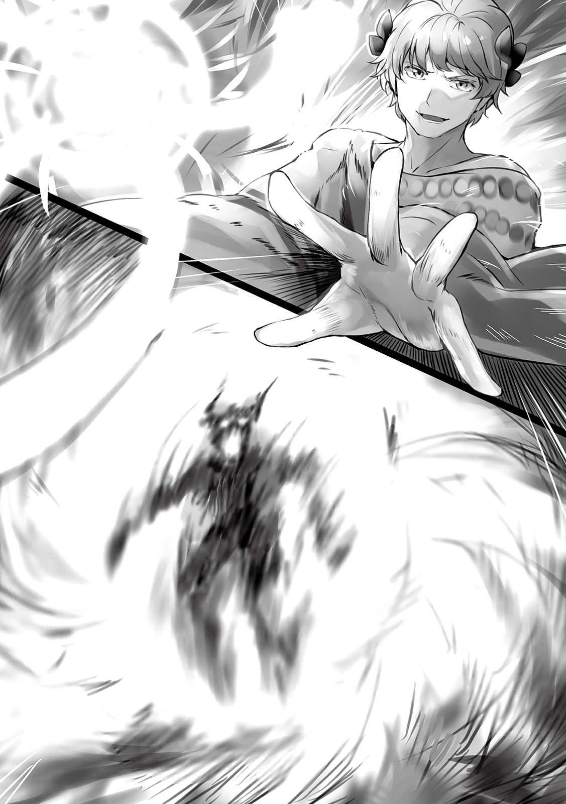
お酒をかけてから火をつけるなんて、確かに単純で強力だけどちょっとえぐい。......っていうかパラスナさんが監修した本に書いてあった『酒属の魔法を使う人』ってバッカスさんだったんだ。本で得た知識だけだとただのおかしな属性だけど、実物はこんなに強力なのね。
「はー、強かった......ＳＳランク亜種くらいの強さはあったぞ......。ところで少し横目で見てたんだけど、まさかたったあれと同格の相手を一度で倒すなんてね。しかもＡランクの魔法で」
「実はちょっと危なかったんですけどね。なんとか倒せました」
「たしかミカちゃんはＦからまだランクが上がっていないんだっけ？ 僕から今度、ＳランクかＳＳランクに推薦しておくよ」
「ありがとうございます......」
バッカスさんは相手を倒しきったことを確認すると、土属性と水属性の魔法で消火していた。ってことで私たちは済んだけど......有夢とカルアちゃんの方はどうなのかしら。
▼△▼△▼
「むぅ......」
「ひっ、おわっ......ちょまっ!! ......なんてね」
「あ、アリムちゃん頑張ってください！」
俺の攻撃が一切当たらない。この悪魔は一体どんなスキルを身につけているのか、俺が剣で斬りかかっても煙になって回避してしまう。正確には元から煙だから攻撃が全然効かないんだ。どれだけ早く斬ろうとも、ゾーン状態になって滅多斬りにしようとも、なんの意味もない。
しかもメフィストファレスの持っている鎌は触れたものを所有者が一番得意な魔法の属性の物質に変えてしまう効果を持っている。つまり彼が多用してる煙に変えてしまうんだ。
俺の剣の方が位が上だからなのか刃先を弾いても煙に変わらないけど、万が一身体に掠りでもしたらと思うとゾッとする。まあ俺の方が比べ物にならないくらい速いみたいだから攻撃をさばくこと自体は余裕だけど。
ちなみに誘拐するときに煙のスキルでカルアちゃんの部屋の中に入ったらしい。自分で暴露してた。
「はぁ......はぁ......しかし避けるのも疲れましたね」
「じゃあやめればいい......よっ！」
「ひえっ。そしたら斬られちゃうじゃないですかヤダー！ そもそも私、人間で言えばＳＳＳランクほどの強さを有してる自信があったのですが、貴女は一体どうしてそんな強いのですか？ 煙になれるスキルがなければとっくの昔に負けてますよ」
「教えないよ！......サンダーマーチレス！」
こいつからカルアちゃんを引き剥がすことには成功してて、今俺より後方にいるから遠慮なく魔法はぶっ放せる。ただ、おそらく魔法でも......。
「ひぇぇ......今の俺じゃなかったら大怪我してましたよぉ。困りましたねぇ」
俺の方が強くて......その上ＭＰを消費するようなスキルに頼って攻撃を回避し続けるのはキツイはずなのに、メフィストファレスは笑みを絶やさない。小馬鹿にしてるかのように笑い続けてる。
そもそもＭＰに限界があるのかな。それもなにかのスキルで補ってたりする可能性があるかも。だとしたら決着つかないぞこれ。
「やっぱりダメなんだね」
「それは煙ですからね。煙に電撃は効きますか？ 煙に火は効きますか？ 効きませんね？」
俺もこんなスキル欲しいな。身体を雷にできたりしたら楽しそうだ。でもそれで間違って美花にハグしたりしたら......。考えるのはやめておこう。
とりあえず敵は煙だし、単純に考えたら風に弱いはずだ。でもそんな簡単に行くかどうか......って気がついたら美花とバッカスさんは敵を撃破し終えてたみたいだね。となれば二人にカルアちゃんを保護してもらって、どんな反撃がきても大丈夫なようにしよう。
「カルアちゃん！ 立てる!? 」
「は、はい！ 少し具合が悪いですがおそらく大丈夫です！」
「じゃあ走ってミカ達の元に行って！ ミカとバッカスさんも迎えてあげて！」
「わかりました！」
「了解！」
カルアちゃんは足を震わせながらヨロヨロと立ち上がり、美花の元まで向かった。ミカとバッカスさんもカルアちゃんの元に駆けてゆく。
「させませんよぉ！」
「それはこっちのセリフだよ！」
メフィストファレスが鎌で俺に攻撃すると見せかけ、煙になって俺から抜け出し、カルアちゃんの元へ向かった。しかし俺はゾーンを展開して巨大に設定初級魔法、風属性ボールを横っ腹に浴びせてやる。
「ぐはッ......！」
普通にふっ飛んで行った。なんだ、効かないと思い込んでしまっていただけか。メフィストファレスは横腹を押えながら立ち上がる。
「お、俺の弱点を見破りましたね......！」
「うん」
美花とバッカスさんはしっかりカルアちゃんを保護したようだ。もうこれで俺たちがここにいる意味はなくなった。あとはこいつを倒せば終わりだ。
「......もうボク達の用事は済んだみたいだ。そろそろトドメを刺させてもらうよ。......こう見えてもね、ボクの大事な友達を酷い目に遭わせたことに心底腹が立ってるんだ」
「そう......ですね。俺の負けですか」
「じゃあね」
本当はこんなに人間に近い見た目をしている人を倒すのは嫌なんだけど、これ以上何をされるかわかんないから仕方ないよね。......うん。覚悟はできてる。
「ウインドマーチレス！」
「ぬぉああああああああああああああああああああああ！」
少し前にはなったサンダーマーチレスよりさらに数倍の威力に設定して風を起こす。それでも俺の魔法力の一割ほどしか使ってないけど、それ以上やるとカルアちゃん達みんなにも被害が出るかもしれないからね。かなり広いとは言えこんな屋内でやるものじゃ......。
「油断しましたね？」
吹き荒れる暴風の刃の中からメフィストファレスの白い手袋がニュッと現れて俺の首をがっしりとつかんできた。
「えっ......ぅ......かはっ......」
「アリムちゃん!! 」
「あゆ......アリムッ!? 」
まさか、さっきのウインドボールを食らった時は効いたふりだったのだろうか。ミカとカルアちゃんの悲鳴に似た呼び声が聞こえる。
......メフィストファレスは首を掴んできただけじゃない。俺の寝間着の中に煙が入り混んで手足に絡みついてきてる。煙を自由に操作することもできるんだ。しかも一方的に向こうから触れることが可能。......ただ攻撃力を全力にすれば振り払えそうだ。
身体を動かそうとしてる間にメフィストファレスはどこからともなく一枚の紙を取り出してきた。そして俺のおでこにぺたりと貼り付ける。
「強制契約開始です」
「え、な......なにっ......」
体が動かなくなった。煙に拘束されたのとは別に、金縛りにあったように動けない。メフィストファレスはまたどこからか地球のボールペンみたいなのによく似たペンを取り出し、俺の顔の上で貼り付けた紙に何かを書いた。
......俺のＭＰが少し吸われたような、そんな感覚が走る。それからメフィストファレスはとても嬉しそうに笑うと、俺のおでこから紙をとって破いた。そして俺の金縛りはとけ、首から手も離してもらえ、体にまとわりついていた煙もなくなった。
「はぁい、ほんっとうにありがとうございましたぁ！ もうおかえりいただいてもよろしいですよ？」
「一体どういう......」
「俺は目的を果たしましたので。あ、ここ、契約の代償にしたので崩壊しますよ。気をつけてくださいね。では......」
「まって!! 」
「逃がさないよ！」
そう言いながら美花は弓を引き絞ってメフィストファレスに放った。バッカスさんもなんかの魔法を撃った。でもやっぱり二人の攻撃が当たることはなく、メフィストファレスを貫通して向こう側へ行ってしまった。
「ふふふ、当たりませんよ。あ、そうだ。最後に一つメフィラド国王に伝言を残していきましょう。......悪魔神サマイエイル様の依り代となる身体はメフィラド王家の正統な血筋であることだけが条件ではないのです。死んでいないといけないんです。しかし生きているように綺麗でもないといけないのですよ。......この大悪魔の一人にてサマイエイル様の側近であるメフィストファレスがそう言っていたと、お伝えくださぁい」
そう言うとメフィストファレスは散る煙のように消えていった。それと同時に俺たちが立っているこの地面が大きな音を立てて揺れだす。メフィストファレスは崩壊するだとか言ってたっけ。
「な、なんなんですかこれは!? 」
「地震!? 」
「よくわかんないけどとりあえずみんな外に出よう！」
走ってあの出入り口までいく。そんなに大した距離じゃなかったからすぐたどり着いてなんとか全員無事に出ることができた。その後すぐその出入り口にガラスのような亀裂が入り、割れたかと思ったら次の瞬間には光の粒になって消えていった。もうどこにもそれは見当たらない。
「......なんだか私、嫌な予感がする」
「俺もだよ。でもとりあえず今は、四人でお城に戻ろう」
カルアちゃんは無事に救出できたのに全くスッキリしない。複雑な気持ちで俺たちはお城へと戻った。
国王様が涙を流しながらすっ飛んできた。ステータスを使っていない状態なら瞬間移動にしか見えないスピードだ。そしてカルアちゃんを優しく抱きしめる。
「カルア、あぁ、カルア......良かった、本当に良かった」
「お父様、ただいま戻りました。ご心配おかけしました」
「いや......いいんだ。帰ってきてくれればそれで。あぁ......」
いつもは優しくも威厳に溢れてるけど、今の国王様は完全に一人の父親だった。たぶん本当はこうなんだろう。ルインさん達の件やサンダーバードの時のカルアちゃんの件で、俺に心の底から感謝して全面的な信頼を寄せてくれるようになったのも納得できる。正直、今までは自分のことながら見ず知らずの子供を信用しすぎなのではないかと思ってた。
「お父様、みんな見ておりますよ」
「知ったものか。大事な娘が最悪の存在達の元から無傷で戻ってきたんだぞ!! ああ、アリムとミカ、そしてバッカスよ。ありがとう、ありがとうっ......！ 特にアリムには、何度も、何度も......！」
「お父様っ......！」
国王様はひたすら感謝の言葉を繰り返した。十五分はかかったかな、やっと落ち着いた国王さまは目を真っ赤にしながらも立ち上がった。
「取り乱した。申し訳ない」
「仕方ないですよ国王様。同じ状況なら誰だってああなります」
「ああバッカス、礼を述べるばかりで悪いが、本当に助かった。おかげで城内の混乱はなんとかなったし、情報も外に漏洩せずに済んだ」
「偶然泊まることになってて良かったですよ」
「だな。ところで悪魔はどうなった」
「あの......それがですね」
俺はメフィストファレスと名乗る、ファウストに直接手を下した張本人の悪魔を逃してしまったこと。「大悪魔の一人」と言っていたのでおそらくまだ悪魔がいること、そしてメフィストファレス本人から伝言しておいてくれと頼まれたことを伝えた。
「悪魔がまだ居るのは、アリムが薬を飲ませた悪魔からすでに聞いている。しかしその魔神が依り代とする条件がどうしたというのだろうか......アリムが助けなければカルアは殺されていたという忠告か？」
「む？ そうではない気がしますぞ。正統な血筋......綺麗な死体......あ、あああ!? 」
「オラフル、どうした!? 」
「国王様......お、お妃様！ お妃様のご遺体のことではございませんか、この伝言は！」
大臣さんがそういうと国王様はハッとした表情を浮かべ、額に汗が滲みでてきた。明らかに慌てているし、周りもざわざわと騒がしくなっている。わけがわからないから聞いてみよう。
「え、カルアちゃんのお母さんですよね？ その方のご遺体がどうかされたんですか？」
「......アリム殿はお妃様が非常にお美しかったことはご存知ですかな？」
「それは私とお姉さま達でアリムちゃんにお教え、もとい、自慢してしまいました」
「そうでしたか姫様。ならば話が早い。実はそのご遺体もあまりに美しかったが故、永久に腐敗しないようにし、ここから少し離れた特殊な墓場に眠らせているのです......ですから......」
「......まさか」
......メフィストファレスが言ってた条件にぴったりじゃないか。俺は思わず国王様の方を見た。絶望したような顔をしている。いや、実際そうなんだろう。小刻みに弱々しく震えながら、それでもどこかに連絡をしているようだった。しばらくして、国王様はその場にへたり込んだ。そして、ボソボソと苦しそうに言葉を紡いでゆく。
「......カ、カルナが盗まれた」
「なんっ......あそこは厳重な警備がされていたはずだ！ なにかの見間違いではないのですか国王！」
「ゴルドの言う通りですぞ!! 」
「いま、今、管理者全員にメッセージを送った！ 誰も、誰も返信をしなかったのだ！」
「なん......と......」
なんだか大変なことになってきたぞ。もう俺どうすればいいかわからないや。そのカルナ王妃のご遺体の管理者って人達もみんなどうしてしまったんだろう。......正直、連絡が取れないってことは悪いことしか想定できない。というか、その遺体を綺麗なまま保存していたことにも驚きだけど。あの肖像画のような美しさがまだ残ってたってことなんだろう。
ふと、俺の視界にカルアちゃんから落ちる何かがうつった。どうやら一枚の紙みたいだ。拾おうとしたけれど、美花も同じタイミングで気がついていたようで俺より先に拾ってカルアちゃんに話しかけた。
「カルアちゃん、これ落ちたよ」
「......？ なんでしょうかこれは」
「見覚えない？」
「ありませんね」
カルアちゃんは折りたたまれていたその紙を開く。そして絶句。そのあとしばらく動かなくなったかと思えば、慌てたようにウロウロしだし、最終的には国王様の隣に立って震える手でその手紙を渡した。
へたり込んだままの国王様はそれを受け取り、その紙を見つめる。だんだんと目が見開いてゆき、絶望の表情からカルアちゃんが誘拐された時に見た怒りを抑えきれないような顔に変わっていった。
「......こ、国王様？」
「オラフル、これを読んでみろ」
「は......はぁ」
どうやら何かの手紙みたいだ。大臣さんがそれを読むと先の二人のように表情が急変した。騎士団長さんが大臣さんに見せてくれと頼み彼の手へ。みんなに見えるようしゃがんでくれたので、俺や美花は肩から顔を出して内容を確認した。
それは本当に、驚くべきなのか、悔しがるべきなのか、怒った方がいいのか感情がごちゃごちゃになるようなものだった。差出人欄に『メフィストファレス』と書いている。
〈親愛なるメフィラド王国にお住まいの皆様へ。
どうもこんばんは！ 俺は大悪魔にして悪魔神サマイエイル様の側近、道化のメフィストファレスと申します。
もうこの手紙をお読みになるころには気がついていることでしょう。カルア姫の誘拐はカモフラージュであり、本来我々が狙っていたのはカルナ王妃であったことを！
そして近しいタイミングで、我々は勇者の剣からサマイエイル様を取り出すための特殊な武器も手に入れているのです。おわかりですね？ 悪魔神サマイエイル様はご復活を目前にしておられるのですよ！ サマイエイル様は何百年かぶりに封印から解放されるのです、おお、こんなにも長いこと封印されるとは、なんとおいたわしや......。
魔神が復活するのですから、皆様は必死に新たな勇者の剣と勇者を見つけなければなりませんね？ 短時間で両方見つかりますかねー？ 特に勇者なんてサマイエイル様が最後に封印されてから一度も現れていないんですよね？ なぜですかねー、おかしいですねー。
あ、おそらくこれを読んでる間にも復活の儀式を行ってますからね。もし仮に万が一勇者が見つかったとしても、その者を我々大悪魔やサマイエイル様本人を倒せるまで成長させるのにどのくらいかかるのでしょうかね。ま、頑張ってくださいよ！ 諦めなかったらなんとかなりますって！ いくら頑張っても王妃様はもう戻ってきませんけどね！
てなわけで私たちにとってチャンスですからね、宣戦布告させていただきますよ。悪魔と魔物の軍団、対人間......血で血を洗う、戦争をしましょう！ 我々の目標はメフィラドの血を根絶やしにすること！ それを遂げるまで終わりませんよ！ 国民の皆さんもどんどん餌食にしていきますね！
というわけで、悪魔神様が復活し調子も戻られました際には俺たち大悪魔と多数の悪魔、魔物を引き連れてそちらに伺いますので。皆さん、安心して死んでくださいね！
メフィストファレスより〉
ガンっと何かを叩く音がし、地面が揺れた。どうやら国王様が拳を地面に向かって振り下ろしたようだ。彼を中心に床がヒビ割れてる。
そのまま国王様は無言で立ち上がると、深く深く呼吸をした。何度も、まるで自分に言い聞かせるように深く深く。しばらくして何十回も気持ちを落ち着かせるような行動をした後は、一つ息を吐いてから自分に注目するようこの場にいるみんなに呼びかけた。
「......全員私の話を聞く準備ができたか！ いいな。大変な事態になった。このようなことを招いてしまった原因の多くが私にある！ この短い時間で何度も取り乱しもした。申し訳ない。だがこれから王として、私は皆にやるべきことを命ずる！ どうかついてきてくれ」
「「......はっ！」」
「「はっ!! 」」
このお城で働いててこの場に居る人達が全員強く返事をした。部外者である俺はどうしたらいいかわからなかったけど、とりあえず気を付けだけはしておいた。
「まずは子供達だ。なにせ三人とも寝間着のままだしな。今日はこのままカルアの部屋に泊まってゆき、ゆっくり休憩を取ってくれ。そして大臣、騎士団長......それとティールとルイン。これから緊急会議を開く。宰相や幹部たちを全員呼ぶのだ。それから.........」
国王様の指示は続く。俺たちは最初にやるべきことを告げられたため、とりあえず言われた通りカルアちゃんの部屋で眠ることにした。たくさん話したいことはあったけど、今はやめておいた。
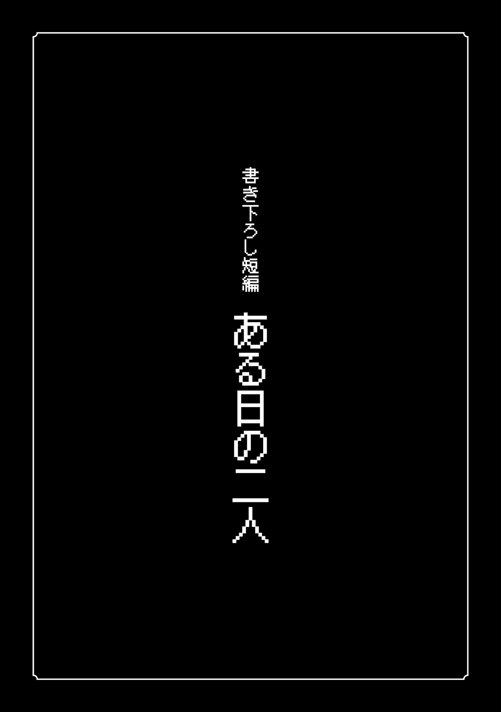
「あゆむー、何してんのー？」
「ゲームだよー」
私は声をかけながら窓から有夢のお部屋へ侵入した。私が有夢のどっちかが毎日こうやってお互いの部屋を行き来する。どちらかといえば私が有夢の部屋に来る方が多い。
私が来たというのに、有夢は携帯ゲーム機を開いてもう既に六回はクリアしてるＲＰＧをひたすらやっていた。スタートクエスト３だったっけ。発売してからまだ一ヶ月もたってないのにどれだけやり込んでいるんだか。
「今回はどんな縛りでやってんの」
「最初から最後まで主人公一人」
「よくやるわねー」
「飽きないからね！」
有夢は飽きる飽きないの感覚が普通の人と違う。正確にいえば忍耐力が凄まじい。本気を出したなら勉強をノンストップで四十八時間やり続けることだって可能だし、普通の人ならそんなことをすれば眠気と疲れでバテるかもしれないけれど、有夢はそれをこなした後、普通に十二時間くらいゲームをやり続けられるの。
ちなみに自己ベストは夏休みの間に五日間徹夜でゲームをしたことらしい。私も記憶が正しいければその現場に居合わせていたけど、四日目の午前まではピンピンしていた。寝てないのにお肌のツヤも良かったし、体に不調が現れているということもなかった。
「それで今日は何するの？」
「あれ、遊んでくれるんだ」
「ゲームやりながらでいいならね」
「......んー、やっぱいいや。勉強する」
「そっか」
「勉強しなくても平均以上取れる有夢には絶対負けたくないからね」
うちの学校は相当頭がいいらしい。小中学校が私立で付属だったのでそのままやってきたから実感がないけど。たしか学年最下位の子でも他の高校ではトップになれる可能性が高いだとかなんとか。
そんな中で有夢は勉強せずに平均以上。お父さんが世界的な研究者だし、弟の叶君が世紀の大天才だとか言われてるから血のせいだとは思うけど。
「負けるも何も、美花なんていつも学年で十番以内でしょ」
「それはしっかり勉強してるもん！ 有夢に負けたくないからね！」
「ほとんど勝ったことないよ？」
「本気出さないからでしょ！」
ほんと、周囲に気にはかけてくれるけど基本的にはゲームのことばかり考えてるんだから。そんなんだから私も告白するタイミングを逃すのよね。......こう、女として見られてるのかたまに気になる。いや、違うわ。その逆よ。有夢が自分を男だって自覚してるのか気になるわ。
「有夢......ところで今度有夢の新しいニーソ買いに行かない？」
「んー？ じゃあ明日の学校帰りね」
「おっけー」
やった、自然とデートの約束しちゃった。って違う。普通は男子高校生が履かないようなものをさらりと買いに行くのよ有夢......男としての意識があるのかの検証だったのにさらりと了承された。こうなったのも私が......三割くらい悪いんだけど。今日だってウサギの耳がついた白黒パーカーに黒いソックスとぶかっとした短パンだもん。可愛くて仕方ないわ。
「ねー、あゆむー」
「今度はなぁに？」
「有夢って男だよね？」
「定期的にそれ聞かなきゃ気が済まないの？」
「うん」
「......だから、ちゃんと男だよって」
じゃあ男かどうか確認してみよう。......私は自分で言うのもなんだけどスタイルがいい。胸もＥカップあるし、脚だって長い。そしてスラっとしたお腹周りとくびれ。加えて顔も昔から良いと言われてきた。
ともかくこのスタイルの良さを活かした誘惑をして、有夢が反応したらちゃんと男だって言えると思うのよ。反応してくれなかったら私が自信をなくすだけ。
というわけで有夢の後ろから抱きついてみた。あっ......！ 有夢に抱きついちゃった。えへへ......。なんて小さくて可愛くて安心できる背中なの。
「おわ！ なーに？」
「別にー。気にしないでー」
「変なの」
くっ......抱きついたことについては何も言われなかった。よく考えたら私、普段からよく有夢にはボディタッチしてるからそのせいで効果が薄れたのかもしれない。そもそもゲームしてるから反応が薄いのかもしれないわね。......んー、確かめようないじゃん。親しき仲にも礼儀ありだから変なとこ触るわけにもいかないし。今回は諦めようかな。
「あゆむー、ひまー！」
「えぇ!? 遊ぼうよってさっき言ったじゃん！ 勉強するんじゃなかったの？」
「やる気なくした。今日はもうやんない」
「じゃあ遊ぶ？」
「うん」
有夢がゲーム片手に一緒に遊び始めてくれた。こういうところは本当に優しい。うん、将来はやっぱり有夢を旦那様にしたい。私がお父さんとお母さんの会社継いで有夢を養うの。有夢には好きなだけゲームしてもらうの。それで、私がいちゃつきたいなーって時間にいちゃつかせてもらうの。外にはデート以外基本出さないようにして、有夢はモテるから他の女とは......！
「みか、おーい、みか！」
「はっ......私一体なにを!? 」
「今日どうしたの、大丈夫？ 眠いんじゃない？」
「いや......えっと、そうかも。やっぱり有夢のベッドで寝ていい？」
「綺麗に使ってくれるならいいけど」
「ありがと」
へへへ、許可をもらって有夢のベッドに潜り込んでしまった。有夢の匂いがする......到底男の子だとは思えないようなお花みたいな超いい匂いがする......。このまま有夢に包まれていたい。なんなら有夢と添い寝したい。有夢と添い寝したい!!
「あ、あゆむーっ、と、隣来る？」
「え？ やめておくよ」
「なんでー」
「ゲームしたい」
またもやダメだったか。今日は完全にゲームから離れる気はないみたいね。仕方ないから私はそのまま過去の有夢に包まれて眠ることにした。
うとうとしてなかなかいい気分だった中、ゴンっていう大きな音が聞こえた。どうやら有夢が机に足をぶつけたみたい。
「うわ、うわっとと！」
おもいっきりバランスを崩してる。ずっと正座してゲームやってて、トイレか何かに行くために立ち上がったら足をぶつけて転びかけてるってところかな。......いや、まってこっちに倒れてきそう。
「おっとっとっと......あぶ......あぶな......おわ！」
有夢が私のもとまで倒れこんできた。私の上に半分のっかり、耳の真横で肘をつき、もう片方の手で私の手首を掴み、顔を間近まで寄せている。
これはハプニングだってわかってる。わかってるけどこれはまるで襲われてるみたいでドキドキする。少女漫画でこんなシュチュエーションを見たことあるもん。
というかここまで顔が近づいてくるの久しぶり。改めて見ると......本当に可愛くて仕方ない。でもこの状況だと珍しくほんの少しだけ男らしく見えるかも。
「あ、あゆむぅ......」
「あぅ......あ......え、えーっと......ご、ごめんね！ のっかっちゃって......け、怪我はない？」
「ない......よ」
どうせならこのまま強引にきて欲しい。有夢も私も顔が真っ赤。でもこれで異性だって思われてるってわかったわ。有夢はちゃんと男の子なのよ！ ......わかってたけど。
「ほんとにごめんね」
「じ、事故だから気にしてない......」
「そっか」
もしかしたら告白すればオーケーもらえるかもしれない。いや、それは昔からわかってるんだけど。
だからやっぱり、高校生のうちに告白を......！
───
──
─
「有夢に告白したいなって！ ......あれ？」
私は自分の声で起きてしまった。夢か。過去の夢ね。......今のは確か、地球でいう今年の春休みくらいのこと。懐かしいなぁ......あの時告白できてたら有夢は......。
「んー、みかぁ？ 俺になに告白したいの？」
「あ、ごめん起こしちゃったね。寝言なの......」
「そっか......」
「あと内容は、好きだって告白したいってことよ」
「えへへ......照れるな......」
寝ぼけてる有夢も可愛い。こうして付き合えるなんて、なんという幸せなんだろう。そうだ。今の夢でできなかったこと、今やらなきゃ。
「有夢......添い寝していい？」
「美花寝ぼけてるの？ 今してるじゃん」
「そうだった」
えへへ......とても幸せな夢を見たあとで、その中で願ってたことが現実で叶ってるって本当に幸せ。私は遠慮なく有夢に抱きついて二度寝することにした。
あとがき
『Levelmaker』第二巻の刊行を心より感謝致しまする。拙者、Ｓｓ侍と申す者にて候。
皆様、前巻はたいへん世話になり申した。連日嬉しい言葉や報告を頂き感謝感激雨あられと言った状態でいるでござる。あまりに嬉しくて涙を流した日もあったでござるよ......！
実は拙者、前巻のあとがきを書く際に、この口調であとがきを書いて良いものかとかなり迷っていたのでござる。故にカバーの作者コメントをこの口調にしてみたでござるが話を聞けば特に不快に思った方は居らぬようであったため、こうして二巻ではあとがきでもこの口調を反映させてみた次第。なにせ拙者はＳｓ侍、侍を名乗っている以上はこの口調が望ましいと考えているにて候。
話は変わるのでござるが、『Levelmaker』はこの書籍版と投稿サイトに掲載していたのとで書いてることが九割五分ほど違うのでござる。内容自体は同じでござるが一から書き直しているため、より設定が濃くなっている箇所や事柄の順序が違う箇所などがあるのでござる。故に双方どちらから読み始めた方でも楽しんでいただけると思うでござるよ。
さて、此度は前巻より増して多くの方に助けられたで候。故にこのあとがきを締めくくる前にもう一度担当者様とイラストレーター様はじめ関係者の皆様と読者の皆様に、感謝の言葉を。
電子版特典SS
ある悪魔の日常
「ふぁぁ......あー......」
ある者が起床した。青い寝巻きを着ている彼は枕元に置いてある懐中時計を確認し、時刻を確かめる。朝の七時丁度であった。
周りから明かりが入ってこない環境の中、自分で定めた時間に起きることができたことに少しの満足感を覚えながら特に変哲も無いベッドの上から降りる。
それから彼はこのマジックルームに備えられているキッチンへと向かい、食品を貯蔵してあるマジックバッグから硬めのパン二枚と溶けやすいチーズ、卵を二つ取り出した。調理器に火をつけそこによく馴染んでいるフライパンを乗せ、油を引く。油があたたまったことを確認したら卵を片手で二つとも割り目玉焼きを作り始めた。片手間にパンとチーズを温め、チーズの表面がとろけたらナイフで削ってパンの上に塗る。やがて目玉焼きも出来上がり、この二品を朝食として食卓に並べ味わって食した。
食べ終わったらすぐに風呂場へ向かってお湯を浴び、顔を洗い、少し出てきていた髭を剃る。歯磨きと髪型のセットまで済ませた後はベッドの前まで戻り、近くにかけてあった『衣装』に着替え始めた。彼は同じ衣装を何着も所持している。多くの装飾品まで身につけた後、素材にこだわった白い手袋をはめ、口元の空いた仮面をつけ、彼は一人でおもいきり口角を
「さて、今日も一日頑張りましょうかねぇ......！」
そう、大声で独り言を述べると男はすぐにこのマジックルームの外に出た。外は
男はまず、この常闇の中のある場所へと向かった。その場所の中央には寂れた剣が差し込まれている。彼はその剣の前でピタリと立ち止まると姿勢を正し深く頭を下げた。
それから常闇には似つかわしくないほど騒がしい喋り声などが響く部屋へと移動する。そこには大量の、人間とも魔物とも言えない悪魔と呼ばれる存在が思い思いに過ごしていた。
「おはようございまーーーす！ みなさーん!! 」
「おう！ おはようさんメフィストファレス！」
「今日も元気そうだな！」
「おかげさまで。お二人も、特に変わりはないようですねぇ」
メフィストファレスと呼ばれた男は、親しげに寄ってくる他より明らかに強力な魔力を放っている特別な悪魔たちに個別に挨拶を始めた。この時寄ってこなかった力を持った悪魔たちにもそれぞれ声をかけ、しっかりとコミュニケーションを取る。最後にとある悪魔に話しかけた。
「おはようございます、ルシフェルさぁん！」
「......ああ」
「今日もそっけないですねぇ、つれないですねぇ、もっと元気にお返事を！」
「......」
「......とりあえず変わったことはないようで」
諦めたようにメフィストファレスはルシフェルと呼んだ男の前から立ち去った。それから彼はこの常闇の場所全体を自分のスキルを使って異常がないかくまなく散策した。三十分ほどでそれが終わると自身のマジックルームに戻り紅茶を淹れる。
仮面を外し、その紅茶を啜ろうとしたその時、部屋の戸を叩く音が聞こえた。男は紅茶を飲むのをやめて仮面も付け直し、戸を開ける。そこにはフクロウの悪魔がいた。
「ホー！ 申し訳ない、先ほど挨拶しに来てくれた時、うっかり正午までの出来事を言うのを忘れておりましてな」
「おやぁ、そうでしたねぇ！ わざわざありがとうございますアモンさぁん！」
「毎日ワシの予言を聞くのは貴方くらいなものですじゃ。ワシにとっても日課になってしまってな。ホー！ では今日何が起こるか見てしんぜよう」
アモンと呼ばれたフクロウの悪魔はメフィストファレスに対して予言を一つ述べた。予言は大切な場面でなければ基本的にどうでも良いことしか聞かされない。しかし絶対に当たるためメフィストファレスは自分から頼み込み、アモンの予言を聞くことにしていた。
「むむむ、どうやら今日はメフィラド城下町全体の肉屋で爆炎牛の肉が大量入荷したため普段よりかなり求めやすい価格で手に入れることができるそうですじゃ。まあ、高級肉であることには変わらないようじゃがな」
「爆炎牛ですかぁ......肉自体は高すぎますし、内臓を買って炭火焼にでもしますかねぇ......」
「ホー......
「ええ、俺は好きなんですよぉ、とっても。では行きますかね」
メフィストファレスはアモンに礼を述べ、別れてから身支度を整えた。そしてこの常闇の出入り口と定めている場所まで行き、空間を開く。そこから暗い森の中へ出た。彼は空間を閉じてから自身の体を煙に変化させ空中を飛び始める。そのままメフィラド城下町へと向かい、たどり着いたら門と見張りを無視してそのまま侵入した。
人目が少ない場所で実体化し、仮面を外してから街の中へ潜る。少し目立つ服装をしてはいるが街民は誰もそのことについて特に言及しようとする様子はない。
メフィストファレスはそのまま一番近くの肉屋まで向かい、その店の店主に話しかけた。
「あのぉ、すいません」
「あんまり見ない面だな、何が欲しいんだい？」
「実は爆炎牛が入荷したと聞きまして」
「おお!? さっき仕入れに成功したばっかなのによく知ってんなアンタ！」
「その爆炎牛の臓物を見せていただけたらなと」
「あー、臓物ね。ゲテモノだけど餌としてはたいへん美味らしくペットに食わせる人も多いから、一応入荷してるよ」
「あるだけ見せていただけませんか」
「いいよ！」
肉屋の店主は店の奥から箱に雑に詰められた牛の臓物を持ってきた。メフィストファレスの前にその箱をドスンと置く。
「ほらこれ、トングと受け皿。好きなの選びな。先に言っておくが爆炎牛は臓物ですら結構値が張るからよ、財布と相談しろよ」
「ありがとうございます」
メフィストファレスは自分の好きなモツを選び、渡された皿の上に乗せて行く。何回かに渡って食べられる量だけ盛ると、皿とトングを店主に返却した。
「......おー、この量なら三千五百ベルだな」
「なるほど......えーっと、これで丁度ですね？」
「おうおう、まいどあり！」
メフィストファレスは目的の物がすんなり買えたことに満足し、その店を離れたが、手持ちの金がだいぶ減ってしまったことに気が付いた。そこで彼はこの街の中心部にある公園にやってくる。屋台や見世物を行う人々が多くいるこの公園の一角に、メフィストファレスは持ってきていたマジックバッグから大きな木箱と逆さにしたシルクハットを置き、木箱の上に立った。
「さあさあお立ち会い！ これから世にも珍しい曲芸を披露しますよぉぉぉ！」
大声で人を呼び、ある程度集まったことを確認するとメフィストファレスはマジックバッグから大量のナイフを取り出しそれらをジャグリングして見せた。スキルとステータスを一切使わずに己の技量のみで。また他にも三つ玉を用意しそれを積み重ね自身はその上で逆立ちをしたり、片手では数え切れない長い棒と皿を使い皿回しなどを行なった。
こうして数々の芸を披露すること一時間、頃合いをみてメフィストファレスは自身のパフォーマンスが終わったことを大勢集まっていた観客達に告げた。拍手が
使用したものを全てしまい、お金もしっかり回収したメフィストファレスはその場を去り、人目がないところで再び煙となってメフィラド城下町を出て行った。そして薄暗い森に到達すると特定の場所で秘密の空間を開け、その中に入る。前々から準備していたかのようにアモンが迎えた。
「戻られましたな。とても活き活きした顔つきですじゃ。その様子だと目当てのものは買えたようですの？」
「ええ、十分に」
「ではこれから臓物焼きを？」
「いえ、先に魔物達の管理をしなくては。......それからのお楽しみですよぉ」
「そうじゃったか。ご苦労ですの」
「では」
メフィストファレスが軽くスキップするように仕事場へ向かう様子を、アモンは視界から外れるまでジーッと眺め続けた。
著者プロフィール
Ｓｓ侍
Esuesuzamurai
どうも拙者、Ｓｓ侍でござる。侍と名乗っているでござるが、別にまげを結っていたりはしないでござるよ。もちろん半生で一度も......いや、どうにもあったような気がするでござるな......。
.suke
.suke
２巻をお手に取っていただきありがとうございます。文章と一緒にイラストも楽しんでいただけたら幸いです。
pixivID:4153486
Twitter:@sukemyon_443
Levelmaker─レベル上げで充実、異世界生活─２
2019年５月１日発行 ver.1.2
著 者 Ｓｓ侍
編集協力 株式会社MARCOT
発行所 TOブックス
〒150-0045 東京都渋谷区神泉町18-８
松濤ハイツ２Ｆ
03-6452-5766（編集）
0120-933-772（営業フリーダイヤル）
Ⓒ2019 Ss侍
※無断で複製・複写・データ配信などをすることは、かたくお断りいたします。
本電子書籍は下記にもとづいて制作しました。
Levelmaker─レベル上げで充実、異世界生活─２
発行日 2019年５月１日 第１刷発行
本作品の全部または一部を無断で複製、転載、配信、送信したり、ホームぺージ上に転載することを禁止します。また、本作品の内容を無断で改変、改ざん等を行うことも禁止します。
本作品購入時にご承諾いただいた規約により、有償・無償にかかわらず本作品を第三者に譲渡することはできません。
本作品を示すサムネイルなどのイメージ画像は、再ダウンロード時に予告なく変更される場合があります。
本作品は縦書きでレイアウトされています。
また、ご覧になるリーディングシステムにより、表示の差が認められることがあります。